目录.............................................................1
引言.............................................................3
第一部分 行业及部门调研............................................4
第一章 甲区的阶层分析..........................................5
一、甲区的经济结构.............................................5
三、小资产者.................................................10
四、无产者...................................................14
五、甲区的劳资矛盾............................................19
六、基本结论.................................................21
第二章 S 工厂调研报告.........................................24
一、 基本情况................................................24
二、 部门生产情况概述.........................................24
三、 工资和福利...............................................26
四、 公司其他情况.............................................26
五、 员工生活................................................27
六、 后记....................................................28
第三章 某日资企业调研.........................................30
一、基本情况.................................................30
二、 内部管理................................................30
三、碳粉生产部门情况..........................................34
四、公司其他情况..............................................36
五、工人日常生活..............................................37
六、工会.....................................................38
七、权益与斗争情况............................................39
第四章 H 公司调研.............................................41
— 、H 公司简介...............................................41
二、工人的情况................................................43
三、技术员...................................................46
四、管理人员.................................................49
五、小结.....................................................51
第五章 珠三角某电子厂的情况....................................52
一、基本信息.................................................52
二、生产方面和员工在生产中的情况................................52
三、员工薪酬待遇方面..........................................54
四、其他方面.................................................55
五、小结.....................................................55
第六章 对考古行业的分析——纪念中国考古 100 周年..................57
第七章 石化行业的一些见闻......................................60
一、石油化工远比想象复杂和危险..................................60
二、石油化工企业大量使用外包工..................................60
三、石油化工外包工人基本情况...................................61
第八章 某一线城市汽车销售调研..................................64
一、基本信息.................................................64
二、劳动情况.................................................65
三、薪酬待遇.................................................66
六、思想情况...............................................68
第九章 西南某省 H 镇个体户调研................................70
一、背景介绍...............................................70
二、具体现象...............................................70
三、人员情况...............................................72
四、 趋势与诉求............................................75
五、阶级分析...............................................75
第十章 某国企外包维护人员情况调研.............................77
一、工作模式...............................................77
二、人员概况...............................................77
三、薪酬待遇...............................................78
四、群团关系与公司地位.......................................78
五、将来打算...............................................79
第十一章 某新能源企业的调研..................................80
一、加班变态，过劳死时有发生..................................80
二、资本市场融资情况........................................82
三、盗窃国有资本............................................82
第十二章 互联网行业的 996 逻辑................................83
第十三章 互联网某团队矛盾分析.................................90
第十四章 互联网 996 的幻象..................................100
第十五章 一个资本家走狗的世界观是如何重塑的....................117
第十六章 A 市 B 路外卖骑手调研...............................120
第十七章 打击校外教培之后，教育真的公平了吗？...................130
第十八章 一名教培行业从业者在疫情前后的思想转变.................137
第十九章 北方某前贫困县农村调查报告...........................140
第二十章 凯言村调研报告.....................................147
第二部分 实践调研.............................................158
第二十一章 某工厂实习见闻录..................................159
第二十二章 打工日记........................................162
第二十三章 一名底层大学生的学习、工作经历与思想转向..............171
第二十四章 一名职校生的打工经历..............................175
第二十五章 职校生“实习”经历：“我就像被猪笼草捕获的猎物”.......182
第二十六章 职校生调研：阿丹的故事.............................190
第二十七章 困在大山里的人...................................199
第二十八章 四川农民工曹大哥的访谈记录整理......................203
第二十九章 某建筑工人访谈...................................207
第三部分 自我改造.............................................211
第三十章 我的家庭..........................................212
第三十一章 一位哈尔滨大学生的来信.............................217
第三十二章 来自 HIT 的声音：我在这里..........................219
甲区为某工业型街道，按公开资料，甲区面积约 40 平方公里，人口结构以外来农民工为主，本地户籍人口很少且往往为土地所有者。根据公开资料，甲区人口不到 40 万，甲区职工约 35 万人，户籍人口不到 1 万人，户籍人口中约一半为原住民。
按生产方式分，甲区经济分成资本主义的生产和依附于资本主义的个体生产；资本主义的生产又分成两大部分（按股权归属分）：社区股份合作公司和其他工商业企业。
社区股份合作公司是村民以土地出资入股建立的公司，甲区有社区股份合作公司共十余家。
社区股份公司控制了甲区大量的土地，通过修建工业园并出租的方式，每年收取租金超过数亿元，租金收入占社区股份公司收入的 95%以上。另外，社区股份公司兼营物业管理、保安公司，还通过子公司开设网吧等娱乐机构盈利，这部分收入占比不足 5%。社区股份公司每年会给村民分红，据称，近年人均分红在3-5 万不等。
社区要职和股份公司要职一般由本地豪强轮流担任。比如，A 社区有三个大姓，某大姓人员担任社区党委委员，其哥哥是股份公司监事。再如，B 社区党委书记和股份公司董事长是亲戚。
社区股份合作公司，是地方豪族统治当地的经济基础。
根据公开资料显示，除股份公司外，甲区有各类企业约 4200 家。从结构来看，甲区产业呈现典型的以第二产业为主，第三产业为辅的特征。
甲区工业以电子和设备制作为主，低端制造业雇佣人员比例超过工厂工人的七成。甲区商业多是低端服务业，如餐饮、住宿、批发零售业等。甲区有大型消费综合体数家，另有 2-3 家星级酒店。
根据政府工作报告，甲区规模以上工业产值与规模以上服务业营收之比，大致为 100:1（如果算上小微企业和大量散布在居民楼和出租楼中间的小商业，工业产值与商业营收的比例大致在 9:1）。规模以上工业产值与社区股份公司租金收入之比，大致为 200:1。如果净利润占工业产值的 5%算，规模以上工业企业净
利润与社区股份公司租金的收入之比，大致为 12:1。可见，工业企业是甲区的经济支柱。
甲区企业近 4200 家，主要集中在电子行业，大致占一半比例，其次是设备
制造，大致占 2 成左右。甲区百人以上企业仅 200 余家，其余 4000 来家企业均不足百人（分散在各工业园区）。甲区大中型企业（300 人以上）占比不到 2%， 雇工却接近 60%，产值合计占 7 成左右。
甲区企业可分为大厂和小黑厂两种，其中大厂又可按待遇、合法程度、管理严苛程度等分成四个小类。
1、一类厂和二类厂
一二类厂多是国际集团公司的子公司，主要以欧美日等工业垄断资本为主。一二类厂生产的产品高端并具有一定垄断性，利润率较高。两类厂雇工合计占比约 20%（占所有工厂工人比例）。
一二类厂产业符合地方产业导向，自身也比较配合地方的工作，内部一般有专人负责政府对接。他们往往会参加商会/行业协会，且为副会长单位、理事单位等。他们一般为地方纳税大户，也受地方重视，不仅能够享受各种政府补贴， 地方还会主动为他们解决厂房等各种问题。为增强资本家及其代理人的政治归 属，地方特别重视在商会内搞党建工作。
一方面，这些工业垄断资本有足够的利润提高员工的工资和福利；另一方面， 因其主要客户是国际大公司，这些国际大公司多受制于某些国际标准（如SA8000、RBA、OHSAS），而这些国际标准中往往又安排有劳工条约，因此一二类厂的经营比较规范，且在工资之外，还会有餐补、住房补贴、年终奖等福利。
一二类厂主要的区别在于普工的工资。一类厂普工基本工资（加上福利）较高，且随工龄不断增加。以十年老员工算，一般而言一类厂普工 5 天 8 小时到手
工资在 4000-6000 元左右，可以不靠大量加班维持生计；而二类厂普工 5 天 8 小
时到手工资不到 3000 元（二类厂普通工资一般也会比当地最低工资高出几百块），必须靠大量加班维持生计。一二类厂的利润均较为丰厚，都能够支撑较高的普工工资。区别往往在于，一类厂普工曾有过集体行动或其他原因，使得工资上涨。因此，随着劳资力量对比等客观因素发生变化，一二类厂经常互换位置， 一类厂可能掉落成二类厂（物价涨工资不涨），二类厂可能升级为一类厂（比如集体行动后基本工资大幅上涨）。
2、三类厂
三类厂以内资、港资、台资为主，资本规模也较大，但处于竞争比较激烈的行业，技术含量不高，不具备垄断优势，利润率比较低。三类厂是大厂的主体，
雇工占比大致在 40%（占所有工厂工人比例）。
三类厂大多为代工厂，没有自己的主打品牌，为典型的劳动密集型企业。三类厂产品以元器件和低端的最终消费品为主。比较典型的三类厂产品有变压器、光纤、学习机、家用电器、耳机、手机配件等等。这些产品的特点是技术含量低， 一般小公司购买流水拉和元器件后也能生产。三类厂竞争的就是规模，或者说是雇佣工人的人数。能开一条拉还是三条拉、能雇十个人还是三十个人，是他们经营的关键。他们主要靠形成规模效应，挤垮其他竞争者（多为小黑厂）。
三类厂的老板通常和当地有一定的关系，管理层熟知劳动法的漏洞，并且能够摸清楚地方（尤其是劳动部门）在执行层面的一些潜规则，见缝插针地违反各种劳动法律法规，从各种方面压榨工人。他们所在的地区商会、台商商会等机构， 也会邀请仲裁员等法律专家给企业人事培训如何规避法律风险。
三类厂普工基本工资低（一般是当地最低工资），普工需靠大量加班维持生计。该类厂管理经营有诸多不规范之处，比如社保公积金一般仅按基本工资而非实际工资缴纳，再如休息休假和日常管理方面也常常违法（普工无法依法享受产假、病假）。
3、四类厂和小黑厂
300 以下企业几乎均为小黑厂，主要是电子厂，以生产电子元器件为主的， 如电路板，Pcb 板，遥控器，手机外壳，电子烟，等等。
小黑厂资本规模小，现金流吃紧，靠无休止地压榨劳动力获取微薄的利润。小黑厂大量散布在甲区的各种工业园中。小黑厂老板也许能和政府官员建立
私人联系，但是小黑厂本身却是不符合政府产业导向的，它们在甲区多被归为散乱污微企业，属于要逐年清退的对象。
小黑厂管理极不规范，社保公积金缴纳方面存在较多违法行为，且存在大量克扣工资行为。小黑厂基本工资普遍为最低工资，以沿海为例，基本工资在1500-2200 元之间。工人无法靠最低工资完成劳动力再生产，因此被迫自愿加班。
小黑厂加班时间一般在一个月 100-110 小时（周一至周五加班 3 小时，周末加班
11 小时），部分企业会更多。
四类厂就是资本规模较大的小黑厂，特点与小黑厂一致。
企业主包含大企业和小企业，社会管理者主要指班子成员。
甲区上层阶级由三部分构成：（1）以街道领导班子为代表的社会管理者核
心集团（领导班子加上街道实权人物）。他们在本地基本不直接掌握生产资料（但不排除自己家族在其他地方控制生产资料）。（2）以村股份公司董事长和社区党委书记为代表的地方豪强。他们掌握本地大量土地，社区股份公司是他们的经济基础。（3）以大厂（一二三类厂为主）股东和总经理等高管层为代表的私人工业垄断资本及其代理人。他们垄断了本地的主要工业企业，是本地经济的核心支柱。
社会管理者核心集团和工业垄断资本之间。一方面，工业垄断资本的产业构成往往符合政府的产业导向，并且部分大资本会按政府产业导向安排自己的资本分布。工业垄断资本通过解决就业、缴纳税收的方式，带动本地经济，提升官员政绩，并维持资本主义社会的发展。另一方面，社会管理者核心集团也会积极落实上级产业政策为大资本服务，比如，他们会帮助工业垄断资本申请补贴。工业垄断资本在一定程度上能够影响本地政府的政策，本地政府的决策也会考虑他们的利益。比如某些工业垄断资本要扩建厂房，但本地用地紧张，政府就会清理散乱污微企业，帮助大资本腾地。甲区政府为了帮助某厂（三类厂）落实厂房，曾要求某工业园区不再和租约到期的某些小企业续约，以便腾出厂房供该厂扩建。
一般而言，工业垄断资本还会配合政府完成各种指标，比如配合选举抗击疫情优秀员工；再如，今年扶贫攻坚，为保证全部脱贫，每个街道都有精准扶贫名额，甲区为了完成任务，动员工业垄断资本成立扶贫基金，每月援助精准扶贫对象一定数量的钱，以便完成指标（连续 6 个月达到脱贫标准）。
这一切，反映了甲区政府和甲区工业垄断资本之间的关系。
社会管理者核心集团和土地资本及其代理人（即地方豪强）之间。土地资本及其代理人是典型的寄生虫，他们寄生的对象主要为工厂主和工人，寄生的主要方式是收租（厂房的租金和工人的房租）。社区股份合作公司是他们主要的经济力量。他们通过股份合作公司掌握了大量土地，主要以收租为生，甚至连资产阶级所谓的进取心都不具备。甲区重大项目实施遇到的最大困难就是用地的问题， 村民要高价赔偿，或者违规建设增加赔偿面积等，很多工程好多年都搞不定。害怕尾大不掉，甲区逐步对这些土地资本采取限制的政策。近年来，土地资本的利益必须让位于体制的利益，比如甲区建设区域商业中心需要征地，土地资本只能服从。
工业垄断资本家和土地所有者之间。两者是有好合作关系，土地所有者会收取不低的租金，但工业垄断资本完全能承受。土地所有者从来不去骚扰大资本， 比如，某二类厂所租厂房是原村长的土地，相互之间关系良好。
剥削阶层的下层主要由两部分构成，一是工商业资本中的小资本（以及某些
中介），这些小资本主要是外地人（本地人一般不开厂而是收租）；一是本地普通村民中有一定土地的人。
这两部分人都是剥削阶层，但并不能影响本地政策，对地方决策往往无能为力。
1、小的工商业资本家
由于历史原因，甲区有大量小微企业。产业结构上，低端加工企业占多数， 资本体量小，利润微薄。根据政府报告，甲区未来定位是高端制造业和区域商业中心，这种定位与甲区现状产生冲突。从工业来讲，一方面重点企业有用地需求， 但街道土地资源极其有限，另一方面甲区现有大量散乱污微企业，这些企业单位产值地下，占据大量工业用地。从第三产业来看，甲区人口大量为外来务工人员， 无法支撑区域商业中心的定位。因此从长远来看，甲区必然清理小微企业，并对现有用地重新规划。事实上，近年来政府一直在清退散乱污微企业，为引进高端企业腾出厂房。
因此，从某种角度而言，小的工商业资本家仿佛私生子。绝大多数小企业不符合地方产业政策，问题又多，带动经济能力有限，地方并不待见他们。疫情期间，政府会救助大企业，但对小企业的帮助很少。小企业管理不规范，安全隐患更大，安监、劳动等执法部门工作人员会时常“关照”小企业，小企业主在这些人面前也是毕恭毕敬。
有些小的工商业资本家（多是做工程的），会想办法与街道层面的官员搞好关系。于是就产生了一群专门的中间人，这群中间人一般是本地村民或者社区工作人员，他们帮着小资本家和街道领导牵线搭桥，从中捞取好处。
不仅如此，小的工商业资本在土地所有者面前也是唯唯诺诺。土地资本压榨小老板很厉害，小老板欠房租，他们就直接断水断电，小老板基本上是依附于他们的。甲区要向高端制造业和区域商业中心转型，厂房房租一直在涨，导致很多小厂利润不断被挤压，最终被迫搬走。前段时间，有小老板拉人跳楼秀，有小老板堵工业园门口，起因就是房租暴涨了一倍多。
土地所有者的雇佣人员甚至都能指挥小资本。比如，某个没有执法权的政府事业单位，想让小厂老板配合调研，这就很有讲究了。新人会怎么做呢？新人会直接找到小老板，讲明来意，请小老板帮忙。但是，小老板往往不搭理。而老油子就不一样。老油子会联系工业园管理处，让物业（土地所有者的雇佣人员）直接给小老板下命令，小厂老板一般就会配合调研。
小资本自身规模小，本就利润微薄，又被土地资本盘剥，为了保障资本的利润，他们除了合法剥削工人外，还会通过各种违法手段盘剥工人。因此小资本多数都是小黑厂，他们剥削工人异常凶狠。
中小型劳务中介的管理者也是剥削阶层的下层，他们为工厂输送工人，从中盘剥工价。他们是经济下滑后，资本体制渴望“灵活用工”的产物，他们是资本的服务者，是劳工的吸血鬼。这群人靠直接倒卖劳工为生，或多或少涉黑，工作人员社会习气极重，多数人意识反动。
2、本地普通村民
有一定土地的普通村民构成剥削阶级下层另一部分。他们一般有三大项收入来源：
（1） 通过股份公司分红。社区股份合作公司每年地租收入超过数亿，而需要分红的人员不超过 5000，理论上人均每年可分红数在 10 万左右。据了解，现实中大致人均分红在 3-5 万元。
（2） 房租收入。村民在自己宅基地上面修建民房（一般会修好几层），并将自建的民房出租给务工人员。以一栋 7*4 的农民楼计算（7 层，每层 4 户）， 假设每户租金 700-800 元，房租月收入大致在 2 万元左右。
（3） 工资收入。村民一般不会去打工，但有一些村民，会与小厂合作，成为本地人厂长，帮着小资本跑跑村委，打点疏通村里面的关系，小资本为此每月会支付他们一两万块钱。
这些村民靠地租过着寄生性的生活。部分村民还兼当资本的掮客，分享小资本榨取的剩余价值。无疑，他们也是剥削阶级。但是这些人在整个剥削阶层里面往往处于弱势，他们影响不了政府决策，不享有任何政治方面的权力。
随着产业外迁，租房的人越来越少，房租收入时有下降，部分村民开始抱怨， 日子一天比一天紧了。
本地小资产阶级大致可以分成两大类，一类是传统小资产阶级，主要是做些小生意的人，他们掌握生产资料，并主要通过自己的劳动获取收益；第二类是新兴小资产阶级，主要是大厂的中上层管理或高级工程师，他们不直接掌握生产资料，但在生产劳动中可以一定程度掌握生产、组织生产，因此能获得不菲的收入。
传统小资产阶级主要由小店老板和跑运输的个体户构成。
1、小店老板
小店老板分两类，一类是有门面或铺面的，一类是没有门面或铺面的。
第一类包括小饭馆老板、奶茶店小老板、理发店小老板、加盟型小卖部老板以及菜市场摆摊售卖的贩子。
他们工作时间极长，以某重庆面馆为例，夫妻两人一般早上 6 点半起来干活
备料，一直干到晚上 12 点才打烊收工；他们没有时间照顾小孩，小孩放学后就在店里做玩耍或者写作业。忙不过来时，小孩也会帮工。
他们心存发家致富的梦想，却往往被土地资本压榨盘剥。好不容易今年的流水做上去了，但是房租也跟着上涨，年底一算也多不了几个钱。前述重庆面馆老板娘抱怨，“最讨厌的人就是房东，每年给我们涨房租。2015 年的房租才 3400 元/月，2019 年房租涨到 5500 元/月。今年房东还想给我们涨房租，这哪里受得了。我们一起找他理论，他看我们人多，最后才没涨。” 他们说，好不容易赚了几个钱，都给房东打工了。
他们收入比工厂工人高出一截，某加盟店店长月薪 1.2w，他说，“我以前自己盘店，一个月下来也差不多这些钱。”但他们收入并不稳定，随着工厂外迁， 很多人生意越来越差。重庆面馆老板娘说，“2017 年生意最好，从 2018 年就不行了，2019 年猪肉涨价，工人也少了，生意越来越难做了。”
他们竞争非常激烈，某不到一百米的街上，有六家奶茶店，经常更换老板。他们地位不稳，开的店经常转租倒闭（三年以上就算是老店了）。他们可能
今年还是个小老板，明年就跑去工厂打工成了无产阶级。
第二类包括推着餐车卖餐的、晚上摆地摊的，等等。他们是消费降级下市场经济的必要补充。以卖餐的小老板为例。这类餐车出没于工人社区和工厂门口， 很受工厂工人欢迎。餐品种类丰富，各种炒饭、凉面、烤肠、烤串，应有尽有。由于大量使用劣质油和调味品，餐品味道极好，广受工人好评，一个工人说，“还是地沟油养人啊”。他们没有租金的压迫（有些需要交少量管理费），但是城管的管理更严格。一个工友回忆，“有一次在餐车前面卖凉皮，旁边一声大吼，‘城管来了’，老板推起车就跑，我刚把钱付了，凉皮还没给我。过了半天，老板见城管走了，推着车回来，递了我一碗凉皮，‘小妹，对不起哟，理解一下。’”
他们的生存环境比第一类小老板更恶劣，收入比第一类小老板更低，和无产阶级的界限也更模糊，随时随地都可能跌落为无产阶级。
2、运输个体户
运输个体户主要指滴滴司机（私家车）和摩的司机（专职跑摩的）。
专职跑滴滴的，每天跑的时间在 12 小时左右。一个滴滴司机早上 7 点出车， 往往要晚上 7、8 点后才舍得收车。一个师傅说，“我早上 6 点起床，6 点半出车，晚上一般 8 点才收车，下午也就休息一个小时，刨除吃饭休息，一天要跑
11-12 个小时。”在这样的大城市，一小时能跑 40 多元的流水，一天 11 小时下
来能跑到四五百块，一个月能跑 1.2-1.5 万左右。这只是毛收入，还要扣除成本。一师傅说，“车没有成本啊，我这个车上牌价 15 万，8 年必须报废，就算能跑八年吧，一个月成本就 1500 多。再算上每天电费（一天 40-50）、损耗、保险
（一年一万）、罚款，每个月成本差不多就要 3000 块。”由于滴滴司机被平台抽成，因此也受到剥削，从这个角度来说，也可将滴滴司机归入无产阶级，类似于自带工具的佃农。
专职跑摩的的司机，如果每天跑 12 小时，差不多能到手 250-300 元（某工
人晚上下班后兼职跑摩的，从 6 点跑到 12 点，差不多每天能跑 100-150 元左右）。如果全月无休，一个月跑下来能到手 7、8k。跑摩的最怕交警，一旦被抓就被扣车。一个摩的师傅说，“一般几个月就被抓一次，2000 块钱（车钱）就没了。” 假设一个摩的师傅一年被抓三次，那么平摊到每个月就有 500 元的成本。一摩的师傅说，“那些人我远远的就能看到，但是他们 TMD 有时候穿的是便衣！我们生活已经很苦了，有些人还拿底层来搞钱！”另外，有时候天气恶劣无法出车， 或者出车收入会大降。如果把这些都算上，摩的师傅的收入大致也就 6-7k/月。
跑运输的个体户有两个共同的特点。第一，几乎全年无休。滴滴师傅有成本压力，几乎每天都会跑车，甚至在春节都会跑车。摩的师傅也基本类似。第二， 饮食不规律导致肠胃疾病。常年不能正点吃饭，导致他们患肠胃疾病的概率大增。
跑运输的小资产阶级地位都不太稳定，摩的师傅相对更差一些。很多摩的师傅就是工厂工人，年龄大了找不到厂，或者不想每天在厂里面上班，就买了个摩的拉客。有些摩的师傅，今天还在跑摩的，明天就回到厂里上班。还有很多工人为了补贴家用，下班后兼职跑摩的。
在甲区，大厂的部门经理、高级工程师、某些高级文员、政府基层公务员（非领导班子），属于新兴小资产阶级。其中，前三类是新兴小资产阶级的主体，大致有千把人规模（按 30 个大厂估算）。
以某一类厂为例，我们大致分析一下部门经理等新兴小资产阶级的基本情况。
该一类厂经理是部门的一把手，经理下面设主任，主任下面设主管。
经理有很大的权力，不仅有本部门所有事务的最终决定权，还控制了本部门的人事权。组长升主管、主管升主任，都是经理提名。凡是经理提名的，上面一般都会批准。从与生产资料的关系看，经理虽然在名义上并不具有生产资料的所有权，但生产资料可以由他们经手和配置，于是他们实际上就拥有了通过这些生产资料牟取私利（相对于公司的“公”而言）的权力，勾结供应商吃回扣、外发订单至自己名下公司、提前报废公司机器设备等以获得工资外的“隐形收入”都是通过这一权力实现的。从经济收入上看，他们能获得可观的收益，年收入能在数十万至百万之间。从日常权益维护上看，他们一般是明确站资方立场。因此， 这个意义上，我们可以将他们归之为小资产阶级的上层，他们在资本主义和平发
展时期，是异常保守反动的。
主任薪酬一年 20 万左右，并拥有一定的人事权。普工升组长或者组织升主管，一般是由主任提名经理审批，实际上，凡是主任提名的经理都会批。从与生产资料的关系看，主任不直接掌握生产资料，但主任握有组织生产的实际权力。经理并不负责直接组织生产，而只负责对接业务，以及协调与总部的关系。生产基本都是主任实际负责。从哪里买原材料，怎么安排生产，在实际上都是主任决定的。这使得主任有了很大的以权谋私的空间。两年前有一个主任被抓，就是因为他从供应商那里拿回扣。这个案子涉案金额数千万，牵扯质量、采购等多个部门员工。在日常的斗争中，主任所持立场与经理基本相同。这群人在资本主义和平发展时期，也是保守反动的，但他们的地位不如经理稳固，收入也明显较低， 可划入小资产阶级的中间层。
主任下面是主管，主管协助主任具体安排生产。从与生产资料的关系上看， 主管名义上也不掌握生产资料，但主管能具体安排生产，并且一定程度拥有收入的分配权，这个权力主要体现在加薪和月度绩效的评级上。以加薪为例，尽管每年都会加薪，但是如果主管对某人评价不高，持续给的加薪评级都比较低的话， 每年的加薪都比别人少个一两百，累积下来就会是相当大的差距。比如 M 部门有一个一直很受自己主管欣赏的组长，基本每次升职都被最快安排、每次加薪都按最高标准来加，目前津贴已经达到了 4500 以上。从经济收入上看，主管工资
明显高于普工，但也明显低于主任，一般也就是在一年 12 万左右。从日常维护权益上看，他们在维权中往往是墙头草。因此可将其归为小资产阶级，他们是小资产阶级的下层。他们在资本主义和平发展期，一般也是保守的。但他们的地位不如经理稳定，因此在资本主义动荡期更容易跌落下来。
该厂工程师分成工程师和高级工程师，工程师是典型的脑力无产者（后面讲），而高级工程师级别在原材料（如化学品、消耗性硬件）以及检测设备的采购上都有一定的话语权，收入上面也明显更高，在厂里面地位类似于主管，可划为小资产阶级。
毛主席曾将小资产阶级大概划分为三种：“第一部分是有余钱剩米的……这种人发财观念极重……这一部分人在小资产阶级中占少数，是小资产阶级的右 翼。；第二部分是在经济上大体上可以自给的……他们感觉现在的世界已经不是从前的世界。他们觉得现在如果只使用和从前相等的劳动，就会不能维持生活。必须增加劳动时间，每天起早散晚，对于职业加倍注意，方能维持生活。第三部分是生活下降的。这一部分人好些大概原先是所谓殷实人家，渐渐变得仅仅可以保住，渐渐变得生活下降了。他们每逢年终结账一次，就吃惊一次，说：‘咳，
又亏了！’……这种人在精神上感觉的痛苦很大，因为他们有一个从前和现在相反的比较……是一个数量不小的群众，是小资产阶级的左翼。”
这个划分在今天也是适用的。
传统小资产阶级大多心怀发家致富的梦想，但在土地资本的盘剥下，在政府的严格管理下，在当前工人逐渐减少的大背景下，他们整体的处境每况愈下。他们之中少部分人能够有“余钱剩米”，一年更比一年好，很多人却是“感觉现在的世界已经不是从前的世界。他们觉得现在如果只使用和从前相等的劳动，就会不能维持生活。” 滴滴师傅满是抱怨，“以前平台还有奖励，现在呢，搞垄断， 什么奖励都没有了。单价也调低了，以前 30 公里的单子小 100 块，现在最多就
60-70 块。这两年赚钱越来越少，去年一天能跑六七百，今年一天也就四五百了。” 很多小店开张不到半年就挂牌转让，“哎，房租太贵，生意难做啊。”
随着经济矛盾日益尖锐，越来越多的小资产阶级日渐落寞，他们今天还是小资产阶级，明天就是无产阶级。小资产阶级的下层和无产阶级的界限非常模糊， 经常相互流动。沾染了小资产阶级习气的工人（或从小资产阶级沦落为无产阶级的工人），他们的意识往往是动摇的，他们即使是在工厂里面打工的时候，也成天想着发家致富。
新兴小资产阶级的稳定性更强一些，他们多是垄断工业资本的中上层管理人员，垄断资本高速增长的时候，会赏他们两口饭吃。但是近年来整个经济下滑， 垄断资本发展明显受阻，他们的生活也受到影响。今年疫情之后，某一类厂年终奖大打折扣，还不到去年的一半，该厂部分下层小资产阶级下班后就去跑滴滴补贴家用。
甲区无产阶级按行业分为受雇于工厂的无产阶级和受雇于商业服务业的无产阶级，其中受雇于工厂的无产阶级占绝大部分。下面我们将重点讲述受雇于工厂的无产阶级情况。
普工、基层管理（如线长）、技术工人、工厂办事员（文员/跟单/项目人员）、技术员以及工程师均是工厂无产者的主体。其中，普工、基层管理（如线长）、技术工人属于体力无产阶级，工厂办事员（文员/跟单/项目人员）、技术员、工程师均属于脑力无产者。
整体而言，无产者约 40%受雇于小黑厂或四类厂，约 40%的受雇于三类厂， 余下 20%受雇于一二类厂。
小黑厂几乎不签合同（或者签署合同后收回），不买社保。体力无产者难以
享受正常的休假。厂里管理严苛，且通过各种违法手段克扣工人薪资（比如罚款、逼迫自离、违法滥用综合工时等等）。四类厂和小黑厂类似。
三类厂会签署合同，会买社保（但不符合法定标准），但基本不缴纳公积金。体力无产者难以享受正常的休假。厂里管理严苛，基层管理骂人较为普遍。
一二类厂会签署合同，基本按法律规定缴纳社保和公积金。体力无产者也能够享受正常的休假。由于受制于国际客户的各种标准，厂里管理相对人性化，且在形式上设有各种沟通渠道。
小黑厂、四类厂、三类厂，合计约雇佣无产者的 80%，这 80%的人都随时遭受这不同程度的违法侵害。由于工资低、福利待遇差、工作强度大且技术含量低， 体力无产者的流动性很强。这种高强度的流动性，一方面有利于资本违法获利（比如自离不支付工资、不干满一年不买公积金），一方面不利于员工形成本地的社会关系，因此也不利于员工形成团结意识。
一二类厂，合计雇佣无产者占 20%左右，这 20%的人在基本合法的状态下被剥削。由于管理相对人性化，且福利待遇交好，一二类厂体力无产者流动性相对较小，老员工较多，形成了自己的社会关系，有长远规划（比如一直干到工厂搬迁），较为注重日常权益，团结意识明显更强。
1、体力无产者
工作强度。体力无产者劳动强度较大，特别是三类厂、四类厂和小黑厂，他们以流水线为主，工作强度非常大。一二类厂中，非流水线岗位工人会轻松一些， 特别是某些技术工人一定程度上能自主安排劳动，可以在工作中摸鱼划水。
工作环境。一二类厂受到国际客户关于职业安全健康、环境保护等方面的约束，同时他们也比较遵守关于安全生产方面的法律法规，同等岗位、同等职能的部门在工作环境方面较三类厂、四类厂和小黑厂好一些。三类厂、四类厂和小黑厂工作环境相对较差，以装空调为例，有些厂装空调，有些厂不装。是否装空调， 并不取决于员工是否酷热难忍，而是取决于温度是否会对生产有影响。比如，电子厂害怕员工滴汗损坏元器件，车间通常都有空调；而设备制造厂很多不装空调。某电镀车间员工说，“老板眼中，我们比不上一台机器。电子设备沾了汗水，他会心痛，而我们，热得内裤全湿了，他问都不问。”
职业病和工伤。政府要求所有工厂每年向主管部门报备本厂的职业健康危害因素，同时还要求工厂每年进行职业健康体检。但由于主管部门是卫健委，和生产领域距离很远，执法力量不足，难以掌握各厂的职业病危害情况。按大致估算， 甲区所有企业中，约有 10%的企业有较严重的安全生产问题，体力无产者在这类企业工作有更大概率罹患职业病（其他企业工人也有可能患职业病）。主要职业
病为粉尘导致的呼吸道疾病、噪音导致的听力疾病以及有机溶液中毒。一二类厂虽然更为规范，但工伤和职业病仍然不可避免甚至高发，违法事项也不时可见。比如某二类厂冲压车间有很大的噪声，员工往往出现听力方面的职业损伤。该二类厂在前几年勾结体检单位，隐瞒体检报告，让听力受损的员工继续在噪音岗位工作。三类厂在职安健方面不规范的地方很多。很多工人罹患有机溶剂慢性中毒， 导致身心俱残，厂里面往往把他们扫地出门了事。
工时。所有体力无产者中，除一类厂（占比约 1%）外，工作时间均为 6 天12 小时（早 8 点对晚 8 点），部分人员工作时间更长。一天下来腰酸背痛，很多工人下班后就想躺在床上休息。
工资。一类厂工人底薪随着工龄上涨很明显，十年老员工底薪一般超过 4000
元。如果管控加班（一月不超过 36 小时），一类厂员工工资比二类厂略高，如 果不管控加班，一类厂员工工资会明显高于二类厂。比如某一类厂，10 年老员工基本工资 5600，加班 100 小时，加班工资约 2400（按 2450 的基数计加班）， 合计工资税前 8000。二类厂大部分普工在刚进厂的时候底薪为当地最低工资（或者略高），随着工龄的增长，底薪会有一定的增加，但十分有限，10 年的老员工（普工）底薪也不会超过 3000。一般而言，二类厂加班时间在 80-110 小时左右（周一至周五加 2-3 小时，周末加 10-11 小时），到手工资在 5000 元左右。三类厂、四类厂和小黑厂的工人，工龄工资几乎可以忽略不计，10 年的普工（如果有）底薪也就当地最低工资。除一类厂外，几乎所有工人薪酬区间大致在4000-6000 元之间，只能勉强满足劳动力再生产。班组长工资比普工略高，比如一二类厂班组长一般有几百块的岗位津贴，班组长一般脱离了体力劳动，可以决定一条拉的人员安排、加班等，有一定的安排生产的权利，但非常有限。在劳资纠纷中，班组长往往站在普工一边。某些技术工人工资会更高一些，比如某三类厂的模具师傅工资能超过 8k，但这也的技术工人很少。
福利待遇。一二类厂普工福利较好，有些厂依法缴交工会经费，过年过节会发放过节费或比较高标准的慰问品。公司食堂在干净、卫生、菜品丰富程度等方面比其他厂要好很多，宿舍通常有空调，条件也不错。三类厂、四类厂和小黑厂几乎没有福利，工人除工资外无其他货币或实物收入。
2、脑力无产者
工厂办事员（文员/跟单/项目人员）、技术员、工程师均属于脑力无产者。文员。小黑厂、四类厂和三类厂的文员，工资大致在 5k 左右，基本不加班，
偶尔大小周。一二类厂有很多大学毕业的办事员，比如跟单或者项目人员，这些办事人员的工资会更高一些，大致 6-8k/月。文员在办公室工作，接触普通不多， 工作环境比普工好，劳动比普工轻松，厂方也通过名称、厂牌、服饰等各种方式
有意识将文员和普通对立起来（比如称文员为职员，挂白牌；称普工为操作工， 挂蓝牌）。
技术员。小黑厂几乎没有独立的技术员，技术员往往就是管生产的管理人员。多数二类厂、几乎全部三类厂和四类厂的技术员，都是从普工中提拔上去的，和普工没有区别，基本工资多为当地最低工资（二类厂会略高一些），也靠大量的加班才能养家糊口。一类厂和少部分二类厂会有一个比较稳定的外招的技术员队伍，通常为大专或高中学历以上（近年来招聘技术人员以大专和本科为主），这类技术员的工资要比普工、班组长、文员都高一些，往往能拿到 7、8k 以上（算上加班工资）。某些一二类厂的技术员会有意识把自己和普通区分开。以某一类厂电镀产线的调校员（即技术员）为例，他们虽然也都是做了很多年的操作员（普工）熬上去的，但是他们意识里一直把自己和操作员严格区分，日常也会对操作员说“你要好好干，东西都学会了，以后我这个位置就是你的”。
工程师。小黑厂没有独立的工程师（有可能有个别工程师），大厂有独立的工程师队伍。大厂工程师分成三种，一种是跟线的生产工程师/技术员（如 PE/ie），一种是负责机修的工程师/技术员，一种是设计研发的工程师/技术员。跟线工程师主要工作地点在车间产线，需要倒白夜班；研发工程师的主要工作场所则在办公室，不需要倒班；机修工程师视情况倒班，有些人喜欢呆办公室，偶尔出现问题时才会去车间处理一下，有些人喜欢混车间。工程师往往会加班（特别是跟线工程师），多数公司有加班费，有些没有。有加班费的厂中，跟产线工程师有加班费，驻办公室的工程师往往也没有加班费。多数加班费以基本工资计算（非当地最低工资），部分人员加班的时薪甚至少于正常工作的时薪。三类厂、四类厂的工程师工资待遇明显高于普工，某三类厂工程师工资在 6-8k 左右。一二类厂工程师收入明显高于普工，一般毕业 3-5 年的工程师收入能 8-10k。办公室的工程师和体力无产者日常接触很少，跟线的工程师日常和体力无产者接触很多，甚至能和他们打成一片。但是在真正发生劳资冲突时，不论是跟线工程师，还是其他工程师，往往会持保守立场。某一类厂发生过一次小规模集体停工中，很多技术员、普工都有参与，但工程师却都躲去办公室以划清界限。上级领导对他们敲打时也会刻意强调“你们是工程师，都是受过高等教育的，要有素质，不要和那些产线上的工人搞在一起、无理取闹”。
所有无产者均无望在本地买房。
20 来岁未婚的年轻人多住宿舍或租单间。30 来岁有家有口的工人一般会在外面租房（20-30 平的一居室），他们的小孩往往在老家。如果夫妻两人工资合计超过 1 万，他们会将小孩带在身边，在外面租一个更大点的房子（一般也就
30-40 平的小两居）。
绝大多数无产者（不论是体力无产者还是脑力无产者）居住环境都很恶劣。他们居住的房屋以城中村为主，住宿环境非常差。前几年，城中村污水横流，硕鼠四窜，街上垃圾成堆，电线私搭乱建。近年来政府投入大量资金改造，但效果有限。
无产阶级享有的社会福利资源非常有限。甲区无公办综合性医院，民办医院仅 1 家，床位不足一百，千人床位数不到 0.5 张（全国标准大致是 5-6 张/千人）。多数无产者的小孩是留守儿童，夫妻两人在工业区打工，小孩在老家由老人抚养。如果夫妻收入合计超过 1 万，小孩有可能在身边，但也只能在本地私立学校上学
（一年费用大致数千元）。只有很少部分无产阶级的小孩有可能在本地申请公立学校。但是，甲区教育资源严重不足，甲区没有公立高中学校，私立高中学位不足 200 个，多数初中毕业生只能到周边入学；甲区初中和小学学位也很紧缺，学位缺口达数千（这还是有资格申请公立学校的，大量无产阶级甚至连申请的资格都没有）。
无产阶级业余生活单调乏味，刷手机、打游戏是主要娱乐，工人偶尔也会去KTV，有些沾染了不良习气的工人会去某些娱乐场所。近年来甲区党群和义工搞了很多活动，但是覆盖人群仍然非常有限。
目前，无产阶级的意识处于一个从自发到自觉的成长初期。甲区无产阶级的意识有如下特点。
1、斗争性
普工、基层班组长、技术工人、技术员是无产阶级的下层，他们的生活是最苦的，受的压迫是最重的，因此斗争性也是最强的。
文员的工资不比最底层的无产者多，但是他们工作环境比体力无产者和技术员更好，工作也比他们更轻松，也就是说他们受到的压迫不如底层无产者重，因此他们的斗争性也不如底层无产者强。分类而言，三类厂、四类厂和小黑厂的文职人员相较于一二类厂更加软弱，因为本厂的普工没有行动力，他们看不到力量， 往往认为维权行动毫无意义。
工程师是典型的脑力无产者，他们的工资明显比前面这些群体高，很多工程师还是大学毕业，晋升前景也更为可观，他们是无产阶级的上层。虽然他们也受到很重的压迫，工作时间也很长，但是他们总觉得自己不是工人，总想把自己和工人区别开来。他们意识上更接近动摇的小资产阶级，他们的斗争性明显不如底层无产者。
2、法律意识
一二类厂无产者的法律意识相比三类及以下厂要高，比如，很多常年在小黑厂打工的人，对不交社保习以为常，而二类厂的员工听闻某老乡没有社保公积金， 他会知道这是违法的。有些积极的员工，还会鼓励老乡去要社保。
3、结社意识
甲区工人普遍抽象的认可团结，但是却说“团结不起来啊，你看人这么散”。甲区少部分先进无产阶级产生了结社意识，意识到形成工人自己组织的重要性。这类人以一二类厂的工人为主。多数有结社意识的工人组织水平不高，在当前劳资对抗下不足以实现结社的目标。但是，从全国范围来看，越来越多的无产者意识到结社的重要性，工人自发组织是未来的趋势。
4、团结的可能性
一二类厂由于老员工较多，能够在厂里沉淀形成自己的社会关系，更容易团结起来。因此一二类厂工人集体行动、争取权益的意愿会更强。
三类厂、四类厂和小黑厂的普工大多是二十来岁的年轻人，没有长期的规划和打算，往往是过了年就不来了。他们的社会关系高度原子化的，组织性差，权益意识很弱，觉得厂里不拖欠工资即可，一般没有更进一步的要求。
三类厂、四类厂和小黑厂的线长、领班和课长，一般会有一些老员工，他们社会关系更加稳定，权益意识会更强。另外，这类厂也有一些流动性较小的部门， 这种部门往往是环境较差的部门（气味大、高温、粉尘等等），这些部门的员工多是 40 来岁的老员工，他们出厂后很难找到其他工作，因此不会轻易流动。这些老员工权益意识会更强一些，往往会采取积极的行动维护权益。
部分小黑厂中也有工龄较长的普工，这类普工主要因为老乡或亲戚关系留在该厂，亲戚关系掩盖着尖锐的阶级矛盾。
5、阶级意识
不论无产阶级的法律意识、团结意识如何，他们都很容易接受“剥削”、“剩余价值”之类的说法。但他们多数人也会说，“知道了又有什么用了，现在能做什么呢。”也就是说，如果宣传能和无产阶级的利益结合，这样的宣传将真正起到启发其觉醒的作用。但是反之，如果宣传不能和无产阶级的切身利益结合起来， 这样的宣传只会流于口号。
我们以工厂无产者为例重点分析甲区的劳资矛盾。
这两类厂都是难得的好厂，员工流动性小，工龄长的老员工很多（某一类厂
10 年工龄的员工一大把），工人更容易形成自己的社会关系，这有助于增强工
人的团结。这两类厂职工维权意识普遍较强，工人不仅关注工资，还关注工作日常中的各种矛盾（食堂、宿舍、空调、高温补贴等），厂里也有相应的形式上的意见反映渠道（如员工沟通会、经理信箱等）。
在这两类厂中，劳资双方核心矛盾仍然是工资，但是厂里工人倾向于追求更加长期的利益。如无意外，多数人会一直干到工厂搬迁（可拿到数万至十数万补偿金），而不会以丢掉饭碗为代价进行斗争。因此，工资工时的矛盾一般会以一种长期但不激烈的方式展现。他们更关注日常生活中的矛盾，比如加班、夜班津贴、劳动条件改善等。只有普遍而巨大的利益（比如搬厂的经济补偿金等），才能成为也往往成为激发剧烈抗争的导火索。他们不轻易停工，但一旦发生停工， 组织程度和斗争性比其他厂要高。
从日常来看，一二类厂工人经济方面的目标是进行日常权益维护，并在此过程中加强相互的联系。
从未来来看：（1）经济方面。一二类厂工人都会关注并维护日常权益。并且由于一二类厂有较为丰厚的垄断利润，工人相对稳定有长期团结的可能性，一二类厂工人还有可能争取提高基本工资（特别是二类厂空间会更大），在 5 天 8
小时内（或者每月加班不超过 36 小时的情况下）能够完成劳动力再生产，即现
行物价下获得 4000-6000 元的工资。（2）组织方面。两类厂工人均能够沉淀下自身的社会关系，因此需要尝试建立稳定的工人组织。
三类厂的主要矛盾仍然是工资问题。年轻员工用脚投票自己辞职，而老员工可能会以争取社保公积金为突破口。
某三类厂，一老员工离职时发现企业未按规定缴纳公积金，他的基本工资在
2000 左右，每月加班后平均工资在 5000 左右，企业按 2000 的基数和 5%的比例
缴纳公积金（法律规定应该按实际工资，即 5000 缴纳），每月少交 150 元，两
年下来少交 3600 元。该员工向住房公积金管理中心投诉后，成功追讨 3600 元公
积金。消息传出，该三类厂陆续有 200 多名员工投诉该厂，导致该厂承诺给全厂员工补缴公积金。
三类厂也会面临搬迁斗争。一二类厂在搬迁时能够拿出钱赔偿工人（虽然往往也要经过斗争），三类厂却不愿意出这份钱，他们会想方设法赖掉这些钱，这也会引发工人的斗争。某三类厂搬迁想赖掉赔偿金，结果厂里面的管理层组织起来，自上而下发动工人停工，迫使厂方出通告承诺赔偿。
小黑厂和四类厂。这类厂工资待遇不高，不缴纳社保和公积金，管理严苛， 违法事项多，导致工人流动性很强，难以沉淀下来形成自身的社会关系，因此小黑厂工人的团结意识和组织意识是最弱的。在此情况下，资方对员工的权益侵犯
较严重。乱罚款、不缴社保等是最常见的事项，其他诸如违法压工资（这个月底发上个月的工资，或者发上上个月的工资）、勾结中介克扣工资、逼迫自离克扣工资，也是常见的事项。这类厂工人往往是在权力被侵犯后维权（大厂当前也是被动为主，但主动的更多），权益问题主要围绕拖欠工资、工伤和搬厂补偿金展开，很少涉及劳动条件改善（如在车间安装空调等），几乎没有主动进攻涨薪。然而，由于小黑厂违法频发，因此小黑厂爆发员工维权的频率并不低，不时出现因拖欠工资而导致的维权事件。这类厂工人团结性较差，更多是通过个人和资本对抗。而资方不签合同，且侵犯权益往往采取零敲碎打的方式（这里克扣 200， 那里克扣 200），很多人会觉得没多少钱，去维权又很麻烦，因此放弃争取。
从日常来看，三类厂、四类厂和小黑厂的工人，在经济方面的目标是敦促厂方落实基本法律，比如购买社保和公积金，享受法定休假等等，这些是工人能做并且已经在做的事情。在这个过程中，能够唤醒更多人的权益意识。这类厂由于利润微薄，单个资本能否支持工人在 5 天 8 小时内（或者每月加班不超过 36 小时的情况下）完成劳动力再生产的诉求，存在较大不确定性。因此，在小黑厂或三四类厂落实 8 小时工作制，可能需要全局层面的调整。
从未来来看：（1）经济方面。这几类厂没有足够的利润让工人在每月加班不超过 36 小时的情况下完成劳动力再生产（少部分三类厂有较多利润）。也就是说，这样的厂不可能在资本主义范围内，让工人过上稍微体面一点的生活。如此一来，工人的斗争只有打破目前整个利益格局，才能让自己过上更好的生活。
（2）组织方面。这几类厂工人均不能够沉淀下自身的社会关系，因此建立类似工会的工人组织难度较大。
甲区共三个阶层，基本情况如下。
1、企业主和社会管理者阶层
这个阶层的上层由三部分构成。（1）以街道领导班子为代表的社会管理者核心集团（领导班子加上街道实权人物）。他们在本地基本不直接掌握生产资料
（但不排除自己家族在其他地方控制生产资料）。（2）以村股份公司董事长和社区党委书记为代表的地方豪强。他们掌握本地大量土地，社区股份公司是他们的经济基础。（3）以大厂（一二三类厂为主）股东和总经理等高管层为代表的私人工业垄断资本及其代理人。他们垄断了本地的主要工业企业，是本地经济的核心支柱。
这个阶层的下层由两部分构成。（1）工商业资本中的小资本（以及某些中
介），这些小资本主要是外地人（本地人一般不开厂而是收租）。（2）本地普通村民中有一定土地的人。
这些人仅占人口的极少数，他们不从事具体生产劳动，但是直接或间接控制了几乎所有生产资料，获得了巨大的收益（社会管理者姑且不论）。
2、小资产者
本地小资产阶级大致可以分成两大类。（1）传统小资产阶级，主要是做些小生意的人，他们掌握生产资料，并主要通过自己的劳动获取收益。（2）新兴小资产阶级，主要是大厂的中上层管理或高级工程师，他们不直接掌握生产资料， 但在生产劳动中可以一定程度掌握生产、组织生产，因此能获得不菲的收入。
这群人自己拥有生产资料，通过自己的劳动获取收益，不剥削别人，也基本不被别人剥削。但是，这群人中少部分日子越来越好，多数人勉力维持或者在逐步下降。
3、无产者
甲区无产阶级按行业分为受雇于工厂的无产阶级和受雇于商业服务业的无产阶级，其中受雇于工厂的无产阶级占绝大部分。
普工、基层管理（如线长）、技术工人、工厂办事员（文员/跟单/项目人员）、技术员以及工程师均是工厂无产者的主体。其中，普工、基层管理（如线长）、技术工人属于体力无产阶级，工厂办事员（文员/跟单/项目人员）、技术员、工程师均属于脑力无产者。整体而言，无产者约 40%受雇于小黑厂或四类厂，约40%的受雇于三类厂，余下 20%受雇于一二类厂。
这群人是甲区最主要的劳动者，是甲区经济繁荣的实际缔造者。但是，他们不掌握任何生产资料，仅能受雇于生产资料的占有者。他们的努力拉动了甲区的经济，养活了各种大小老板，供养着无所事事的土地食利者，也是小店老板的主要客源，但是，他们仅能住在狭窄的城中村，多数人与小孩分居，他们能够享有的民生资源非常有限。他们多数人从事着 6 天 12 小时的工作，旺季时甚至数十天无休，996 对他们而言都是那么美好。而就是这样，他们的权益还被随时侵犯。
劳资矛盾是甲区的主要矛盾。（1）甲区存在大量小微企业（小黑厂），他们管理严苛并经常拖欠工资，这经常引发工人的日常反抗。（2）甲区存在大量劳动密集型企业（三四类厂），近年来经济下滑搬迁较多，这又引发每年高达数十起的工人停工。（3）甲区多数小厂不缴纳公积金，大厂中很多缴纳公积金也不规范，这经常引发工人投诉。（4）即使是甲区二类厂，工人也需要 6 天 12 小时工作，劳动法形同无物。（5）甲区一类厂雇工仅占 1%，即使是一类厂，工人所得不过将将糊口而已，难言体面生活。这一切，导致劳工在资本的压迫下，
经常性地发生抗争，小至产线的冲突，大致停工，均并不罕见。
频繁发生的治安事件是甲区的次要矛盾。由于外来务工人员数量巨大，甲区治安管理压力很大，经常发生各种刑事案件，如诈骗、盗窃、抢劫，等等。刑事案件的作案人员相当部分就是所谓的“流动人口”。由于矛盾较为激烈，政府雇佣了大量人员维稳，如网格、辅警、社区工作人员，等等。这组矛盾是甲区的次要矛盾，其社会根源是大量所谓“流动人口”无法获得体面工资和收入，也就是说，这组矛盾本身受劳资矛盾制约。
小资产者和以土地资本为代表的大资本的矛盾是甲区的次要矛盾。小资产者受着各种盘剥，利润空间被不断侵蚀，特别是小店老板，最痛恨的人就是房东。他们之间的矛盾有时甚至非常剧烈，小店老板还曾联合抵制涨租。但是，他们的矛盾是甲区的次要矛盾，这组矛盾在造成劳资矛盾的制度没有解决的时候，是难以解决的。因此，这组矛盾归根结底也是受劳资矛盾制约的。
上层阶级内部也有矛盾，主要体现为两个方面（是主要，而不是仅仅）。一是土地所有者/社会管理者（社会管理者所代表的体制）和小资本家之间的矛盾， 一是土地所有者和社会管理者之间的矛盾。这两组矛盾是上层阶级内部的矛盾， 虽然有时候也很激烈，但也仅仅是甲区的次要矛盾，一旦出现较为激烈的劳资矛盾，上层就会倾向相互协调利益，优先解决劳资矛盾。这表明，这组矛盾也是受劳资矛盾制约的。
S 厂是沿海 z 市工业区中一普通小厂，登记在案的正式员工共计 52 名，实际员工数应该远大于此。具体部门数量不详（公司对此不对外透露）。员工男女比例接近 2:1，其中某些部门女性数量较多，男女比例 1:2，其他部门都是男性数量远大于女性。地域分布以两广地区为主，占绝大多数的为广东珠三角一带，另一大头为广西所来的务工人员。公司员工学历普遍不高，多为小学初中，具体数据不详。员工以中青年为主，中年人数多达 80%，青年人约 20%，30 岁到 40 岁的员工占多数。工厂流动性不大，80%为 3 年以上老员工，7 年以上占 30%。公司上层具体人事安排、权力分配、利益分配不详（该厂对此保密较严）。
S 厂生产大楼共三层，隶属于三个部门，第一层生产部门负责铜及铜合金系列产品，第二层生产部门负责电子元件、电子配件，第三层生产部门负责加工制造电子线、电源线。笔者工作的部门为第三层生产部门，下面详细讲解该部门。
该生产部门共计 12 名员工，管理人员 4 名，从事生产人员 8 名，男女比例
2:1。工作时间一般 8 小时，如有加班 10 小时，一周六天，周日休息，不轮休。管理人员分别为 1 名主管，1 名组长，2 名文员。
主管负责总体事务，对接上头，教员工生产细节，但多数时间在办公室通过摄像头监督员工。每天 7 点半上班，比员工早到半小时，5 点半下班。除了电脑监督，主管会多次巡视车间，次数不限，对员工生产效率要求较为严苛，生产时间具体到秒，对熟练程度、专注程度要求高，常催促员工提高生产。对迟到行为不容忍，每迟到 10 分钟扣 10 块（曾有员工因迟到与主管发生争执，该员工迟到30 分钟，被扣 30 元，而员工时薪仅 14 元）。要求员工要保护好公司物品，产品要求精细苛责，把公司当作自己的，努力去与其他公司竞争，部分员工被其洗脑，对公司利益极为维护。
组长负责监督员工，检查产品质量。组长并不参与实际生产，哪怕是特别忙的情况，也不帮忙，95%的时间都是坐在一旁打游戏，员工对其意见较大，时有发生争执。文员亦不参与生产，一名经常不上班，一名在办公室对接关系，多数时间都是玩手机或电脑。
生产人员分别从事电子线生产、加工、装箱、包装等环节的工作。具体生产过程如下：两名中年广西男性员工都负责电子线的生产，该工作需要一定的力量， 并且需要持续站立 8 小时，对身体素质要求较高。两名女工将生产出的电子线拉
到工作处，对火线、零线、地线分别进行通电测试，完成后交由另一名女工通过绑线机器进行捆绑，再由其他四名女性员工进行四项不同的剥线工作，最后由三名女性员工检查以及包装。工作非常急促，一般情况下，剥线机 10 分钟就要完成一箱电子线的剥线工作，而且对长度精度的要求较高，无论剥长还是剥短，都是不合格的。这非常考验员工的熟练程度和操作细节，主管对操作细节要求极高， 细致到要一秒剥一根电子线，小型剥线机在高速运转下，有打伤手指的风险，但为了效率，没人会注意那么多。
车间工作环境一般，没有空调，用大风扇，粉尘污染较大，塑料味极大。大型机器 5 件，小型机器 6 件，有工伤风险，车间较重视安全，主管多次强调安全生产问题。
工人一天的劳动生活大概如下：8 点前 10 分钟上班签到，开窗通风，然后提前 5 分钟开工，一旦有人开始劳动，整条流水线都会运作起来。一般情况下， 员工会连续劳动到 10 点，这两小时内效率极高，少有人偷懒。10 点前后就会感到疲惫，有所松懈，这时员工就会选择上厕所玩会手机、洗脸，或者打水喝水， 不管其他人是否在工作，流水线是否会断。主管组长这时候也会睁一只眼闭一只眼，不会刻意去督促员工。休息过后两小时工人的生产效率会明显降低，有些工人会边工作边聊天扯家常，刷抖音分享视频，吃水果，这会主管就会出来巡视， 要求加快工作效率。工作比较轻松或提前完成工作的女工，在这两小时内则会有大量时间玩手机，主管来了就做做样子。一直到 11 点 50 分，工人就会主动关闭电源，下班吃饭。1 点 30 分继续打卡上班，这会人们都会犯困，但前两小时工作效率一般不低，后两小时老油条都会摸鱼玩手机，集体降低工作速度，组长并不在乎这种情况，他会继续玩游戏，主管有时看不下去，就会出来督促，但效果不大，老员工都爱答不理。一直到 5 点 20 分，员工关闭电源关窗离开。
该车间工人偷懒情况极多（具体原因在于工资，后面叙说），且大多数都是明目张胆，具体方法如下：
1、 降效率。由于工资是与工时挂钩的，老油条们并不在意工作效率，做快了累着自己反而不好，工人们会趁主管不在时边玩手机边工作，故意延长整体工时。
2、 堆电线。有些老员工仗着自己工作比较轻松，速度又快，就会放着电子线堆着，不管越堆越多，自顾自玩手机，玩个半小时再做，反正没十分钟就做完了，做快了反而会被主管叫去做其他的。
3、 支开人。负责捆绑电子线机器的阿姨脑子有缺陷，员工会通过让她去喝水、吃水果、刷抖音、下唠嗑等手段，不让她工作，从而从源头上解决生产太快问题，一旦捆绑电子线没接上，后面的员工就可以尽情玩手机。
4、 蹲厕所。部分员工会蹲厕所玩手机，一蹲就二十来分钟，且厕所空气比车间空气清新，所以相较车间聊天玩手机，工人更喜欢在厕所，但有时会碰到主管，比较尴尬。
工人对偷懒情况都习以为常、不以为意，原因是以前工资是计件的，现在改为按工时计算，做快了对自己没好处，做慢了就可以延长工时，即增加了工资也轻松了自己。工人都不喜欢加班，主管有时会以工作效率太低，需要完成指标为由加班，但工人都极大不满，效率反而更低。主管多次开会，强调要么加快效率不加班，要么慢慢干加班，工人由于不喜欢加班，颇为不满的情况下，还是选择加快效率，换取每天 8 小时。
该工厂中部分工人工资低于 z 市非全日制职工小时标准，而部分老员工有基础工资保底，工资高于 z 市月最低工资标准。公司基本没什么福利，伙食补贴为一天包两餐，中餐以及晚餐，一顿 7 元，合计 336 元，周日不包伙食，没有高温补贴，有时下午有糖水供应。
三年以下的员工或临时工没有底薪，每小时 14 元，在有单工作繁忙时，一
周六天 8 小时，工资可达 2688 元。
三年以上老员工以前工资底薪在 2600 上下，后通过抗争争取底薪到 3400 左右，工作闲暇时，一个月只干一星期，照样可以拿工资（据老员工交代，6 月份部门没工，一个月只干了几天，白拿底薪，这也是为什么公司福利待遇以及环境不好的情况下，老员工不选择离开的原因），工作繁忙时，老员工工资可达5000 元左右。
组长的工资比较特殊，虽然是七年老员工，但每天大部分时间都在车间打游戏，所以工资仅在 2600 左右。
由于公司保密性极强，加上部分管理人员不愿意透露工资，故文职、主管、其他部门及以上职位具体工资不详，但从主管无意透露的电子线成本（2 元）和售卖价格（40 元左右）可知，其中利润极大，上层人员工资应该极高。
据员工透露，公司五险一金只交五险，但员工都很满足，虽然工资低、环境差、福利差，但工作清闲，都不愿离开。
公司管理情况较严苛，有明文规定的罚款制度，对抽烟喝酒、打架、偷盗、乱扔垃圾等行为都会做相应的惩罚，或开除，或罚一到两百块钱。生活管理设置了一大堆条条框框，有些限制比较严格，有些则被人忽视，比如 23 点前熄灯、
宿舍卫生定时检查，脏乱者罚款等等，实际上并不执行。主管较少骂人，除了和有些许精神病的工人有过争执，但在工作效率上经常给员工压力。组长态度较差， 有时出口不逊，与员工关系不好。门卫管理要求也严格，哪个部门员工都要详细登记，门卫负责查水电表以及提供钥匙，每个宿舍只提供一把钥匙，人多要用只能跟门卫拿钥匙到五公里之外的地方配钥匙。食堂吃饭需前一天下午 5 点前通过小程序报餐，通过人脸扫描才能吃饭，如果忘了报餐，那就什么都吃不了。
宿舍环境较差，由于公司是 98 年成立，故许多宿舍都显得老旧，洗手台厕所都有青苔和许多尘垢，水龙头污染较为严重，但员工仍用水龙头作为饮水来源。厕所脏臭，墙壁破旧，只有一面窗户，采光通风一般。每间宿舍可以容纳 8 人，
4 个双人床，但由于工厂人少，实际每个宿舍都在两三人左右，故不显得狭小， 不过由于之前务工人员留下许多杂物，没有清理，所以每间宿舍都特别杂乱且潮湿。管理人员的宿舍比较优越，宽敞卫生，把宿舍作为自家房子使用，但仍有许多人选择不在工厂居住。
工人极少大规模斗争，除了一次涨工资，还是谈出来的。管理层还是不太敢动员工，哪怕是加班都要开会协商，工人一般都是被动性斗争，虽不满，但都不开口，主管比较机灵，一看到工人有不满情绪就不敢加班。
一般情况早上 8 点到 12 点，下午 1 点半到 5 点半，每天 8 小时，一周六天。
繁忙时加班 2 小时，当然极少加班。闲暇时上班玩手机。节假日正常放假，除非加班，否则没有夜班。请假方面比较简单，告知主管即可，一般主管不会刻意为难。
不同员工有不同的工资水平，此处以三名不同员工为例。
工资约 2700，宿舍水电费 325（没空调），吃饭 200 左右（早餐喝自己煮的白粥，晚餐午餐公司报销，周日会出去买其他吃的），话费 50 左右，生活用品
100 左右，喝酒零食抽烟 400 左右（每三天买一次，一次 20 多），衣服开销基
本没有，出行 100 多（有辆自己的摩托，但很少出行，路程也不远），看病花销基本没有，身体健康，扣除花销每月基本能剩 1500，这是在极其节俭的情况下才能省下来的。
广西大叔到厂打工约半年，时间不长，但俨然把脏乱的宿舍当自己家，把自己的床铺打理得特别干净，还带上蚊帐床帘床垫。平时生活很节俭枯燥，一般都是下班打饭后，把饭放锅里保温，刷抖音或看连续剧到 8 点再吃饭，吃完后和老婆通电话，谈到家和儿子，就很难过，沉默不语。
据其交代，在他广西老家那边，孩子要读小学的花费极大，每学期 5000 元， 如果只在老家农村种田的话，平摊一个月也就挣几百块钱，根本不够孩子上学的开销，到厂里打工还能应付一下。关于春节回乡，大叔特别感激，他提到许多跟他一样的广西务工人员都不坐火车高铁回家，而是开摩托回家。老家离工厂 600
里路（实际应该三四百里路），他们都会选择晚上 10 点以后出发，因为凌晨路上车辆不多，浩浩荡荡的返乡大军会连续行驶七八小时，早上到家。一路上路过每一个乡镇或加油站，都会有工作人员招呼他们休息，有免费的食物和水供应， 加油也是免费的，大叔谈到这特别高兴，连说感谢国家的政策。大叔并不厌烦厂里的生活，他说在这里比较自由，每月 3000 多元比在农村每月几百好多了。
阿姨在部门里资历算是高的了，曾任组长，但后来嫌麻烦就不干了，专心于工作。
阿姨交代，之前工资 2600 保底，后来协商后，工资就改为 3400 保底，每月
工资基本在 3500 左右徘徊，加上她回家后还会拿出四个小时做手工，每月所得能达到 4000 快 5000，家里有儿子，一个大学，一个初中复读，整体压力不大。每月不乱花的情况下，家庭存款能有 5000 左右。
对公司的评价良好，认为在此工作清闲，工作量也不大，尤其是五六月份， 没工的情况下还能拿底薪。作为老油条，经常摸鱼，且敢直接休息玩手机、吃水果，一休息就能休息半小时，对效率什么的注重程度也不大，由于是老员工，当过组长，主管就没怎么说她。
平时多数时间都在打游戏，生活简单，因不从事劳动，工资较低，但有管理权，据他说，此处清闲，每月 2600 也无所谓，他基本没什么开销，一个月下来
也就花个 600 多，其余的钱都汇给母亲。一般的娱乐项目就是打游戏、看视频、看直播、看小说。
该次调研的厂，在众人口中都是好厂，清闲，工作量低，工作时间不长底薪高。但实际“工作量低，工作时间不长”是用效率换来的，按主管要求，一小时能生产 3000 多根电子线，8 小是就能生产 24000 多根电子线，哪怕只以“高端
产品”的 10 元利润来算（实际利润应该远大此），该部门工人一天的劳动产品
就能创造价值 240000 的商品，也难怪公司能在没工的时候保持底薪。
虽然上层不愿意透露自己的工资所得，但可以推断实际利润空间应该是极大的，资本从中撺取的剩余价值是极多的，通过提高效率降低工时的办法，工厂既降低了所需花费的可变资本，也获得了工人的好感——8 小时工作，清闲，从中获取极大的利益。哪怕有些工人知道不必为公司卖命，懂得偷懒摸鱼，也逃避不了公司对其的剥削，因为他们的工作效率实在是太高了，大大缩短了必要劳动时间，8 小时中，超过一半的时间属于剩余劳动时间。通过收获工人的好感，即使该厂已经基本没有年轻人，也招不到年轻人，该厂仍然拥有一群愿意依附其中的中年工人，足以维系其剥削运行。
由于资本对劳动的异化，工人也是极其厌恶这种高速且重复的工作的，他们总会相反设法偷懒，但因为普遍知识水平较低，主管有意缓解矛盾（通过宣扬公司价值观，宣传公司比其他公司更加清闲，工作量更低），很少有工人主动斗争， 唯一一次也不过是协商提高底薪。工人的眼界被限制于一家公司中，为公司提供大量剩余价值，不曾察觉到不合理之处，最终把自己完全“贡献”给公司。
【编者按】这是一篇优秀的工厂调研，详实的数据分析和细致的访谈资料不仅可以让不了解制造业的朋友们对工厂、流水线有更直观的认识，还能让大家近距离地走进我们那些阶级兄弟/姐妹的生活。在这里，他/她们不是抽象的被代表的”人民群众“，也不是无情地被攫取的“人口红利“，而是一个个有着自己的喜怒哀乐且常常不屈服于不公的活生生的人。F 厂的工人曾经有过长久的团结传统， 资方对于这种传统也进行了多种方式的绞杀。处理带头分子是最直接的一种方式，大量使用派遣工以分化工人群体则成为近几年来最常见的新兴方式。在当前的经济下行期，工人们似乎很难应对资方的这些进攻。但假如我们把目光放长远一点，就会发现历史的进程从来不会停滞，只是有所起伏，并注定将在下一个螺旋中迎来上升。
F 厂是某日本某财团在中国设立的独资企业，凭借其在行业内的技术优势， 一直保持着较高的利润率。F 厂本世纪初便在 D 市扎根，其所在位置当时仍是一片荒地。历经历史上的几次扩张和重组，如今已经发展为一个有近 3000 名雇员的龙头企业。
全厂正式员工约 2000 人，派遣工约 700 人，其中派遣小时工约 400-500 人，
派遣正式工约 100-200 人，80%的派遣工是 18-35 岁的年轻人。如果以正式工来看，员工男女比例约 1：2，地域分布以两广两湖为主，其中两广大约 1200 人， 两湖和江西大约 500 人。工厂中年员工居多，正式工中 30-45 岁占多数，约 1550 人，20-30 岁约 300 人，若加上派遣工，20-30 岁近 800 人。从全厂来看，30-45 岁近 60%，20-30 岁近 30%。工厂流动性大，一年派遣工流动总数约 3400 人，但工厂老员工仍保持一个较高的数量，10 年以上的老员工约 700 人，5-10 年约 600
人，不足 5 年的正式工和派遣工约 1400 人。本厂无学历要求，2000 名正式工中，
初中学历 1300 人，加上高中(中专）共 1900 人，技术要求较低。
该企业共有 5 大部门，分别是制造部、品质部，售后部（主要做售后的零件部品）、新产品开发部和办公室部。其中，制造部内部根据所处流程不同而也划为不同部分，大致来讲包括成品复印机组装、零部件成型和冲压以及塑胶、五金加工等。
在近 2000 名的正式工中，生产部门人数近 90%，非生产部门（只有一个办
公室）人数很少。如果加上 700 多派遣工（派遣工主要为生产部门人员），则生产部门人员占比高达 93%。
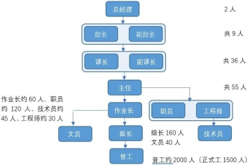
F 厂人员结构及相应人数
从生产角度来看，级别划分从低到高，依次是普工、组长、作业长、主任、副课长、课长、副部长、部长，总经理。普工人数最多，约占 75%，位于金字塔的底层。其次是从事生产辅助的组长，因其待遇虽比普工要好，但同样仅限于满足生活，且部分参与生产，所以基本也算是企业底层人群，二者加起来，约占80%。这群人在企业中干着最多的活，拿着最低的工资，忍受着最差的待遇。往上是作业长，这个级别人数大抵只有组长数量的一半，不需要从事生产，可算是企业的中下层。再往上，则到了主任级别，完全不需要从事生产，仅占 2%,可算是企业明确的中层了。继续往上是课长级别及以上，不足 50 人，约占 2%，月薪制，掌握着全企业重要的生产与管理，算是企业完完全全的高层，也是金字塔的最高层（当然，这 50 人仍有严格的级别划分，如并非所有课长都有话语权，但这暂不做详细）。
刚刚主要是从生产的角度来划分，如果从工程的角度，办公室部门的文员的级别划分与组长相当，职员、技术员、工程师大体与作业长相当。但是，需要注意的是，因办公室部门属于非生产部门，平常工作不需要接触产线，办公环境也更为干净，地位上更显体面，自我感觉与生产工人不同，所以即便待遇相同，可能思想意识上往往不比生产工人先进，在一些不公平待遇的反抗上更显畏手畏脚。
F 厂会采取各种不同的薪酬待遇机制来分化工人，而一般套路则是与级别高低挂钩，通过区分级别的高低，划分薪酬待遇，制造工人之间的差异。
薪酬待遇是一家工厂中最重要也是最核心的部分，评价一家工厂好不好，首先就是看工资高不高、福利好不好。正是抓住这点，不同工厂就会打出各种好听
的福利噱头招人，该企业同样如此。表格显示，该工厂薪酬待遇主要构成包括底薪、加班费、全勤奖、伙食补助、房补、季度奖、优秀员工奖、年终奖、职位津贴等各项。看似名目众多，福利待遇不错。但若仔细去分析，就会发现并非如此。
以一名十年已婚外宿普工为例，假设他工作勤劳优秀，各类奖项都能评定到。按照一个月加班 98 小时来计算（平时加班 60 个小时，周末加班 38 个小时)，每
月工资为底薪 2450 元+加班费 2241 元+全勤奖 50 元+伙食补助 270 元+房补 100
元（前提是已婚外宿）+高温补贴 62.5 元+80 元季度奖（按照 240 折算至每个月）
+42 元（优秀员工奖折算至每个月）+196 元（年终奖折算至每个月）+42 元（激励奖折算至每个月）=5523.5 元，扣除社保公积金（社保公积金按照实际工资缴纳，医保按照二档来算的话）750 元，拿到手也就 4773.5 元。
而该厂绝大数的普工，像季度奖、优秀员工奖、激励奖等奖项是根本拿不到的，一是季度奖、优秀员工奖只有 15-20%的人能拿到，且组长会共同参评，领导自然就会把这些名额给了组长或与其关系好的人；二是激励奖是企业为了防止过年期间人员流失而给予的物质刺激，想拿到该钱就必须在过年前后一个月内不请假（包括病假、事假、年假等），这样严苛的限制条件就导致很多工人根本无法拿到该笔钱。如此下来，可以知道，一名普通的工人的工资主要包括底薪+加班费+伙食补助。同样按照 98 个小时的加班来算，一个月工资为 4961 元，扣除
社保公积金 683 元，拿到手只有 4278 元。一番计算，就会发现企业所宣称的各种的奖励激励是假，分化是真。通过一点点的奖励，让大家互相竞争，拼命干活， 提高产量，企业挣得盆满钵满，工人干得累死累活，可就算是拿到了，对于工人来说也只是杯水车薪，生活一样没有太多改变，故我们就能理解，为什么大多数普工要靠加班来生活了。
再看组长级别，组长底薪比普工高 150-500 元，房补多 150 元，职位津贴多
200 元，其他福利基本相同，每月比普工多 1000 元，即到手 5000 左右，同样不高。资历久些的组长相对特殊，一是底薪高，二是能享受同作业长及以上级别人员的待遇，如伙食补助 380 元，房补 550 元，两项比普工高 550 元，还能与普工同时参评季度奖、优秀员工将和激励奖，但其实这些奖项基本都被组长包揽。这些使得该级别的组长的工资，每个月下来比普工能高 1500 元甚至更多。
作业长级别。底薪能比普工高 800-1300 元，每月能比普工高 2000 元。但是由于该级别会有严格的加班限制，以及无法参评季度奖、优秀员工奖励和激励奖， 故工资未必会比老资历组长工资高，部分作业长也因此对老资历组长很是不满。
主任级别。底薪很高，4000-5000 元，资格老些的，甚至达到 6000 元，主任同样需要加班，加班之后每月工资可达到 8000-10000 元。
更高级别人员的工资水平难以了解到准确信息。
组长是最基层的管理人员，直接接触生产，但不参与具体生产，只是偶尔会顶位。日常工作是安排生产、管理员工。组长掌握一线员工请假的审批权。一般而言，普工和组长的关系不是太好，因为自觉不处于一个等级，组长爱管闲事， 指指点点，导致工作中容易发生矛盾。
作业长一般不参与生产，以制造部组长为例，其主要工作包括确认人数、巡查拉线，检查有无问题，确认作业员的作业手法，设备确认，点检由组长完成， 检查标贴、确认计划、系统反冲（把完成的情况录入系统）、员工的情绪管理、请假审批、问题联络调查（不良品确认，联络相关部门解决）、回复邮件等。一般来讲，每天实际工作时间为 4 小时左右，没有特殊的事情就很闲。作业长掌握
优秀员工奖的评定权。优秀员工奖规定是一年评定一次，一人 500 元，普工和组长共同参与评定，5%的人能拿到。但实际是优秀员工奖被评定给了大部分组长、组长助理,某作业长说：“组长助理拿到无可厚非，但是组长本身待遇好，拿到这个很不公平，但这个评选规则是默认的，不选这些人大家也会有怨言”。在制造部生产线，普工一般不与作业长接触，作业长有单独的办公室。作业长整体学历水平不高，初高中（中专），都是老员工，最晚是 08 年进厂。制造部作业长， 管生产，自主性强些，制造部物资数量严格管理，很难从中拿到灰色收入。
主任一般不参与生产，主要工作是安排作业长干活，品质部部门的主任事情就会多一些，因为涉及到重要设备技术传承问题。一天 8 个小时，真正干活的时
间不到 1 小时，大部分时间比较轻松。主任掌握着一个部门的员工季度奖评定和普工到作业长级别的年终奖评定权，具有一定的自主权。其中季度奖大概按照15%-20%的比例来评，分为 150、240 两个档次，一个 20 人左右的组内，2 个人拿到 150 元，1 个人拿到 240 元。主任及以上辞职要总经理审批，实际是部长处理，会问详细问清楚原因，但一般不会强留。
课长完全不参与生产，拿的月薪，每月工资至少 1 万。每天工作很闲，主要是在办公室泡茶吹水。课长主要工作就是和老板开会，报告工作情况。课长掌握着从普工到主任级别所有员工的底薪调整、以及主任的年终奖评定权，权力很大。
部长。部长是中方最高职务，中方部长是彻彻底底的管理层，不需要干活， 但需要打点对外关系。不同的是，日方部长仍会踏踏实实干活，在产线上做指导。但是日方部长和中方部长工资是完全不一样的，具体工资不清楚，但可以想到的是作为企业二把手，工资自然不低，且不是唯一收入来源。部长掌握着课长工资调整的评定权（其他部门部长也有发言权，但是这种情况比较少），课长对部长的态度也是非常尊敬甚至是畏惧，如现任工会主席（课长）接待政府工作人员全程要看前工会主席（副部长）脸色行事，小心翼翼，生怕说错话。
日方。日方作为最高管理人，基本不露面，更谈不上与工人的接触。他们一般不太愿意牵扯到中方内部斗争中，除非涉及到日方比较欣赏的员工。以前有个课长想排挤主任，被日方发现，最后没有挤走。
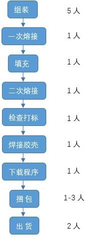
由于该企业核心技术在日本总部，大陆工厂主要以生产组装为主，利润不高。主要利润来自于以碳粉为代表的消耗品部门。下面将主要介绍碳粉生产部门的情况。
各部门均会参与生产碳粉，但实际主要涉及到的也就两个部门、共计 122 人，正是这一百多人撑起了该企业主要的利润来源。以其中一个部门为例进行介绍，该部门一共有 3 条拉，每条拉最少 5 人，最多 23 人，组长 8 人（包含修理
1 人），再加上制造长（主任 1 人）共 105 个人。男女比例 41：64 。该部门因
加班多，相对稳定，老员工居多，其中 10 年以上女工 35 人，男工不足 20 人，
合计 50 人左右，5-10 年 10-20 人，1-5 年 10-20 人，不足一年 20-30 人。从年龄
分布来看，年龄 35-49 占多数，约 70 人，占 70%，其中较多人面临退休（近 3
年退休的有 6 人）。已婚的占 70%，未婚的主要是男工。
原材料碳粉从美国、日本进口，20 公斤一袋，55 元/斤。碳粉从仓库发料至该部门，至生产成成品，一共需要经过 9 个步骤，分别是组装+熔接+填充+熔接+ 检查打标+焊接胶壳+下载程序+捆包+出货。整个生产过程，主要采用手动，但手动也是依赖机器的，只是由人来动作。6 条拉线中只有一条实现了自动化，且仅限于填充，二次熔接，检查打标三个步骤。
碳粉流水线分工及人员配置
组装：5 人，流水线作业，将盒子、长轴、垫片、海绵、齿轮、搅拌轴、盖子、滑扣逐个组装起来，形成一个基本的碳粉盒。
一次熔接：1 人，一人一台机器，把上下盖通过超声波熔接。
填充：将碳粉填充至盒内，可以分为自动化填充和手动填充两种。自动化填充一个人一台机器；手动填充需人工称重，将规定重量的碳粉填充进盒内，比较脏，全程戴专业防尘口罩。人员配置是 4 人手动+1 人自动化填充。
二次熔接：1 人,通过超声波熔接机器把出粉口熔接好。
检查打标：1 人检查外观有无漏粉、有无刮伤、缩水、打标有无缺陷、盖子有无匹配错误。
焊接胶壳：1 人，为了后续固定基板做准备。
下载程序：1 人，为了防伪，实现复印机与碳粉匹配使用，实现垄断。此处需要着重说一下，正是通过这个程序，要求客户用 F 厂机器，必须使用 F 厂碳粉， 实现靠碳粉挣钱。
捆包：1-3 人都有，根据产量安排。
出货：2 人，属于 PMC 部门人员，如果是装入本体，不需要打包，直接装入周转箱送到各个本体拉线；如果是消耗品，则须要 PMC 出货。
这样下来，一条拉线 16，加上 1 个组长和 1 个助理，共计 18 人。
对于这样一条拉线来说，工厂制定的产量要求：一天 2500-3000，但是实际上 8 小时的最高产量为 250*8=2000，故工厂制定的产量要求根本达不到，必须加班 4 小时才能干完。如果 8 小时的最高产量达不到的话，老板就会向作业长追责，要写落后原因。天天干累了，员工闹情绪，不想干，达不到产量，组长和作业长就会拼命催，或者早会表扬，打鸡血激励员工。
各个工位工作内容不同，劳动强度也是不同，下面将逐个分析各个工位的动
作内容和劳动强度。首先，一个盒子装完碳粉大概 800-900g。
组装：装齿轮，用大拇指按进去，时间久后，会磨出手茧，胳膊也会疼，女工做该工位会很吃力，所以多半是男工做。
熔接：这个不算太累，放进去，按一下机器按钮，拿出来，但产量要求比较高。
填充：最脏的环节，如果克数高的话也比较累。需要手动挖粉，装进粉盒， 需要很准确，新员工可能需要反复挖几次才可以，老员工一勺克数比较准确。重复挖粉，胳膊比较酸，而且该工位是需要全副武装，围裙袖套、棉手套、胶手套、口罩（2 个，普通口罩+防尘口罩）、专业工鞋工帽（所有人），新员工会觉得不舒服。曾经有员工，填充 3 斤多的粉，干完一天，晚上就要请假，实在是太累了。（不论是新老员工，都是如此）因此该工位流动性比较大。
熔接：同上，但会更累些，因为填充了碳粉后的盒子比较重，而且盒子是竖着熔接口，需要人提着，所以久了胳膊会很累。
检查打标：敲一敲、晃一晃、用治具检查齿位、齿轮，因为盒子重，所以也比较累。
焊接胶壳：拿起来，竖着用手动超声波小型焊接机焊接。
下载程序：比较轻松，几台同时操作，但是非常重要的一个环节，需要检查是否下载完毕，漏下载，要对数。如果出错，就需要全部返工检查。
捆包：简单，外箱盖 logo，叠盒子，装进去，放说明书，封箱，体力活，很辛苦，流动性也比较大，该工位就由男生干得多。
出货：拉伸膜加上护角维护好，拉走即可。
生产管理较严格，生产线上会有课长等人来巡查，看到玩手机的会告知其作业长层层下传，少数组长可能会去骂员工。生产流水线上厕所需要离岗证，但实际执行并不严格。漏打卡超过 4 次会扣钱，一次一二十块钱，没有其他罚款的行为。请假很难请，病假会有工资。按照法律规定有产假、年假、产假，期间工资按劳动法正常发放。企业长期存在补班情况，一年约补一个月班，春节、清明和日本 3 月份过年、一年 4 次的盘点均要补班，放假时间不可以休年假、请事假， 强制用后面的周末补班。
上班时间 8：00-21：00，中午和傍晚各休息一个小时，一天加班 3 小时，员工多在公司食堂吃饭，部分部门为两班倒，其他部门为白班。所有员工都是站着
上班，除了办公室，没有凳子，一天下来腿非常得累，新员工一般受不了。碳粉车间噪音大，若体检耳朵有问题，员工能拿到体检报告，不过企业不会主动调岗， 要自己去申请，一般很难申请到，所以职工会选择离职。另外，因长期接触碳粉， 存在碳粉吸入的风险，企业每年组织肺部健康检查，并规定 10 个月人员一轮换， 但是现在检查越来流于形式，人员轮换也因无人接替，不得不继续干。
仓库存在以前有人偷窃，主要是偷物料（锡鼓等价格昂贵的物料）。现在管理严格，这些都被当做贵重物品锁起来，防着员工。但是实际上会干这种事情的， 员工到主任都有，而且管理层拿到的最多，所以在以前，这种事情一旦暴露，管理层就会找个替死鬼，让其主动辞职。另外，资材部、采购吃回购的这种更是普遍了。
派遣合作单位为为当地一家人力巨头，每月 7 号发工资，不拖工资。住宿舍，
每月扣 15 元水电费，1 元转账费和 8 元团体意外保险费。待遇与正式工相同，
也就是所有方面跟正式工差不多。派遣小时工不购买社保，目前工价 21 元/时。
5 年以上的老员工都买一档医保，后来开始根据职工个人意愿，可改成二档
医保，公司多补 100 块。但这五年工资增长幅度很低，每年涨 10 元太少，员工
嘲讽“十年前加班多 3000 多，现在不加班每个月 2100-2200 元。”疫情期间，公司以疫情为由取消了每年的旅游、年会以及升职加薪，尽管碳粉部门一直在加班， 订单不受影响。
82 年，女，普工，已婚，一人住宿。一个月加班 98 个钟，到手 4000 元。住宿条件：宿舍有空调、热水（需自提）、公用洗衣机、公用饮水机（一个
楼层一个），一个宿舍标配 8 人，实际居住 4-6 人，卫生条件不好、有臭虫、蟑
螂、老鼠。宿管 1-2 周杀虫，但是没有落实，很随意，走形式。
开销：早餐 3 元，中晚餐共 7 元。食堂伙食一般，自选餐 6.75（自己付 3.5+ 公司补贴 3.25），一荤一素，加餐的话比如一个鸭腿和青菜就要 9 元。水果牛奶等 200 元，周末加餐共 200 元，日用品约 100 元，加上购物游玩等消费共 1000
元。每月寄回家里抚养小孩 1500 元，赡养父母 1000 元，共计支出 3500 元。这样算下来，一个月根本没有剩余，而这就是该厂大部分工人的一般生活。
因此，如果没有加班，大家就会打小时工，包括作业长、办公室文员等。部分作业长会选择去做义工，兑换义工时长换取米油，补贴家用。事实上就算能拿到 4000 元，也有 30%-40%的人会打小时工增加收入，因为 4000 仅仅只能满足基本生活而已。
86 年，女，已婚，有两个小孩，一男一女，大的女孩，两个都在读幼儿园， 目前与老公、两个孩子及婆婆同住。09 年进厂，普工，底薪 2450 元，每个月加98 个钟，4200 元/月，老公在跨越，做快递，常年夜班，7000-8000 元/月。家婆边带孩子边上班，在附近一个上班做保洁，2500 元/月，家庭月收入 1.5 万元左右。
厂外一间单间（带厨房+卫生间+阳台）550 元每个月，两个孩子+老公+家婆五个人共住，里面放了两张床，非常拥挤。湖南老家房贷：3000 元/月。孩子学费：2000 元/月，吃饭 3000-4000 元/月，生活日用品等 1000 元/月，再加上其他七七八八支出，一个月下来，勉强生活。
生活：因为两个孩子都在读幼儿园，每天早上 6 点就得起床，煮饭，送两个小孩上学，8 点火急火燎上班。中午吃自己带的饭，下午 5 点下班，利用休息的一个小时，急忙接小孩放学，因时间紧张，没有时间吃晚饭，就买点干粮对付一下（一般是一包螺狮粉，用保温杯焖着吃）。晚上加班到 10 点下班，去宿舍冲凉（懒得回去烧水，宿舍冲凉还能省钱省时间）。因回去太晚，就被家婆说，不管孩子，回到家近 11 点，时间很晚了，简单收拾一下 12 点睡觉。
这就是一名普工已婚女工的生活，因孩子在身边，没有自己的时间，相对那些孩子不带身边的女工，生活要艰难困苦很多。
对于她来说，能过一天算一天，没有明确的打算，想的就是把目前的生活过好，同时攒点钱，不敢争取些什么，因为需要这份工作，经济压力很大。例如: 企业规定手套每人每月多少双，要求以旧换新，时间没到，不给换。但实际情况是：敢于争取的直接就去要，企业就会要一沓，而像这类女工就不敢，或者临近退休的也不敢，因为害怕被干掉，不想惹事。
该企业工会在组织上较为规范，既有工会主席、副主席，也有多名工会委员和生产一线的工会小组长。工会主席是一个课的课长，工会小组长则主要为主任、作业长和办公室职员。工会小组长之间偶尔会有联系，一般是开会前才商量，整体来讲，联系比较少。
在收集员工诉求方面，工会小组长只是偶尔主动问员工有无问题反映，主要是方式仍是员工向组长反映问题，再由组长反映给工会小组长。工会小组长每个月开一次会，会聊各种问题，如饭堂伙食、未装空调太热、没有洗衣机、房补、夫妻房等。每次提这些，工会委员一般会先记录下来，向公司反映，然后就会出结果。一般说来，简单的事情很快就能得到处理（例如饭堂卫生、伙食状况）， 但复杂一些的事情往往就不了了之，如解决夫妻房问题，统计后发现人数太多， 没有办法解决就没有下文了。一般会后，工会小组长会召集组长及以上人员，说明开会内容，再由他们下达给员工。问题处理结果会以邮件形式进行发布，再由各组长拿着打印出来的邮件结果向产线员工进行说明。
据称以前工会小组长不怎么开会，但从 12 年后（即钓鱼岛事件后，当时该厂爆发全厂工人停工，后失败）开始每个月开会。最初一点作用都没有，不仅不会民主讨论，反而压制员工，员工提的建议都不被采纳，很多小组长就不想提了， 觉得没有必要开会，委员定就可以了。几次工会环节以来虽然表面上会采纳一些职工的意见建议，但基本没有改善，福利待遇一点也没增加。
正式工每个月要扣 3 元工会会费。工会每 3 个月给会员发一次礼品，包括一把伞、两条毛巾、两包纸巾，过生日发礼品如空调被。过节时，工会会发一些礼品，端午节是粽子和王老吉，中秋节是一个柚子、一盒月饼和小零食，过年什么都没有，新年会有开工红包 100 块。相比较而言，工会主席所在部门，在节假日
发放礼品时，待遇会更好。例如，柚子更大，饼干更贵。同时，工会委员每年 4
次旅游，去的都是西藏、云南这些比较好的地方，工会小组长以前每年旅游 2 次（会有半天至一天的培训），现在改成一年 1 次，2020 年取消。普工不能参加工会旅游，但有公司旅游，所有旅游全免费。
尽管相比较于其他企业，该企业工会有自己的经费且架构完善，也能解决部分问题，但整体来讲工会在维护工人权益方面基本毫无作用，主要就是节假日发福利、举办少量活动，甚至活动都不想举办。曾有工会小组长提议开展拔河比赛这些，都被工会委员以存在安全隐患为由拒绝。对于大多数普工来说，工会就是发礼品的，他们知道工会的存在，但很多人连工会办公场所在哪都不清楚，更别说权益受到侵犯去找工会帮忙了。
F 厂经历过多次扩张与合并，在合并了一家小厂后，该厂的部分中层管理带头，通过拉消防警报，逼出工人共同停工。由于部分中层人员有较强的团结意识，
且对于公司内部情况掌握较多，善于抓住时机精准出击。前些年几乎每年年底都会找个借口闹一次停工，而且都能成功，主要涉及休息权、食堂改善、提高工资等，这也是 F 厂的工资比周边其他厂高一些的关键原因。
2012 年钓鱼岛事件爆发，很多日资厂停工。听说外面有工厂停工，F 厂员工
陆陆续续停工，近 2 千人出去，持续了半天。第一天下午，停工，一些人回租房， 一些人上街跟着上街，没走多远就被遣回。第二天就正常复工。此次是比较松散、没有目的性、跟风的一次停工，因而也没有取得待遇上的改善。
近几年来 F 厂一直比较安稳，从劳方情况来说，很多带头组织的人被资方逼走了，工人们群龙无首，派遣工的加入也使得工人整体被更加分化；二是上层关系保护，有市 rd 代表坐镇担任企业顾问的情况下，工人确实不敢再轻易行动了。
F 厂是名副其实的纳税大户，短期内也不会搬迁。但是有员工表示不排除被收购的可能，因为 F 厂的一些子公司陆续被收购，不过这也只是猜测。
搬迁遥遥无期，很多老员工也只是在熬着。更何况很多老员工（组长及以上级别老员工），家已经安定在这边。如果出去，年龄大，没有技术，也很难找到比 F 厂更好的企业。因此不管好坏，大家都还在继续坚持干。像是今年受疫情影响，公司缩减福利，很多人都选择出去打小时工，大家都有吐槽，但仅限于吐槽而已。
F 厂的一个老工人被问及面对目前厂内的这些情况、大家能不能争取时，表示之前那些敢于斗争的人都走了，现在想一起争取点什么权益比较困难，因为没有人愿意站出来，等着吧。
在当下的经济低潮期，很多工厂破产停产，换工作绝非易事。F 厂的职工也更倾向于保住当下的这份工作，即使面对资方不断压缩福利待遇，也是一忍再忍， 在行动上趋于保守。但历史总是在波动发展的，保守也只是当前形势下的一种无奈。中国的工人阶级尽管在意识上还处于一个懵懂的阶段，但它始终在不断成长， 并且当形势从不利转为有利时，它也一定能够从前一时期的经验教训中汲取营 养，进入从觉醒再到行动的新的时期。
【编者按】这是一篇细致入微的工厂调研，对一家地方龙头企业的内部结构进行了剖析，并就工人、技术人员和管理人员三大群体在生产中的地位、生活和意识情况进行了对比分析。尽管该企业位于偏远的县城，在资本主义生产的“先进”经验上却丝毫不曾脱节，如大量招募派遣工的形式来应对工期波动、压低基本工资迫使工人加班等等。相应的阶级矛盾随之而来，因不同群体的处境和意识不同，其应对的方式也有所不同，如不少脑力劳动者倾向于消极反抗、“用脚投票”，而体力劳动者则更倾向于积极反抗、直接发起行动。因其工资水平在本地区内的相对优势、资方的各种分化瓦解手段，这种行动力度无法与产业密集区域相比。但带来这种行动的意识萌芽只要扎下根来，便不会凭空消失，并终将破土而出。
H 公司是某中外合资集团（中方股东是某央企）的下属子公司，该集团背景很深，资本规模庞大，在多地拥有工厂，不同的工厂负责不同工序，调研对象所在公司负责板材拼接。
在当地，H 公司是数一数二的龙头企业，拉动当地就业，地方多次给它颁发荣誉。由于大规模采用劳务派遣的用工方式，在工期紧张时用工需求会增大，人数也会膨胀；而在缺少订单的情况下，用工需求减少，人数也会降低。大致估算， 公司的总人数在一千至三千之间波动。
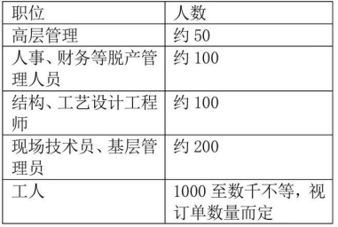
整个集团主营业务是跨海大桥、钻井平台、油气管道等海洋工程的项目。公
司在整个生产体系中的地位并不算高。以某项目为例，该项目客户是荷兰，设计是德国，只有制造和公司有关系。在整个生产过程中，制造是处于最低端的位置， 公司更是只负责最简单、最没有技术含量的拼接。公司虽然处于制造业最低端， 但是它仍然存在垄断利润，这从工人的高工资中可以推断得出。
公司生产设备。公司生产工具落后，几乎全部是手持工具。加工过程中的各个环节，如定位、拼接等，完全依靠人工。落后的生产工具必然导致生产效率的低下。为了按时完工，能依靠的解决办法只有加班。工人中普遍存在 6 天 12 小
时工作制（早 7 晚 7 单休）。为了降低人工成本，公司大量使用劳务派遣工。被压迫下的工人，也会用出工不出力等方式摸鱼划水，一定程度上使生产效率更为低下。
公司生产环境。由于主要是负责拼接，所以占比最大的两个工种就是焊工和铆工。电焊会产生大量的粉尘，防毒面具是车间工人的标配。铆接也会产生很大的噪音。这种情况会使工人本就不高的积极性进一步降低，同时也没有谁会愿意长期从事这种对身体有害的工作，再加上加班的因素，导致公司不得不频繁更换劳务派遣工。技术含量低下使得技术人员大量从事重复性高的工作。某访谈对象的工作就是检查图纸，根据图纸校对零件，为工人讲解具体结构，将现场的一些差错，如错误的板材等等上报给主管。另一位供职于技术部的 211 硕士直接就是当画图员用。技术人员离职比较普遍，往往是秋招招进来的毕业生，到了下一年跑了一大批，然后又要继续招，无外乎还是环境和加班的问题。
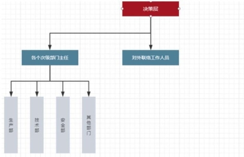
注：决策层、对外联络人员和各个次级部门主任属于总部的范畴。次级部门主任和对外
联络人员负责对决策层提供信息，所做的决策经由部门主任传达到各部门。
在各个部门内部，只有一小部分高层可以直接冠以“管理”的称号，而其他较低等级的管理人员则以所从事的工作进行称呼，如现场生产管理和技术管理被称为“某工”，尽管他们的工作内容往往也是管理。所以在这种情况下，应当根据不同人员所从事工作的性质，在生产中所起到的作用对其进行划分，而不是简单地根据表面上的职务进行划分。
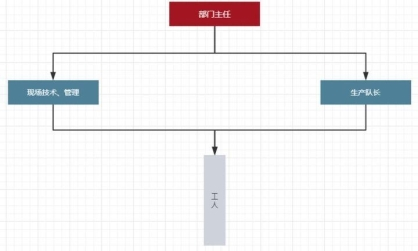
工人共计 500 人左右，主要工种是铆工和焊工（另外，大部分工人也能胜任打磨，喷枪切割之类的工作，且另有一小部分工人负责机加工），全部归属生产部，生产部基本结构如下：
参与总部决策的部门主任将施工期限、质量要求等决策传达给现场技术管理以及队长，再由这些基层的管理人员进行现场具体的生产安排。工人负责实际的施工工作。整个生产部人数大约为 540 人，其中劳务派遣工 400 人，熟练的合同
工以及现场技术管理各有大约 70 人。
绝大部分工人是劳务派遣工。基本上，只有生产队长和较为熟练的工人是直接与公司签订合同的合同工，其他工人均为劳务派遣工。以某班组为例，一个12 人的班组，只有一名生产队长和三名合同工，其他的工人均为劳务派遣。
劳动条件相当恶劣。
工厂里主要的工序是焊接和铆接。焊接带来的主要问题是闪光，粉尘，燃气， 会对视力和呼吸系统造成损伤。防毒面具是工人工作的标准配置，然而即使佩戴
了防毒面具，也还是能闻到比较浓烈的异味。另外，电焊产生的闪光也不容忽视。铆接产生的主要问题是噪音，会对听力产生损害。另外，由于生产所用的板
材，小则几十斤，大则数百斤甚至几吨，在搬运过程中常常会撞击地面，产生的噪音也很大。
公司会提供一整套劳保，包括安全帽，护目镜，工作服，防护鞋等等，但这些保护措施仅仅只能让工人避免一些致命的危险，如果长期工作下去，还是会让身体遭受不可逆的损害。
另外，工厂缺乏必要的保暖和降温措施。冬天厂房里的温度与室外无异，而夏天，由于焊接和打磨、切割会产生很多热量，所以也是比较难以忍受的。
1、工资基本情况
由于机械化程度低，人力加工占据绝对优势，生产质量的好坏很大程度上都取决于工人的经验与手感。所以，公司担心有经验的老师傅走人。对老师傅，公司会给予较好的待遇，而普通员工的重要性却低得多。
老师傅基本是合同工，普通工人基本是劳务工。劳务工和合同工的工资，均由基本工资和绩效组成。
（1） 基本工资。所有工人基本工资均按天计算，发放时也按天数发放。熟练工人的基本工资大约在 250 到 280 一天，普工工人 180 一天。
（2） 绩效工资。绩效工资在总工资里占了大头。关于这部分工资，公司的解释较为模糊，可以理解为奖金和加班费的总和。在实际操作中基本上也是这样进行的。如果某位工人在某月的工作里一天班也没加，绩效工资就会很低。如果他坚持 6*12 工作制，那么这部分工资到手就比较高。就工人来说，不加班和满勤之间能差上三四千。
这个工资制度的实质，是压低基本工资，放大绩效工资占比，以此胁迫工人加班。如果不加班，到手的工资就会减少一大部分。为了增加收入，工人就只能选择加班，甚至有背着房贷的工人因为得不到加班而抱怨。
这种方式比直接加班来得更为隐蔽，迷惑性也更大，不容易引发工人的不满情绪，为资方的剥削提供了便利。
2、工时基本情况
工人事实上执行 6*12 小时工作制，具体而言：（1）早晨 6 点半开早会，介绍一天当中的工作任务和工作内容。（2）7 点开工直到上午 10 点，工休 15 分
钟，。很多工人会到吸烟区休息。随后继续工作到中午 12 点。（3）中午 12 点
到 1 点是午饭和午休时间。（4）下午 1 点开工直到到 3 点，有 15 分钟工休。随
后继续工作到 6 点半下班。
在实际操作过程中，由于工人会想出各种办法摸鱼，因此有效工作时间显著低于 12 个小时。
每周默认单休，想双休需提前申请。一般来说申请不会被拒绝，但往往会有几句旁敲侧击的提醒，例如绩效又要受影响云云。
3、工人每月收入举例
按每周工作 6 天，每月工作 26 天计算。
普通工人基本工资按 180/天计算，一月可达 4680。在全勤加班的情况下， 大概可以到手 11000 左右。而如果拒绝加班，那么只能到手 6000 到 7000 左右。
熟练工人的基本工资按 250 每天计算，26 天就是 6500。在全勤加班的情况下可以拿到 15000,而如果拒绝加班，大约就是 7000 到 8000。
这个工资在当地很可观。当地房价大约 7000 一平，大碗羊汤 15，公交车车票 1 元。这样的工资足以让工人在当地过上相当体面的生活。大部分工人都有房有车，有的工人甚至还拥有多套房产。即使那些刚刚参加工作暂时没有住房的工人，也都有买房的打算。
受限于经济周期和工程项目的特殊性（不能随时保证获得稳定的订单），公司获得大量订单的时候，资金充裕，员工的工资也会增加。而当公司陷入低谷期， 订单较少，资金不足，那么公司就会考虑降薪，裁撤多余的劳务工。
3、其他福利待遇
所有员工均缴纳社保、公积金，比例不详。
福利方面，多以现金结算，通常是在年终统一发放奖金。这部分奖金的浮动比较大，在 1 到 3 个月的工资范围内变动。具体视公司经营等情况而定。
有关事假、探亲假、带薪休假等假期方面的福利，虽然明面上可以申请，但在实际操作中，基本上是享受不到的。当然了，劳务工是享受不到这些福利的， 只有与公司直接签订合同的工人才能有这些福利。技术、管理人员的福利、社保和公积金情况与工人类似。
丰厚的工资极大地抹消了工人的阶级意识，大部分人都认为现状还说得过去。即使是一般工人，加班后工资也能达到 11000。由于吃住都能在公司解决（如果有房产，那么花费更少），所以能拿到手的数字与上述数字相差不大。
不满主要集中在 6*12 工作制上。主要体现为以下方面：（1）一晚上的休息无法完全打消白天工作的疲惫，大多数人早晨的精神状况很不好。（2）为了保证休息时间，工人在下班之后只能吃饭洗漱，之后就要早早休息，平时几乎没有任何个人时间。（3）所谓单休也无济于事，6 天工作之后已经非常疲惫，多数人唯一能做的就是睡觉。（4）在恶劣环境下长时间工作，对身体有较大损害，
许多工人都对这一点颇有怨言。
虽然工人们没有直接的行动，但这并不意味着阶级矛盾就不存在。工人之所以暂时还能容忍，唯一原因就是钱多。资本靠较高的工资维持着劳资之间脆弱的平衡，一有风吹草动，矛盾立刻就会激化。例如，某月仅仅因为工资晚发了几个小时，就险些发生集体行动。
总体上来讲，由于公司开出的价码相当可观，所以当前工人的权利意识比较薄弱。例如，对于以安全检查为名进行的罚款、克扣，工人往往选择息事宁人。与动辄上万的工资相比，一两百块钱的罚款很难让工人下定决心去维权。大多数人的意见都是“为了这么点钱就去大动干戈不值得”。很多人怕丢了工作，那就得不偿失。
但是，如果出现欠薪等较为严重的问题，导致工人有了比较大的损失，那么工人的反应还是非常激烈的。如前所述，仅仅晚发了几个小时的工资，就几乎让工人们采取集体行动，如果发生一些比较极端的情况，如大规模违约、裁员等， 那么几乎可以确定工人一定会诉诸行动。
在工人这个群体的内部，合同工和劳务工的维权意识也有差异。
合同工与公司的利益捆绑比较密切，他们的绩效，奖金等收入与公司业绩直接挂钩，相应地，公司任何有关加班，降薪等安排，他们也都只能接受。这就决定了合同工的工作积极性相对较高，对薪资福利，加班时长等方面的变动更敏感， 更容易产生不满情绪。劳务工的流动性比较大，与公司之间的利益关系并不很密切。他们的收入在进入公司之前就已经谈好，与经营状况无关，所以积极性就较低。如果公司频繁加班，那么他们就消极怠工，只要混到合同到期就可以了，所以对加班等情况多是无所谓的态度。
技术员共计 200 人左右，全部归属技术部（并不是全部属于技术部。只有结构审核和工艺制定属于技术部，现场生产管理属于生产部，质检则属于质检部。技术部的技术员大约有 100 人，生产部现场生产管理 70 人，质检人数较少，大约二三十人），技术部基本结构如下：
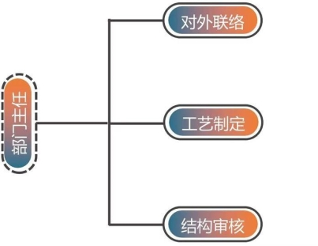
技术部主要由部门主任、与其他部门的对外联络人员、工序工艺制定人员、图纸结构审核人员组成。部门主任是总部的高管成员，参与决策。对外联络主要负责与生产、人事等部门进行协调，了解项目进度等有关信息。工艺制定人员根据生产部的要求制定工艺工序流程并由对外联络向外传达。结构审核的主要工作是检查图纸有无错误。部门规模算是中等，总人数在 100 人左右。
技术员有一定学历要求，从专科到硕士不等，基本均为合同工。高层管理多是从中提拔，因为如果一点专业知识也没有的话，做出来的决策很可能是脱离现实非常荒谬的。
技术员分成四类：生产部的现场生产管理、技术部的结构审核、技术部的工艺以及质检部的质检。现场生产管理仅是按照外国设计画图纸、检查图纸、对工人讲解图纸、检查原料板材以及确定施工进度；产品质检的工作仅为检查拼接结构的尺寸、强度等等；工艺方面的技术员，主要负责工序制定、图纸校核。这些工作都相对简单，技术含量不高。
现场生产管理和产品质检大部分时间都是在车间工作，而负责工艺、结构的技术员，大部分时间都是在办公室。相比工人而言，技术员在生产过程中的地位并不很重要，劳动强度比较低。负责现场的技术员虽然需要下车间，不过也只是
例行公事，大约每天还有两三个的时间还是在办公室的。而工艺、结构方面的技术虽然劳动环境相对略好，但工作也并无甚技术含量。
工作时间方面，技术员和工人一样，执行 6*12 小时工作制。
对于现场管理来说，由于他们直接与生产队长对接，需要和工人一起上下班。质检则要随时负责对结构的质量进行检查，尽量避免返工，所以也要在现场。结构、工艺部分的技术员，由于要确保在出现问题的时候要能够第一时间找到负责人，所以即使已经完成了工作，也不得不在岗位上待命。
技术的工资结构和工人一样，也是基本工资加绩效工资，绩效工资实际上也是某种奖金和加班费。在拒绝加班的情况下到手的绩效较少，而在全勤加班的情况下就比较高。由于劳动强度比工人低的原因，所以工资较工人来说也要少上一些。以某调研对象为例，在全勤加班的情况下大约是 6000 到 7000，在不加班的情况下大约在 4500 到 5000。
按年龄分。（1）对刚毕业的新职工来说，不论是工作环境，劳动强度，都是实实在在的要比工人好一些，起薪也不低，再加上公司承诺的加薪升职，所以有些人还是心存幻想，有一定的积极性。其中部分人在发现实际情况相去甚远之后，不久就会离职。（2）那些在公司里干了十几年却升迁无望的老职工却看得透彻，公司的这些承诺不过画饼而已。这些职工上班就会抽空摸鱼划水。他们不会随意离职，毕竟有家有口，辞职也不好找工作。
按工种分。（1）出现场的技术员（现场管理和产品质检），劳动强度、工作时间和工作环境都比较接近一线工人，不满也就比较大，思想上也和工人相近。例如，之前的欠薪事故中，某现场工作的办公室主任就在一旁袖手旁观毫不制止。
（2）在写字楼里画图的技术员（工艺和结构），劳动强度、工作时间和工作环境都较好，不满也比较少，与工人离得更远一些。
技术员被尊称为“某工”，且有更好的劳动条件，但是技术的工资却比工人少， 这就导致技术员情况比较复杂。
一方面，技术员对克扣等情况的容忍度比较低，也经常会产生不满情绪。老技术会摸鱼划水，而刚毕业进来的大学生会不断离职。在对现状明显不满，而前途又希望渺茫的情况下要么得过且过（老职工），要么直接退出（新职工）。另一方面，他们的斗争意识却比工人低。在出现较为明显的利益冲突时，工人敢于联合起来抗争，而技术员采取的手段却较为消极。由于大部分技术员都具有一定的学历，能够较为容易地找到其他的工作，所以他们的态度大多都是在这里干不
下去了，就换一个公司，也就是采取跑路这种方式来进行消极斗争。
大体上，管理分成总部管理人员和次级部门管理人员（主要是基层管理人员）。
1、基本情况
总部管理人员没有派遣工，都是合同工。
劳动条件方面，他们远远好于技术和普通工人。他们有独立的办公楼，基本不会受厂区噪音、粉尘等的污染。由于总部经常需要接待外国客户的原因，所以无论是外部环境还是内部装修，都需要达到很高的要求。总体来说，这部分人群的劳动条件是非常好的。
2、工资和工时
关于工资。总部的人员构成有三类，一是负责与基层联络的各次级部门的主管，二是负责对外联络的有关人员，三是决策层。一般来讲，除了高层决策以外， 其他的工作人员都比工人的工资低。以部门主管为例。他们工资粗略估计下，大约在 10000 左右。负责对外联络的有关人员基本上与部门主管平级，所以待遇估
计也在 10000 左右。决策层的高管工资比工人高，但具体数量不详。
工时方面。总部的工作是以决策层为核心展开的，所以决策层的工时就决定了整个总部管理人员的工时。总部工时基本是早八晚五，有午餐和午休的时间。在休假方面，总部实行单双休制度，即一个星期单休，一个星期双休，循环往复。
3、基本分析
相比较来说，由于这个人群的工作时长、工作环境都远远好于工人和技术员， 同时薪酬也比技术员要好很多，仅略少于工人，多数情况下他们站资方立场。他们脱离具体生产，仅仅是对生产过程做出安排，通过制定一系列条规，最大化地提高剥削的效率，榨取更多的剩余价值。例如，广泛采用劳务派遣的雇佣制度， 强行推广 6*12 工作制，制定严苛的考核标准来作为克扣工资的根据等等。除了派遣工外，绝大多数工人以及相当一部分的基层管理都对这些条规充满怨言。
他们对生产的具体情况知之甚少，对于工人的态度也不是非常了解，工人们对于他们普遍持负面态度。其一，工人们经常会抱怨来自总部的瞎指挥，例如错误的图纸和板材，胡乱指定的工期等等。这些乱七八糟的决策往往会对生产起到负面作用。其二，工人们对总部制定的条款充满敌意，例如 6*12 工作制，以绩效不足为由进行工资克扣等等。
1、基本情况
这一人群广泛分布在各个部门中，承担的工作也是多种多样。由于情况过于复杂，所以这里将基层管理大体上分为与生产直接相关的现场管理，以及负责人事、财务等等的其他管理两个部分。这个群体没有派遣工，全部由合同工组成。
现场管理与技术员有较大重合。他们主要的工作内容，包括检查施工进度并向上级反馈，确保能够赶上工期；对施工用到的原料、板材等进行检查；向工人传达技术部的要求并监督执行；在施工过程中随时检查施工质量，尽量避免返工； 在施工遇到问题时与其他部门进行沟通。由于他们是工人的直接上级，所以大多数时间也要在现场工作，准备随时处理突发情况并于其他部门取得联系。同工人一样，这一群体也要忍受噪音、粉尘以及燃气对身体的影响，工作条件十分恶劣。
其他诸如财务、人事等部门的管理，在工作条件上同高层管理比较接近，都是在远离厂区的独立办公楼里工作。
2、工资和工时
现场管理和财务、人事等部门的管理，在工资和工时上也有较大不同。总体来说，与一线生产比较密切的现场管理，工资结构和工作时长与一线工人比较接近，也是 6*12 工作制，工资结构中基本工资占比较小，而浮动的绩效工资占比很大。在工资数量上，由于现场管理的劳动强度比工人低，所以到手的工资也比较少。之前在技术的有关部分中已经介绍过，在全勤加班的情况下是 6000 到7000，不加班的情况下是 4500 到 5000，具体数据也需要根据公司的经营情况而定。
财务、人事等部门的管理，工资结构和工作时长与高层管理较为接近。每天早八晚五，休假方面是单双休。由于并不经常加班的原因，所以工资结构也是基本工资占比较大，浮动的绩效占比较小（与总部管理同）。工资数量上，这个人群的工资比现场管理略低。例如，直接负责签订合同的文员，工资水平在 5000 左右；负责校招面试的 HR，工资约 7000 元。
3、基本分析
首先是现场管理。他们多数时间在车间与工人一起工作，工作时长也与工人一致。如果说他们与工人有什么不同的话，那就是工作强度能低一些。但是他们的薪水也比工人少。同时，他们要和工人一道忍受恶劣的工作环境，应付来自上层的瞎指挥。
现场管理基本上是与工人站在一起的。他们往往有着“某工”的称呼，有专属的办公室，但是这点虚无缥缈的优越感很容易就会被现实浇灭。他们和工人一样， 都要在现场加班，忍受 6*12 工作制，遭受噪音、粉尘、闪光还有各种燃气对身
体的损害。而且，由于他们的工资比工人较少，所以对现状也是有很大的不满。其他诸如人事、财务、安全等方面的管理，其立场就比较偏向于资方。这一
部分管理在工作期间大部分时间都在办公室，工作内容仅限于举着手机拍所谓的违规行为，或是处理word 和表格，可以看到他们各方面的工作条件都比工人和技术好得多。这一人群会倾向于执行来自于资方的一系列指令。例如，人事部会在校招时对学生提供虚假的信息，在一部分工人因不满而离职时使绊子，做警告； 财务会根据高层制定的条规对工人的工资进行克扣；安全部门会以现场安全检查不达标为由对工人进行罚款。所以在进行分析时，应当将这部分群体划到资方一边。
4、意识形态
现场管理。这个群体虽然执行的是管理的职能，但是他们往往对现实有着清醒的认识，他们的不满并不见得就比工人少，甚至有时候比工人还要激烈，因为他们的薪资水平比工人低了一大截。离职现象在该群体中特别普遍。
其他管理（财务人事等）。他们的工作性质主要是在给公司“降低成本”，即尽量从工人和技术身上多榨出点剩余价值。但是由于他们本身并不产生价值，所以在危机时期也容易被公司抛弃。之前公司发生的裁员，除了合同自然到期的人员之外，最大部分就是财务、人事等等与生产并不直接相关的基础管理人员。例如，在校招时直接负责与笔者签约的文员，就是在某次裁员之后，重新招进来的应届毕业生。在交谈中笔者了解到，她也很担心自己会在下一轮裁员中被解雇。
工人、跟现场的技术员和跟现场的管理人员，对现状最为不满，并且采取或消极怠工，或提桶跑路的方式进行抗争。坐办公室的技术人员不满情绪要小一些， 不过也存在跑路的现象。而坐办公室的管理人员虽然和公司的利益捆绑最为密 切，思想最为反动，但他们的现状却也最不稳定，在劳资矛盾激化的情况下，如长期降薪、欠薪或者大规模解约遣散时，他们的态度也会发生一定的改变。
但是，由于当地沿海小县城的定位，资本的剥削不像大城市那样猖獗，同时总体的经济条件也比日益凋敝的广大内陆地区要更理想，大部分无产阶级都能过上相对理想的生活，所以这里的劳资矛盾并不尖锐，无论是工人，技术还是管理， 都没有想要改变现状的迫切愿望。只有在未来，劳资矛盾更加尖锐的时候，这里的无产阶级才能产生比较明显的阶级意识。
该公司为港资企业，20 世纪初建立，生产电路板，公司客户包括西门子和博世等欧美企业，产品涉及汽车、石油勘探等行业。由于电路板属于技术导向型产业，在生产环节中属于中端，与生产环节上的组装企业相比，利润有所优势。
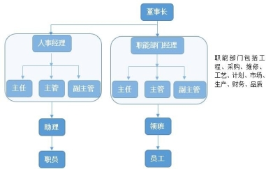
公司除董事长和总经理为香港人，其余均为大陆员工。公司的组织机构如图1 所示。公司的年龄结构总体上讲偏中年化，高层和中层人员年龄一般为 40～50 岁，技术人员一般为 40～45 岁，普工一般为 25～40 岁，文员一般为 18～25 岁。人员学历情况，普工一般为初中学历，技术人员和管理人员以及文员为中专、大专和本科学历，无硕士以上高学历人才。
图 1：公司的组织机构
公司大约有 300 人，年龄多为 35～45 岁间，男女比例为 3:1，质检部门较为特殊，男女比例为 1：3。公司工人多来自广西、广东、江西以及湖南，来自四川和重庆的工人也有相当一部分占比，且基本都来自于农村家庭。其中夫妻两人同时在厂工作的居多，工人流动性变化不大，2015 年以前约为 2%到 3%，2015 年后约为 4%到 5%，3 年以上工龄工人占 60%-70%。具体原因为工作环境恶劣、工作强度大以及薪酬待遇与同类型企业相比无竞争力。
该公司派遣工占总员工的 5%，临时工占 3%。由于用人缺口巨大，对临时工的需求很大。
工种种类。与图 2 的生产流程对照，有蚀刻、外形等方面的工作。值得关注的是，公司并不会在招聘的时候，告诉你要做关于哪方面的工作，统称为普工， 工作是进厂后才进行分配，各个车间工人的待遇无差别。
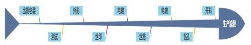
图 2：该公司生产流程图
生产中各个部门的配合情况。首先由计划部进行计划，制定生产任务和生产目标。计划部将计划下达至各个参与生产的部门，工程部会将外方厂商发来的资料进行转换，转交给工艺部来制定生产工艺。在生产流程的最后两个环节将会由品控部和计划部参与。品质部负责品控，出货包装将由计划部来完成。在生产中车间里会有技术人员监督生产过程。生产过程中会有一个生产总指挥进行协调指挥，各部门之间既有垂直领导，也有交叉指挥。
该公司的机械化程度高，产品的品质 40%取决于工人，60%取决于机器。由于电路板生产工艺的要求，决定了生产速度的提高并不如那些使用流水线的工厂来得容易，该公司也未曾使用该措施来提高生产速度。
工作环境方面。由于电路板生产的特殊性，生产环节分散于各个不同的车间， 车间较为宽敞，并不拥挤，并且拥有空调(除因电镀的工艺要求而没有的电镀车间)。
对身体伤害方面。外形和开料会产生巨大的噪音，导致工人听力有一定下降。开料、钻孔和外形车间如出现生产事故将导致工人肢体残疾。开料工人有被切断手指的危险，该公司未出现此类事故，但在该行业当中有曾经出现工人手指被全部切断的事故。外形车间的冲床有极大危险，此行业曾有工人的手指被压断。电镀、线路和丝印则会有有毒气体产生。电镀车间是环境最恶劣的车间，由于生产工艺的要求，电镀车间没有空调，夏天工作温度约为 35℃，冬天约为 16℃，需要穿戴防护服和配戴口罩，潮湿、湿热和有毒气体成了电镀车间的标签。电镀车间曾出过生产事故，硫酸溅伤人的皮肤，但公司只承担医疗费(也许还有些“人道补助”)。电镀车间职工安全意识明显强于于其他车间。
工伤方面。开料、外形、钻孔的大量粉尘造成工人肺功能明显的下降，另外生产中的噪音造成了工人的听力下降。电镀、线路、丝印车间的有毒气体也对工人的呼吸器官造成了一定伤害，呼吸能力有明显下降。
对工人的劳动保护方面。公司提供了口罩、手套和防毒面具，高危的电镀车间还配备了防护服。
淡旺季方面，暂不清楚，可以确定的是圣诞节前的几个月生产订单较多，猜测是西方节日期间的电器消费激增所导致。
该公司并无贪腐行为和灰色收入，因为对该方面的权力都有分别的部门管控，无漏洞可钻。
工作时间方面。该厂为单休制，1 个月休息四天，但遇上订单紧急的时候基本无休。工人可正常 8 点上班，5 点下班。工人 7 点 50 分开早会，进行生产任务布置和进行安全教育。8 点上班到 10 点钟期间并无休息(直接面对屏幕操作机器的工人每两小时有 15 分钟的休息时间，在休息时间里多数都会选择睡觉)。12
点到 13 点有一个钟的休息时间(包含午饭时间)，休息时间结束后将工作到 5 点
吃饭，饭后无休息时间直接加班到 8 点，8 点下班前 15 分钟开始关闭机器进行保养。
多数工人一个月的加班时间一般为 130 或 140 个钟，极个别的甚至加班时间
超过 200 个钟（周末上班算加班）。该公司对于正常下班并不阻拦，如果想在生产任务紧时正常下班，会有人进行劝阻，如执意要正常下班的话也会允许，但大多数工人因生活所迫都会选择加班。该厂从某种意义上来说是工人“自愿”选择了“886”。最长的一天曾工作 16 小时，甚至两个月无休息。
工人对于自己工作的态度方面。工人们认为自己的工作单调乏味，有明显的被动抵抗，从工作中“偷点时间”，比如找个地方睡会觉，偷空抽烟和玩会手机， 再有的则会去蹲坑。
该公司员工底薪参照当地最低工资，劳动合同签订比较规范，一式两份，且无扣压身份证现象。
派遣工和小时工与合同工干的工作相同。派遣工一个月工资约为 3700～ 3800 元，小时工每小时工资为 16 元(由于是短时间使用，所以工资比某些合同工
还要高)。合同工过了试用期，月工资约为 4000 元，合同工基本工资无区别，主
要按工龄升工资。领班的工资比普工多几百块，主管工资一般约为 5000 或 6000
元，主任工资约为 7000 元（855 工作制），经理工资约为 10000 元，总经理工资不明。文员的薪酬待遇较低，一般为 3000 元(不给加班，855 工作制)。上晚班的员工会有十几块钱的津贴。6～10 月份有用 150 元的高温津贴。超出绩效一个月会多 200-300 元。该公司月 15 号发工资，没有拖欠过工资，工资近几年来有涨但力度不大。
公司对于工人的管控程度一般，只是在生产安全方面管控程度高。辱骂有， 不过工人会与管理人员进行对骂，殴打并无。
请假和辞工顺利畅通，但如果请假次数过多和请假天数过多将不会被允许， 自离不发工资。公司的年假、病假和产假正常休。无罚款制度。轮休和倒班都为半月一次，但订单多的时候会取消，之后也不会补休，但被充掉的天数会按加班
算。
加班费方面。该公司按照劳动法支付加班费，平时 1.5 倍，周末 2 倍（周末
上班算加班），法定假日 3 倍，公司并未通过任意调班来规避加班费。社保有两种购买方式，一种是真实工资，另外一种是基本工资。
体检方面。有些高危岗位工人会一年一检，有些进厂后便不会再体检了。其他方面。节假日会有一些福利，如中秋节会发月饼和 100 元，端午节会发
粽子和 100 元，过年会有年会(会抽奖)和发钱（100 元乘工龄）。
员工关系方面。中层员工与基层员工关系较为融洽，但中层员工由于自身的性质受两头气。中层员工在这当中比较痛苦，一方面他们意识到自己与普工（同样 886）没多大差距，一方面他们站在老板立场不得以把矛头对向了普工。
工人的生活水平。当地的物价水平我用以下几个例子举例，当地（珠三角某城市的市郊）的一碗牛肉丸螺蛳粉 15 元（吃一顿快餐价格也差不多），租两室
一厅的房子一般需 1000 元。总的来说，工人的真实工资足够工人在本地过上不错的生活（不考虑房贷和大病等情况下），但考虑到该厂员工大多数为中年夫妻， 刨去自己生活所需，还要供养老人和孩子，因此该厂工人生活过得比较节俭。
工人子女的教育问题。新一代工人经过主流言论的浸泡和新媒体的轰炸，都认识到了教育的重要性，但现实是超过一半的小孩均为留守儿童，另一半的小孩则跟随父母来到珠三角，与这里的其他小孩进行激烈竞争。值得关注的是二胎家庭的占比达到了近 40%。
关于工会。该公司并无工会。工人们由于惧怕于丢掉工作，所以不敢建立工会，但工人们都想拥有一个属于工人自己的组织。
工人的文娱。该公司有乒乓球室、阅览室、篮球场，有篮球队。工人一般通过今日头条、抖音和浏览器推送以及一些微信公众号关注新闻和娱乐消息，基本不看电视，精神生活较为单调。
该公司提供住宿，4 人一间。宿舍有空调和热水器，无洗衣机，有跳蚤蚊虫， 卫生情况较为一般。选择自己在外单独租房的员工，一般一月需要多支出 500-600 元的开销。
工人们为什么不想换工作？工人们不想换工作的原因是认为自己已到中年， 无一技之长，年龄大了找工作难，并且已经在该厂有朋友，工资也照常发放，稳定性高，再工作难度大，无法承受风险。
在调查中值得关注的是工人们的阶级意识尚未萌芽，“入关”在工人们当中十
分有市场，工人们普遍认为打倒美帝和西方国家，实现国家和民族复兴，自己的生活将会出现质的飞跃。
总的来说该厂的工人对现实未有强烈不满，对现状默认，对自己的权益能被部分保护感到满意。同时该厂大部分为有小孩的中年夫妻，各种压力压在了他们身上，为了家人不能丢了饭碗就是他们心中的唯一念头，这决定了他们抗争的意愿比较低。
我有一个高中同学，大学读了考古专业，他时常向我吐槽行业的种种问题。我起初很惊讶，觉得虽然冷门小众难就业，但都能进体制内编制了还有什么不满意的？但暑假我在好奇心驱使下搜集了一些信息，发现事实并非如此。作为一位马列主义者和圈外人，我用浅薄的政治经济学知识进行了分析，希望能与同志们分享和探讨。
首先，在一个资本主义经济高度发达，并且已经建立起与其高度适应的上层建筑的地方。在这里利维坦与资本勾结融合是绝对的，斗争对立是相对的。而利维坦投资的学术象牙塔，包括考古学，其运行的逻辑当然是资本主义式的。那么这一逻辑的核心是什么？是利润率的最大化。当然在考古学里，衡量产出的是学术论文、发掘简报和各种著作等这些学术成果，而投入则和各行业没什么区别。然而考古发掘是带有偶然性的，没法强求产出的成果，因此就只能在成本上下手， 而发掘和文物保护的经费是省不下去的（毕竟有科学的规程要求），于是就只剩下降低劳动力成本这条路了。这有三大高招：去编制化，低工资和后备劳动力。
在新一轮事业单位改革中，事业单位公益三类的高校实行全员合同聘用制， 知乎上相关帖子很多，就不再赘述。而文物考古保护与博物馆属于公益一类，保留了事业编制，但是总体政策趋势是编制严重不足，不再增加甚至减少，结果就是就业内卷空前惨烈（学历要求节节升高）。而编制不足则大量使用合同制的劳动派遣人员补充，众所周知，在我国劳动派遣是待遇低人一等、容易失业、劳动关系不清、权益受害、晋升无望的代名词。
作为全额拨款事业单位，考古工作者的收入自然是死工资，依赖于财政拨款， 其中发掘补助占据了很大比重。同公务员一样，收入水平同省份经济水平绑定， 发达地区也能开出相对可观的工资，但文物丰富岗位最多的的中西部地区就不敢
恭维了。而工作时间却很长，也没有加班费，薪酬上涨慢，在当前社会条件下生存条件趋于恶化。同时通过相对毕业生数量很少的岗位数量形成了庞大的后备劳动力队伍，轻易填满稀少的编制，保证了劳动力成本不致升高（你嫌工资低不干有的是人想干）。
结果就是考古面临着行业留不住人、大量毕业生进不去、考古工作人手短缺、考古工作量巨大四者并存的荒谬局面。我们可以清楚的发现这都是有意人为的。有人说打破编制就可以解决一切，但实际上这种资本主义逻辑才是造成这一切的罪魁祸首。因为考古作为国家赋予的权力，以及其公益性（带有反资本主义属性） 和艰苦性使得从业者牺牲了正常生活，这两者要求国家对考古工作者进行一定的补偿——终身雇佣。而当补偿不兑现（本质是失信），劳动报酬又无法完成劳动力再生产时，劳动者自然会用脚投票—run。至于文化遗产，Who care?要以经济建设为中心嘛！
（关于编制与待遇的详细情况，推荐大家阅读这篇文章。陈星灿、常怀颖：《关
于当前我国考古工作面临的编制与从业人员严重不足的问题》，《文物调研》2021 年第 1期。）
有许多人提议或是担心，因为考古研究机构不堪重负，会把一部分考古工作交给公司去做。然而事实上许多工地的前期勘探等工作已经是由考古公司承担， 这些公司的资质正是来自一些领队的领队证，也正是人为性的考古研究机构缺位为商业性公司的发展留下了空间。
除此之外，女性更是受到了明火执仗的性别歧视。虽然作为一个文科就读的女生更多，在校期间女生的学业成绩明显优于男生，田野发掘实习的表现也不差， 但是在考古行业就业时，却面临着田野考古岗位仅限男性报名的尴尬（须知，田野发掘是考古工作最重要岗位最多的部分，离开它后续分析无从谈起，每年全国瞩目的十大发现也聚焦于此）。理由便是“不方便”，举个例子就是工地上男性为主，得为女性多租一间房，让后勤和管理更加麻烦。还有其他普遍的对女性的刻板印象和职场歧视（顾家、生育等）。而男性考古工作者的伴侣则形同守活寡
（如果有的话）。无非是只雇佣男性大大压缩了投入的成本，而且对男性的刻板印象成了其劳动强度上升、生活劳动环境糟糕的理由，更方便被剥削，只有资本化的利维坦从中渔利。因此男性同样也是受害者，性别矛盾归根结底还是资本主义的产物。对女性而言，尽管科技考古和文物保护岗位不限性别，然而招聘很少， 竞争十分激烈，当前“非升即走”的高校就职更是如此。而博物馆不但竞争激烈， 而且工资更低。这意味着许多优秀的女性不得不选择离开文博行业，这是极不公平的。不过总体来说，读考古的女生还是很有自立自强的精神的。
不难看出，所谓“重视文物工作”的虚伪性和欺骗性（文物工作者们倒是笃
信不疑，花掉的经费确实远超其他文史科，奈何花到文物上了而不是自己头上），令人发笑不已，不过是廉价的民族主义宣传口号罢了。利维坦真正重视的事情， 如高校学生和思想工作，辅导员和思政教师就禁止劳务派遣，大量扩编。然而马克思主义者们都明白，劳动者才是生产力中最活跃最重要的要素，没了考古人， 文物什么都不是。究竟考古这项劳动是让劳动者生活小康，全面发展，还是异化劳动者，让其沦为职称和论文的奴隶？相信读者们都已经有了自己的回答。
考古工作者的遭遇是新自由主义深入发展、经济危机和阶级固化造成的必然结果。劳动者之间比惨是没有意义的，只有团结才能胜利。因此，无论是考古文博行业的学生、技工还是编外人员，都是无产阶级的潜在盟友和预备队，应该发出这样的声音：增加岗位，提高待遇，同工同酬，男女平等！这不仅是为了考古工作者个人生活幸福，更是为了我国文物事业的健康发展。然而，这一问题的最终答案，正是曾经用一百多年和以千万计牺牲找到的……
社会主义！
最后向坚守田野一线的文物工作者们致敬！ 推荐阅读：
《文物多人手缺工作捉襟见肘 专业考古人员严重不足》，情况并没有比 10 年前有
所改观。
如何看待三星堆考古发掘直播连线盗墓小说作者南派三叔？一个很反应现状的回 答。
《田野考古的用人困境与发展趋势》，介绍了考古工地的用工，关于其中的短期用工模式，学生时期带薪实习倒没什么，但毕业后是不可能辗转全国工地打零工维持生计的。
写作感想：
1. 这么好的收拾军公教铁杆蓝营的办法绿营不学学？
2. 这下大韩民国再也不敢说自己是“临时工共和国”了。
3. 什么叫人造性稀缺啊？没有短缺创造短缺 yyds。
4. 没有调查就没有发言权。
这篇见闻写得很好。从见闻中可以看到石化行业大量使用外包形式，这种外包形式导致如下后果：（1）无产阶级被分化为正式工和外包工，正式工承担准备工作和监工工作，外包工承担繁重危险的具体工作，但正式工比外包工的工资更高。（2）由于使用外包工，大量外包工没有五险一金且工资更低，使得资本的整体利润提升，加强资本对劳工的统治。
同时，在作者的描述中，石化工业待遇低工作累，年轻人留不住，整体工人队伍年龄不断老化。作者虽未就此进一步分析，但我们可以做一些分析，比如工人队伍年龄不断老化可能造成技术工结构性用工荒（尚需进一步研究），这可能导致石化工人在未来的行动中，处于一个有利的环境。
正文
化学工业是大部分国家工业的核心之一，其中石油化工更是一个国家制造业的基础。我们日常使用的各类燃料、各种化工品，包括应用在当前阅读此篇文章的读者身上的全部物品，都离不开石化产品。所以，我今天就谈谈石化产业的工人现状。
往往在不懂石油化学工业的“工业党”的眼里，现代化化工厂可能是全自动化的，操作人员在安全的操作室里面按按钮，需要的产品就自动生产出来了。在这些“工业党”眼里，化学工业和其他的劳动密集型企业不一样，不需要大量的工人， 几个人就可以把一个每年几百万吨规模的庞大工厂搞定。这在某些精细化工行业是可能实现的，但是对于大部分装置，尤其是大型石化装置而言，则完全不是这样。
必须先声明的是，实际装置远比大家能看到的流程图复杂得多。这也导致了一个关键问题，由于装置复杂，装置的维修需要投入大量的工作。因此，虽然控制和维护的工人数量少，但是设备维修施工工人数量庞大。
另外，由于化学工业的危险性，管路里面的介质往往非常危险，导致即使是一个简单的施工作业，在化工厂中都极其危险。很多看起来容易的施工，如简单的作业有打开法兰，打开某个管理，某个装置等等，也是有一定的技术含量、难度和危险性的，更不用说难度较大的高空作业，电焊等技术工种。近几年化学工业发生了大量事故，都再次证明了化学工业的危险。
在以前大国企时代，因为有这些大量的修理和施工工作的存在，往往在公司
需要设置以下两大块工种，工艺部门和设备部门。
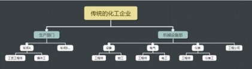
但是，伴随着劳务派遣和外包的发展，公司大量工作外包，尤其是设备相关工作，企业往往只保留少部分工程师和一部分工人，剩余工作全部外包。
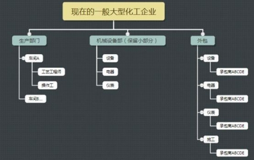
一个大型项目，往往有几十个外包承包商，分别承担不同装置的设备、电器、仪表、工程等不同方向的工作。而这些外包工人，往往是不算在这个企业的本部职工里面的。因此导致不了解情况的人，在看公司数据的时候，会觉得随着自动化技术的大幅度发展，一个公司所需要的人越来越少。当然，这是一部分事实， 而另外一部分事实却是大量工作被外包。实际上很多外包企业，正是以前的国企改制而来，也正是他们成为了该行业的主要承包商。
曾经有一个笑话，说当你路过某个 X 建的施工地点的时候，你进去看到的绝大部分人都不是这个 X 建公司的，而是已经经过无数层外包后的十八路工人了。这个情况在部分化工行业同样存在。当然和 X 建不一样的地方在于化工企业由于要确保安全，还保留着大量本部的操作工。因此在当前情况下，一家一般的企业， 外包人数与企业正式员工数基本持平。
一名典型的炼油厂外包设备维修施工工人，往往来自河南等人口红利较多的地区，且一般是中年再就业人员。他们跟着同县或者同村的包工头来到化工厂，
作为随时待命的工人，在工厂等候任务。对于一些较为繁忙的设备，典型的如当前主流乙烯生产工艺：乙烯蒸汽裂解设备，因为每天都有大量的作业，这些工人就不得不 24 小时随时待命。且由于化工生产 24 小时不间断，使得他们晚上也同样需要干很多活。一般来说，甲方操作工（即没有外包的本部员工）往往承担准备工作和监护工作，而具体的实施工作由这些外包工人完成，主要就是在操作工的指示下对这些装置的具体设备进行维修，包括从打开法兰这种较为简单的工作到打开设备维修清理，高空作业，动火作业等一系列较为危险的工作等。
因为需要 24 小时随时待命，他们基本上一个月不享受任何休假。另外，尽管同样是外包工，往往还被区分为正式工和临时工，大部分的临时工是购买没有五险一金的。
工资方面，发达地区的外包工人每个月的收入会比在老家种地的收入高2000 元左右，资深工人可能更高，达到 3000-4000 元。如果是技术工种，如焊工，那么收入会更高。但如果与同行业来比较的话，地域的不同，工资并无太大差异，即化工行业的员工工资不和地方所在位置成正比。如北京生产的汽油，不会比山东生产的贵，这导致北京的化工厂工人的工资，很可能并不会比山东高多少。因为山东生产的汽油，和北京生产的汽油的品质是一样的，这导致他们的工资不会差太多。同样是 6000 块工资，在山东小城市可能可以温饱买得起房，在大城市就得吃土。这也导致越是在发达地区，化工行业很难留住人，完全依靠当前扩招相关专业的年轻人来维持岗位。
此外，外包工人干活才有工资，休假往往无收入。由于工资比种田高，且环境相对于深山老林里的工地稍微强一点，因此上一辈很多人愿意从事这个行业， 他们拿着不足本部员工工资一半的钱，干着大部分艰苦的工作，成为了这个时代真正意义上的中流砥柱。但目前的情况是该行业工人老龄化程度日趋严重，工作环境危险，条件艰苦，加之承包商给的待遇极低，年轻人根本留不住，企业招人越发困难。
那实现自动化是不是就能解决这个问题呢？我个人判断很难。一是修理工作很复杂，除非出现全自动类人机器人，否则不可能实现自动化代替他们的工作。二是目前相当多装置既然建成，就会持续不断地生产，在目前化工行业整体低利润的情况下，企业不可能拿一大堆钱来搞自动化改造。
最后，总结一下，化学工业工人具有以下特点：
1、外包工待遇低于本部正式工人，一些层层转包的工人连社保都没有，出事就靠中医和宗教。
2、工作具有一定技术含量，企业培育一个熟练工人往往需要数年的时间。
3、工作环境高危、对工人的要求高。
4、工作复杂，目前难以实现全自动化。
5、工人整体平均年龄偏大，缺少新鲜血液。
本报告中的被访谈对象为某一线城市 4s 店汽车销售顾问。受谈对象为该一线城市某位在汽车销售行业内工作过 15+年的从业人员，其中从事一线汽车销售顾问工作超过十年，目前年龄 43 岁左右，曾任职过汽车销售顾问及其他管理职务。被访谈者先后在六家 4s 店工作过，销售品牌囊括低、中、高端品牌。本调研报告主要基于被访谈者当前所在的 4s 店中销售顾问的情况来进行描述，但被访谈者是抽取了这些情况中具有极高普遍性、在他待过的各个 4s 店都具有一致性的信息，是他认为比较能够代表该城市汽车销售顾问现状的信息。
该 4s 店位于某一线城市非市中心的普通商业区，是某家大型 4s 店集团旗下的一家店。全店总员工数量约 80 人，其中销售顾问人数为 15 人。部门划分与大部分 4s 店一致，包括销售部、售后部、财务部、客服部、装潢部等部门。销售顾问全部属于销售部管理，直接上级为销售部的一把手销售经理。并篇调研报告只关注销售顾问的情况，不讨论 4s 店其他职务员工的情况，以下出现的“员工” 皆指代销售顾问。
1. 性别分布上，销售顾问的性别分布为男女各一半。根据被访谈者观察，在行业内销售顾问的招聘会倾向于男性，但由于现在销售顾问招聘困难，招聘的性别倾向不再执行。
2. 地域分布上，该 4s 店现有销售顾问中，95%为外来人口，5%为该城市本地人口。与之相反的是，在 5 年以前，该店中的销售顾问 95%为该城市本地人口， 5%为外来人口。之前销售顾问的招聘也会倾向于招本地户口的员工，同样由于现在销售顾问招聘困难，招聘的地域倾向不再执行。
3. 学历分布上，除一名员工本科毕业以外，其余均为大专毕业或三校生（中专、职校、技校）。
4. 年龄分布上，销售顾问中约 20%是 90 后，其余皆为 80 后。根据被访谈者
观察，公司是乐于招聘年轻人的，但当前 90 后愿意做汽车销售的不多，年轻人并不好招。
5. 婚姻情况上，85%的销售顾问已婚。
6. 另外，被访谈者表示，现在招聘汽车销售特别难招，招聘标准可以说是一降再降。
婚姻情况上，85%的销售顾问已婚。
当前的汽车销售顾问分为两种不同的工种，一种是传统的在 4s 店展厅接客户的销售顾问，另一种是近年来新出现的工种 DCC，他们主要通过网络渠道（如汽车之家、易趣网等平台）获取客源。DCC 和展厅销售顾问的工作内容只在获取客源方式上不同，其他工作内容均相同。
DCC：只能在网络上获取客户信息之后，打电话过去把客户邀约过来。这些客户对产品知识、网络比价等信息更了解，也让销售顾问们感到更难做（更难成交）。这些电话是客户自己在平台上登记的，所以留了电话的客户自己都是有意愿买车的。
展厅销售顾问：即我们去 4s 店买车时在店内接待我们的常见的销售顾问。
1. 周一至周五：早上开 20 分钟晨会晚上开 20 分钟夕会（下班前），不同的领导销售经理开晨会的方式不同，有的会像某些服务行业（比如餐厅、理发店等） 一样喊各种鸡汤类型的口号，有些则不会。被访谈者个人对“喊鸡汤类型的口号” 这种行为表示很不认同。
不在展厅接待客户的时间，销售顾问通常要擦车（是否有车辆成交都要做），或是处理卖车成交后的一系列事宜，如开发票、做保险、做临牌、上牌、安排车辆装潢、准备交车的车辆清洁和赠送物品、打回访电话等。这里面除了擦车和交车前的洗车是体力活，其他都是跑材料的工作。
销售顾问会被分成几个组，按照顺序，每天会有一组值班，值班的那一组原则上不能做上述的这些事，要在前台待命，但是可以在前台做自己的事情（用电脑工作、闲聊等）。一般每个人两天轮到一次值班。
2. 周六周日：周六日由于客户较多，所有销售顾问全部只在展厅接客户和接待你邀约来的客户，不处理其他事情。
3. 一个周有固定一天开周会，通常在 1 个小时左右。
客户进入展厅，店内的前台接到客户，会按照每天值班的组合顺序分派给销售顾问，当然如果客户有认识的销售顾问也可以自己指定。一般的话销售顾问与客户聊完后，销售顾问或前台会留下客户的信息，一般厂方（即该 4s 店所卖的车子品牌方的人）会要求 24 小时内回访一次，销售顾问的操作方式通常是在客
户走后马上发条微信，之后第二天再打个电话回访。
销售顾问跟客户沟通的过程中通常要达成两个目的，一是介绍产品（产品介绍入职都会培训），二是需求分析（客户按照意向程度、多久内想买车的差异， 销售顾问会在沟通后给客户标注一个级别）。
每天 8.30 上班，需要打卡。自行安排吃午饭时间，无规定的午休时间。下
午 5 点下班，需要打卡，但是基本上不可能准点走，原因是工作干不完。休息日通常是每个人每周排班一天休息，一般都能保证这一天的休息时间（即不会由于工作需要导致休息日白白泡汤）。
不存在工伤风险。职业病方面，主要的就是咽喉炎（由于说话较多）。
销售顾问招聘进来以后一般要经过培训期一个月，这一个月就是看各种培训教材、背各种产品参数等资料，一个月以后进行店端考核、厂方考核，通过才能成为正式的销售顾问。几乎每个月销售顾问都要经历厂方考核，也就是背书加考试。有销售顾问曾经因为背不出书而辞职的。通常来说越高端的汽车品牌对销售顾问的考核等要求越高。
1. 从到手收入上来看，店内的 15 名销售顾问中，每月到手收入五六千的约 2、
3 名，每月到手五六万的约 2、3 名，其余到手收入中等的均在 1 万到 2 万之间。
2. 从五险一金上来看，只有交公积金、养老金、社保，无论员工收入多少均按最低标准交。
3. 从卖车数量上来看，一般每月销量在十辆左右，卖得多的能到二十辆甚至三十辆，最少能到两三辆。值得注意的是，过去（十年前）卖车基本是谁销量高谁挣得多，而现在是销量高不一定挣得多，决定提成收入的大头在于推销出去的衍生服务的数量（保险、贷款等）。
4. 从工资涨幅上来看，近五年销售顾问的收入涨幅约每年 10%左右，从侧面能反映出近年来汽车销售行业的发展境况还是不错的。
5. 关于加班费问题，销售顾问不存在加班费一说。
6. 关于收入的淡旺季问题，每年二三月份是收入淡季，十月、十一月、十二月是收入旺季，淡旺季收入差距在三分之一左右。
一家 4s 店的一把手为该店的总经理，总经理为销售经理的直接上级，销售经理是销售部门的一把手，是销售顾问们的直接上级。另外，其他部门的管理人员如展厅经理、金融经理和二手车经理由于在销售顾问的一些业务上对他们有管理职能（如二手车经理管理销售顾问售卖二手车的相关业务），所以也算一定程度上的上级。
销售经理并不直接参与销售汽车的工作，而其管理工作中的各种做材料的工作则由销售经理助理来执行。销售经理的身份类似工厂里的班长或工地上的包工头，主要就是盯人、督促销售顾问卖更多的车，其收入取决于销售部门所有销售顾问的整体销售情况。
打骂方面，在管理过程中会出现骂员工的情况，但没有打员工的情况。罚款方面，员工迟到一次罚款 50。
销售顾问休各类假（事假、病假、年假）需要销售经理和总经理批准，基本申请了就能批。
辞职很容易辞。销售顾问流动性高，辞职后转行得很少。
因为销售顾问相当于和所有的部门对接时都是要去“麻烦人家的”，所以和每个部门打交道时姿态都处于低位，具体的合作事宜包括：
1. 与金融部门接触：销售顾问卖车时也要说服顾客做金融业务（比如贷款等）；
2. 与装潢部门接触：销售顾问卖车时也要卖装潢；
3. 与二手车部门接触：销售顾问要找二手车部评估二手车，以及销售顾问要做二手车置换等业务；
4. 与财务部门接触：销售顾问要提供收款、开票、结算单等材料给财务部计算奖励；
5. 与售后部门接触：正常来说客户买完车对接的应该是客服部门，再由其联系售后部门，但客户通常更习惯和喜欢通过卖车给他的销售顾问来联系售后部门，进行修车等售后操作；
6. 与客服部门接触：销售顾问要交回访材料和归档材料给客服部。
1. 工会方面，单个 4s 店没有工会（但是准备成立了），整个 4s 店集团有工会，逢年过节会给所有员工发东西，包括门卫等后勤员工。员工不知道工会主席办公室在哪里，员工权益受到侵犯不会找工会。
2. 文娱活动方面，4s 店的客休区有书架等设施。原来店内设有健身区域，其中有跑步机等健身器材，但是后来因为长期无人使用就拆了。
3. 喜欢使用的娱乐 app 方面，销售顾问普遍喜欢刷抖音，喜欢在办公室玩手机游戏。
4. 喜欢使用的获取资讯app 方面，大部分销售顾问几乎不太了解新闻等资讯， 也从未见大家有讨论过。
5. 员工之间的关系方面，销售顾问之间为了抢生意都会产生矛盾。业务做得好的一般都是会被排挤的。
6. 权益情况方面，被访谈者本人还未见到或听说过销售顾问和公司打官司的事件。
被访谈者认为，同样是汽车销售顾问，每个人的销售方法和努力程度同时决定了一名销售顾问的收入水平，二者分不出孰轻孰重。同时，许多销售顾问会与领导建立各种关系（如送礼、潜规则等）以获得领导的更多授权，这样在销售时能等拿到更低的价格权限，就能卖出更多的车。
这就导致一般来说销售顾问的订单不会发在公司群里，会避开其他销售顾 问，因为每个人能拿到授权的价格高低不同，而销售顾问是不知道别人的报价的。
被访谈者认为，每个人的财富水平由天时、地利、人和（即运气）和努力程度同时决定，他认为这样分配财富是合理的，但是不应该太夸张。
被访谈者遇到过许多不同的客户，他认为大致可以分为两种。
一种客户用被访谈者的话说叫“素质较高的”客户，这类客户的行为包括给销售顾问发红包（高至四位数）、送水果以及介绍其他客户等。
另一种客户用被访谈者的话说叫“素质较低的”客户，这类客户的行为包括挑剔、爱占各种礼品等小便宜（比如礼品车模之类的）、威胁销售不给礼品就回访故意打低分等等。
根据被访谈者的经验，售卖越高端的品牌的汽车，第二类客户的数量相对越少。
被访谈者表示，作为服务行业从业人员，他认为就应该有服务意识，即使遇到的客户态度比较恶劣，比如爱答不理、拜官腔、冷漠等等，那都是客户的自由。客户态度恶劣他们也应该笑脸相迎，毕竟作为服务行业，是什么样的人都要能接待的。
被访谈者表示，客户和销售顾问之间存在利益矛盾点是必然的，这一定程度上也由于销售顾问卖车时的车价是在其本人可控范围内浮动的。那么卖贵一点销售顾问就能挣得多一点。一辆车的车价包括车价、保险费、上牌费（上牌员手续费+车管所收费）、购置税、延长保修费、装潢费，其中车价、上牌费和装潢费是有浮动空间的。
被访谈者表示，过去觉得这个社会挺好的，因为自己的日子越过越好了，所以觉得社会也是越来越好了。后来受到子女的影响，对社会的看法有些微改变， 认为我国还不够社会主义，应该在多增加富人的税，来给穷人更多的保障和福利。另外，被访谈者自己感受到的是身边的老百姓幸福感都不高，他尤其觉得身在大城市的普通人幸福感太低了。
这次 145 提出延长过年长假到 10 天，来往就三四天。另外，被访谈者认为我国每年放的长假太少了，只有国庆和春节假期比较长，加上很多公司年假都是不休的，大家如果想旅个游什么的很难有时间。被访谈者觉得要想真拉动内需就得让老百姓有时间消费。
【编者按】这篇调研对西南某省一个偏远小镇的个体户群体进行了翔实的刻画，也可看做无数衰落乡村的缩影。摆在 H 镇个体户群体面前的是双重的困境： 一边是消费能力的严重萎缩，20－35 岁之间的青壮年劳动力基本都已外出打工， 继续留在镇上读书的孩子们也越来越少；另一边则是大资本带来的的电商经济的挤压。个体户的生意逐年冷淡，收入逐年降低，也导致劳动强度逐年下降，富余出来的劳动力除了外出打工也难再有别的出路。个体户群体本身也在老去，H 镇个体户大多数人年龄都在 40 岁以上，年龄在 30 岁以下的个体户很少。在资本主义的生产方式已经无孔不入的今天，这座小镇的变迁以一种立体的方式向我们揭示了什么叫做”留不住的城市，回不去的农村“。
H 镇位于西南某省东北区域某市东部丘陵地带，对外交通依靠国道和省道公路，距离最近的城市有 44 公里。小镇拥有五条主要街道，主体街道为东北至西
南方向走向，H 镇城镇大小为南北长 1.2 公里，东西长 0.8 公里。据第五次人口
普查数据，户籍总人口为 16440 人，0-14 岁人口为 4024 人，15-64 岁人口为 11160人，65 岁及以上人口为 1256 人。H 镇的主要产业是蚕桑业（名义上）和农业， 没有工业，有少量的手工业和服务业，这两种产业主要集中在镇上。镇上有小学两所，中学（不含高中）1 所。
本文所谓的“个体户”，是基于 H 镇及附近镇上的城乡个体工商户具体情况来定义，即有固定或流动的摊面；对经营的摊面具有所有权，不存在被雇佣关系；雇佣人员数量不高于两人，一般不雇佣人员，劳动者主要为个人或其家庭人员。在 H 镇同时具备以上特征的个体工商户为本文中的调研对象，即本文中的个体户。
H 镇中的个体户主要是商业和手工业从业者，主要经营范围为餐饮、食品加工、衣物贩卖、五金、中医或西医等诊所、日用品、酒类贩卖、水果贩卖、丧葬用品、茶馆、麻将馆、文印店、网吧、百货铺、理发店等。
个体户主要是围绕几个部分来进行经营。第一部分是围绕学校经营，经营对象是学生，通常是销售玩具、饰品、文具、零食等。第二部分是围绕农民经营， 通常是销售农具、种子、化肥、生活必需品、常用电器等。第三部分是围绕镇上居民经营，主要是服务业，比如文印店、网吧、理发店、餐饮店、药店等。
在 H 镇上长期经营的个体户分为两种。一类是定居于此的本地人，他们拥有自己的房子，通常将房子的大堂或者房子的第一层作为商铺营业。第二类是流动摊贩，他们大多数不是本地人，通常在 H 镇赶集时才会开车、骑车或走路到镇上，在马路边摆地摊，收摊后给予摊位后面的房主一定的租金，通常是双方商谈后确定一个月多少钱或者一次赶集多少钱，一般是每次付钱，也有不给钱直接摆摊的（这种一般是偶尔来一次，或者是在没人的房前摆摊，或是在一块空地上摆摊）。
需要雇佣人员的个体户通常经营较大的店铺，比如超市这种大型商店，通常个体户不会选择雇佣人手帮忙，因为利润不够高，雇佣后反而收入会降低。所以他们的做法是让自己的亲戚来帮忙，比如让自己的子女或父母帮忙。在赶集日或者某些特殊日子（人流量大的日子，比如开学日、镇上有事情需要各村的人参与的日子等）才会让人帮忙，平时是自己或者夫妻看店。
由于乡镇较为偏僻，镇上的个体户几乎没有相关部门进行检查，日常生活中对政府部门的接触几乎没有。以营业执照为例，新开的店铺一般并不会主动办理营业执照，现在拥有营业执照的个体户一般是几年前或十几年前相关部门来检查时发现没有营业执照，让个体户前去办理的。所以只要想开店，任何一个人第二天就可以租个门面进行经营，没有任何的审查和限制，经营范围也没有任何要求。通常可以看见一个店铺里同时经营数种不同行业的内容。比如一家文印店同时经营着照相、文印、日用品贩卖、小电器贩卖、充值电费话费等多种内容。
一般的个体户生意是有明显的淡旺季，旺季是赶集日和过年期间，淡季是非赶集日。当地赶集时间是农历逢二、五、八（比如初二、十二、二十二这种日子），大概三天一次赶集日。赶集那天，从村上或其它镇的人前来参加赶集。各家商铺会将自己贩卖的商品摆在自己店门前，有些商铺还会使用喇叭播放音乐或者广告词来招揽客人。
个体户一般是用自己的房子作为店铺，省去了房租的费用。市场缺乏足够的监管，是一种很纯粹的市场环境，也就没有所谓的相关手续费用。镇上的治安环境还行，最多有些小偷小摸，并不存在有活力的社会团体（没年轻人），所以也没有打点费用。个体户一般是小本经营，并不会怎么装修门面，只做必要的简单的装修，这部分成本很少。主要成本是批发货物、购买生产设备等必要的开支。个体户开店前对这个成本通常不会预算，因为他们觉得有多少钱就开多大的店， 主要投入资金用于进货或购买生产设备，投入多收益高，投入少收益少。通常是几年或十几年时间逐步投入资金扩大经营。
以一家主要贩卖日用品的个体户为例。其每月的支出主要是水电费一百多
元，进货花费 3-4000 元，没有雇佣费用，缴纳夫妻双方医保和养老保险 600 元
左右，吃饭大概 400-600 元左右，日用消费 500-800 元左右，人情往来花费不定
（随一次礼 200 元）。也就是说，一家个体户，维持夫妻双方生活的每月必要开
支大概为 1000 元左右，非必要开支 500-1000 元左右，维持商铺的必要开支大概
在 3000-4000 元左右。
商铺盈利的主要手段是贩卖日用品，其每月利润为 3000-4000 元左右。每月
利润除去必要开支后剩余 2000 元左右以备不时之需。
上述商铺在镇上算中等偏上的收入群体，大部分个体户利润在 2000-5000 元
左右。由老人经营的店铺利润低一些，一般在 1000-3000 元左右。利润高于 5000 元的个体户不多，不过他们工作时间长、工作强度大，时薪计算下来也和其他个体户差不多。
2020 年初新冠疫情逐渐波及到 H 镇，在 2020 年过年这几天本地政府开始对市场进行管控，限制人员进出，限制店铺开门营业。这段时间持续了将近一个月， 管控力度才逐渐放松。这一个月无法开门营业，没有人口流通，是整个疫情期间个体户最难熬的日子。2020 年年后管控力度放松，但是生意仍然不如 2019 年的同时期。收入降低了一半以上。大部分个体户都处于一个吃老本的状态，一直持续到 2020 年四月份，这种日子才逐渐好转。
2021 年过年前几天，限制人员回乡的通告小幅度影响了回乡过年的人数， 和往常几年相比人数区别不大。乡镇上走亲戚、祭祖等活动也没有受多大影响。
由此可见，疫情对低风险区域的偏远乡镇影响并不大。只有当疫情严重影响到了当地，才会对个体户产生严重影响。
H 镇个体户大多数人年龄都在 40 岁以上，年龄在 30 岁以下的个体户很少，
仅有几家个体户年龄在 30 岁以下，他们主要经营网吧、文印店、电脑店等有较高科技要求的内容。50 岁以上的个体户基本上都是从事传统行业，比如酿酒、缝衣服、茶馆、麻将馆等。30-50 岁之间的个体户介于两者之间，主要经营贩卖日用品、贩卖小电器、贩卖玩具、修车等内容。
H 镇的个体户很多名义上都是夫妻经营，但是实际上只有一个人平时在家看店，令一人会选择出去打短工、跑摩托等赚点快钱，用以维持家庭开支。几年前赶集日人流量大时，个体户夫妻双方都会在家经营，这样有时人手仍然不够，就会让父母、兄弟、子女帮忙。比如一家餐饮店，2014 年时平时夫妻双方都在家
经营，丈夫负责做饭、做包子等厨艺工作，妻子负责招呼客人、泡米粉、收拾桌子、收银等服务工作。赶集日吃饭的人多，两个人忙不过来，就让他们儿子负责收拾桌子、卖包子，他们父母负责洗碗、做饭，丈夫负责和面、炒菜，妻子负责招呼客人、收银。
最近几年人流量越来越少，他们现在两个人可以很轻松的做完这些事情，也不需要让自己的家人来帮忙了，更不用考虑雇佣人手来帮忙了。其他个体户现在也只有一个人在家经营，另一个人外出打工。60 岁以上的个体户也是只有一个老人在家经营，家里的后辈全在外面打工。
仍然以一家餐饮店为例。他们每天早上五点起床开始忙，准备当天的材料， 生火做包子，等待吃早饭的客人上门。早餐时间过去后可以休息一两个小时，这段时间一般用来剥蒜、择菜。十一点开始准备午饭，一直忙到下午一点半左右。一点半到两点收拾好后开始午休。午休到下午三点半至四点，开始准备晚饭，晚饭阶段一直忙到七点半左右，就闭炉休息。
每天都是如此，从早上五点到晚上八点，除去中午午休两个小时，基本上每天都要工作将近 12 个小时。工作的 12 个小时中，上午 6 时到 9 时、中午 11 时
到 13 时，17 时到 19 时是最忙的时间，时间为 7 小时，占每天工作时间的一半以上，剩余的工作时间虽然不怎么忙，也要购买材料、处理材料，基本上是无法走动的。
这种工作强度很大，每天都感觉自己很累，主要是身体累，也有腰疼，肩疼等毛病。他们每天最开心的时间就是晚上八九点以后去其他人家里打麻将，用这种方式来舒缓自己一天的劳累。
其他个体户也都差不多这个样子，不过有些略微不同。在赶集日普遍上个体户会在早上 6 点-7 点半逐渐开门营业，开始一天的生意。上午开门后半小时就有客人陆续上门，一直持续到下午两三点，有时忙起来中午饭都没时间吃。下午两三点后就逐渐没有生意，开始休息，一直到晚上晚饭后才有一小波生意，晚上八九点才关门歇业。
非赶集日经营时间几乎一致，不过没有赶集日这么劳累，整个白天都很轻松。店主在店铺里一边看电视一边看店，时不时有客人进门选购，店主就跟随客人进行选购介绍，客人购买后离开，店主也回到座位前坐下继续看电视。
虽然平时个体户都较为轻松，但是工作时间并没有减少多少，仍然需要每天将近 12 个小时的工作时间，只有工作强度降低。但是工作强度降低的后果就是收入减少，基本上仅能维持收支平衡。劳动力也富余出来，多余的劳动力就会选择出去打点工，赚点快钱来补贴家用，也有选择长期外出打工，一年才回一次家。
以一家较大型超市为例，主要雇佣 30-55 岁的女性作为收银兼保洁。每月工
资在 1800-2600 元之间不等，不提供五险一金，也不会考虑购买商业保险。有些大型店铺（一般是连锁店）会每个月额外给两三百元作为保险费用，让被雇佣者自己负责保险缴纳事宜。通过在店铺门口贴招聘公告，或通过熟人介绍，来招聘人员。店铺招聘员工普遍不签订劳动合同，以口头约定为准，少数店铺会签订劳动合同，但是合同上基本全是对店铺有利的条款，而被雇佣者自己没有相关的能力从劳动合同中分辨对自己有利或有害的条款。店铺招聘的雇员通过熟人介绍来的一般不会很快就离开，通常能干上一两年，长期的有四五年。通过招聘公告应聘的人员，流动性较强，短则三个月，长则一年，就有人员变动。
收银员工作时间是每天早上八点到晚上八点，没有周末休息。也要负责早晚打扫超市卫生。收银时长期站在收银台前，没有人的时候就可以在一旁坐下休息。五十岁以下的雇员效率并不高，会尽量少干活。
五十岁以上的雇员就有一种国企时代主人翁的心态，就算这些工作跟他们没关，也会插一手帮忙，很多时候也会站在雇主的角度着想。而四五十岁左右的雇员基本上就不会存在这种思想，他们更多的是想着自己，更有甚者有存在小偷小摸或记假账的情况，所以雇主一般每隔一段时间就会查一次帐。
从 2014 年开始，H 镇的青壮年劳动力逐渐流失。20－35 岁之间的人基本上都不在家，全部外出打工挣钱，家中留下老人和小孩。这种现象以农村更甚，镇上稍好一点。所以从 2014 年以后，个体户主要经营对象就是老人和小孩。
在家的老人大部分是农民，他们负责照看家中的小孩。当小孩在街上看见心仪的玩具或者其它物品时，拿在手上爱不释手，长辈拉都拉不走，小孩被拉走的时候就坐在地上撒泼哭闹。然而不管小孩如何哭闹，长辈都不愿意随便花钱在他觉得不重要的东西上。有时候长辈也于心不忍，就从自己的衣服里面的兜里翻出一个卫生纸的外包装（这种外包装类似于一个钱包），从这个外包装里一张张地数一角、五角、一元，最大的也就是十元的钞票。好不容易凑够了钱，颤巍巍的将钱递给商贩，然后看着小孩在旁边破涕为笑，自己又颤巍巍地将钱包放进衣服里面的口袋，背着手拉着小孩慢慢的离开。
老人消费能力不足，而读书的小孩数量也不足。2012 年，镇上的学校 1－9 年级加上学前班大概有近 900 名学生，今年仅剩余 200 多名学生。大部分学生都不会选择在镇上读书，而是被父母送去城里面读书，或者去其它大点的学校读书。
学生数量不足，加上占主力消费的青壮年数量不足，导致镇上的生意逐年冷清。在 2014 年的赶集日，店铺会从早上八点一直忙到下午五点左右。2018 年的
赶集日，店铺会从早上九点半一直忙到下午两点。而在 2021 年春节前夕，店铺基本上全天都没有多忙。虽然有回乡过年的人群，但是他们更多的是只看不买。2020 年春节前夕，某家卖水果的店铺一日的流水有一万元左右，今年春节前夕， 一日流水仅有三千多元。
中老年人群虽然数量庞大，但是个体户也受到了网购的竞争。镇上的快递点每日都要接收数千件快递，很大程度上挤占了贩卖商品的个体户的生意。
而那些不接触互联网购物的中老年人，他们本身就没有多少钱，一个月的收入不过数百元。他们的消费能力不能支撑镇上的经济。
人口的流失，加上网购的挤压，导致个体户的生意逐年冷淡，收入逐年降低， 也导致劳动强度逐年下降，而这又进一步导致劳动力富余。多出来的劳动力为了维持生计，只能选择外出打工挣钱，这又进一步导致人口流失，形成一个恶性循环。
所以，现在镇上的个体户都觉得生意越来越难做，收入也越来越少，都不打算扩大经营，以维持目前现状为先。现状他们劳动时间也开始逐年减少，劳动强度也逐年下降。个体户们觉得能撑一天就过一天，实在撑不过去就关店外出打工。而年老的个体户有子女赡养的就可以顺势关店养老，家中经济困难需要赚钱的， 也只有不顾年龄外出打工。
目前大资本除了网购对个体户有很大影响以外，连锁店、社区配送等等大资本的其他手段并没有对他们产生多大影响。以前存在的同行竞争也随着人口流失和网购逐渐平淡了下来（因为生意都难做，所以反而没了竞争）。
个体户中也有些要去其它人口多的镇或者城市里开店，不过这种人算少数， 大部分个体户受限于学识和经历，并没有长远打算的习惯，而是走一步看一步， 得过且过。他们会对生意好而感到高兴，最喜欢店铺里全是客人的情形。他们也会对生意差感到讨厌，却也没有办法改变。看到其他店铺生意好也会嫉恨，在背后说他们几句坏话，也会在街坊有啥困难时出手帮衬一下。
H 镇上的个体户是典型的小资产阶级，他们大多不剥削他人，主要进行自我剥削。他们一方面觉得自己和其他打工的无产者是一样的，另一方面也看不起穷人、农民。他们作为私有者，羡慕资产阶级的富有，也讨厌资产阶级对他们的压迫。他们思想上倾向资产阶级，也保有纯粹的多劳多得思想，对改开前的时代感到拘谨和不安。
他们本想岁月静好，生活一直这样忙碌且充实的过下去。但是大资本并不会
主动放过他们。乡镇的年轻人被城市的生活所吸引，大量的劳动力和消费者离开了他们的故乡，只有老人和半大的孩子留在了家乡。电商经济的发展已经越来越挤压他们的生存空间，日益将他们从还略有优越感的小资产阶级抛到彻底的无产阶级去。他们虽然反对大资本，但是，在他们的利益基本还可得到维持时，就会向当前的现状妥协。他们有时候也会抨击当局的政策，但遇见对自己不利的事情也只会口头上埋怨几句，没有人愿意主动带头解决。大多数的个体户随波逐流， 不愿意惹事，遇事宁愿息事宁人。他们的妥协性、动摇性和软弱性都是典型的小资产阶级的特点。
【编者按】近些年来，外包、劳务派遣、小时工等灵活用工形式越来越常见， 甚至在某些已经消声灭迹的地方“死灰复燃”。本文的调研报告，介绍了某国企外包维护人员的工作情况，情况比较详实，引人深思，发给各位同志，也希望大家有类似情况的，有所思所想的，可以给佐伊来稿：zuoyi23@protonmail.com。
（一）工作内容
1.每日对固定线路进行巡回，确保线路安全；2.发现有在线路上施工的情况， 及时阻止并向上级报告，由上级部门进行沟通；3.对线路上破损的标识等提示或保护设施进行维护与更换。
需要巡回的线路长度在 30-50 公里之间，一般来说平原地区每人巡回的线路
较长，山地地区较短。每日早上 6 点出发可在中午 12 点前完成一次巡回。近年来工作强度逐年上升，主要原因为：
1.上级单位压降障碍指标，倒逼基层增加巡回次数；2.随着经济发展，施工逐年增多，要看护的施工点越来越多；3.随着 app 等管理工具的推广，巡线员偷懒的机会越来越少，下发的维护量，都要全额完成，变相增加了维护量。
考核主要借助公司开发的 app，巡回时打开 app，自动在线路上产生轨迹， 并可在 app 上报施工情况。后台维护人员根据 app 反馈的数据核定维护人员是否完成额定工作量。
1.平原地区大部分维护人员使用电动车作为交通工具，自然，交通事故是不可避免的；2.部分维护人员的工作地区涵盖郊区、农村、山区，在过沟爬山时存在受伤风险；3.公司为每位维护人员都购买了意外伤害险。
公司采用业务外包模式，一段线路的维护业务外包给维护人员，因此所有维护人员均为“个体工商户”。
维护人员平均年龄为 40 岁，根据上级最新的年轻化政策，正在逐步清退 55
岁以上的维护人员，同时新进维护人员年龄均在 40 岁以下。
普遍为初中、高中学历，由于工作越来越依赖手机 app，目前规定新进维护人员必须有高中以上学历。
由于工作性质相对艰苦，人员流动性较高，每年大约会更换 5%-10%的维护人员，越年轻，越容易流失。
1.固定薪酬：每月完成巡回等任务即可发放，约 3500 元/月；2.计件薪酬：
每月维护线路上的设施时按照维护的数量计件付薪，每月 400-800 元；3.考核奖
励：直到年底如果负责的线路未发生故障，即可领取奖金，数额在 3000-5000 元
不等；4.考核扣罚：负责的线路发生故障，一次扣罚 2000-4000 元。
因公司采用业务外包模式，所以五险一金公司均不购买，由维护人员自行购买养老、医疗保险。据统计，每个维护人员每年在这些项目上大约需要花费 5000 元。
夏送清凉冬送暖，折算成本一人 400 元/年。综合来看，外包维护人员的薪酬待遇为同样工作内容的正式员工的 40%。
1. 薪酬：由于省内经济发展情况的差异，对于四五线小城市的维护人员来说， 薪酬尚可，在发达地区，薪酬竞争力较为缺乏，也造成了大量的人员流动；
2. 强度：相比于外卖快递等行业，线路维护每天的工作内容相对单一，这在某种程度上意味着轻松。相比于工地上的农民工，体力劳动强度大大降低了；
3. 稳定性：我们单位除非发生多次故障，不然不会主动开除员工，同时由于是大型国企，对外讲出去也好听。
由于正式员工与外包人员巨大的身份分野，外包人员基本处在公司的最底层。公司的各项活动，慰问，都最多只能以顺带方式捎带上他们。
公司本身存在工会，但是由于财务制度的原因，公司正式职工的工会经费不能用在外包人员身上，所以工会的活动均不带外包人员参与，外包人员与公司工会几乎无联系。
对于较年长的维护人员来说，更多的是要一份稳定的收入，他们本身对于阶级跃升已经没有想法，唯一的期待是希望子女好好读书，不再当工人。
对于年轻的维护人员来说，他们承担着结婚生子的压力，同时也有向上走的渴望，可由于学历、技能等原因，通道极为狭窄，在很多时候，他们表现出一种迷茫。经常出现为追逐更高薪酬离开过一段时间又受不了返回的情况。
【编者按】“奋斗的人生最美丽”，诸如此类的言论佐伊相信大家经常听到。可仔细锤敲，不加条件、不设背景，这句话其实是一句“废话”。“奋斗”如何定义，老板嘴里的奋斗就是希望员工无条件的 996。再换个视角，一个小偷苦练偷盗本领，甚至紧跟时代潮流，玩起了金融、大数据，这样的奋斗是不是也是最美丽的？
近年来，围绕奋斗或反奋斗，舆论上的热点话题时时在酝酿，从 996-ICU 的讨论，到过劳死等，再到最近多家互联网企业取消“大小周”……
本次来稿的作者，从事的行业是新能源行业，属于制造业企业，作者根据自己的亲身经历，给我们描述了一副资本嗜血的画面。佐伊欢迎各位同志能够多关注制造业工人兄弟姐妹的情况，也欢迎更多的来稿可以提供你的所闻所见，所思所想，来稿地址：zuoyi23@protonmail.com。
正文
我是本科是材料成型及控制工程专业，毕业后，一直从事金属加工制造业的生产一线管理工作。
第一次接触到锂电池行业是 2018 年，我入职了这家新能源龙头企业（姑且称为 C 公司），这也是我噩梦的开始。
得益于国家的政策和补贴支持，C 公司也进入一个野蛮生产的阶段，这股势头相比于 10 年前的互联网行业有过之而无不及。
为了方便各位打工人对这家独角兽企业有一个全面的认识，我将从三个方面阐述 C 公司的一些情况：
由于国家补贴新能源的方针是按年出货量来的，所以 C 公司实行轮休制，也就是说设备全年不停，员工从周一到周日轮流休息。也正是这个原因，作为基层管理人员的主管和组长就理所当然的全年无休。月加班时间超过 220 个小时（8
点-20 点算加班 3 小时，要减去 1 小时吃饭时间）是常有的事，而连续工作四、五十天也是很常见的。印象中，2018 年的时候 C 公司曾经喊出了“连续奋斗 180 天”的口号，其加班变态程度可见一斑。
伴随着变态的加班，公司每年都有人因上班过劳死。2019 年的时候，一个PE 工程师加班到下半夜（室友不知道其几点钟回宿舍的）。第二天中午，经理看他还没来上班，电话也没人接，就联系保安去宿舍查看，才发现人已经凉透了。也是 2019 年的 4、5 月份，一个车间普通员工在岗位上直挺挺地倒下，120 的车还没赶到就已经断气了。
同年还有两例人员死亡，一个是工程师加班到晚上 22 点半骑电动车回家途
中被一个酒驾的女司机撞死。另外一起是员工晚上 21 点下班后跟同事去喝酒， 喝到凌晨一点多回宿舍睡觉就没有再醒过来。
2020 年疫情爆发，到 4 月份的时候武汉才解封。当时有个武汉的兄弟入职了 BMS 部门。他在入职不足 20 天的时候从宿舍楼跳下，当场殒命。事发时间是上午 9 点多，有夜班的人员下班碰到，用手机拍照了，但是被立即赶过来的保安
把手机没收并删除了相关信息。这件事之后大概一周左右，一天早上 7 点 40 左右，7、8 个披麻戴孝的人到公司门口烧纸，也被 3 分钟左右到场的公安强行带走了。
看到这里很多朋友肯定会有疑惑，第一，为什么我列举的事情对于时间线都不明确，是不是我杜撰的？第二，上班不开心为什么不直接辞职，换一份工作就行了，何必选择跳楼这么极端的做法？第三，死了这么多人，为什么外界从来得不到一点信息？
首先，C 公司在应对突发事件方面有非常成熟的流程：出现这种案例第一时间会控制现场避免信息扩散。紧接着会把相关的知情人找过来一对一谈话，按劳动法的规定赔钱劝退并且补偿 10~30 万不等的金额作为封口费（很多在大公司干过的人对封口费应该不陌生），签订保密协议。
然后是保安一对一陪同你去宿舍收拾行李，除手机、电脑、身份证、银行卡等物品可以带走外，其余的物件全部折算成现金赔偿给相应的人员。
下一步就是保安一对一“护送”你去当地的高铁站，帮你买好高铁票送你上车。
最后，也是最细思极恐的地方，那就是，你的身份证 3 年内买不了到该城市的火车、汽车票。
第二，很多人不理解工作不开心为什么会跳楼，我来解释一下:很多人当初选择 C 公司就是看中他的招牌，还有 HR 口头承诺的 4-6 个月年终奖（每年都有变化，时多时少）。说白了，家境好的人不会在这边常干下去，都是一些经济压力比较大的人。
这是一方面，另外一个方面，整个公司鼓吹奋斗文化，你如果不能适应，就会感觉自己是另类、是懒惰、是孬种。还有，在这种高强度长时间的工作环境里， 人是直接跟家庭和社会脱节的，性情也会变得暴躁没耐心。你想想，每天 22 点以后下班，基本上家里老人小孩都睡了，而且因为疲劳，回宿舍洗个澡洗个衣服就只想躺床上刷一会手机睡觉。你的周围也都是这么一群人，你会陷入囚笼思维， 你很容易跳不出来。
顺便说一下，2021 年 7 月份，它在江苏的一家全额子公司又发生一个产线
班长的死亡事件，具体原因不得而知。
你很可能会不解，C 公司这么大能量吗？就连身份证都买不了到那座城市的车票，未免太夸张了。我只要告诉你几个事实就好了。。C 公司 2018 年的纳税占该市年财政收入的 78%，这个城市所有银行都有为它的员工特开的“新能源窗口”。
在 C 公司，生产人员 PRD 和设备人员 ME 平均下班时间是 23 点，因为一个人干 3-4 个人的活儿。它为了让自己的财报更好看，不断精简人力，把班长当员工用，主管当班长用。C 公司被称为是新能源行业的“黄埔军校”。它的薪水或者说年终奖真的非常有诱惑力。2020 年绩效 B 的年终奖都有 6 个月工资。所以， 里面的人想出来，外面的人想进去。
疫情期间，受国内外车企复工的影响，订单量大减。而它却拼命地在网上发布招聘广告，别人投递简历又不通知面试，给人一种公司在扩张缺人的假象。今年，旧的产线要么计划性停台，要么半负荷运转，同时又不断地开设新的工厂， 给资本市场一个欣欣向荣的假象，让股民为其买单。
2020 年 3 月底 4 月初，C 公司曾被深交所约谈，因为它发布了 200 亿债券， 深交所认为其负债率过高风险较大。但是，经过它一系列的操作，其股价涨了近8 倍，瞬间负债率就下来了。
而且，按照相关法律法规，上市公司的股东是不可以作为该公司上游供应商的。但是 C 公司的董事长恰恰就是新能源核心材料---隔离膜的供应商。第二大股东，是作为该公司冷压机的设备供应商。具体的操作手段相信应该不需要我过多赘述，大家懂的都懂。
C 公司跟某些国有车企创建合资公司。合资公司拿过来的订单委托母公司生产，让合资公司持续亏损，亏的是国家的钱。同时自己公司订单做不完再拼命逼下面人。2019 年的时候，原有 7.5K/D 的产线产量逼到了 9.5K/D。而合资公司在2019 年 6、7 月，员工直接放假近 2 个月，管理人员实行真正意义上的 5 天 8 小时。
为了逃避劳动法，现在公司改革，推出所谓的“弹性工作制”。上班只需要打一次上班卡，不需要打下班卡，直接让从业者维权无望。对了，提起打卡，2019 年 11 月，为了开除一名 MDE（设备开发部）总监，直接删除了其一年的打卡记录，说他一年没到公司上班。
附：文章仅代表来稿作者意见，如有不实之处，请联系佐伊。
我在国内一家互联网企业供职，本文内容是初步观点，有待改进与扩充。互联网行业的 996 泛指所有互联网行业中非劳动法标准工作时的加班。
表面指早上 9 点晚上 9 点，一周上 6 天班，实际应包含各种 8 点下班、10 点下班、11 点下班、大小周等加班行为。
资本家的行为用利润来理解就可以了。
996 的基本逻辑是，招聘一个人，给两个人的工资，安排四个人的工作。节省了以下人力成本：
1. 工资、社保和福利
一个人的工资由个人得到部分、个人所得税、养老保险、医疗保险、失业保险、工伤保险和生育保险，及住房公积金组成，除此之外还有公司配套的一些福利。
其中，五险一金有很大一部分是由公司承担的，公司福利则完全是公司自身承担。如果公司能够少招聘三人，那么就能省下一大笔钱，一个人的成本再高也高不过同薪资水平下的三人。
2. 沟通和管理成本
在互联网行业中，并不是越多人干活越好，因为存在着巨大的沟通成本。编程研发并不是单打独斗，要迭代一个大的系统需要和其他人紧密沟通、紧
密联系，这就需要想办法降低沟通成本。
常用方法一是招聘水平更高的员工，他们拥有更强的沟通能力、协作能力、组织能力。二是改革管理制度，让更次水平的人也能发挥巨大作用。
很显然，方法一见效更快成本更低。国内互联网公司大多选择了方案一，在公司管理制度上省了一大笔钱。
3. 996 下的组织管理
人少了、沟通成本低了，公司在基层开发管理上就必然选择注重短期利益成本低的管理方式。
即是按照业务线划分小组，需要贯穿多条业务线的项目，指定一个总的负责人，各个业务线指定分的负责人。并为各个负责人配置相应人力资源，人力资源一般为负责人自己加上可能的其他人。总负责人和分负责人敲定项目各个细节， 产出技术方案，然后开始实施。
在这个工作方式中，各业务线开发人员并不多，所以沟通成本自然降低。并
且特别依赖个人能力，总负责人和分负责人需要推动自己的部分按期完成，否则项目必然延期。
体现在公司招聘上，就是公司偏重于 985 211 的应届毕业生，从其他公司跳槽来能力较强的员工。因他们个人工作能力相对较强，沟通能力较强，因此能在这个管理模式下完成任务。
公司节省了大量人力成本，而实际产出只略有下降，自然能够产生极大的利润。996 能够广泛存在也就不奇怪了。
我从我的身边人入手，了解到了以下几种常见方法，但实际上应更多。
1. 招聘时的含糊其辞
公司无情的一点在于：当你准备好加班到 8 点，它会让你 9 点下班；当你准
备好加班到 9 点，它会让你加班到 10 点。更有甚者，10 点下班过早，凌晨下班为常态。
而这些具体的下班时间，没有任何公司会在招聘、面试时明确告知，或者告知一个不符合实际的情况。当劳动者问起，大多会说一个模糊宽泛的工作时长， 如
“我们这里 8 点就下班了 有可能拖到 8 点半。”
“我们这里是 996 呢！”有可能晚上 10 点下班，周末休息那天也需要处理问题。
“我们这里是 9 点以后下班哦～”有可能奔着凌晨就去了。
哪怕是内推，除非是关系足够密切，大部分时候仍然无法了解到真实下班时间。
劳动者往往入职后才发现工作时间如此长，此时跳槽需要付出更高的离职成本，并且大环境如此，无法保证下一家公司加班不会更狠。因此大部分人不得不留下来加班。
有的人可能会说如果组内有熟识的人，就能知道真实工作时长了。很显然， 我们对绝大部分公司的绝大部分岗位都是没有这种了解条件的。
2. 工作安排的超额
在公司里，上级不会明确说我们要加班。相反，他会说：我们是弹性工作制， 只要大家工作都做好做完就可以下班了。
做好如何定义，做完如何定义呢？由上级来决定。
上级安排正常工作时间无法做完的工作，那么为了完成工作，劳动者自然不得不加班。
在互联网公司，项目具体工期往往是由具体某个负责人来决定并上报，可能这时候的项目完成日期需要的还是正常工时，但是上级会主动帮忙消减工期，让你不得不主动加班，以在这个工期內完成工作。
而上级为何要这么做？因为他上级的上级也是这么做的，一直追溯往上到既要控制成本又要项目迭代的公司最高管理层。
有的人会说，我的工作效率够高不就好了，可以在更短的时间完成更多的事情。
当然不可以，上级会说：“你能承担更多的事务，你能有更多的产出，再努把力，这样就能晋升得更快。”
3. 绩效的导向
在大部人服从 996 的情况下，上级会把绩效作为打压不服从 996 劳动者的工具。
一个显而易见的事实是，如果两个人水平相当，一个人每天加班到 11 点，
一个人每天 9 点准时下班。那么必然是 11 点下班的人产出更高，无论多出的两个小时效率多么低下。
上级就很自然地给准时下班的那个劳动者低绩效，以达到他们认为的激励员工的目的。
更有甚者，有的上级会明确表示：两个职级相同的人，若他们的业务产出相同，则加班更多的那个人应该拿高绩效。
因为加班多的人对工作充满热情，为公司奉献，哪怕他的效率明显远低于另一个人。
4. 加班与调休
互联网公司中，加班可申请调休，即可在以后某一天选择休假。
但是上级可能使用工作安排的超额，让劳动者没有时间能够休假。达到理论上拥有调休假期，实际上无法休假。
当劳动者离职时，这些假期自然烟消云散。
5. 明示与暗示的打压
暗示与明示与就来的直接多了。
有可能是讲公司的文化，要求员工为公司着想，把公司当成自己家。
有可能是在全组会议上说：最近 xxx 每天加班很晚，我也是跟他一起加班很晚，希望大家学习。
有可能是直接约谈某个员工，说每天可以产出更多，这样以后就有晋升的机会；或者直接说最近下班太早，别人都是凌晨 1 点，为什么你 9 点就下班了？
此外还有很多说法，但都是最终导向加班。
明示的手段，特别是约谈，大部分劳动者都扛不住这种压力，不得不屈服于上级的淫威。
6. 福利的导向
互联网公司常提供夜宵、打车报销等服务，但往往有一些附带条件。
例如打车需要 9 点以后才能报销，夜宵需要 10 点以后才提供。实际的操作中，相当一部分人会为此等到较晚的时间才下班，这就营造出了加班的基本氛围。
福利实际上也是营造加班氛围的工具。
关于个人为什么接受 996，我从身边人了解到了几种原因。
1. 环境潜规则压力
环境的压力是最主要。
当一个劳动者入职一家新的公司，进入一个新的团队。显然融入团队是他要做的第一件事情，这时团队大部分人都在 9 点或 10 点下班，那么他也不得不在这个时间点同步下班。
新员工不熟悉团队业务、不熟悉新的工作内容、不熟悉团队已有大部分成员、也不了解各个成员的品格与能力，在这样完全陌生的环境下特立独行相对较早下班是要付出更大代价的，上级的打压也会接踵而至。
若是一个已经很熟悉团队的老员工呢？他当然相比新员工有更多的空间去反抗加班，但是大部分人并没有这方面的经验和意识，所以很可能仍是依照惯性按照环境主流的时间下班。
2. 就业环境
就业环境也是一个重要因素。
当前情况下，996 是广泛存在于互联网行业中的。劳动者不知道自己跳槽的下一家公司会不会加班更狠，所以不得不妥协留在当前公司。
并且，过去城市中的互联网公司较少，规模较大的公司更少。大部分人并不想去小公司，只能选择少数几家公司之一，哪怕他们都是 996.
3. 房价
房价是一个巩固因素。
年龄较大的很多人都是为了尽早买房而接受薪资相对更高的 996。因为过去房价不断上涨，人们坚信越早买房越赚，房价会不断涨下去。
所以他们攒首付，然后背上几十年的房贷。这些人如果失业会对自身造成巨大损害，所以他们对 996 有着天然的软弱性。
一是 996 工资相对较高，可支持还房贷；二是上级要求 996，他们不敢冒着
失业风险去对抗。
4. 更高的薪资
薪资是一个诱导因素。
劳动者在选择工作时，必然倾向于更高工资的工作。无论他们所要付出的代价是否高过他们的预期，在最初做决定时都由于信息缺乏无法准确判断代价。
因此，薪资更高的工作求职者总是络绎不绝。这为 996 制度的实施提供了充足的燃料。
我们经常遇见其他人用下面几种说法来回应 996。
1. 去外企，去国企，当公务员
这个方法对个人是极好的，但却有着很大的局限性。
鼓吹去外企就能解决问题的，无疑是在鼓吹内卷。因为外企能够提供的就业岗位只有那么多，并不能解决绝大部分人的加班问题。
此外去国企或当公务员也不是那么容易。
众所周知，国企与公务员经常被人诟病人员冗余，这是因为他们承担了社会责任，需要缓解每年应届生缺少就业岗位的问题。
国企与公务员的大部分岗位对于应届生来说进入难度相对较低，而对已经在社会工作的人来说则恰恰相反。所以国企或公务员也不能解决大部分人加班的问题。
2. 自愿 996
996 都是自愿的，没有人逼迫 996，都是自身的选择。
这是一种常见的说辞，实际上是公司在利用着各种工具逼迫 996，最终让整个行业都逐步迈入 996。当整个行业都是如此，劳动者自然选择唯一的 996。
此外还有一种进阶的说辞：你不 996，有其他人会 996。言外之意就是，劳动者只是一颗螺丝钉，随时可以替换。
若是你的上级这么说，那么他在讹诈、恐吓你。招聘一个愿意高强度加班并且能力达标的人成本很高，要用各种打压赶走一个人的成本也极高。并且其他劳动者看在眼里，兔死狐悲。这之中有极大的抗争空间。
若是你的同事、亲友这么说，可能是他们没有认清 996 的实质，可能是他们麻木了。
3. 成为老板或管理者就能解决问题
996 的压迫并不是管理者或老板片面决定的，而是市场决定的。
作为一名老板或者说资本家，需要追逐利润。而 996 的加班则是一个巨大的
利润点，那么他就一定会选择 996，否则就要被其他 996 公司击垮。
作为一名合格的管理者，需要充分的完成上级的指标，而这些指标就是以996 的标准来制定的。那么或多或少地压迫下层 996 则是必然的选择，否则无法维系自己的地位。
成为公司体制的一员，就需要完成公司体制交给你的任务。
4. 比互联网 996 更穷加班更多的人多的是，所以不要抱怨恰恰相反，互联网行业就需要更多的抱怨。
互联网行业由于行业利润较高、员工薪资较高、平均学历较高、靠近互联网等特点，天然地占据了极大的话语权。
如果互联网行业都停止了抱怨，只是埋头加班 996，那么其他行业就更加没有希望了。
并且，互联网行业利润更高，拥有改善 996 的基本条件。
如将一个 996 岗位作为两个正常或加班较少的岗位提供给社会，这样反而能够让更多人富裕起来。
5. 这是没有办法的事情
996 经典说辞之一。
“唉，996 都是没有办法的，年轻就是得加班。” “我们以前都是这么过来的。”
时代总是在变化的，过去 20 年不是未来 20 年，任何问题总是有解决方法的。
当 996 即将发展到顶峰的时候，反抗他的力量也会逐步增长，盛极必衰。
2020 年以后，996 面临着来自各方面的危机。
1. 劳动者 996 的动力逐步消退
不知从何时起，人们的观点已经逐步从在北上广工作在北上广买房变成了在北上广工作在老家买房。
并且国家房住不炒成为基本国策，逐步减少房产贷，房地产未来不再作为刺激经济的手段。房价将逐步不再能作为劳动者 996 的动力。
互联网行业经过 20 多年的发展，就业环境大大改善。互联网大厂在各个大城市基本都有分部，互联网行业扎根于各个城市。就业环境不再是以前的一家独大了。
互联网行业逐步进入存量市场，互联网公司的薪资增速不再像过去 20 年一样飞速增长。特别是将薪资和当地房价放在一起比较之后，薪资反而更低了。
就业环境和薪资的动力也将逐步降低。
2. 996 不再是年轻人首选
新一代年轻人逐步了解到了 996 的真实逻辑，已不再相信资本家鼓吹的奋斗。他们更多的选择国企、事业单位或加班较少的其他公司等。
当年轻人数量少了，互联网 996 现行制度的所需要的高水平人才供应自然大大减少。
公司不得不投入更多成本到管理制度上，招收更多人才，减少对个人的压榨。
3. 全网出现左转思潮
新冠疫情后，人民对社会主义道路更加自信，全网出现左转思潮。
这种思潮的蔓延必然揭下资本家和 996 伪善的面具，人民不再选择 996。而实施 996 的公司为了维持自身必然加重对个体的压榨，这反而会更快导致
他的消亡。
4. 996 违法
996 明显是违反劳动法的，没有任何一家公司会在劳动合同上写明真实的工作时长。
当人民反对 996 的呼声日渐高涨，政府内部反对 996 的人必然占据上风。
996 的维系依靠的是潜规则，而这只是薄薄的一层纸。
总有人列出这样或那样的证据或事实，试图证明 996 是必须的、必然的。他们有一万种理由支持 996，我们也有一万种理由反抗 996。
互联网行业有着极高的利润、员工平均学历高，比其他行业更加具备改革
996 加班体制的基本条件。
当人民反对996 的呼声日渐高涨，政府内部支持改革996 的人必然占据上风， 并且劳动力市场的导向会发生变化。公司需要更高的成本招到员工，必然改革现有野蛮管理制度。
那么，996 得到改善的那天就到来了。
按：本文为《互联网行业的 996 逻辑》一文的续集
最近学了辩证唯物主义，用来实践分析某互联网 996 研发团队，分享给大家。刚刚学习不免有错误，希望大家批评指正。
我认为应整理出事物各方面的现象、解析事物的构造，从这些现象、构造入手，分析出事物的主要矛盾。
然后再从主要矛盾出发，理解事物各种现象的本质，实践自己的分析成果。最后再分析这些矛盾未来将会如何运动，从而预测事物将会如何发展。
我选取了某研发团队作为考察对象，目的是分析团队内部诸多矛盾将要如何运动，预测团队未来一定时期会走向何处。
首先我们确定考察研究的对象，某互联网行业研发团队。
典型的互联网研发部门往往同时有产品、研发、测试三大团队。由于篇幅所限，这里只简要概括产品、测试团队职责。产品团队负责提出产品需求，研发团队将其实现为可用的软件或功能。测试团队负责验证研发团队开发出的软件质量是否符合要求。
要考察研发团队，我们需要确定团队内部和外部的主要事物。在这里就是扮演不同角色的员工和业务，我们先列举出各级员工的权力和职责。
团队管理者是研发团队的基层领导，是所有团队成员的实线上级。团队管理者往往不直接参与研发工作，而只是研发工作开展的组织者。
团队管理者对内主要有 5 项权力。
绩效决定权。每年评定绩效奖金时，直接决定了团队所有员工的绩效奖金数量和职级提升。
处罚决定权。可决定处罚团队内部某个员工。
小组长任免权。可指派某个员工为小组长，也可解除某个员工的小组长权力。工作量决定权。决定承接多少上游团队的业务需求，直接决定了团队的工作
量多少。
团队工作决定权。决定团队的发展计划，具体工作如何开展等。
这些权力来自于公司的制度、上级管理者的背书、团队各成员的认可。实线上级指组织架构明确规定的上级。
小组长是业务工作开展的基层组织者，是小组内成员的虚线上级。小组长既参与研发工作，也组织研发工作的开展。
小组长主要有 2 项权力。
工作组织权。决定业务工作的拆分与分派，直接决定了各个组员工作量。决定业务工作计划
向上汇报权。团队管理者一般与小组长交流工作计划和进度，不会直接与组员交流。小组长间接决定了团队管理者对组员的印象。
由于是虚线上级，这些权力仅来自于团队管理者的背书、组员的认可。虚线上级指组织架构没有明确规定的上级
组员是业务工作的执行者，只参与研发工作，不直接管理任何公司员工。组员只有一种权力。
工作建议权。业务工作的开展最终由组员来执行，因此组员天然有着建议权， 对工作方案的制定有一定影响力。
这项权力只来自于小组长的认可、其他组员的认可。
业务规定了团队的工作范围，它和工作任务是两个完全不同的东西。可以理解为业务是一个圈，工作任务是在这个圈内的实际某项建设。
团队的归属业务根本上决定了团队工作的性质、工作量的多少。从而也间接决定了团队的规模、团队管理者对团队外部的话语权。
团队归属业务被拆分给各个小组，又决定了小组的规模与小组长的话语权。
上级管理者是中层或高层管理者，是团队管理者的实线上级。
上级管理者管理多个团队，他们不参与研发工作的组织开展，只决定部门大的方向和规划、决定部门在公司内部分得资源多少、决定团队管理者的赏罚。
上级管理者还能决定部门业务如何划分给不同的团队，也就决定了各个团队的规模大小、团队管理者的话语权大小。
其他团队的内部构成与本团队相同。
在某些情况下构成竞争关系，如争夺部门内有限人力资源与业务。在某些情况下构成合作关系，如某一业务开展涉及多个团队合作。
其他团队也由上级管理者管理，团队业务由上级管理者决定。
公司将一定的业务委派给部门，再有部门的上级管理者划分为多个部分，分派给各个团队。
分派给各个团队的业务就成为了团队业务。
知道了有哪些不同角色的员工，我们还需要知道他们之间的关系是怎样的， 是如何组织起来劳动的。在团队内部，这个关系即是团队的管理体系。
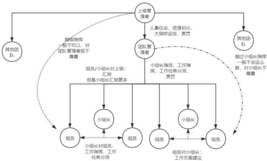
团队内部存在上下级的管理关系、同级的协作关系。这两层关系是由公司制度、职级决定的。
同级的协作关系指同级员工民主地决定工作如何开展。
某项工作的开展，同级员工需要交流讨论确定最合理的方案，并让各个参与员工达成共识，才能实施。
上下级关系指上级指挥下级、上级解决下级分歧。
上一级可以指挥下一级，如团队管理者指挥小组长、小组长指挥组员。但是一般不会越级指挥，例如团队管理者不会在小组长不知情时长期指挥组员，越级
指挥是对小组长的不尊重和打压。
当多个下级出现分歧时，上级需要解决下级的分歧。并且解决方案需要给出合理的理由，违背民主原则会让领导权与工作效果打折扣。
团队内部的同级、上下级关系实际上是同级别民主，对上一级别民主地服从。
除了团队内固定的管理体系外，还有一种随工作临时建立的管理体系。
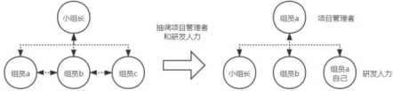
这个管理体系是依据某一明确项目而建立的，项目管理者全权负责项目的计划制定、人力协调、实施开展等工作。但他只在项目的筹备和研发时期行使这些权力，项目一结束也就不再是项目管理者了。
在这个情况下，项目管理者能够获得支配一定量劳动力的权力。他自己也既扮演组织者的角色，也扮演生产者的角色。
临时的项目管理者可能由小组长、组员担任。所以在项目中，经常出现组员反过来指挥小组长的情况。
研发团队的工作来自上游产品团队产出的业务需求。
完成每一个业务需求，都有一定的工作量，需要一定的劳动力支出。团队管理者需要根据研发团队客观人力情况，对这些业务需求做出研发或延后的判断。
如果我们把开始研发的业务需求除以产品团队提出的所有业务需求，那我们就得到了一个比率，即需求迭代率。需求迭代率越高则产品团队越满意。
很显然，需求迭代率也是由团队管理者决定的。
上一节我们列举了不同角色的员工和他们之间的关系，但是团队中还有业务这一事物。这一节我们再来描述业务与员工之间的关系。
业务高速发展是公司的根本目的。员工是业务身上的挂件，而不是业务围绕在员工身边。正所谓铁打的业务流水的员工。
业务的目的是增长并且挣钱，员工的目的是挣取工资。
部门当前处于业务高速发展期，团队当前阶段主要矛盾是 匮乏的劳动力和业务高速发展之间的矛盾，简要来说就是活太多，人不够。
从上述团队的构成可以看出，团队可以分为团队归属业务与员工两个对立的部分。业务要高速发展，员工要提供劳动力，他们之间是对立统一的矛盾关系。
对立体现在业务的发展和员工的劳动力是两个完全不同互斥的事物。
统一体现在没有员工提供的劳动力，业务也就不可能发展；没有业务高速发展的需要，员工就不需要提供劳动力了。所以他们是一个统一体。
要让这个矛盾不激化，可以让业务发展变缓，或让劳动力丰富。但是这会间接降低业务产出，或提升人力成本。
所以部门的根本矛盾是 业务产出增长与人力成本之间的矛盾。但是下面我们只考察团队内部的多个矛盾。
我们已经列举了权力职能不同的各级员工、员工间、业务与员工的关系，已经有了足够的现象材料。
接下来我们分析员工之间的矛盾。
在主要矛盾发展的同时，各个矛盾都会随之而发展。也就是我们有一个大前提，业务高速发展，人力严重不足，工作量超负荷。
由于管理体系以上下级、同级为主，所以上下级、同级之间的矛盾激化地更快。
小组长与组员间的矛盾，可以从工作量和向上汇报两个角度来看待。从工作量来看。
团队管理者将工作下放给小组，并由小组长分配给组员。因小组才是主体， 小组长并不能简单被视为包工头，只是小组长具有分派任务给组员、保障工作进度的职责。
由于工作量的超负荷，每个人分得的工作量总是达到了自己的上限。因此每个人都认为小组长的分派工作量是客观公正的，工作多是因为团队整体工作量的问题。
在这个角度，小组长和组员间的矛盾是缓和的。从向上汇报来看。
由于工作量的超负荷，靠小组长个人来制定工作计划是远远不够的，因为个人劳动力总是有上限的。
那么为了业务的完成，必然需要更多人来规划，这体现在更多临时项目管理
者的出现。
对于某个项目的管理者，他们有可能汇报给小组长，也有可能在这个项目上直接汇报给团队管理者。因此小组长向上汇报这一点淡化了，无法有效影响团队管理者赏罚决策。
在这个角度，小组长和组员间的矛盾也是缓和的。
从上面两个角度来看，小组长组织管理方面的功能淡化了，生产执行方面的功能强化了。
因此小组长和组员的矛盾是处于缓和的状态。当前情况下，小组长和组员的利益和诉求是一致的，进退一体。
我们甚至可以把小组长和组员做等同化抽象处理，他们间的关系更类似于组员与组员间的关系了。
组员的工作内容可分为两部分，即制定计划与实施。
制定计划指制定工作计划或者参与制定工作计划，这一过程需要广泛且民主的思考与交流。
实施则当然是实施工作计划，俗称写代码。
在当前情况下，组员作为单一个体分得的工作过多，在工作时长固定的情况下，必然花费更大比例的时间在实施上。
这就导致了制定计划的时间变少了，产出的工作计划会存在或多或少的问题。组员间的交流也不够畅通，互相间指出错误的概率大大降低。
工作计划的错误最终会影响工作的实施。一旦实施出现延误或严重错误，组员会受到其他人，包括小组长、团队管理者、其他组员的责备或处罚。这是基于事实的责备。
并且组员制定计划往往需要其他组员的协助支持。由于其他人过于忙碌，这项支持的效果也打了折扣，组员间的矛盾在发展着。
所以组员间的矛盾处于一定程度的激化状态，如果工作负荷进一步加重则矛盾会进一步激化。
由于我们已经把小组长和组员做了抽象等同处理，所以只用考虑团队管理者与组员间的矛盾。
当前情况下，团队管理者与每个组员主要有两大矛盾。
绩效奖金与升职加薪上的矛盾。这个矛盾在短期内是缓和的，但是不久后一定会激化。
由于每个人都加班工作了如此之久，完成了如此之多的工作量。相对于部门其他团队，甚至整个公司其他团队，他们都付出了如此之多。
那么理所当然，每个人都认为自己应该得到极大的奖赏。这个奖赏体现在绩效奖金与升职加薪上。互联网公司决定绩效奖金与升值加薪的时间点分布在 2-4 月，而这个固定的时间点已经不远了。
另外一个显而易见的事实是，一般情况下不可能给团队所有成员极大的奖赏，所以这个矛盾总会激化。
工作量下放上的矛盾。这个矛盾是长期的，并且一直处于激化状态。
每个人都不想要如此严苛的加班制度，每个人都想要更早地下班，不想要如此之多的工作量。而工作量由团队管理者直接确定，根据团队可承接工作量来决定工作量是团队管理者的基本职责。
一个显而易见的事实是只要团队管理者能够顶住业务发展的需要，减少下放给团队的工作量，就能缓解以上诸多矛盾。但他们总是不这样做，这个原因在后面分析。
团队管理者超额下放工作量，所以这个矛盾始终处于激化状态。
因此，团队管理者与团队中每个员工的矛盾，一个将要激化，一个始终处于激化状态。
上级管理者和团队管理者根本的矛盾在于团队提供的劳动力上，次要的矛盾在于对团队管理者或团队的奖赏上。
团队管理者为了获得更多的奖赏，会不顾一切地推动团队高速发展业务，完成尽可能多的工作量。数据指标必须要达到，甚至说大幅超过才是最好的。
而上级管理者看到业务突飞猛进，自然也对团队管理者赞赏有加，因为数据指标完全达到甚至超越了。
在这个情况下，劳动力上的矛盾没有激化。只要对团队管理者的奖赏到位了， 与团队管理者间奖赏上的矛盾也不会激化。
至于团队内部的奖赏，则大体交由团队管理者来决定。团队内部的矛盾也交由团队管理者处理。
所以当前情况下团队管理者与上级管理者间的矛盾是缓和的。
外部团队管理者和本团队管理者的矛盾在奖赏上。
奖赏是有限的，上级管理者会把最符合他们需要的团队管理者立为典型大加赞赏。其他团队管理者为了保住自己的奖赏或索取更多，必然效仿。
因此外部团队内部的矛盾也有可能逐步加剧。但是 团队管理者与外部团队管理者间的矛盾往往不会激化，除非上级管理者出现空位。
我们已经分析过了员工之间的矛盾，了解了团队内部的诸多矛盾。
团队管理者与组员在工作量上的矛盾是最主要的，这个矛盾实际上就是匮乏的劳动力和业务高速发展之间的矛盾另一种说法。
团队管理者与组员在奖赏上的矛盾是次要的，但有可能暂时成为主要矛盾。组员间协作上的矛盾是最次要的。
分析这些矛盾将来一定时期内将如何运动，我们就能得出团队这个事物在将来一定时期会如何发展。
未来会走向三种可能性。结合团队近期种种动向，走向哪种道路是确定的。
依靠短期的奖赏留住现有员工，维持团队的加班制度，提供超额劳动力。只要绩效奖金大发特发，达到甚至超过各成员心理预期。那么工作量上的矛
盾就会被暂时掩盖。
但是发钱并不是时时都能发，发钱成本也极高。被掩盖的矛盾会在之后更为猛烈地激化。因此，这个方法只能暂时地掩盖矛盾。
这个可能性实际上是把团队管理者与组员在奖赏上的次要矛盾暂时上升为主要矛盾，主要矛盾则下降为次要矛盾，掩盖了原先的主要矛盾。
基层人员无法再严苟的加班制度，出现人员大面积离职。
这会导致团队生产力大幅度倒退，业务高速发展不可能再支持，团队加班硬降温。当然，上级管理者对团队管理者的责罚是不可避免的。
大面积离职又与外部环境息息相关，基层员工能找到下一份工作且加班不如这么多才会离职。而各大企业则不遗余力地迫害外部大环境。
这个可能性是匮乏劳动力方面成为主要方面，压倒另一方面。
这又有多种分支可能性。但他们都是高速迭代的业务方面占据矛盾的主导地位，成为主要方面。
1. 团队业务被拆分交给其他团队。
由于业务与工作量没有变化，但是支持他的团队和员工数量变多了。所以劳动力充足了，业务高速发展得到了满足。
但是团队业务减少必将减少本团队规模，对团队管理者是不利的。
2. 各种各样的办法招到了很多人。
例如降低招聘标准、新的城市招聘等多种方法。团队劳动力增多，一定程度上缓和了矛盾。
这对团队管理者和团队成员都有或多或少好处。
3. 延长工作时间。
俗称加班，工作时间更长，绝对产出总是增多的。业务高速发展得到一定满足，但是其他矛盾会随之发展起来。
这对团队管理者是有利的。
上面列举的可能性只是我想到的其中一部分。
这些可能性都只能掩盖根本性的矛盾。即公司既想要业务产出增长，也想要尽最大可能削减人力成本。
我们从管理体系的各种现象分析出本质的矛盾，现在则可以从本质的矛盾出发分析行业内的一些现象。
1. 互联网行业大规模招聘与离职，均在 2-4 月份。
这是由于这段时间决定了员工的绩效奖金和升职加薪。当他们的需要没有得到满足，矛盾进一步激化，离职跑路就是理所当然的了。
2. 业务上升期伴随着大规模招聘。
在业务高速发展时期需要尽快提升匮乏的劳动力，招聘是一个直接的方法。同时他也对团队的管理者和各组员有利。
因为业务规模的扩大对团队管理者总是有利的，对于相对资深的组员来说则是升级小组长的一个好机会。
3. 业务需求总是优于技术优化。
大部分时候都是如此，这是因为业务产出增长才是根本目的。其他的行为或目的都需围绕着这个目的。
4. 有时人员离职多，团队管理者却得到了奖赏。
人员离职多有可能是加班多，那么团队产出就高，团队管理者自然很好地完成了任务。甚至有可能团队管理者新的一年招到了与离职人员数量等同的人员， 又是美好的一年。
5. 总是倾向于延长工作时间。
为了让匮乏的劳动力满足业务高速发展，延长工作总是最直接的办法。
而矛盾的激化则要等到一段时间之后，只要在矛盾彻底激化前找到其他方法
转移矛盾，那么就是极为有利的。
6. 部门业务裁撤意味着部门大规模裁员。
大多数情况下都是如此，上级管理者不会完整保留部门，并赋予他们新的业务。
而是裁撤部门，部分人员分散移到多个部门。新的业务由新的更适应新业务形态的部门来负责，即人是业务身上的挂件。
7. 职业道德永远倾向于结果导向。
如果工作方向有误，业务没有增长，那么绩效会很低。如果工作优质完成， 但是业务因为其他原因被砍了，那么绩效也不会很高。
只有工作优质完成，业务正常发展下去，才可能拿到高绩效。因为业务总是优先的。
8. 互联网行业的民主
因研发人员以脑力劳动为主，需要民主选择最佳方案，否则工作效果就要打折扣。
工作效果打折扣就不能满足业务高速发展的需要，因此互联网行业在基层工作计划指定上总是倾向于民主。
很多人认为互联网行业的 996 是毫无办法的事情，只能被动接受。但是互联
网行业的 996 制度并非是孤立存在，而是有一套紧密联系的制度保障它的执行。
996 制度的发展离不开这些配套制度的支持，当 996 发展到顶峰时这些配套
制度又转而开始否定它，最终造成 996 的消亡。
这些配套制度转变的原因是每个 996 魔抓下劳动者的“斗争”。因此，根本
上是人民群众使 996 消亡。
互联网 996 永垂不朽不过是顽固而又持久的幻象。
狭义的 996 指一种早上 9 点上班，晚上 9 点下班，一周工作 6 天的工作制度。广义的 996 则要包含大小周、10105 等格式变种。因此，我把所有互联网行业超过劳动法规定的工作制都叫做互联网 996。
本文描述的 996 现象和得出的结论都仅限于互联网的 996。此外，本文侧重于互联网 996 制度本身的变质，因此限于 996 概念本身，而不是继续向下捞出更多的根本矛盾。
延长工作时长的制度在其他行业有着悠久的历史，在互联网行业诞生伊始， 延长工时制也相伴而生。但 996 这一称呼首先是在互联网行业流行起来的。
互联网 996 发展到现在，已经有了丰富的内涵。让我们看看提起互联网 996
制度，我们都想起了些什么。
工作时长。我们首先想到的当然是工作时长本身，这是 996 的本来面目。高薪。996 称呼起源于互联网行业，当前互联网行业总是与高薪联系起来，
我们也经常看见有人在网上以高薪为理由论证 996 的合理性。因此，提起 996
能联想到高薪。
绩效。每家互联网企业都有绩效制度，并且形式大体相同。互联网企业的各层管理者灵活地使用绩效这一尖锐武器来贯彻 996 的意志。绩效是 996 的强有力支持者。
价值观。互联网企业还经常搞一些价值观，并且这些价值观往往鼓吹加班与奋斗，例如狼性文化、追求极致、今天最好的表现是明天最低的要求。价值观作为 996 的补充被联想到。
福利。许多互联网企业都有着“关爱”员工的福利制度，例如三餐免费、下班打车报销、夜宵券。只是这些制度往往比较巧妙，例如 10 点才能打车报销、9
点才有夜宵。实际上，福利也与 996 相关联。
通过 996，我们毫不费力就能联想起这些东西，高薪、价值观、福利、绩效就是 996 的配套制度。
没有任何一家互联网企业会把 996 写在劳动合同上，合同上只会是法定工时制。诸多的配套制度层层拱卫着 996，它们共同形成无形的枷锁束缚孤立无援的各个劳动者。它们的支持赋予了 996 权威。
这些制度并不全是为了 996 而制定，但是他们与 996 联系紧密。了解这些制度在当前互联网行业中的形态，我们就了解了企业的内部力量如何支持 996。
1、高薪
高薪的构成。
在互联网行业，员工的薪酬可大略分为固定工资、加班费、期权/股票三部分。由于企业主们创造性的固定加班工作制度，固定工资和加班费都算作员工的每月固定收入。期权/股票则是企业上市后可变现的部分，是超额的收入。
早期的互联网企业以高固定工资为主，那个时候完全没有加班费。现在部分互联网大企业周末固定加班有了纸面上的加班费，甚至它们在招聘时把加班费作为一种福利着意强调。至于周一到周五超额的工作时间则是始终没有任何加班费补偿。
期权/股票代表着超额的收入，是互联网红利的体现。期权可以理解为企业上市前提前分配给员工的股票，待企业上市后股价上涨卖出即可套利。它才是互联网行业暴富神话的来源。
吸引人才。
企业依靠高薪吸引人才，特别是吸引相对不抵触加班的人才。它们在招聘时极力夸大总收入，即使这个总收入奇怪地包含了加班费、房屋补助，却对实际的工作时长避而不谈乃至诓骗。
互联网从业者们在高薪的诱导下进入企业，他们看在高薪的面子上，对超出预期的加班能忍就忍了。
高薪激励加班。
企业利用高薪激励加班，但它们并不满足于此，而要改造员工的观念，以便以更少的“高薪”激励更多的加班，多快好省地建立加班制度。
高薪与加班长期共同出现，以至于互联网从业者们把高薪的原因归结于加 班，并说：加班的报酬已经算在你的月工资里了，拿着这么高的薪水却不加班， 你不耻辱吗？
高薪与 996 加班的关联，让员工形成了一种观念：保 996 就是保高薪，互联
网行业的高薪就是因为工作时间长加班多。为了维护自己的高薪，一部分人开始捍卫 996 制度。当这一观念形成，高薪激励加班的效果大大增强了。
例如，近期某互联网大厂取消大小周，有一部分基层员工因他们的收入减少了而支持延续大小周制度。这部分员工的观点大体可分三类：
周末在公司是划水摸鱼状态，本就是白拿加班费。绝对收入少了，我还要挣大钱。
房贷、车贷、生活开支等太高，少了加班费后捉襟见肘。
这些观点单独拎出来看似挺有道理，大小周的取消似乎真的损害的员工的利益，他们的收入确实减少了。但实际上仔细看就会发现这些观点根本站不住脚。
第一种观点完全与大小周制度的目标背道而驰，这种现象只属于少部分人而不是大多数人的常态。以自身白拿加班费来论证大小周合理性是以偏概全。但是这种观点的广泛出现是 996 消亡的表象，我们后面说这一点。
第二种观点则是因果完全错误，互联网行业的高薪并不来源于加班费。真正的高收入来源于固定工资、期权，收入的增多来源于自身的学习和能力的发展， 而大小周恰恰断绝了这个可能性。这正是因为加班所以高薪这一观念根深蒂固的体现。
第三种观点同样是以偏概全，甚至可以说是一种富贵病。由于互联网行业集中于大城市和高薪特性，秉持这种观点的人群往往已经在北上广深买房买车，并且他们买的还不便宜。少了加班费捉襟见肘源自高房价和买房时的高杠杆，大部分从业者并没有资格享受一线城市房贷。因此，这一观点可以说明被房价套牢的恶果，但就是不能说明大小周的合理性。
2、绩效 评定绩效。
互联网行业的绩效分为半年绩效与全年绩效，绩效直接决定了员工的晋升和年终奖金。
目前，业内绩效的评定远未发展到透明公开、标准化的程度，它依靠的是两条习惯性的依据。第一是绝对工作产出最高者得高绩效，第二则是凭借管理者的印象。
第一条看起来似乎是多劳多得？但我们应该知道的是互联网行业工作产出的高低与工作内容息息相关，而容易出高产出的工作内容是稀少的。因此要靠第一条拿高绩效仰赖管理者对工作的分配，且只能保障少部分人。
对于绝大部分员工工作内容和产出区别不大，这时就有了第二条依据。那么如何提升管理者对自身的印象呢？主要的无非是下面几种方式，听话服从、刷存在感、展示工作热情。不难看出，延长自身的工作时间是达成这几点的最直接方
法。
末位背锅制。
管理者拥有借绩效激励和处罚员工的权力。激励是指员工的晋升和年终奖金，处罚则是大名鼎鼎的末位背锅制。
末位背锅制指每个工作组总是有一定名额或比例的低绩效，拿到低绩效的员工无法晋升且年终奖打折扣。没有人想拿低绩效，所有人都极力避免背锅。那么管理者对自己的态度就至关重要。
信息的孤岛。
结合绩效评定的方式，我们发现：要满足第一条，加班是必要条件，因为不加班是无法高工作产出的，即使管理者有意关照；要满足第二条，主动加班是最容易最简便的方法，管理者喜欢让他有征服感的人。
那么要加班到什么程度才能确保自己拿高绩效或不背锅呢？这个问题没有答案，取决于管理者的主观想法。
那么有没有可能工作组内员工们私下商量，共同减少加班呢？这正是企业制度和管理者极力想避免出现的情况。
企业将绩效沟通、薪资沟通等列为红线，管理者熟练使用踩一捧一、分化瓦解等手段，目的是为了让基层员工间信息互不相通。他们把基层员工割裂成一个又一个信息孤岛，陷入相互猜疑。单个员工为了保全自身，不得不在加班上逐渐加码，以减少自己的背锅概率。特别是对于刚进入企业的新员工，这一问题尤为突出。
此时，员工间出现挖坑、欺骗、打小报告的现象，也就不难理解了。但这又是谁造成的？
3、价值观
企业核心价值观。
互联网企业的价值观有很多条，也有很多不明觉厉的称呼，但是他们的核心只有一个：让员工干更多的工作，拿更少的钱。这就是企业的核心价值观。
起初，价值观只是几句标语，企业主有意无意的言论。发展到后面，已经到了企业派遣专人负责价值观的地步。甚至在有的企业，不符合价值观还会受到处罚，所谓味道不对，再好也不要。
企业主们搞出一堆政委、道德委员会、人力管理来维护价值观，好似真有什么神圣的东西要捍卫一样。它们甚至摒弃前嫌，成立起 HR 联盟，封杀那些价值观的刺头。
奖励。
如果大家养过宠物，就会知道奖励的作用。管理者也深谙此理。
它们会设定各种奖项，只要员工符合它们的价值观，就会给一点物质或名誉上的奖励。而员工要想符合这些价值观，要么真的效率极高，要么就加班。
这一奖励还能与绩效制度梦幻联动，毕竟拿奖者不可能背低绩效吧。因为潜在有可能拿低绩效的人数减少了，剩下的人产生了危机感，不得不鞭策自己。甚至部分未拿奖的员工会心生羡慕，更加服从管理者想下次拿奖。价值观于是又得到了一次扩展。
加班是福。
企业极力让员工认为加班是福，在这点上它们极有创造性。先是大家都是我兄弟，然后是加班是上辈子修来的福报，再不行就说成长速度，年轻人不要太在意回报成长速度更重要。
企业告诉员工，它们需要的是符合价值观的员工。符合的员工会得到奖励， 不符合的员工会得到弹压，员工应主动将自己改造成价值观的形状。
加班是福，每天早中晚各默念三遍。员工们出现加班是高绩效必要条件、业余时间不工作是一种浪费、24 小时随时待机准备加班等现象和观点也就不足为奇了。
4、福利
巧妙的福利。
互联网企业提供下班报销打车，提供夜宵券等福利。如果你认为这是企业主大发慈悲那么你就错了，因为这些福利往往有着附带条款。例如 10 点以后才报销打车、9 点以后才提供夜宵券、30 分钟路程才有房补的节区房、入职三年内才有房补。员工享受这些福利的同时，不得不付出些什么。
互联网企业需要福利来宣传吸引人才，但又不愿完全承担这些成本，拧巴的福利制度正是这一心态的写照。给了，但是没有全给。
营造氛围。
福利制度极力营造 996 的氛围，不少人为了享受这些福利，延长了自己的工作时间。当多数人如此，加班的氛围也就营造起来了。
在这个氛围之下，少数人提早下班会发现无数双眼睛幽深地盯着自己。此时管理者再挥舞绩效制度的大棒，少数人也不得不从命了。
希望不要有人受到“福利”二字的迷惑，认为这是额外的好处，企业如何设置福利是无可厚非的。事实上，企业依靠宣传福利招聘人才，但员工入职后却又在福利上做手脚，不愿完全给出。归根到底，员工在企业眼中只是生产的工具， 是成本。
1、996 企业特色
以上的配套制度并非是所有企业都严格遵守的，而是一个大方向。企业们因地制宜地灵活处理，创造出种种具有各自企业特色的 996。
例如小企业更偏向于使用绩效直接强制 996，而在价值观上花更少精力。大企业则更加重视价值观，使用绩效手段时往往不会像小企业那样粗暴。
小企业和大企业在 996 制度实行上的区别归根到底还是由于它们的组织架构不同。我这里说的小企业和大企业均指互联网企业，互联网行业以外的企业需要把软件部门单独拎出来讨论。例如龙湖、碧桂园等房地产企业虽然规模庞大， 但他们的软件部门只相当于互联网小企业。
2、996 不同形态的原因
如果我们把企业主、高管列为企业高层，各级管理者列为企业中层，基层员工列为企业基层，那么小企业和大企业在组织架构上的不同就是高层管理者对基层的直接控制能力不同。
对于小公司，高层往往兼任中层，他们更了解基层情况，也有更强的基层控制能力。而小公司高层往往有着原始期权与股票，他们与企业主共进退，所以他们为了以更低成本产出更多而极力推崇 996 也就顺理成章了。在能够精确控制基
层的前提下，使用强力手段弹压违抗 996 的基层员工是完全可行的。
对于大公司，高层则完全没有这么强的基层控制力了。由于公司规模的扩大， 他们不得不雇佣中层来管理公司，并且把一定的权力下放给他们。此时，高层对基层的控制能力大大减弱，他们要依赖中层，甚至高层也逐渐演变为职业经理人而不再是公司创始人。
控制成本并不符合中层的利益，增加自己辖下员工数量才符合。因为成本是公司的，权力和地位却是自己的。人多才能产出更多，人多才能有更多的话语权， 人多自己才能晋升。
过度推行 996 制度，不利于招聘也不利于组内稳定，对中层来说费力不讨好。
因此，中层推行 996 制度往往在他们认为的适度范围内，而不是把节约成本放在第一优先级考虑。
1、织成 996 的大网
企业把配套制度整合起来，用他们的话说就是以制度赋能为抓手，加班白嫖为导向，打了一套组合拳，底层逻辑还是利润。这众多的制度共同织造了一张密不透风的大网，员工被束缚其上。
员工们进入互联网行业，在高薪的诱导下勉强接受 996 制度。这就像那句笑
话，给我一年 20 万，公司是我家。接下来，绩效制度会敲打那些不服从者，堵上一扇门。而价值观、福利则会鼓励那些服从者，打开一扇天窗。
关上大门，就是企业主的王国。
2、996 的威严形象
单个劳动者无力抵抗这张遍布全行业的大网，只要他们置身其中就无法免受影响，他们为了生存不得不适应这一切并改造自身，他们开始认为：996 是合理的。
于是，一个威严的 996 形象就诞生了。它是合理的，它是不可抵抗的，它是
永垂不朽的。互联网从业者们们告诉自己：顺从 996 吧，这是没有办法的事情！
然而，当 996 制度发展到了顶峰，导致它自身毁灭的因素也已经埋下。996 强大威严的形象不过是一种幻象。
谁在维护 996。
虽然上面都在讨论 996 配套制度如何维系 996 本身，但制度也是由人来维护
的，最终还是因为有人在维护 996 及其配套制度。
维护 996 的群体可以分成两部分，执行 996 的群体与推行 996 的群体。
执行 996 的群体很显然是互联网企业中层管理者与基层劳动者，他们大部分人被动地执行 996，不过也存在主动执行的部分人。推行 996 的群体则是企业主与企业高层，他们主动地推行着 996 制度。
那么谁是 996 制度的真正的获利者呢？谁在主动地推行这一制度谁就是真正的获利者，毫无疑问就是企业主与企业高层。
996 消亡是指什么。
996 的消亡并不是突然的暴毙，而是工作时长减少的长期过程。它的消亡有两个方面，不再被推行了与不再被执行了。
劳动者是 996 被动的执行者，因此 996 在执行方面的消亡会先行到来，可以理解为劳动者有折扣地执行 996，这时的 996 已经变质。紧接着，996 不再符合企业主和企业高层的利益，它在推行方面的消亡也来到了。
我们在上面讨论了 996 的配套制度保障了它的执行，因此 996 的消亡也就是
这些配套制度后续的发展不再能支撑 996 制度了。推行这些配套制度无法再保障
996 的执行，而推行本身是需要花钱的。既然推行 996 变成了亏本买卖，那么 996
自然不会再被推行，也就无从被执行。谁在冲击 996。
2020 年是一个特殊的年份。在这之前互联网从业人员相信互联网红利的存在，哪怕大家都嚷嚷着冬天要来了；在这之后我们都相信互联网红利的褪去，凛
冬已至。国家在这之后对互联网行业的反垄断压制也让我们确信这一点。
并且，互联网行业的利润率下降也是无法逆转的过程，行业的发展已经到了新阶段。互联网企业业务扩张速度减缓，劳动者回报减少已成定局，互联网 996 制度不再能适应新的时代了。
996 伸出的手扇了自己一巴掌。
我决不是说这些制度也要消失了，而是说它们在执行中逐渐变质，并且无法再为 996 制度的贯彻提供支持。
1、高薪的否定生产的内耗。
越是重复性低的工作，基层劳动者越是能掌握更多的生产关键信息，这为他们的消极抵抗提供了客观条件。程序员、产品策划等互联网行业核心工种正是如此，程序员们更是不断在消灭重复性工作。
996 制度并不维护基层劳动者的利益，并且互联网行业的工作产出还无法很好衡量，因此当企业规模扩大、管理层级增多，划水摸鱼、消极劳动现象的出现是不可避免的。
那么他们如何消极抵抗呢？以程序员为例，生产关键信息就是他们对某块业务逻辑代码细节的了解。既然只有他们自己了解这块逻辑，那么项目排期多报几天监督者也无法发现并驳回吧。为了防止信息落入他人手中，用屎山代码构筑护城河也就屡见不鲜。
在过去，企业主可以使用与高压监督与物质激励两种手段来减少内耗，以达到控制基层劳动者 996 的目的。但如今，这两种手段都要失效或消失了。
高压监督失效。
这种手段依赖企业高层对基层的绝对控制力。随着企业规模的扩大，基层劳动者越来越多，企业高层能够直接掌握的生产关键信息便越来越少了。
高层不得不引入中层来管理和监督基层劳动者们，随着规模扩大中层的层级还会不断地增多。但是这又引入了新的问题，谁来监督中层？如何监督中层？中层与高层利益一致吗？随着中层的引入，中层与高层的矛盾也被引入了。
中层并不是高层的贴心小棉袄，他们对控制企业成本毫无兴趣，仅对提高绝对业务产出、扩张下属数量有兴趣，因为这能维护他们自身的利益，哪怕投入产出比低下。
由此可见，庞大的中层本身对企业也是巨大的成本耗费，而要想高压监督基层劳动者，庞大的中层又是必不可少的。此时维持高压监督的成本已经远远大于它的收益了，高压监督基层劳动者减少内耗的手段失效了。
物质激励消失。
这种手段需要企业业务始终保持快速扩张状态。对于大企业的部门来说，保持业务快速扩张状态意味着能够得到大量企业资源投入；对于小企业来说，保持业务快速扩张状态意味着能够得到大量融资资本投入。这两种情况下它们都有足够的理由和资金来激励劳动者拼命加班减少内耗。
那么对于那些并不处于业务快速扩张状态的企业呢？它们的资本并不充裕， 用超额的收入驱使基层劳动者加班减少内耗对它们本身是沉重的负担。并且由于业务处于稳定期，并没有业务快速迭代的需要，用超额物质激励基层劳动者也并不划算。
在互联网行业红利褪去的当下，企业越来越拿不出丰厚的金钱回报了。互联网行业不再处于高速扩张状态，物质激励手段将逐步消失。
高薪激励加班破产。
企业主失去了控制基层劳动者们 996 的有效手段了，此时基层劳动者们也许
名义上仍然保持 996 的作息，但是企业无论如何也得不到与 996 相对应的劳动产出数量了。
不仅是那些手段失效，连基层劳动者们的观念也将出现变化。由于丰厚物质回报先于 996 消失，劳动者们发现即使他们比自己的行业前辈加更多的班、干更累的活也无法得到那么多的回报了。这将促成因为加班所以高薪这一观念的瓦解，以过去手段控制劳动者的加班成本更高了。
高薪已不能再为 996 制度提供支持，企业主们的算盘落空了。
2、绩效的否定联系的重建。
在互联网行业，工作上的沟通对于生产至关重要。毕竟产品策划不可能在无沟通的情况下制定出产品设计方案，程序员不可能在无沟通的情况下产出可靠的代码。
除工作上的沟通，还有生活上的沟通。人是社会的动物，沟通是情感的需要。劳动者们自发地沟通交流满足情感的需要，此时 996 把他们一天绝大部分时间钉死在工位上，同事间沟通时间大大延长，感情升温迅速。
这正是那个笑话描述的景象：如果你见到一家公司的劳动者相互冷漠、不苟言笑，那么这一定是一家早九晚六的公司；如果你见到一家公司的劳动者勾肩搭背、有说有笑，那么这一定是一家 996 公司。这一笑话适用于人员更替快速的行业，互联网行业无疑在此列。
由于工作与生活这两种沟通的必要性，劳动者们之间的联系最终一定会建立起来，这是绩效的大棒无力阻止的事情。
大锅饭。
过去大家并不清楚工作组整体绩效情况。因为企业划定了不可打听绩效、薪资的红线，但在劳动者们建立起默契联系时这条红线只是摆设。
在绩效评定之后，我们可以看到劳动者们三三两两出去散步、闲聊，哪怕平时没有这个习惯的人也是如此。他们会聊些什么？沟通一些企业禁止沟通的事情谁能知晓。此时，工作组内的劳动者都了解整体绩效的情况，只有管理者假装大家都蒙在鼓里。
我们前面知道，互联网行业的产出并不好衡量，那么绩效评定走向大锅饭状态也就是迟早的事情。而由于劳动者们间建立起联系，发觉实际上的大锅饭也是迟早的事情。既然干多干少一个样，那么劳动者们为何还要为老板加油拼命干。
劳动者们只会建立起合作共赢的共识，共同逐步减少工作量。信息孤岛破产。
劳动者们建立起了联系，绩效的谎言也被识破，那么现在劳动者的信息孤岛还存在吗？当然是不存在了，反而管理者们陷入了信息的孤岛。
你是否听说过这个笑话：管理者和劳动者 A 说你是最好的，劳动者 B 不太行，我要栽培你；他又和劳动者 B 说你是最好的，劳动者 A 不太行，我要栽培你。但是劳动者 A 和 B 私下相互告知，管理者的谎言立刻不攻自破。
管理者仍在使用他的惯用伎俩，但是由于下属间信息互通，他的行为反而变成了自取其辱。管理者自己反而变成了无法掌握信息，陷入信息孤岛的人。但是部分管理者不会甘心于此，他会尝试种种办法破坏这个共识。
目前有这么几种办法：
拿出高回报奖励加班者，重新营造起加班氛围。我们的讨论都是基于劳动者回报的降低，如果他们能拿出奖励还至于走到这一步？大环境的变化是不可阻挡的。
安插几个心腹从中破坏。首先我们知道大家都不是傻子，谁是心腹都能看得出来。那么这里的核心问题就是心腹占工作组人员比例高低了，如果太低了无法产生实质影响，太高了又难以达到。道要培养心腹，自然是要输送很多利益的。心腹太少，如何保障工作组产出，靠压榨心腹吗？心腹太多，有那么多利益可以输送吗？如果真能拿出那么多利益，所有人都可以是心腹，都是一条心，也就不存在这么多问题了。
强行加班，不加班就被边缘化。不给吃的还要干活，生产队的驴都受不了。这就是领导硬着卷，手下全跑光的笑话的来源。当然管理者也可以每年都招很多人，过滤沉淀一批卷王养蛊，但这种机会仅在业务飞速扩张期可以使用，大环境改变的往后是越来越难了。
管理者们在维护 996 上使出浑身解数，但一切都只是徒劳而已。行业本身的
变化，他们在 996 可以辗转腾挪的空间越来越小了。
劳动者发觉骗局。
企业主推行价值观，是为了压低劳动者成本，提高劳动者产出，那么它们为了推行价值观自然要将它包装成很符合劳动者利益的样子。例如 996 是一种福报，劳动者拼命干活加班就能获得丰厚的回报走上人生巅峰。
在过去行业发展迅速，拿出一点残羹冷炙给劳动者，这个方法还勉强能说得通，但在当下这个回报依据愈来愈拿不出了。只要企业仍然推行实质上压低成本压榨产出的价值观，那么劳动者的利益就一定是受到损害的。劳动者的利益持续受损，发觉价值观的骗局也就是迟早的事情了。
企业高层们反而认为这是一种“大公司病”，劳动者没有初创公司时那么敢打敢拼了，实际上不过是劳动者发现遵循他们的价值观只会损害自己。
企业打脸价值观。
企业主为了证明价值观的合理性，往往会放一些其他的佐料。诸如敬业、诚实、拥抱变化、坦诚清晰是价值观的常客。企业高层们知道价值观是用来约束谁的，它只是一个工具。
所以我们看到某企业劳动者违规抢月饼，立刻开除永不录用；该企业高管出轨包小三却仍笑得欢，另一管理者强奸女下属包庇不住才辞退了事。正所谓低职级碰到红线，低职级没了；高职级碰到红线，红线没了。
高层为非作歹，中层也有样学样。价值观辩经样样精通，落到实处一股恶臭。价值观最终变成了党同伐异、PUA 的工具，基层劳动者们大都深受其害。
至此，企业刻意歪曲推行的价值观把公司上下变得乌烟瘴气，甚至荼毒整个行业。这一切劳动者们都看在眼里，企业自己戳穿了价值观的骗局。
加班是福破产。
劳动者怀疑价值观，企业亲自把价值观丢在地上践踏。这促成了企业辛苦推行的加班是福价值观的全面破产，谁还会认为加班是上辈子修来的福报。
这也是互联网企业推行的扭曲价值观无法跟上时代必然导致的结果。因为这些价值观并不维护它的受众的利益，而是完全相反。
价值观不再能支持 996 制度了，甚至踢了它一脚。因为劳动者不禁要问，我
们 996 究竟得到了什么？此时再推行 996 制度，势必引起更大的不满。
劳动人民的智慧无穷无尽，企业主的制度可以巧妙，劳动者的白嫖也可以巧妙。
正如前面所说，福利不能孤立存在，而只能作为一个补充。当绩效失去威慑作用，劳动者也就失去了畏惧；当价值观被揭穿，劳动者也就放下了心理道德负担。
既然 9 点才有夜宵，那么我就划水到 9 点；既然 10 点才有打车报销，那么
我就摸鱼到 10 点。在企业主看来，劳动者光拿福利不干活，这是个亏本买卖。但劳动者们切莫跟着企业主一起道德批判，劳动者晚上加班本就没有补偿，10 点才走已经很给企业主脸面了。
营造氛围破产。
我们前面提到福利是为了捆绑部分人，以营造一种加班的氛围。此时此刻， 劳动者相互间已经建立了联系，绩效制度的威慑也大大减弱，他们也清楚地知道其他人晚下班是什么原因。掌握了情况，就不再惧怕，该下班就下班。
企业主营造的加班氛围最后还是破产了，甚至还要倒贴钱。
何为征兆。
996 制度是互联网企业的根本性工作制度，它被基层劳动者执行的情况会时刻地影响企业整体的运转。
基层劳动者们每天工作 8 小时与工作 12 小时会有极大的不同，基层劳动者
们每天劳动 9 小时消极劳动 3 小时与工作 12 小时也有大不一样。
当 996 制度开始消亡，企业会出现一系列征兆。
996 消灭人才。
那些加班最凶狠的企业，他们的恶名从北京到深圳无人不知无人不晓。优秀人才对他们避而远之，贪婪庸人对他们趋之若鹜。996 开始成为阻碍招聘的重要因素，企业人才池大大减小。而我们知道，企业间也是有竞争的，它们也不可能再达到垄断的状态了，更少的加班或取消 996 可以作为一种招聘的福利吸引优秀人才。
996 制度不仅压榨劳动者本人，也要求他压榨自己的同胞。作为一名管理者或者小组长，要想保住自己的地位，压榨下属是必不可少的。一个个鲜活面容变得形容枯槁，这样违反人性的制度有可能留住那些正直诚实有担当的人才吗？不如说它正在消灭这些人，在 996 下这些人即便有这些品格也不得不隐藏起来，因为他们害怕促进内卷。
大家不要对此不屑一顾，这是劳动者间高效协作、企业得以高效运转的关键。也不要认为这是劳动者个人不懂钻营的愚蠢，正是企业的种种制度让这变成了愚蠢。
我们的企业主很清楚这样的人对企业的重要性，他们也极力地鼓吹宣扬这一点，即使他们从未这样约束自己。但是理想和现实总是有着巨大的差距，企业主们的所作所为正在把这一的人变成狡猾自私爱甩锅的人才。
在 996 及其配套制度下，我们总能得到一群影帝。大公司病。
当所有人生产积极性被挫伤，并失去这样一种精神，大公司病就来了，企业主却哀叹人心不古。
什么是大公司病？不过是大家知道为企业主奉献并没有回报，反而会导致自己和其他劳动者们的生活境况变差，而开始逐步保护自己，例如降低工作周转周期、减少排期。但在企业主看来，企业运转变慢了，劳动者不拼命了，这就是病了。
有人也许以为大公司病的企业并没有减少 996 呀？不，996 已经名存实亡了。 996 的消亡有推行和执行两方面，大公司病的表现正是内耗增多，高投入低产出。也许是基层劳动者们白天划水晚上干活、也许是中层们中饱私囊欺上瞒下。
但无论如何，对于企业高层来说，他们想要的低投入高产出 996 已经不存在了。而他们并不掌握基层生产的关键信息，无力直接阻止这一情况。
996 制度正在持续否定自己，成为高投入低产出的代表性制度，企业正在不断地失血。也许，把一部分工资变成加班费发出去比较好？然后再取消加班费， 变相降薪比较好？
价值观崩塌。
企业高层不会甘心于此，他们想出了间接的方法来解决大公司病，这就是价值观。
但这些价值观的根本矛盾就在于，它并不维护它的执行者，即基层劳动者们的利益。基层劳动者们发现，越是信奉这些价值观，自己的工作越多，回报越是少。不仅是自己，自己的同胞们也是如此。
这里的价值观并不只是加班是福，而是一系列价值观，例如客户第一、善意假设、交流坦诚。
企业高层与中层自身并不会遵守这些价值观，他们反而会有意无意地践踏这些东西。当这些践踏越来越多，价值观就崩塌了。没有人再信奉加班是福，维持996 制度的成本将大大上涨。
996 并不会突然在整个行业消亡，而是一个长期渐进的过程，这个过程中也许会由于不可抗力而出现阶段性突进。
价值观衰退。
首先是加班是福的价值观在整个行业范围内衰退，这会造成推行 996 制度成本的大幅上升。那些与这些扭曲价值观深度捆绑的企业会走向灭亡之路，即使它们过去借此作威作福，例如某阿字开头公司。
大企业的 996 消亡，呈点状分布。
由于红利的消退，企业业务从扩张转向保守。期权与股票对劳动者的吸引力降低，劳动者工资增速减缓。劳动者从工作干不完转为需要主动找工作干，工作日程不再那么紧张。
那些周末原本没有加班费的企业有了加班费，一段时间后周末加班与加班费一同取消，劳动者变相降薪。打车、小吃零食等福利逐渐被削减，劳动者们一点一点把周一至周五的下班时间往前推移。
大企业以点带面，小企业的 996 消亡。
由于大企业和小企业组织架构上的区别，小企业的 996 会晚于大企业消亡， 他们仍可使用控制基层劳动者加班的手段。
但是小企业相比大企业在人才招聘上更为被动，并且他们往往青睐从大企业出来的人才。因此，小企业的 996 不会自行消亡，而会由于行业内劳动者的流动而被动消亡。
以 2020 年互联网红利消失为界，本科毕业进入互联网行业的新人将在 10 年后成为互联网行业的中坚力量。这批人未经历过高回报的互联网时代，不会产生加班是福的思想，即使部分人有也会被社会毒打至放弃。
届时，互联网行业的主流意识形态将完全颠倒过来，此时继续推行 996 制度
将遭遇更多的抵抗导致成本极高。因此我认为互联网行业 996 最晚将在 2030 年消亡。
以上描述的互联网 996 制度的形态和转变都来源于我对所识从业人员的交流与观察、行业内既成事实的了解，而较少来自理论推导。因此描述与结论都是经验性的，他们需要划定有效范围。
我交流观察的对象以程序员、产品策划工种为主，运营、客服、审核工种则较少。至于快递员、外卖员、网约车司机工种则完全不包含在内，他们也并不认
为自己从事的是互联网行业。
这些 996 相关的现象在阿里、腾讯、百度、字节、滴滴、美团等互联网主要厂商都有出现，这些互联网大企业的管理制度根本上也相差不大。但是互联网小企业由于数量众多，观察样本比例偏小，存在以偏概全的可能性。
因此，结论的有效范围是：互联网大企业以程序员、产品策划等工种为主的部分最有效，其他工种可能有效，互联网小企业可能有效。
所以我的观点也是互联网行业主要大企业程序员、产品策划等工种的 996
会先行消亡，然后以点带面。而 996 在这里的消亡也已经发生了，近期行业内存在取消大小周的风潮，这也与行业外力量有着很大关系。
1、谁造成演变
每个人的心中都有一杆秤。
我们最终都会知道自己的利益是否受到损害，于是都会做出相应的选择。当所有人的选择综合在一起就是：群众的眼睛是雪亮的。
随着时代的发展、互联网红利的结束，996 制度和它的推行者们走到了互联网行业基层劳动者的对立面。基层劳动者们用自己的脚去投票，用自己的手去抵抗，推行 996 的危机越来越严重。
推行者们要么和 996 制度彻底分割，要么就抱着 996 制度一起消亡。
2、996 能否续命互联网托拉斯？
全互联网的企业主们，联合起来！成立一个互联网托拉斯达成垄断，每个公司都强制推行 996，那么互联网打工仔别无选择不就只能从命了吗。
这个想法是在给谁挖坑，把谁当傻子呢。996 之下更为根本的矛盾最终一定会导致行业外力量的介入，不过这些更根本的东西不是本次的主题。
能否大裁员，单个员工高回报？
首先，真正的高回报只存在于业务早期高速扩张时期，那时有期权、股票的超额回报，因此能靠超高回报激励 996。但是现在普遍处于存量阶段，维护现有业务更为重要，削减人员带来的回报也远远不够激励劳动者 996，这样做是舍本逐末。
其次，裁员具体实施要裁谁？动谁的蛋糕？把哪些人裁掉不会影响企业人心，不会影响到股价，这个问题难以把握。风险和收益相权衡这对企业主来说是一个下策。
因此我们也常看到，只有那些真正陷入困难，或某条业务线严重入不敷出才会出现大裁员，从来没有为了 996 加班而裁员。
内卷增加？
我这里把内卷宽泛地理解为大量劳动者同时竞争同一个岗位，使得从业者不得不拼命加班保住自己的岗位。由于互联网行业的程序员、产品策划仍属于掌握较多生产关键信息的工种，这个内卷更多的体现为行业门槛水涨船高，绝大部分竞争者将被一些硬性指标直接淘汰，业内人士仍然拿着高薪且 996 逐步消亡。我
并不是在夸耀过河拆桥这种行为，而是说明互联网行业人数内卷对 996 的支持相比其他行业将会更少。
但是如果行业岗位突然大量消失，内卷程度急剧增加，大量从业者同时失业呢？这不是指某个企业，而是对于整个互联网行业以及他们的上下游行业。为了稳定的需要这个情况会被极力避免，但这两个字也并不靠谱。这件事如果发生， 就已经超出本文的范围了，而到了另一个领域。
新花样？
那么有没有可能出现一种难以名状的神奇新制度继续维持 996 呢？就算出现新制度，也只能忽悠一时，而不能掩盖一世。根本矛盾不解决，再巧妙的制度也无能为力。
逃不过的规律。
996 的执行者是互联网行业基层劳动者，但是 996 制度损害他们的利益。这
就是 996 逃不出的五指山。
无论怎样变着法地给 996 续命，只要这个根本性的矛盾不解决，都是不可能成功的。
3、否定的否定
我在文中只写了与 996 相关联的制度的演变，特别是它们为何不能再支撑
996 制度。但是这并不意味着它们不能去支撑别的新东西，也不意味着它们就演变成一个完全的好东西。
例如绩效的否定中，劳动者间建立联系，管理者培植心腹，这有没有可能变成管理者主导的派系？派系中的成员不必 996，并且可以优先晋升，但对于派系外的新人就未必如此了。
我们歌颂它们的前进，也要提防它们的变质，但不能以此为借口拒绝前进。此外我也只写了 996 本身的消亡，企业主们只是在这个方面的剥削减少了，
但他们会试图在其他方面找回来、
当我们找到 996 的支持力量，并且认清这些力量未来的发展，996 就不再是一个朦胧威严的形象了。它的软弱本质已经被暴露了出来，不过是一个纸老虎而已。
随着 996 的爪牙一个接一个被敲掉，它甚至连自身的存在都无法维持，于是就消亡了。
996 是有办法解决的
太多的互联网从业者都认为 996 是毫无办法解决的事情，他们常说道：这能
有什么办法啊？于是，他们要么让自己相信 996 是合理的，要么就等着青天大老爷来主持正义。这其实就是一种顽固而持久的幻象。万物皆流，无物常驻。
996 是有办法解决的，我试图说明这一点。本文描述的 996 消亡原因与过程就是其中一种办法，它们都是互联网劳动者自身消极抵抗导致的，即使他们并不这么认为。不过也仅限于 996 这一表象本身。
但是这观点并不是完全严谨的。因为我并不是从 996 制度的大数据分析、浩如烟海的学术文献中得出这些结论，而是从我所处环境的生产中观察得来的。但是只要大家置身于 996 中，总能发现 996 消亡的蛛丝马迹，或许能得出更完善的观点。
所以相比这些结论，摒弃 996 或别的什么东西不可改变的观念更为重要。
如果用一个词可以形容从前的我，那就是奋斗逼。大学毕业后当了一个车间工人，努力工作几年，做到了一个最基层的管理者的位置，一个班组长。
但是这个班组长当的心累，因为经常督促同事积极工作，积极创造价值，总归不受大家喜欢。虽然日常同事关系能维持，但是也只是维持，并不融洽。
举一个例子：有时，设备需要中午加班运行，午休时间是一个半小时，但是设备只运行半个小时，中午运行设备的同事想报一个半小时加班，我没有批准， 我说干了半小时的活就得报半小时加班，不能占公司便宜。（其实在车间加完班之后，回宿舍很折腾，一般就在车间将就将就着注意虽然后面一小时没在工作， 但是在车间午休并不舒服）。
后来喜欢上在知乎键政，看了毛选。尝试分析了一下自己所处的环境。
在公司中，普通工人的目的是薪水，老板的目是盈利。而如果普工的薪水涨了，对老板的影响是什么？答案是老板的收入降低了。
普工的薪资水平主要取决于三点，一是地方的薪资水平，比如一线城市和五线城市的薪酬差距，二是行业的薪资水平，比如互联网和制造业的薪资差距，三是工作能力匹配的薪资水平。
老板发给普工的薪水，是他权衡这三点之后，下发的最低限度的薪水，而不是最高限度的薪水。毕竟工人工资越多，老板盈利就越少。很多普工，包括之前的我，一直存在一个误区就是：随着公司的发展，工人的薪水会越来越高，然而除非进入管理层，否则，普工的薪水永远是决定于上面三点，与公司的发展壮大无关，这个规律很多大型企业的普工工资可以佐证。
并且，老板还掌握工厂，拥有决定权，在薪资议价上，普工处于劣势地位， 所以，普工的薪酬一定是低于其劳动价值的。
普工与老板的矛盾是基于立场完全对立的两方的矛盾，不可调和。
而我是一个班组长，管理着大约十来个同事，是最底层的管理者，协助公司管理员工，保证他们好好工作。所以，我的薪资水平，除了受限于以上三点之外， 还有一点：协助老板管理工人的管理费。
代入主观情感的话来说，我就是一个协助资本家剥削员工的走狗。而我主观上毫无疑问是接受不了这样的自我定位的。
但是回想起来，之前同事想多报点加班我却不让，客观事实摆在这里，我就
是一个资本家的走狗。
既然是一个走狗，那么，走狗这条路，有没有前途？或者说，投降派有没有前途？
我现在是班组长，与我类似的班组长还有好几个，继续晋升的直接上级是车间主任，车间主任只有一个，并且现在已经有了。毫无疑问，投降派这条路很难， 竞争很激烈，与其他同事的距离也越来越远。最关键的是，即使是车间主任，也是被雇佣来的，与公司依然不是利益共同体，多出来的工资只是高级走狗的辛苦费。
并且，我不比其他几个组长更“优秀”，如果沿这条路继续走下去，必须要维护公司的利益，由于与普通工人的立场冲突，与同事相处上会继续心累不说，大概率还得不到晋升。
结论就是，投降派没有前途。我应该站在普通工人一边。
再来看我同事想多报加班这件事。继续上面的结论，我应该帮他多报加班。然而，对此心中还是存在抵触，毕竟加班半小时就报半小时加班，是天经地
义的。反而他想多报一小时加班这种行为，从一般观念上来看，不太像话。虽然我能多报加班，但是仍然改变不了多报加班这种行为的“不正确”，情感上我还需要继续说服自己。
前面说过，公司掌握着劳动者的议价权，老板与员工的矛盾不可调和，并且企业给劳动者的的薪酬本就不能匹配劳动产出。双方本就不平等，如果硬要用一套貌似公平的规则要求双方，本就是对弱势一方的不公平。
如果还是受这种传统观念束缚，那么想一想打土豪分田地。较真的看，打土豪分田地这种行为分明就是抢劫。然而我们都知道打土豪分田地是正义的。
如果一种行为，有损于资本家，有利于群众，那么这种行为就是正义的，如果这种行为跟传统观念有冲突，那么，只能说明传统观念有问题，而不是这种行为有问题
明白了这些，憋在心里一段时间之后憋不住了，干脆在我们车间畅谈了几次， 更多的只是我跟同事们倾诉、阐述我的立场和感触。
我对他们简单说了一下上面的分析，谈了一下大家的薪酬体系是怎么构成
的，公司是如何剥削大家的，而我作为一个管理者又是怎样的一个定位；认真反思自己过去的行为，跟大家道歉，中午想多报一小时加班被我给拒绝的那位同事已经离职，我不能当面向他道歉，于是我对其他同事说了一下这件事情，表达了我对那位同事的歉意。也明确表示，再有类似的事情，加班时间能报多长就报多长。其他类似的事情，我也要尽量帮助同事争取利益。
那段时间由于有强烈的倾诉欲，所以不只是跟我们班组的同事谈，我还会跟其他的班组长聊相关的事情。这个过程中，发现了一些规律，我们班组内的员工大部分会喜欢听我讲，但是也有一位同事的不喜欢听我讲（平时工作最积极的一位同事），会找借口出去不听。而其他班组长，无一例外，都不喜欢听我讲，甚至可以说是害怕听我讲。
教员诚不欺我。
不过其他组长大概率只是跟之前的我一样，没有意识到这些，而不是故意当资本的走狗。
后来，没有不透风的墙，我在车间开会的内容被传到了直属领导那里。但是还好，言论传到那边可能已经变形了，并且，车间主任毕竟自己也是被雇佣的打工人，立场并不彻底对立，所以只是找机会严厉的跟我谈了谈话，让我下不为例。而我也过去了倾诉欲旺盛的时期，也就收敛了。不过，我的思想已经彻底改变了。
跟同事们摊牌之后的几个月以来，组内气氛越来越融洽。
而让我意外的是，由于同事们更加团结，工作上少了一些推诿，工作反而更加顺畅了，这是我不曾想到的。
某一线城市 A 的 B 路一块，由于 B 路一块高校众多，有很旺盛的外卖需求，且附近商圈林立，很多外卖骑手会聚集于此。因此我们选择这一块为我们的考察地点。
具体地点：C 大东南门旁餐馆前（有很多小餐馆，不少外卖骑手在此休息）、商圈 D、商圈 E、F 大厦旁、G 广场周边、H 大厦旁
由于外卖骑手在午高峰结束（2 点左右）至晚高峰来临（4、5 点）这段时间由于外卖单量少会选择适当地点进行休息，我们选择在 2 点半-4 点这段时间对外卖骑手进行访谈。
我们采取的并不是非常严密的填问卷的形式，因为担心这样会使外卖骑手和我们有距离感。我们更多的是和外卖骑手去套近乎，在聊天中套取一些信息。这样做的坏处是无法整理出详细的统计数据，好处是拉进距离后外卖骑手会和我们讲一些故事，提供一些比较感性的想法。
一般是 2-4 人，一个人负责在手机上记录谈话内容，其他人负责问问题。根据访谈的效果来看，人数少一些为佳。
无论是美团、饿了么或是其他种种外卖配送公司，外卖骑手分为三类： 自营、专送、众包。其中自营骑手与外卖公司签订劳动合同、享有法律规定的薪资福利待遇，但为了更好地剥削外卖骑手，平台公司逐步把配送业务外包给第三方劳务公司 ( 也叫代理商 /站点) ，自己只负责平台系统的运营和维护。外包模式下的骑手又称团队骑手，他们以平台公司的名义工作，但受站点招募和管理，与平台公司之间只存在用工关系。众包骑手不受雇于任何单位，只需登陆平台、注册账号就可以抢单配送，是外卖配送平台非常重要的社会化补充。
他们之间最大的差别在于接单方式的不同：专送是由系统派单，如果没有特殊情况，外卖骑手就应该去送指定的单，如果对订单不满意，可以试着将其转出
（专送小团队的内部转单），但如果 5min 之内在专送平台上没有人愿意接收转单，那外卖骑手仍要去送这单（其实 5min 以后也还可以再转， 不过如果最初5min 没人接的话，后面被接的可能性就很少了）。订单的计价方式是无论订单金额多少，都是每单 9 元（不同平台、不同等级外卖骑手会略有差别）。访谈
过的一个外卖骑手给我们讲过一个例子：他曾接过一个总金额 800 多元的水果订单，大包小包要把配送箱几乎塞满，他本能同时接好多单，但这样一个大单使他同一时间只能送这一单。而辛苦也并没有带来特殊的好处：此单的配送依旧只有 9 元。再比如有些午高峰时期的单，严重超时的，客户脾气不好，也会扣钱， 众包的都不接，但是专送的必须得接。
值得一提的是，根据两位外卖骑手的访谈记录，专送的配送费也并非都是 9 元，个体间会存在差异。在刚入职的一个月，为了鼓励新手留下来，配送费都是每单 9 元，第一个月后的配送费都按骑手等级来算，送的越多，配送费越高，
如果送的比较少，是最低级的“青铜”，配送费只有每单 7 元到每单 8 元。不同于专送，众包大多数的订单需要自己在平台上去“抢”，每个订单上标
明了配送报酬、配送距离、订单金额，外卖骑手需要去选择自己认为合适的订单。在少数情况下，系统会给外卖骑手“推荐”订单，拒绝“推荐” 的订单不会带来经济损失，但系统会警告外卖骑手：如果拒绝的多了，系统会降低推荐“好单” 的几率。如果众包骑手发现自己接错订单了，或者配送
过程中发现订单不合适，也可以进行“转单”。这样的转单与转送的大为不同，众包的转单求助是在平台上的，且转单需要扣除大笔配送费（如 6 元钱配
送费的订单需要扣除 3 元钱），且拖的时间越长，转单需要花费的金额也越多。众包每单的配送报酬是根据订单来确定的，距离近，金额小的订单只有三四元， 距离远（3-4 公里）会有七八元，金额大的订单的配送报酬有时会达到十几元， 还有一些需要“帮买”的订单报酬也会高一些（如帮买奶茶， 在订单上会把配料等都说清楚，需要外卖骑手去排队买且垫付购买费用）。虽然每单配送距离不同，金额有大有小，但据众多众包外卖骑手反映，平均下来的金额却是大体相同， 因为外卖骑手只会接一定区域的订单，并且对配送距离有个大体的选择，因此， 订单的配送距离、配送金额大部分落在一个较小的区间，落在其他区间的订单量不多，金额大的和金额小的平均下来也和正常的订单配送金额差不多，据外卖骑手自己的估计，配送金额约为每单 6 元。
众包骑手没有任何组织上的归属，想干就干，不想干就不干，在服装、配送工具、配送箱方面也没有要求，没有任何人管。我自己就是一名众包骑手，用我残破的自行车送外卖，外卖就放在车筐里，一个月顶多去送两三次， 但外卖平台从来没有管过我。像之前北京人事局的某个副处长体验送外卖， 他也是选择成为一名众包骑手。
专送实际上是层层分包，例如美团和配送代理商签订代理协议（其实就是承包合同），承包某特定区域业务，代理商招募专送外卖员。每个站点负责一个承包区域，有一个负责人（负责人也可能本身就是外卖骑手）。负责人会对团队进行一些管理，每天都要开晨会，晨会上负责人会去检查每个人的服装（专送是必须穿着指定服装的）、配送箱等，说一下昨天的情况（如昨天总计送了多少单、某某某出现了交通事故等）。晨会时间由每个团队来定，不过一般是在 10 点左右开，因为要避开送餐的高峰期。
众包骑手送餐的收入、迟到的罚款都是直接由 app 统计，记在 app 的账上， 如果骑手要区别，就从 app 上提现即可。对于众包骑手，他们没有“被拖欠工资”的顾虑。
专送骑手的收入是由站点的负责人发放的，我们采访的一个站点就是每月将收入打到支付宝上，也有另外一个站点是半月打一次。
由于专送骑手的工资发放与否是掌握在他人手中，他们常常会遭遇被拖欠工资的问题，如 2021 年 1 月 11 日江苏泰州海陵区一外卖骑手因讨要不到自己的工资，把汽油浇到自己身上自焚。这样的情况并非个例，仅我所知的就有两例被拖欠工资的事例，而且都是发生在外卖骑手要离职时。其中一例被拖欠了一个月（11000 元），另一例被拖欠了半个月（约 5000 元）。不止一个访谈过的外卖骑手有和我们提及专送离职的相关规定：需要提前两个月提交离职申请，并且在申请提交后的两个月每天送单量不得少于十几单。这样的离职条件实际上是相当苛刻的，因为完成十几单并不轻松，对于送单新手，完成十几单就意味着他必须得送完午高峰和晚高峰的一段，对于比较熟练的外卖骑手，十几单也意味着他每天都要跑一趟午高峰，花去两三个小时。更何况，专送团队多一个人少一个人并没有什么影响，完全不需要一个想要离职的人还天天去跑订单，这样的规定就是为了迫使外卖骑手去放弃上个月的工资（有些人离职是因为家里有事，他们是要急着回去的，不可能慢悠悠地等两个月再走）。
外卖行业虽然是大工业发展的产物（高度发展的信息技术、电动车价格的下降、电池续航里程的提升），但对组织性与纪律性的要求没有像工厂里那样严格。其中一个突出的体现就是上班时间。即使专送团队也并没有规定上班时间，只规定了可以接单的时间（专送团队上线与下线的时间），如我们访谈的一个专送团队就是早 7 点到晚 10 点；众包则什么限制也没有，即使凌晨 1、2 点也可以跑单。
在了解外卖骑手的工作时间，我们首先需要了解一下一天中各个配送的时间段。首先是早上 7、8 点，有比较多配送早餐的订单，不过这些订单金额不高， 路程较远，并且数量相比午餐、晚餐也不多；早上 11 点以后是午餐配送的高峰期，是一天中最忙碌的时候，因为大家的午饭时间集中在 12 点-1 点，所以订单也会集中一些，午餐的高峰期大概在 2 点结束；从 2 点到 4 点只有些零星的订单，大多数外卖骑手选择在这个时间段吃个饭、到小店里把车上的电瓶卸下充电， 换上新的一套电瓶、找个树荫休息一下；四五点后是晚餐的高峰期，一直持续到晚上 7、8 点；9 点后到凌晨是宵夜订单的高峰期，12 点以后基本没有什么订单了。移动互联网各类应用的使用时段分布 (图 1) 从侧面印证了我们的访谈结果。
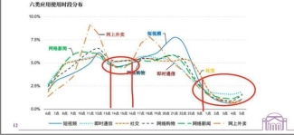
图 1：app 使用时间
不同外卖骑手工作的时间不同，每天工作的时间也不同，当问及他们工作时间时，往往也只能给个大概的数。有人为了多挣个配送早餐的钱，选择早上 7、8 点开始干；另一类人选择早上睡迟一点，等到午高峰快开始时才上班，即 10 点多到商圈附近开始送外卖。根据我调查的结果，第二类人偏多一些。
每天下班的时间也各有差异，绝大多数不会去送深夜的那波宵夜高峰， 在8、9 点就下班了。也有一批专送外卖骑手为了多挣点钱，会去送一波宵夜的高峰，回到家已是凌晨了。
综合访谈中外卖骑手提及的上班和下班时间，我们可以对外卖骑手的工作时
间有一个大体的认识：大部分在 8 小时以上，大部分骑手的工作时间
在 10 小时左右，一部分骑手的工作时间会在 12 小时以上。我们得到的这
个结果是和义联在 2020 年调研得到的结果 2 大体相近的。无独有偶，美团官方在其报告《2019 年及 2020 年疫情期美团骑手就业报告》中也调查了外卖骑手的工作时间 3，但其得到的结果和我们的结果大相径庭，工作时间在 10 小时以上的不足 1%。这个结果就让我很震惊了，难不成我们访谈的外卖骑手都是外卖配送界的人中龙凤，百里挑一的外卖骑手偏偏让我在大街上处处碰着？
外卖骑手每个月的工作天数也很长，对于他们来说，没有所谓“工作日”“休息日”“节假日”，只要不是身体不适，统统都是工作日。当然，他们也并非铁人，30 天里也会抽出一两天进行休息。不过他们口中的“休息” 和普通人理解的一整天窝在家里的“休息”有所不同，他们认为中午跑一趟就下班已经是难能可贵的休息了。
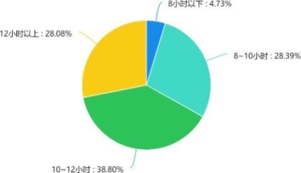
图 2：外卖骑手工作时间——义联统计
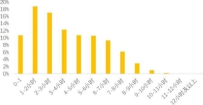
图 3：外卖骑手工作时间——美团统计
总的来说，外卖骑手的工作时间是相当长的，每个月也鲜有休息时间， 外卖骑手相对于工厂工人的较高收入建立在超长工作时间的基础上。外卖平台给予骑手的自由实际上是拼命压榨自我的“自由”。这样的“自由”是沉重的枷锁，
使所有享有此“自由”的人疲于奔命，为各大平台漂亮的年终财报透支自己的生命。
送过两三个月的外卖骑手基本能做到最高同时送 12、13 单。不过并非天天有机会能接到这么多单，现在午高峰时期一次同时接 7、8 单是常见的水平。为了达到效率的最高而一次接很多个单属于在刀尖上跳舞——容错率极低。当骑手取完所有订单后，留给他的时间就已不多了，一旦某个订单耽搁一点，其他所有订单都有延误的风险。延误的风险是极大的——稍迟 2、3min 即会被扣除 60% 的配送费, 迟到过久可能还会被给差评。
不是所有的配送过程都一帆风顺，不是所有的顾客都宽容体贴。B 路这块的外卖骑手配送学校的订单较多，有些学校允许将外卖挂在校门口，一方面，这样的政策减轻了配送的压力，另一方面，外卖被偷的几率也增加了， 这种情况就需要骑手去和同学私聊，最后往往是骑手赔钱了事。虽然骑手可以向平台申诉， 但大多数骑手不会这么干，因为申诉太麻烦，且最后不一定能解决，还是得自己赔钱。让外卖骑手心甘情愿选择“私了”的背后是极其严厉的差评处罚：一旦被差评，罚款 100 元起步（一个专送团队的处罚规定）。顾客生气，给了差评， 自己除了泄点气没有任何好处，另一头的外卖骑手就被罚了几百元，一天的辛苦工作化为乌有，只有平台最高兴，白白得到了几百元的罚款。
外卖按单计价，送的多，赚的多，看起来许诺了一个“多劳多得”的美好愿景：只要你够勤奋，挣的钱是没有上限的。然而，人不是机器，要休息、要娱乐， 骑车的速度也有一定限制。虽然存在着个体差异，如刚开始从事外卖行业时不太熟练，单量少一些，不过送过几个月后单量基本就稳定下来了，我们访谈的 20 余
个外卖骑手的送单量大多集中于每天 30-60 单，能做到每月 1800 单以上的“大神”已是少之又少（一般来说，专送的送单量会比众包少些，但是他们的单价更高）。按众包每单均价 6 元计算，一个月 9000-10000（送的多了会有一些其他的奖励）是 B 路这块大多数外卖骑手的收入水平。
对于众包骑手，炎热和严寒天气有极端天气补贴，但补贴金额不会很多， 只有 1、2 元/单，只有特别冷的天（如 2021 年元旦，温度负二十多度），补贴会达到每单 6 到 7 元。对于专送骑手，极端天气的补贴与他们无缘。在雨天和沙尘暴天气没有天气补助，但有些特殊政策，如送单迟到不扣钱。
夏季和冬季是送餐旺季，春季秋季是淡季。夏天日光毒辣，冬季寒风凛冽， 在这样的天气送餐并不舒服，可是外卖骑手最喜欢这样的天气。因为天气冷了或热了，大家不愿意出门，会选择点外卖，这样骑手才有钱可挣。“可怜身上衣正单，心忧炭贱愿天寒”——白居易于唐朝时写下的诗句在当下中国竟仍然是一批人的真实写照。
支出方面，房租、饮食是大项：在极力压低住房水平的前提下，每个月也要花 1000-2000 元；不吃山珍海味，而去简陋的“美食城”将就，饮食每天要花
去三四十元。其他的一些杂项包括每天上线扣去的保险费 3 元（一个月 90 元，
专送另订保险，每个月 110 余元），充电的费用不是很多，但是如果用摩托车送餐，油费每月要几百元，如果有娱乐活动，每月还要花上两三百元。综合收入与支出，每个月攒下 6000 元是个比较正常的水平。
美团和饿了么都有外卖骑手的等级制度，送的越多，得到的积分就越多。等级高的外卖骑手享有诸多“特权”：系统优先给他/她派好的订单、同时接单量的上限提高、每单的单价提高等。如果说高等级的“特权”是鼓励外卖骑手多送单的“胡萝卜”，“胡萝卜”的另一头是“大棒”：一个月送单量若未达到相应的要求或遭到投诉会导致等级下降，失去原有的“特权”。详细的积分制度如图4 所示。
北京大学社会学系博士后陈龙在文章《平台经济的劳动权益保障挑战与对策建议——以外卖平台的骑手劳动为例》这样描述外卖骑手的等级制度：外卖平台公司常以打游戏来形容骑手的配送工作，甚至借用《王者荣耀》中的游戏元素—
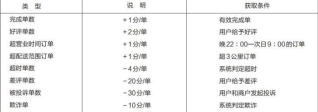
—玩家装备、等级、排行榜来包装骑手在现实世界的工作，把送餐看作是“一路打怪与闯关”的冒险游戏。但孰不知游戏可以重启，生命却无法重来。当资本利益驱动的“极速”最终要靠脆弱的个体去实现时，就难怪人们把外卖配送形容为“车轮上舔血的营生”，外卖骑手是“巨头商战的炮灰，平台压榨的对象以及互联网盛世中的‘骆驼祥子’。”
图 4：订单积分原则
前面提到，众包骑手每日上线会被扣除 3 元钱的保险费，专送骑手会有每月一百多元的保险费。但大多数外卖骑手发生交通事故后大多数还是自己掏钱医治，每日三元的保费并未起到什么作用。一名专送骑手表示，自己也不知道保费有没有用，现在只能算是买个安心。
虽然 A 市的外卖骑手来自五湖四海，但他们有着极其相似的经历：原先在自己的老家干着一份工作，工资大概两三千，听亲戚朋友说送外卖赚钱，就辞职来北京干这行了。也要个别外卖骑手是因做生意亏钱太多，转而去送外卖了。
不同于大工业中各个部门的工人需要紧密合作，外卖骑手的工作是个体化的，一天中除了休息很可能遇不到他人。因此，外卖骑手的人际关系也比
工厂中的更弱一些，大多数是一起来北京送外卖的老乡抱团取暖：住一块、一起下班回家、一起娱乐，甚至在专送团队里形成一个“帮派”。没有老乡抱团的骑手的处境更糟一些，没有人一起唱 K 喝酒，没有人抱团伸张正义， 心里的孤独寂寞无人言说，成为大城市里的一片漂萍。
工作不同时间的外卖骑手对当下这个工作持着不同的态度，一个共识是外卖这个行业虽然辛苦，但挣钱比自己以前从事的工作多多了。刚来不久的外卖骑手对未来颇为乐观，打算花上几年好好挣一笔钱；干了许多年的外卖骑手则不同， 觉得现在挣钱越来越难了，一方面，源源不断的人涌入北京送外卖，外卖骑手之间的竞争越来越激烈（一名外卖骑手甚至夸张地向我们抱怨“送外卖的人比点外卖的还多”）；另一方面，平台也在逐渐压低外卖骑手的配送金额，单价从数年前的每单均价 8 元降到了现在每单均价 6 元。
马克思在《雇佣劳动与资本》中的一段话很好的描述了这样的情况：总之， 劳动越是不能给人以乐趣，越是令人生厌，竞争也就越激烈，工资也就越减少。工人想维持自己的工资总额，就得多劳动：多工作几小时或者在一小时内提供更多的产品。这样一来，工人为贫困所迫，就越加重分工的极危险的后果。结果就是：他工作得越多，他所得的工资就越少，而且原因很简单，因为他工作得越多，
他就越是同他的工友们竞争，因而就使自己的工友们变成他自己的竞争者，这些竞争者也像他一样按同样恶劣的条件出卖自己。所以，原因很简单，因为他归根到底是自己给自己，即自己给作为工人阶级一员的自己造成竞争。
逆行和闯红灯对于外卖骑手是家常便饭，我们访谈的骑手中除了一位骑摩托车的大叔不闯红灯，其余所有人都闯红灯。乐观主义者向我们表示闯红灯很安全， 因为他已经对 B 路这一片的红灯“了如指掌”了，什么红灯不能闯，什么红灯要谨慎闯，什么红灯随便闯，他心里都有数；悲观主义者表示闯红灯、逆行实在很危险，但迫于生计不得不这么干，他认为这是在拿命换钱。不过，相较于出现交通事故的风险，他们更关心的是因为闯红灯被罚款的风险，被抓到一次就需要罚 20 元，相当于跑 2、3 单。
由于外卖骑手组织的松散性以及外卖工作的特性（即使少部分人罢工影响也不大），他们虽然人数众多，但都是以个体的身份去面对庞大的平台，遇到各种事情也只能忍气吞声。访谈的对象中有些春节留在北京参加了平台的冲单活动， 他们都感觉自己被平台坑了，虽然生气，但又无可奈何。
最近一段时间，外卖行业的确吸引了不少的关注，先有《人物》的爆款文章
《外卖骑手，困在系统里》，后有外卖骑手自焚和猝死的事情，再有北京的副处长去送外卖、北大的博士后当一个月写出关于外卖行业的文章... 关于外卖的各种话题俨然成为知乎热榜上的常客，各界迫切地希望一些改良措施的提出能解决这个问题，如 app 新增“我愿意多等 5 分钟”、“开发带蓝牙的头盔减少骑手看手机的次数保障交通安全”、“增加取餐柜”、“升级骑手申诉功能”。不幸的是，这些改良措施无法解决根本问题，因为他们没有改变外卖骑手不掌握生产资料这个关键。正如马克思所说：“只要雇佣工人仍然是雇佣工人，他的命运就取决于资本。”今天外卖平台推出各种措施让外卖骑手可以同时送更多的单，明天外卖平台同样也可以降低每单的配送费， 以另一种方式取回曾经给予骑手的一切。
外卖骑手不掌握生产资料，即使是尊贵的“王者”外卖骑手，同样是无产阶级。他们凭借着很强的自我压榨获取了相比于其他工作较高的收入，这一点和小资产阶级有一些相像。虽然骑手们的收入达到了甚至超过某些白领的收入，他们
并不像某些白领抱着成为资产阶级的幻想，骑手们清醒的认识到自己是无产阶级的一员，在被平台欺压。然而由于配送服务的工作特性，他们日常的交流不多， 工作关系也并不紧密，阻碍了具有战斗力的集体的形成。不过随着大公司垄断的形成，外卖骑手的收入将逐渐向劳动力的成本趋近，收入的降低必将或多或少推动外卖骑手的联合，广泛的联合将使骑手与平台的关系发生根本上的改变。
美团研究院. 2019 年及 2020 年疫情期美团骑手就业报告 [R] 2020
北京义联社会工作事务所. 北京地区网约配送员职业伤害调查报告 [R] 2020
陈龙. “数字控制”下的劳动秩序——外卖骑手的劳动控制研究 [J]. 社会学研究, 2020,35(06): 113-135.
陈龙. 平台经济的劳动权益保障挑战与对策建议——以外卖平台的骑手劳动为例 [J]. 社会治理, 2020(08): 22-28.
最近关系到“大家”的一件“大事“，就是教育部颁发的“双减政策”。该政策刚一颁布，便听得父母及准父母们网上一片叫好声，而头部教培机构则是一片哀嚎。那么，此次的教育改革真的会促进教育公平吗？
答案当然是否定的。
教育的不公平，无疑是老生常谈的一个问题了。而我们也都应该有了一个共识：教育的不公平根源在于现行的教育体制，而现行的教育体制是整个社会人才的再生产的关键环节。教育问题并不单纯是教育问题，它是作为社会问题的一环而呈现出来的。
教育的不公平或者说教育资源的不公，跟越来越大的社会差距是紧密联系在一起的，二者压根不可能割裂开来讨论。单纯想从打击教培机构来改变教育公平问题，无非是异想天开。
当然，这么简单的问题，我们可以想得到，“肉食者”肯定也可以想的到。所以，相信大家在这里也能轻易而举地得出结论：对校外教培机构的打击，压根不是为了促进教育公平的问题，甚至可以说，这跟教育公平只有半毛钱的虚假关系。
打击校外教培机构，更多的是应对七普人口数据的出生率下降的补救措施， 在某种意义上，你可以把它看作是三胎政策的配套措施。近几年，关于各大城市的生娃成本问题层出不穷，并对跃跃欲试的年轻人形成了一种无形的压力。
据有关的公开资料显示，一线城市的养娃成本高达 200 万。打开某度，搜索
养娃成本，就可以看到一系列的广告——“养娃成本高达 200 万，教育金该如何规划”等等。真称得上“不是卖产品，而是兜售恐惧与焦虑”的范本。哦，对了， 稍懂广告学的人，都会知道这是广告的金科玉律，百试不爽！根据《中国商业教育辅导市场消费力报告》显示，学前和中小学教育阶段，中国家庭的教育支出占家庭支出的 20.6%；有 14.6%的家庭，教育支出占比超过 50%（相关数据来源于网络）。
在新浪财经做的一项“为啥不想生娃”的社会调查中，“养不起，不敢生”以
59.99%的比例牲畜，当之无愧地占据了榜首。
因此，普遍认为校外教培额外增加了孩子的教育费用，加重了家庭的经济负担，所以为了减轻父母的“钱包焦虑”，不得不对校外教培机构痛下杀手。
作为教培行业的从业者，笔者不得不承认教培行业确实是高利润行业。坦白讲，对于行业的整顿需求其实已经成为了很多教培行业人的期望，只不过期望的是“规范”，而并非此种一刀切的政策。且不论，全国数百万家获得教学许可证的
教培机构及从业人员（全国三四线城市无证经营的教培机构更多）将何去何从， 单单将政策本身带来的影响，也让人持怀疑态度。
为了让大家更清晰地看到这一政策对于教培机构以及对于家长、孩子来说， 意味着什么， 也为了保证笔者自己行文的客观性，笔者将从教培机构的兴起说起，带大家梳理一下教培行业的整体发展脉络。
提起校外教培机构，就不得不提起“新东方”及“学而思”这两家教培机构的“老前辈”。作为“老前辈”，研究他们的兴起，更有利于我们看清楚校外教培为何会出现以及为何近年来会“野蛮生长”等一系列问题。言归正传，我们先来梳理一下两家机构的发展状况。
新东方，又被戏谑地称为“小地方”（XDF），当然更多地是新东方自己的知名教师会这么称呼，一方面既谦虚又风趣地介绍了自己的出处，另一方面也在有意无意地暗示着自己的“巨头”地位，毕竟只有“大佬”才跟称呼自己为“小弟”，而真正的小弟会为了展示自己的“面子”而不断地给自己脸上贴金。这种现象，想必大家都明白。但原谅我不得不赘言几句，这种明知道其吊诡却不得不服的游戏规则，尽管千戳不破，但还是要大力鞭挞。
再次言归正传，正如在电影《中国合伙人》里所展示的，一个高考连连失利的山东学子终于在苦斗了三年之后进入了梦寐以求的清华大学，在大学的四年， 是他受到嘲笑的四年也是他脱胎换骨的四年，而在毕业之后，他与其他两名同窗好友共同创建了北京新东方学校。
这一年是 1993 年。不管是《中国合伙人》也好，还是洪哥的真实创业史也好，看起来都是一个无比励志的故事。但真的如此吗？或者说，在这个故事的背后，运气更准确地说是时代带来的机会占了多大的比例呢？当然，假如有人说我是“酸葡萄心理”，那你们就说好了，I don't care。尽管所有的名人，在分享自己的成功创业史时，都会将其归结为 99%的汗水+1%的机会，但很少人会讲述另一个真相：这 1%的机会才是真正的“风口”，而这 1%的机会也是建立在极其错综复杂的社会因素至上的。因此，解析这 1%更为重要。
洪哥抓住的机会是——改开后的出国浪潮。新东方前期的核心业务便是留学英语培训及出国咨询业务。直至 2000 年，新东方才推出在线教育。从 1993 年到
2000 年的这 7 年间，新东方紧紧跟随的就是出国留学的浪潮。回头想一下国内一线高校大力兴起的出国浪潮，相信大家这个时候除了羡慕以外，还会有些其他想法吧。
前几年，因为发小的关系，有幸在 T 校蹭了半个月的时间，听说了（提示：
既然是”听说“，所以并不确切，各位看官自行判断是否为“谣言”）一个惊人的数据：该高校的交换生及留学生的比例在有些学科里高达 50%左右，也就是说你两只脚踏入了这个高校的门就意味着已经有一只脚可以踏入国外的高校了，当然前提条件是你的家里有足够的资金。退回到 1993 年，虽然出国留学的比例不会那么高，但也逐渐成为了一种趋势，而这种趋势，无疑在清北等高校更为明显。在清华混迹四年的洪哥，有足够灵敏的嗅觉，也有足够的魄力，这是他能够成功的个人因素，我们不会抹杀也无意抹杀。2000 年，随着新东方在线的正式成立， 新东方开始在全国进行线下教育的布局。2004 年，新东方 前途出国咨询有限公司成立，全面开展留学咨询等业务。
与此同时，新东方基本上完成了在全国重点城市的线下布局，北京、南京、天津、西安、重庆、武汉等城市均有机构设立。同年，另一标志性事件是新东方“泡泡 POP 少儿英语”品牌的成立，这意味着新东方的业务范围开始扩张。2006 年，新东方赴美上市成功，也是中国大陆第一家在美上市的教育机构。此后，新东方的业务布局扩张到了学前教育、高中、留学英语等板块。2011 年，迈格森国际教育正式成立，新东方正式进军 4～17 岁青少年高端教育市场。当然，新东方的线下布局基本上扩张到了全国的二三线城市。
而“学而思网校”（好未来）的扩张历程，某种程度上与新东方形成了一种互补的竞争格局。学而思的创始人张邦鑫，在 2002 年进入北大，初期计划为硕博
连读。但在 2003 年，张邦鑫与同学便合办了奥数网，开设线下小班授课的培训班模式。注意，如果说新东方前期的关键词是“出国英语”，学而思的关键词便是“国际奥数”。
随着国际数学奥林匹克竞赛的兴起及繁盛，90 年代以后为了增加孩子的学习“砝码”及各种比赛的“含金量”，家长对于奥数竞赛趋之若鹜。如果感兴趣的话， 各位看官可以自行搜索国际奥数的金牌得主，自 20 世纪 90 年代开始参与这一国际游戏开始，中国成为了国际奥数史上囊括金牌最多的国家。不难想象这些金牌的背后，是多少个中国家庭的付出及多少个机构老师的智慧传递。2010 年，学而思赴美上市，成为首家在美上市的中小学教育培训机构。2013 年，学而思更名为“好未来”，并同时开展 1 对 1 在线教育模式。
在新东方及学而思赴美上市后，2009 年腾大教育成立，2012 年猿辅导成立， 2014 年高途课堂成立……自此，校外教培行业如雨后春笋般野蛮生长（不得不借用这一烂熟的比喻，烂熟但有效），也正式开启了校外教培行业的“春天”。有关数据显示，
笔者不厌其烦地梳理了新东方及学而思的扩张历程，只是为了更清晰地呈现中国校外教培的发展历程，及在他们成功背后的共同因素。比较新东方及学而思
的发展路径，便不难看出一文一理的竞争格局背后都离不开中国教育的市场化过程。
这里的市场化，不仅仅指的是校外教培市场的快速发展以及民办中学的快速发展，还指向的是教育在私有制下变成了阶级变迁的重要途径。可以说，正因为教育变成了阶级变迁的重要途径，对于一些偏远地区的学生来说甚至成为了唯一的途径，而教育体制之中明显存在的不公——教育的硬件及软件（师资力量）的不公，这些条件才让校外教培的兴盛有了坚实的基础。而校外教培及民办中学的兴盛，又加剧了这种不公，至此一个完美的恶性循环便形成了。而这些因素的配合，便形成了今天的教育内卷局面。
那么，公立教育在这一过程中，起到了什么样的作用呢？不得不遗憾地说， 公立教育起到了加速的作用。原因有四：
一是，在教育减负的口号之下，缩短了学生的在校时间，减少了学生的作业量，而这部分的负担自然而然转嫁到了家长的身上。甚至有些学校在家庭参与教育的口号之下，将家庭作业的修改推给了家长，这直接导致了网上流传的各种辅导孩子作业导致家长崩溃的段子。是段子，但不得不说，也是真实的存在。
二是，随着校外教培的兴起，暗中形成了部分在校老师开辅导班的“地下产业链”，这就形成了“在校不教在家教”的模式。当然，并非所有的老师都会如此， 笔者再次也绝对没有污蔑在校老师的意思。
三是，公立教育的班级人数保持在 40-50 人左右，甚至高达 60 人。公立学校老师的管理难度可想而知，孩子得到的关注度及与老师的亲密程度也可想而知。
第四，大部分学校特别是在发达地区，学校本身便会设置快班与慢班（不同的地区，叫法也不同），这种设置本身就是教育不公平的缩小版展示。家长都不傻，都会尽力让孩子进入该地区最好的学校，当然理想的状况是进入最好的学校的最好的班级。
可见，前期“素质教育”及“减负”的政策，显然是失效的。尽管口号非常响亮， 且有不少的措施出台，很遗憾的是这不但没有有效地解决学生的负担问题，反而为校外教培的兴起提供了一些有利条件。那么，此次的“双减”措施，真的会对人口的出生率有提升的作用吗？或者说这一政策真正能起到的作用是什么呢？
各位看官能读到这里，那笔者不得不佩服各位的耐力。
OK，插科打诨打住，继续来说“双减”政策的实际作用及教培行业的前景。作为教培行业的从业人员，笔者接触到的家长及学生较多，这也为笔者提供
了一个从微观层面上解析政策的良机。前面说过，从宏观来看，“双减”政策并不能起到促进教育的公平的作用，而更像是一个配合三胎政策的辅助措施。那么， 接下来就继续聊一下从行业、家长及学生的角度来看对这一政策的反应。
这一政策，对于教培行业显然是极具杀伤力的，但绝对不是“灭绝性”的。毋庸赘言，从几大教育巨头的股价腰斩甚至是脚斩就可以看出来。（再插句题外话， 想想新东方、学而思等机构，在前几年被授予的“民营百强”“创新百强”“cctv 品牌强国工程”“联合国教科文合作伙伴”等等的 title，对比今日的状况，是不是也具有极大的讽刺性呢？）
为何说并非“灭绝性”的呢？看看几大巨头公司在这段时间内的反应，先是网易有道在短时间上线素质教育课程，再是新东方上线“优质父母智慧课堂”，另外再加上本就重点发展 1 对 1 教育的好未来，便能知道教育这一赛道的游戏并没有game over，只不过是在艰难的转型中而已。甚至可以说，只要现行的教育体制不改变，教育赛道的游戏就不会结束。只不过是提高了门槛而已，也许这一隐形的提高门槛，在现时看来还并不太明显，但有韩国的例子在前，其结果如何也便不难想象。
当然，对于大部分家长来说，对于这一政策无疑是支持的，特别是在学校“5+2”的规定发出以后，更是如此。一方面，在校时间延长，就解决了家长在接送孩子上下学的时间问题；另一方面，不准学校将作业推给家长，也无疑减轻了家长的负担。但就算是对这一政策持支持态度的家长，也不得不考虑一个现实问题：在高考分流如此严重的情况下，不上辅导班，真的可以吗？这一疑问，随着时间的推移，随着孩子离中考及高考越来越近，便会不断地生长并极速膨胀。而不断生长的焦虑，总有一天需要排解的出口。当然，也有部分“人间清醒”的父母， 对这一政策持怀疑态度。除了升学的压力之外，他们的关注点在于：双职工家庭
（大部分城市家庭都为双职工模式）很难给予孩子足够的关注及教育。对于产业工人家庭来说，加班甚至是夜班是家常便饭，能够真正陪伴孩子的时间本身就少； 而对于白领阶层特别是互联网从业者来说，在 996 的模式之下，情况同样如此。
再加上，手机对于个人碎片化时间的侵入，也让陪伴孩子的质量有了下降。虽然大部分小资产阶级有能力完成孩子的作业辅导，但不断推行的教育改革、教材更换，让大部分家长在辅导孩子作业时失去了自己惯有的思维依赖路径，层出不穷的“出题陷阱”也让家长感到自己的无能为力，于是大部分家长便出现了“无能暴怒”的反应。
这种无能暴怒，一方面指向的是他们借以成为精英的教育，此时对他们并不友好；另一方面则是因为他们极力想在解脱劳动之后，进入“父慈子孝”的温馨家庭场面之中，来缓解或者说抚平由“不得不参与其中的劳动”给自己带来的身体及
心灵压制。但事与愿违，面对一个“并不灵光”或者“存在代沟”的孩子，父母在家庭里面对的依然是“一地鸡毛”。所以校外教培成了很好地缓解这种冲突的第三方机构，从校外教培回家的孩子，在很大程度上圆了父母的“父慈子孝”的梦。
那么，对于孩子来说呢？无疑是有一定的好处的。孩子的自由时间变多了。但我们不得不从另一角度来思考这个问题，那就是孩子在这段自由时间里会做什么以及能做什么？就笔者个人的有限经验看来，孩子个人学习习惯的养成确实与家庭教育呈现正关联趋势，即父母受教育程度越高、父母平时越喜欢阅读，那么孩子学习的自主性便越高，对知识的探索欲也越强。
这一影响，并非笔者杜撰，在各国教育学家的著作中，都可以看到家庭环境对于后代教育的深刻影响。换言之，父母越是精英，那么孩子成为学习精英的可能性便越大。当然，笔者个人并不赞同精英教育体制，只是在探讨这一问题时， 不得不面对在这种体制之下已经形成的社会不公平。这一不公平显然存在，并不可被忽略。回到本题，对于已经养成良好的学习习惯的孩子来讲，自由时间更可能被合理利用，这种自我再教育模式的良性循环很容易养成。
而对于那些并没有形成学习习惯的孩子来说，自由时间更可能被手机、电脑及各种电子产品充斥。当然，这并非全然是坏事。浏览网页，可以让孩子自由、自主地获得更多的咨询，并可以拓展孩子自己的兴趣。也许某个沉迷于电子游戏的孩子，未来可能成为各种名目奇怪的游戏的冠军。但在面对孩子的教育时，再仔细也不为过，我们应该考虑到另一个方面，即孩子依然缺乏对于信息的鉴别及判断能力。这种多出来的自由时间，如果仅仅用于电子游戏及短视频平台的浏览， 对于孩子来说，危险性依然存在。而由学习习惯造成的潜在的差距，只会越拉越大。
啰嗦至此，终于完成了对于“双减”政策可能造成的影响的微观解析。各位看官，稍安勿躁，接下来便是最后的一个部分，对于教培行业的前景解析。
前面已经提及，而且大家肉眼可见的是教培行业的一片狼藉。但仅仅在十几天之后，巨头公司已经有了相对应的解决措施，其速度之快不得不令人叹服。（再插一句，从抢占市场及流量这一互联网公司的游戏规则出发，就会更加明白互联网行业为何会 996。
当然 996 的本质依然是剩余价值的剥削，只不过互联网行业中体现出了更多
的现代企业的管理学而已。如果仅仅说 996 的本质是管理，那笔者更愿意将互联网企业的“场所”本身作为一种强制管理的基本手段。毕竟，疫情之下的远程工作， 已经证明了远程协作或 home Office 的可能性，特别是对互联网行业来说更是如此。因此，互联网公司的“格子间”本身才是最有效、最基础的管理手段。）跑太远了，继续回来。在政策的指导之下，未来 1-2 年之内势必会有一个新兴行业的
崛起——素质教育。
对于一般的中小机构来讲，校外培训的需求依然存在，只不过会以地下产业的形式——1 对 1 家教、高端家政等模式存在。而这种形式，无疑增加而并非降低了社会的教育成本。很明显，这提高了课外教育的门槛，工人阶级及部分小资产阶级的孩子，将被抛在课外教育之外。对不起，教育的竞争游戏并非 game over， 而是部分人被剥夺了参与这一游戏的资格。虽然这很残酷，但不得不承认，这是极有可能出现的局面。
除了以上的问题，对于学校来讲，一个很明显的，且悬而未决的问题是，推广“5+2”的模式之后，在校老师的负担又该如何减轻？这就构成了另一个问题
——在校老师在各种政策变化及教材改版之中的疲倦，在次笔者将不再赘言。（若各位看官有兴趣的话，可以留言，再开一篇来讲。嗯，就是为了让你们留言，才这么写的。）
为了保证文章的有效性，笔者再次大胆预测，后期会有相关政策出台，详细规定“5+2”的具体落实。若不加大学校编制，不投入更多的教育费用，对于在校老师而言，将会苦不堪言。而若这额外的“2”可以采用多种灵活渠道，那么对于校外培训机构来说，也是一个机会——校企合作，将这个“2”填满。当然，此种模式在一些地区已经实现。
终于废话完了，总而言之，前期的“减负”政策在教育内卷这一恶性循环的形成之中的作用，显而易见是失效的。这次的“双减”政策，对于减轻教育费用负担及提高人口生育率的作用，笔者仍持很大的怀疑态度。至少在房价、医疗费用仍然坚挺的条件下，笔者不得不说“不敢生还是不敢生”。
【佐伊按】这是一位教培行业从业者所撰写的自己在疫情前后的思想转变， 同时也分析了上海教培行业从业者的生存状况。作者认为，疫情无疑是一剂催化剂，将原本“粉饰的太平”打碎，让资本的獠牙露出，让年轻的知识分子，认识到996 的压榨，能够回过头来反思“社会怎么了，出路在哪里？”
我的思想是在疫情期间发生转变的。在那之前，我一直在准备法律硕士的考研。那时我依然有一种想法：社会阶层是流动的。我虽然出身于一个小中产家庭， 但是可以成就巨大的事业。
疫情之前，我就喜爱马克思的思想，那时我在北京工作，余暇时会去北京大学的马克思主义学院听课。我接触多的有几位老师，有一位老师说只讨论学术的马克思主义，有一位老师关注工人状况和劳动法，他的哲学课讲得清楚，但那时的我工作比较有序，生活也算小康，对马克思主义的理解只限于哲学。一次，一个清华的老师来讲座，我向他提问:如何解释中产阶级没有向马克思预言的那样滑向无产阶级？他说：我无法回答，这是马克思主义研究界的包袱。
之后是疫情，疫情打破了一切的计划。无法返京，隔离在家。我便读书、学习，逐渐有了对马克思主义更深的理解。现在的我知道，社会阶层的流动并没有我想象的那样顺畅，疫情期间，中国一共有约 4000 万人失业，很多小老板也是背上沉重的债务，例如私营商场里的食品商贩，生意减少了很多，但地租没有少多少。而房子更贵了，世界还多了几个首富。
之后，我来到上海，在一家私营培训机构工作。机构不大，雇员在五十人左右。
雇员们生活得高兴吗？不。
工资是一个核心问题。在上海，一个很小的房间，房租就要 2000，吃沙县面条，饭钱也要花掉 1000 多。我们的基本工资是 2000～4000 不等，因此，要生活，都要靠额外的课时费，而这是差距很大的。少的 4000、5000，多的 10000 出头。但是，无论哪个，都没有在这里买房的可能性。
还有一点，是工时，如果要工资高，就要课时多，最好在周末上满课，从早八点到晚七点。而在这个行业，如同 996 的软件业一样，六天工作是“行业惯例”。
因此，流动性很大。在我们公司，也有不少学而思、四季这样的大企业中出来的老师，他们希望得到更高的工资，但常常不能如愿。离职率也一直很高。
在培训行业，能过得富足的老师，是极少数由大公司极力扶持的“名师”，在学生、家长中有名气，对企业平台的依赖性低。但是，大部分，绝大部分，还是“民工”。
雇员们能够改变吗？我的同事们讨论过罢工。疫情之中，在前几年盈余的情况下，老板仍执意要把基础工资打六折。员工就讨论起了罢工。但是，失败了！ 为何？因为有人倒戈了。
但现在，雇员还有一条路:回老家。上海这里外地人多，我很多同事也如此想。但是，再过二十年，等市场经济不断向内陆延伸，他们的后代再向哪里退？
（这部分主要通过和中层管理、分校校长的零散交流形成。）
我们这家分公司，收入增长达到 20%。但是，教师的工资却既少，长得又慢， 这是为何？
首要的问题，是教师缺乏理论的、机制的武器。在中层会议上，教师部门的负责人无法据理力争，一旦销售负责人谈到收入，他们就很难反驳。在销售侃侃而谈企业的发展未来的时候，教师无法证明自己的不可替代性。
如果没有办法有理有据地说出我们为什么站着赚钱，就不可能有谈判长期协议的资本，也不可能作为一个群体、一个阶级来长期地改善生活状况。
其次，是行业的所处位置。我们公司的收益，小一半都付了房租，一千多万的营业额，有三四百万要付给十几年前某个“抓住机遇”的温州、福建、台湾、或是香港人手上。在房地产商、金融业享受超额利润的同时，各类（尤其是小型的） 实体产业、一般服务业也在受到严峻的剥削。
另外，老板的个人欲望也有一定影响。他夸耀他的年薪有百万，目标是在上海买 2000 万的豪宅。尽管他自夸亲民，但同事们并不买他的账。
上海仍处在经济狂热之中，在我工作的这近一年里，我所在的街区陆续开办了数个房地产中介机构，走到哪里，都有人推销房产。在城中，建筑工地、塔吊的影子依然随处可见。
这个城市的经济等级制是严酷的，我的那位想买豪宅的老板有一次开会说 到:“如果再给毛泽东十年时间，那场运动一定会取得更大成果。”他是一个剥削者， 但在整个经济体系里，他也是一个心怀不满的被剥削者。
马云、滴滴能凭科技产品向无数孤立的小商贩收租，金融、房产的控制者则
能够大量盘剥孤立的小投资者、小企业主。而被盘剥的小企业主则再向下剥削孤立的劳动者。这是我们经济的金字塔结构，它是一层层向下的，而所有经济中的痛苦，最终将落在经济链条最脆弱的部分。
但正是这最脆弱环节的人们，创造了社会绝大部分的物质财富！创造财富者， 却无法掌控财富的流动，甚至毫无发言权！多少公司采取了员工持股？多少公司有员工列席管理者会议？多少工人、农民进入了人大、政协？
我们的前路是什么？团结，团结！
A 村是北方某前贫困县下属的一个行政村，大部分地形处于丘陵地带。全村共有 191 户、420 人，其中外出打工的占到全村人口的半数。村里男性比例较大， 占 62%，住户绝大部分为农业户，只有 14、15 户为非农业户。 村里 16 岁以下的有 65 人,64 岁以上 125 人，16 岁到 64 岁 230 人，其中 64 岁以上仍在务农的
人数有 20 余人。
A 村有耕地 1800 亩，其中旱地 1400 亩，水田 400 亩。除此之外还有 1800 亩的退耕还林地。A 村有 2000 余亩的山林地，村民对其没有更多的处置。A 村上一次土地调整是 1999 年，当时按政策以人口平均分配了土地。到今天为止， 村里各户的土地拥有量基本相同，不存在少数村民拥有大片土地的情况（按访谈者村书记的说法）。平均每户拥有的耕地为 7 亩 3 分旱地，2 亩 1 分水田。
A 村除了 4、5 户较为富裕之外，绝大部分村民生活水平相近，因此接下来报告主要讲述大部分村民的情况。A 村在当地农村中拥有独特的扶贫大棚，对 A 村目前的经济状况影响很大，报告也会着重陈述。
A 村有两种农业模式——普通耕地和大棚农业，两种模式的主要作物、收入、成本、产量等方面的差别相当明显。下面是两种模式的相关数据对比表：
从表格中我们可以看到，A 村的种植作物相当单一，无论是普通耕地还是大棚，主要作物占比都达到了 90%，基本上主要作物的收入就决定了农民总收入。普通耕地和大棚的收入差距也十分明显，普通耕地种植玉米（粮食作物）的亩收入不到大棚种植西红柿（经济作物）的十分之一，在考虑大棚的农业成本更高之后，大棚种植的利润依然远胜于普通耕地。可想而知，只要有条件，农民们都会选择大棚种植来增加收入。
A 村的机械化水平非常低，无论是普通耕地还是大棚种植，农户对机械设备的要求都不高，当地只有 2、3 户较为富裕的会在耕种时租拖拉机，其余人都是自耕。A 村机械化水平低的原因是多样的，一方面农民们包产到户，每家的土地都不多，单独使用机械化设备性价比低；另一方面，农民们也不愿意花钱买较贵的机械化设备，富裕一些的农户也只是租用别的村的拖拉机。没有大棚的话，A 村几乎就是完全的小农经济。
A 村普通耕地和北方大部分地区的农业一样，一年只耕种一轮，每年劳动时间在半年左右，春种秋收。而大棚则由于技术优势，可以进行两轮耕种，承包大棚的农户也就全年 365 天劳作。
全村有 10 余户家有养家畜，有羊、牛、驴等等。每年收获的作物绝大部分都用来售卖，仅有少量用于饲养家畜，还有很少一部分供农民自己消费，比如一些农民会种一点葵花、白菜、土豆之类的东西。
扶贫大棚是 A 村的特色，是当地政府的重点扶贫项目。A 村在 2004、2005
年就建了第一批共 38 个大棚，当时建大棚还不是为了扶贫，大棚建造花费由政
府和农户共同承担（双方各出 1 万），建成后归农户私人所有。时间一转就是
15 年，在 2019 年，为了完成全国脱贫任务，A 村开始建设新一批大棚。19 年建
了 50 个大棚，20 年又建了 50 个。19 年建的 50 个大棚总建设成本为 720 万，20
年建的 50 个大棚质量更好，总建设成本为 1300 万，全部由国家出资。农户在国家建成大棚后可以自愿承包大棚，每个大棚需要支付一年一万的租金。
承包大棚的农户统一加入 A 村的合作社。A 村在之前几十年没有合作社，现在的合作社完全是出于扶贫大棚的建设而在这两年设立的。A 村合作社是由村管理人员带头的，合作社的五名管理人员由村领导班子和几个党员组成，社员就是所有承包了扶贫大棚（不包括早年的 38 个私人大棚）的农民。合作社负责统一管理扶贫大棚的蔬菜贩卖和育种工作，除此之外基本没有其他的工作，也没有搞过文艺活动。合作社每年会召开 3 到 5 次社员大会，讨论决定一些比较重大的问题，村书记在提到社员大会时说这和“股东大会”也差不多。除了有村书记等直接领导合作社之外，合作社没有得到政府其他的支持。
总体上来说，扶贫大棚的建设对 A 村农户的收入有不小的积极影响。但是 A 村的扶贫大棚是当地特色，甚至可以说是当村特色。扶贫大棚是这两年刚刚办起来的，还没有形成产业，所以还未推广到其他村。
当地每户的收入可以分为两个部分，一个是农业收入，一个是副业收入，农业收入按照上文中提到的普通耕地和大棚种植的相关数据，可以得出农业收入情况：只考虑利用全部原有耕地，农民每年的净收入约为 21000 元；承包一个大棚
（一个大棚约 8 分地）的农民每年可获得收入 51875 元。由于绝大部分普通耕地用于种植玉米（粮食作物），而大棚绝大部分用于种植西红柿（经济作物），所以这个收入也可以看作粮食作物与经济作物的比较。可以看到大棚种植的收益也是不小的，换算成月收入也在 4000 以上，当然这是在建立在全年无休劳动的情况下，这样才能利用大棚可以一年种两轮的优势，否则只能获得一半的收入，和普通耕地接近了不少。
自疫情以来，农作物的价格波动很大，各种粮食作物和经济作物的价格一般都有明显的涨幅。据村书记回忆，19 年的时候玉米价格每斤在 8 毛到 1 块，这个价格当时就已经算是有些贵了，可是在疫情之后，现在玉米的价格已经涨到了每斤一块五，可见疫情对蔬菜价格的影响之大。蔬菜价格的上涨也影响了养殖业， 尽管疫情也导致了牲畜价格的上涨，但是饲料费用也水涨船高，很多养殖户能否盈利都持担忧态度。
农作物价格的变化固然影响农民收入，但是对 A 村乃至当地农村的居民来说，种地并不是主要的收入来源。就 A 村而言，每户的总收入大约只有三分之一来自于农业，三分之二的收入来自于外出打工。A 村的壮劳力基本上都外出打工， 有 60 到 70 人就在镇子里打工，干各种体力活，有的还帮别人家去种地。外出务工的收入明显高于农业收入，这也是农村壮劳力流失的重要原因，而农村务农的劳动力年龄普遍较高，40 多岁就算得上年轻。当地农民们的收入差距和耕地数量一般没有关系，决定收入差距的原因往往是家里能外出务工的劳动力的多少。村里最富裕的 5、6 家之所以富裕是因为家中有人在城市里做建材一类的生意。
据村书记说，当地也存在拥有土地比较多的农民。附近一个村庄人少地多， 在按照人口分配土地后就产生了每个农民拥有较多土地的情况。但是拥有土地多并没有改善这些农民的收入，因为分到的耕地基本上都是旱地，无法有效利用， 也租不出去，所以事实上这些农民多出来的耕地往往只能荒着。
在上面我们提到过一个现象，很多农民家里的壮劳力都要外出务工，其中一
些人就在当地镇里工作。有趣的是，一些务工的人所干的工作正是帮别人种地。为什么会有农民不种自家的地而要去给别人种地，为什么给别人种地的收入比自己种地还要多呢？这下我们就要介绍包括 A 村在内的当地农村一个比较普遍的 现象（事实上也是中国很多农村的普遍现象）——承包专业户。
我们之前在介绍 A 村农户收入时说到，农业收入并不是农村家庭的主要收入，普通农民现阶段也很难依靠农业来完成收入的大幅增长，农民们普遍寻求外出务工来改善经济状况。而承包专业户则截然相反，农业正是他们收入的大头， 甚至是全部收入的来源。
承包专业户在当地（城镇）指的是靠租农民的地并雇人耕作以获得收入的群体。包括 A 村在内的当地农村有很多农民要么是年纪太大（壮劳力流失），不便于亲自耕作，或者本人“户在人不在”，已经事实上搬去了其他地方，所以选择将一部分或全部土地租给承包户，租金视土地质量而定，首先土地必须是水田，旱地是绝对租不出去的，而越好的土地租金越高，最好的地租金可以达到一亩一年500 元，普通的地一般就是 300 元左右。租地的合同往往是一租好几年，每年要预付下一年的租金，合同到期了要再商谈是否续租。专业户在租到足够多的土地之后，就会寻找足够的雇佣劳动力。据一名有过承包经验的受访者说，镇里较早时候雇人都是托关系，靠熟人笼络，让亲戚朋友或者一些村书记去帮忙联系各个村里有没有需要找活干的人。镇子比较小，人们大多互相认识，所以熟人沟通起来也比较方便。这几年专业户搞得越来越多，对这方面劳动力的需求比较稳定， 所以一些常年给专业户种地的农民也形成了一个个小团体，这些团体一般是 10 来个人，往往由一个人充当类似工头的存在，由工头负责和各个专业户联系，讨论干活、薪资之类的问题，达成协议后再通知团体内的其他人。
不同专业户承包的土地数量是有差距的。据受访者说，当地有一个比较出名的专业户刘某，这几年承包土地挣了不少钱。刘某也是一个普通农民，家里原先是否有其他产业、是否富裕都不清楚。他最早开始搞承包时，一年只包（租）了50 亩地，但在接下来几年里干得越来越大，到几年，已经有承包 600 亩地的规模，收入相当可观。刘某善于经营，承包土地后搞多种种植，不把鸡蛋放在同一个篮子里，避免因为某一种作物价格大跌而导致整体亏损。受访者前两年承包土地种植树苗，结果赔了不少钱，最后为了止损决定把租来的土地再转租出去，也就是租给其他专业户。承包专业户如果只有小规模的承包，那么经营的风险性会很大，土地规模有限只能种单一作物的情况下，他们往往是看市场行情，哪个最近价格高就种哪一种，可一旦市场再次剧烈变化，就容易血本无归。而像刘某这样已经形成一定规模的专业户就很少需要担心这样的问题，除非遇到灾难性的价格下跌，否则他们的利润基本可以保持稳定乃至逐渐增长。刘某只是当地专业户
中的一个代表，除了他之外，本镇范围内还有不少专业户，承包规模在两三百亩的专业户是数十人，有不少人是在自己本职工作之外搞承包土地，比如一些政府公职人员在业余就会承包一些土地挣额外的钱。
专业户所承包的土地与普通农民在机械化水平上也有一定的差距。一些规模比较大的专业户在承包了一些连成一片的土地之后，会花费资金购买拖拉机之类的设备，大大提高了农业效率。这与 A 村只有少数几户会租拖拉机的情况是很不一样的。当然，这种机械化仍然是相当简单的，甚至也是很落后的。
A 村在当地算是较为富裕的农村，也是县里的改革试点村，扶贫大棚给 A 村带来了一些新的活力，提高了村民的生活水平。但是在采访之中，还是可以感受到农村发展的困难与难以解决的三农问题。壮劳力流失依然是农村最为严重的问题之一，即使扶贫大棚这样的项目可以增加收入，大棚中劳作的农民也看不到年轻的面庞，年轻人和中年人大多去外面务工，务工还是农民们主要的收入来源。而有些缺乏壮劳力的家庭则最易于陷于严重的贫困，需要地方政府的特别关注。此外，越来越多的年轻人倾向于搬出去，去城镇生活，这也使得农村人口继续下降。
A 村的扶贫大棚可以说是当地农村最先进的生产模式，可是抛开大棚建设， A 村在内的当地农村机械化水平相当低下，一方面大部分农民们不愿意以不小的费用来购买或租用拖拉机一类的设备（收割机之类的更是基本见不着），另一方面农民们在包产到户的情况下也缺乏使用机械化设备的条件，每户所拥有的土地面积狭小，农业机械化的性价比太低。
专业户那里则呈现出较为不同的情况。我们可以看到，不少外出务工的农民正是去给专业户打工。专业户可以统一管理大片优质的耕地，可以投入资金进行机械化耕作，农业生产效率远高于一般的农户，这也是专业户和其雇佣的农民（当然，这里也可以把他们视为农民工）可以获得更高收入的原因之一。承包专业户在媒体中的评价一直不低，很多官方媒体都赞扬专业户给农村经济的带动作用， 专业户也成了新时代“先富带后富”的经典例子之一。受访者也认为，专业户的农业模式比每户农民自己种地要好得多，能用机器，被雇的农民收入还更高。然而当我们仔细思考一下，就会感到这一模式的有趣之处。
承包专业户被赞为农村经济的带动者，这倒并不是空穴来风，我们都可以看到专业户模式下农村经济优于普通模式，而雇佣的农民工的收入业多于普通农民，所以他们不种自家的地儿要去给专业户种地，甚至可以把自家的地租给专业户再去给专业户种地。我们知道，专业户最早出现在上世纪 80 年代，这个群体
的诞生与家庭联产承包责任制和中国农村集体经济的解体息息相关。家庭联产承包责任制推出后，农民们恢复到几十年前各家自种各家地的小农经济，这一经济模式到底有没有像宣传中那样“解放了农村生产力”、“创造了农村经济奇迹”，我们已经看到了。而专业户在家庭联产承包责任制的大背景下，集中了大量的劳动力进行农业生产，使用机械化设备，这与包产到户之前中国一直推广的集体农村经济难道没有一点相似之处吗？人们一方面鼓吹包产到户提高了农民积极性，另一方面却又鼓吹相当于把农民们重新聚在一起搞“集体化”的专业户带动农村经 济，这实在是让人摸不着头脑。当然，专业户模式和过去中国的农村集体经济有着本质上的区别，过去的集体经济生产资料属于村集体，而在专业户模式下，专业户虽然不能彻底掌握生产资料（他们需要从农民手中租地），但是却掌握了生产资料的管理权，从而变成了类似于“农业资本家”的存在。“农业资本家”这个用语可能并不准确，但确实让笔者感到有符合之处，也让笔者联想到大洋彼岸美国的农场主阶层。百度百科中，对专业户的描述如下：①专业户都是商品生产者或直接间接为商品生产服务的。②专业户是农村生产走向广泛的分工分业的产物。
③为了获得较高的劳动生产率和商品率，取得较好的经济效益，专业户必然要采用相对先进的生产工具和生产技术。这就会起到很好的示范作用，有利于农业机械和科学技术在农村的推广，加速农业现代化的进程。“为商品生产服务”，说得对极了！资本主义市场经济正是普遍化的商品生产，资本主义的经济也正是“为商品生产服务”的！专业户推动了农村生产走向分工，而这也正是马克思在《资本论》中提到的，资本主义对生产分工的大大促进。这时我们就可以理解为什么专业户的经济模式会带动农村经济了，因为专业户本质上就是用资本主义的经济模式代替了（封建式的）小农经济模式，更优越的经济模式当然会带来生产力的提高。而在这种生产模式下，专业户也依靠剥削雇佣者的剩余价值来获得收入。
中国的农业专业户剥削雇佣工人的剩余价值，可能由于农业本身的发展问题，专业户的收入往往无法与工商业的资本家比肩，他们的收入限制于承包的规模，很多两三百亩的专业户都有本职，只是靠承包挣外快，只有少数是寄希望于承包来挣大钱。而刘某这样的大专业户，租有 600 亩土地，假设平均每亩地可以
有 200 元的净收入，相当于月收入一万，在农村和小镇当然已经是上层群体，但和城市一些高级技术工人的工资也差不到哪去（当然两者付出的劳动是不一样的），和他们美国的“同行”比起来更是小巫见大巫。专业户进行的机械化和一些发达资本主义国家的农业机械化水平仍然相差甚远，一方面中国专业户依然达不到一些发达国家农场主的规模，另一方面他们也缺乏更良好的技术条件和资金支持。
最后，我们不禁哭笑不得，在专业户的带领下，农村竟然在以一种奇妙的方
式实现了“集体化”，而他们的社会评价与对过去集体经济的评价却大相径庭。笔者也不时会想，假如这种“集体化”不是由少数专业户带领的，而是由绝大部分农民自己领导、从而变成真正的集体化，那么农村的经济又会怎样呢？笔者不才，还请读者自行想象了。
在中国几千年的历史中，农业生产始终是至关重要的生产环节，由于人口增长与粮食产量之间的矛盾，鸦片战争前后人均耕地仅 2.5 亩，而以当时的生产力
来计算，人均平均占有耕地 4 亩才可维持温饱，因此中国人民在很长一段时间的历史中处于一种“半饥半饱”的状态，这其中当然也包含着气候，农业生产力和农业生产关系的因素。要增加粮食产量，就必须重视气候，水利，化肥，农药等基础性因素。大量的人口导致中国农业只能依靠劳动力的“过密化”，在农业生产力没有实质性进步的情况下，劳动力一旦损失，那么就会导致农业危机，这也是导致中国近代以来数次大饥荒的非常重要的因素。马克思曾经说过，人类进入文明社会以来，一切的社会历史都是阶级斗争的历史。地主作为统治阶级，在文化， 思想，教育等领域占据着全面的优势，封建思想无孔不入地钳制着底层农民。地主对农民阶级的压迫是全方位的，系统性的，由于封建私有制所带来的土地兼并、财富过度集中以及统治阶级对贫农在生产关系上的压迫剥削，地主阶级与农民阶级的矛盾不断加深，中国历史上爆发了许多巨大规模的农民运动，动摇着封建统治的根基，这种阶级斗争主导着封建王朝的兴衰。
“十月革命”的一声炮响为中国送来了马克思主义，20 世纪以来，三座大山沉重地压在劳动者身上，民国以来的农民是受到层层剥削的：一是帝国主义的压榨， 二是本国官员的腐败，三是乡绅的租税，四是土豪劣绅的巧取豪夺。民国如果想实现工业化，那么就必须由农村经济来为工业化提供资金和资源，但由于民国时期的内忧外患和三座大山，特别是农村受到的层层剥削，导致了工业越发展，农村越萧条，最终钳制了工业的发展。因此，如果不推翻统治阶层对于农村的层层剥削，不推翻压在人民群众身上的三座大山，工业化根本无从谈起。因此，在毛泽东为首的中国共产党在马克思主义的指导下，广泛地深入工农群众，践行着“从群众中来到群众中去”的工作方法，成功动员了中国社会最为广大的底层人民， 推翻了国民党的腐朽统治，推翻了压在劳动群众身上的三座大山。
1949 年新中国建立，对于农业的社会主义改造也渐渐提上了日程。20 世纪
50 年代的“土改”运动取得了非常大的成功，改变了生产关系，解放了生产力，粮食产量不断上升。但在“土改”取得巨大成绩的背后仍然隐藏着农业生产的诸多问题，例如 1.农业生产力依旧底下，对于气候的依赖性依然极强。2.作为个体的农业生产者破产的风险依旧很大，生产资料上的私有并不利于提高农业生产力。3. 推广良种，先进的科学技术成本增大，难以广泛动员农民开垦土地，兴修水利以
解决粮食产量不足的问题。
于是在这种现实条件下，中国共产党带领人民开启了轰轰烈烈的“三大改 造”，初级农业合作社的建立对农业发展至关重要，缓和了生产工具的共享等问题，后来人民公社的广泛建立也对大量兴修水利工程，大量开垦土地，大量推广科技和机械化提供了可能。中国人民在中国共产党的带领下辛苦奋斗 30 年，最终在种子，化肥，农药，水利方面取得了巨大成绩。
在新时代的今天，农村发展也成为了提振内需的重要方式，广泛开展农村扶贫工作也是乡村振兴非常重要的一个环节，但我们必须直面农村的振兴问题，例如留守儿童（心理健康教育，思想教育等）问题，留守儿童家庭状况（如经济， 父母外出情况等）问题，贫富差距问题等等。只有在乡村振兴的道路中解决这些问题，才能够真正的促进中国农村发展。我们调研组也将针对以上几个问题，通过广泛的调查走访的方式，来为大家展现一个全面的，客观的凯言村。
以下我们将通过以下几个大方面进行报告：
1. 凯言村的基本状况
2. 留守儿童问题
3. 对于农村未来的展望
4. 毛泽东农村政策的再反思
凯言村坐落于贵州省黔东南苗族侗族自治州镇远县的周围，距羊场镇 3 公
里，与湖南省接近，交通方便，连接着公路，共有 430 多户家庭，是贵州省比较早脱贫的一个村庄。这里水利条件优越，水利设施完善，每年会全面清理水渠并进行分段管理，增大了农田的灌溉效率。昼夜温差大，适合农作物生长。与贵州其他地方不同，凯言村的光照条件较为充足，以凯言小学为中心西南周围数公里的地形平坦，适合耕种和大型机械的作业，每年秋收时节，都有从河南来的大型收割机进行收割工作，将原本十天左右的工作缩短到了半天，大大减轻了农民的工作量。但是在凯言村更西南或更北的地方，地形变得破碎崎岖，大型机械难以派上用场，因此在这些更北的地方，农业工作主要还是依靠人力。
村里有一座小学和一个卫生站，小学的人数较少，人数最多的三年级最多也才 6 个人。卫生站只有一名医生，村里老人经常找他看病。村里多数家庭还是选
择在几公里以外的羊场镇租房子读小学，租金为一年 3000 元（租房只能整年整
年租，包括寒暑假），对于他们来说，一年下来也是一笔不小的开支。值得注意的是，我们调查到有一户特别贫困的家庭也选择在羊场镇读书，但是他们是在镇上自己盖了一间茅草屋来满足自己的住房需求。
凯言村共有耕地 3360 亩，主要作物有烟草、辣椒、玉米、水稻等等，由于粮食作物的市场价格低下，多数家庭的粮食作物都用于自己家庭的消费。凯言村大量种植烟草，50 户左右的家庭经营着 260 亩左右的烟草，在村子里还有村集体自己的小型烤烟厂，近年来也引进企业发展辣椒种植 590 亩，为凯言村创造了大量的收入。当然近年来许多私人老板也开始种植大量中药材（由于都是外来老板，本人估计中药材的田地都是从农民手中租过来进行规模化种植的），在中药材成熟的时节，这些老板的中药材也鼓励当地农民去采摘然后进行收购，收购价格为 2 元/斤，经过我们调查，某农民从早上 5 点开始去采摘，下午 18 点收工，
除去午饭时间，工作时间为 12 个小时左右，一天的收入为 90 元左右。凯言村上游有高过河景区，景区的漂流独具特色，吸引了大量慕名而来的游客，同时也解决的凯言村数百个就业岗位，为凯言村的经济发展提供了大量机遇。
虽然凯言村的各方面条件都较为优越，但是就如同中国很多农村存在着相似的问题一样，如：农村劳动力流失、留守儿童的一系列问题、家庭贫富差距问题以及农村经济发展动力等。
我们通过挨家挨户的走访调查发现，村子里大多都是老人和孩子，孩子的父母外出打工，有的就在不远的镇远县务工，有的则远在浙江，广东等地，因此在村子里做农活的大多都是孩子的爷爷奶奶。但由于劳动力的缺少、老龄化速度的加快、气候变化多端及市场粮食价格低下（农产品价值分配产业链使得农民在价值分配中也处于弱势地位），务农并不能从根本解决家庭的贫困，留守儿童家庭的主要收入来源还是来源于在外打工的父母。当然，有些非留守儿童家庭，父母也在务农和打零工。
由于上述的个别原因，也是导致家里过得十分拮据的原因。浙江和广东等地流水线的劳动强度非常大，劳动环境也相对恶劣，外出打工的父母们在当地租房子，他们辛苦地拿着微薄的薪水，一边留下自己的生活必须之后，又转给了远在家乡的孩子。留守儿童的家庭经济状况并不乐观，他们大多毕竟还处于童年时期， 对于生活的现实并没有那么全面的认知，但他们对生活的认知却比想象中的深多了。
虽然凯言小学旁边以北数公里的土地十分平坦，但凯言村的农业机械化水平却非常的低下，只能依靠远从河南而来的大型机械。如果到了更北的地形崎岖的地方，依然需要依靠人力。即使有些人家有专门在梯田工作的小型机械，但毕竟
受限于发展水平和成本问题，人力仍然是主要的耕作方式。
气候仍然主导着农作物产量。例如今年冬季的温度过低，低温持续时间较长， 使得凯言村的农作物产量受到了显著影响。据学生成瑞熙的家长描述，今年投入了 8000 元左右来种植 2 亩的中药材，结果受气候的影响（降水过多，中药材本
身不喜太多雨水），农作物的收入仅 3000 左右，是一次惨重的亏本。
村里的教育资源的极度缺乏,学校的老师大多都上了年纪，教学水平当然不如城里甚至镇上的学校，但大多有水平的老师也不愿意来到农村，因此村里还是有相当部分数量的家庭选择把孩子送去镇上读书，其中包括了很多贫穷的家庭。我为了探究村里小学的教学质量究竟如何，专程去了凯言小学三年级的罗重阳家里去访问了情况，他平时的语文分数在 40 分上下，班里的语文最高分也不过才
68 分。我拿着罗重阳的试卷分析，发现虽然他已经三年级了，但是最基本的，
一年级学的拼音都认不全，更何况拼写了。作文拼尽全力也只能写出 100 多字（三
年级要求作文写 300 字），阅读理解基本都是空白。我以为这是个例，结果访问了周围几家孩子的时候，大多也都如此。
虽然凯言村临近高过河景区，为村庄提供了大量就业，但根据我访问的一些以前在那里一线上过班的中老年人，这些景区的一线岗位基本都是不签劳动合同的，更别提五险一金之类的劳动保障了，不少上了年龄（一般保安的年龄为 45—50 岁就不会再被录用）的村民没有办法在那里继续干活，也只有去其他地方自谋生路。
村里最富有的人家在广东开办了 3 家工厂，子女也都在教育资源优越的广东大城市读书，他们在村里修建了一个非常漂亮的小别墅，每年他们都会回到农村享受一下悠闲的田园时光。而与之相对的是我们走访的丁子洋家，他的母亲去世了，父亲外出打工，家里的木制平房非常破旧，房子内部也看起来穷困潦倒，没有电视，家里也只有老年机，父亲在外打工但薪水十分低下，勉强能够满足丁子洋的基本生活需求。在我看来，这是妥妥的困难户，低保户，可是他们家并没有低保。村里巨大的贫富差距不仅仅体现在这两个极端上，其实按照总体而言，凯言村的贫穷家庭绝对不在少数，但富有的家庭也可以达到平均日入 1500 元，8 头牛，2 辆车。
我们通过广泛的走访，得出了凯言村留守儿童的基本状况（包括家庭经济、心理健康教育、兴趣爱好、理想等），接下来我们将介绍一下概况，再列举出几个具体的家庭。
凯言村绝大多数的留守儿童的家庭经济状况都不是太好，一方面由于父母在外务工的工资，除去购买基本生活所需外，只能勉强负担起孩子的学费及老人的药费。另一方面，由于家庭务农的劳动力不足（由爷爷奶奶来管理 3—6 亩的田地），气候和市场价格的影响，务农只能为家庭赚取一些数额不大的外快。
当然并不是说非留守儿童家庭的经济情况相对较好，例如我们走访的学生成纪伟的家庭就是一个典型的例子，他的父母文化程度偏低，主要是在村里务农， 平时可以在周围打一些零工。但是务农的收入非常低且不稳定，总体来说，他们的家庭的经济状况也只能勉强维持。
造成留守儿童问题的因素是多方面的，以下只分析最为重要的两个方面：
1. 城镇化和工业化的发展需要大量廉价劳动力，因此城市对于低端劳动力的需求非常大，使得农村的劳动力能够流入城市。
2. 由于小农经济的脆弱性，使得农户对于风险的抵御能力非常弱以及农产品价值分配产业的弱势地位，让单纯的务农难以维持整个家庭的生活和开销，从而让青壮劳动力外出务工成为了一种现实的选择。
以下将举几个具体的家庭，来为大家展现留守儿童在这种时代的浪潮下的生活状况
1、张荣波A.基本状况
张荣波上小学三年级，他有两个妹妹。父亲在宁波打工，母亲在村里干农活， 但是张荣波的舅舅舅妈全都在宁波打工，留下了两个孩子给他母亲照顾，他父亲每年回来一次，舅舅舅妈每年轮流回来一次。因此张荣波的母亲一人照顾着 5
个孩子，其中最小的还不会走路。一个母亲带着 5 个孩子，还要干农活显然有些力不从心，但是母亲却非常严厉，孩子们非常乖，非常听话，不做调皮捣蛋的事， 也时常帮母亲做家务。他们住在毛坯房家里非常破旧，只有一台小电视，床，椅子，餐桌也都十分陈旧，房屋的角落有很多蜘蛛网，家里条件看起来十分困难。
B. 心理状况
张荣波性格非常内向，不善言谈，在学校里下课时也基本都是一个人玩儿。基本不看电视，也不玩手机（家里只有老年机）。与老师交谈有些胆怯，但是很爱自己的妈妈，问道以后的理想是什么的时候，他表示自己从来没有考虑过。
2、成易洋A.基本状况
成易洋上三年级，是一个单亲家庭，母亲的情况我们并不清楚。他的父亲曾
是高过河景区的一名一线搬运工（主要是把皮艇搬进水里让游客可以漂流），有时也干一些安全员，或者保安的工作。但是在几年前因为一次事故（搬运皮艇时被撞击）受伤，导致部分内脏受损，腰也不太使得上力，整个人显得有些瘦弱， 因此他不能干重活，也不能外出打工。他父亲充当着爷爷奶奶的帮手，在几亩田里干农活。爷爷有时也会去临近的工地打一些临工。
成易洋家庭十分拮据，居住环境也十分恶劣，毛坯房，没有电视，一年的收入结余在 2000 元左右，勉强维持生活。成易洋家里对成易洋的学习较为重视，
把他送到了 5 公里以外的镇上读书，在镇上也有租房，费用是一年 3000 元，由奶奶照顾他的饮食起居。
3、丁子洋A.基本状况
丁子洋的母亲已故，父亲外出浙江打工但薪水十分低下，勉强能够满足丁子洋的基本生活需求，为了节省回家的火车票钱，父亲基本每两年回来一次，平时由爷爷奶奶照顾。为了到他的家里，我爬山走了将近 40 分钟，他的家在山上，
没有通路，平时上学基本都是 5 点左右起床。他们家是我见过的最为破旧的一个， 没有电视，甚至电灯都很少家里也只有老年机。在我眼里，这是妥妥的困难户， 低保户，可是他们家并没有低保。
爷爷奶奶对于丁子洋的教育有些力不从心，认为只要他听话就万事大吉。所幸的是，丁子洋非常孝顺爷爷奶奶， 也非常听话。
经过我们广泛的了解与走访，我发现了一个有趣的现象：凯言村的孩子们与我走过的其他更为贫穷的农村孩子们不同。凯言村的孩子大多都比较活跃，上课时的纪律问题尤为突出，不爱听老师的话，同时也非常喜欢吸引我们的注意。而其他某个更为贫穷的村的孩子们则刚好相反，他们绝大多数都不吵不闹，上课的时候也非常安静，这些孩子的家长都没有什么文化，但知道读书学习是自己孩子的唯一出路，但自己本身也没什么文化，不能给孩子一个良好的教育环境，因此孩子们都从小被灌输着尊重老师绝对权威的意识。家长们没有办法，只能依靠老师的教导，来让孩子拥有一个“逆天改命”的可能。
这可能也与当地经济发展状况有关吧。
凯言村的孩子们理想远大，我们交谈过许多孩子，除了极个别对于理想没什么概念的，其他的都向我们说出了他们的理想，经过统计如下：
具体人数从多到少如下：
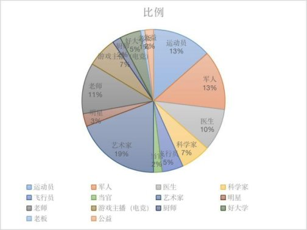
艺术家：20 人 运动员：14 人 军人：14 人老师：12 人 医生：10 人 科学家：7 人
电竞选手/主播：7 人 飞行员：5 人 好大学：5 人明星：3 人 当官：2 人 厨师：2 人 公益：2 人 老板：1 人
留守儿童的问题显然不仅仅是凯言村的独有现象，我们应该正视它带来的许多问题，经过十多天的调查走访，外加上一些粗略的思考，供大家参考：
1、农村教育资源分配不公平，农村教育资源总体缺乏。教育对于很多农村家庭来说是非常关键的，在高考制度之下，农村的孩子只有通过异常勤奋努力的学习，也许要从小学就开始努力，才能克服眼界，教育资源缺乏等问题所带来的阻碍，考上好大学。但走出了大山，接下来的人生又是另一回事了。
凯言村拥有自己的小学，但是师资力量并不雄厚，全部都是上了年纪的老师， 大多也只有初中的文化水平。年轻的，有实力的老师更乐于选择大城市，好学校， 这在客观上也加大了城乡在教育方面的差距，凯言村的小学虽然教室比较干净， 但没有多媒体教学，没有空调风扇，也没有足球场，黑板也坑坑洼洼的非常破烂。农村的孩子不论是师资，还是思维方式，教学硬件，学习成绩都被城里的孩子全面碾压。
我曾走访了许多孩子的家庭，他们的父母由于常年在外打工且文化水平较低，孩子们除了缺乏父母的关照，同时也严重缺乏父母在学习上的帮助，这种帮助包括对于孩子学习的要求，辅导，管束，教学等等。由于父母的社会资源和经
济实力也非常缺乏，基本上不可能面对学校（小学，初中，高中）有“交高价”，
“走后门”等行为，要是孩子考不上高中，那就是考不上，不存在其他可能。
大多孩子上了初中，就已经开始明白自己的处境了，大部分人开始放弃，开始混时间，认为自己的未来不过是和父母一个样子，绝无第二种可能，或认为自己可以去上“社会大学”，在这个“大学”中学会为人处事，最后出人头地；少部分人仍然坚定着考出去的信念，埋头苦干，有些限于师资水平和学习方法迟迟没有长进。部分以前调皮的孩子，由于缺乏父母的管束和教育，渐渐学会了抽烟，喝酒，染发和快餐式的恋爱，沉迷于酒色之中；另一部分则生活作风要好很多，但已经认命，早早做好了外出务工的打算，好减轻一些家里的经济负担。
他们的生活里，都不再有儿童时的理想。
2、农民工的权益缺乏保障。孩子们的父母在大城市的流水线上，工地上等地方辛勤的劳动。但由于农民工流动性较强，以及资本增殖的客观需要，使得农民工的合法权益难以得到保障，最为明显的一点就是“五险一金”的落实情况，以及超长的工作时间和低廉的工资等等。繁重的劳动使得农民工作为父母，很难再有别的精力放在对于子女的教育上，他们对于子女的教育能做的，只有每个月， 每半年，甚至每年对家里的汇款。
3、孩子的心理问题得不到及时的解决。大多数留守儿童家庭的爷爷奶奶难以真正的走进孩子的内心，一方面是由于年龄差距过大造成的隔阂，另一方面是爷爷奶奶也有较多的农活，容易疏忽孩子的心理问题。孩子的心理问题得不到及时的解决，将会是他人生中甚至是社会上的一个大问题，有的孩子喜欢憋在心理， 变得内向，不会与人相处，有的则具有一定的暴力倾向。有些父母能够做到每两三天给孩子通一个电话，这对于孩子的心理有一定的积极作用；有的一周甚至一个月才通一次电话，这算比较常见的。我问过有一个孩子，他父亲从不打电话， 只是每年回来一次又匆匆而去，他讨厌他的父亲。
我们深入凯言村，经过调研、讨论、总结了以下几点对于凯言村未来的期盼。
1、发展集约化，合作化农业，促进当地土地的规模化，这样通过加大投资， 可以提高当地农业的机械化水平，同时也可以发挥集体的作用，共同抵御风险 ， 克服小农经济的弊端。
2、当地政府应重视对农村地区的医疗，应该主动深入群众，积极开展针对留守儿童的心理教育活动，对于有困难的家庭应该积极补助和扶持，加强新农合的落实，应尽力避免村民的“因病致贫”现象。
3、当地政府应重视对农村地区的教育资源投入，包括硬件，师资力量等等。
4、发展当地初级加工工业，就地发展小工业，例如凯言村盛产辣椒和中药材，当地政府可以联合村民积极投资建设一些初级加工的小作坊，小工厂，提高农产品的产品附加值，就地消化劳动力。还可以利用临近旅游景区的优势扩大销路，增加村民收入。
对于农业来说，影响它的因素有很多，例如地形，气候，水利，化肥，农药， 种子，机械等等。我们就从凯言村的现实出发，一起来看看真实情况到底是什么样的。
我们可以看到虽然凯言村身处山地众多，地形破碎，喀斯特地貌明显的贵州省，但是它仍然有少见的，平坦的土地，在这种平坦的地形中，如果投入大型机械，将会呈指数级地增大农业生产效率，实际上每年的秋天，从河南来的大型机械会经过这里，2 台大型机械将人力十天的工作量缩短到了半天，极大地提高了生产效率，让农民有了更多的时间去打零工，某些在外省打工的直接就不会因此回家帮忙。虽然这只是局限于“农忙时节的机械化”而不是“全面综合的机械化”
这给许多认为贵州地形条件不好因此反对机械化的“专家学者”们一个有力 的回击。即使在地形条件如此不好的贵州，仍然有村庄有平坦的土地，可以投入大型机械的使用，为什么在这样的地方就不能大型机械化呢？照他们的逻辑来 讲，就是因为贵州总体地形条件不行，所以要么全都机械化，要么一块也别想。“专家学者”们不具体分析某个农村的实际条件，只是通过一个笼统的，总体性的结论反应出的东西，显然有些是不合实际的。
即使是在地形条件不那么好的农村，我们是不是就应该放弃机械化呢？答案显然是否定的，大型机械不行，难道就不能推行小型机械？实际上，贵州省一直在出台农机补贴政策，拖拉机等各种小型机械补贴力度非常大，实际上在凯言村相对中等的农户都有了自己的小型农机，这也能够说明小型农机在经过了具体的型号改良后，是可以胜任工作的。可惜的是尽管补贴力度大，但凯言村的农业生产还是依靠的是人力，一方面对于有农机的农户来说，由于农机服务的单位组织化程度低，每次维修要花费大量的精力，再加上使用柴油生产成本上升等因素， 使得他们宁愿自己上阵，另一方面对于大部分贫穷的农户来说，资金有限，老人用不来等因素，使得凯言村的农业生产机械化水平仍然低下。
通过上面的例子，我们可以清楚地看到小农经济模式对农业机械化的阻碍。单个农户的风险抵御能力非常弱，即使买得起农机的，为了节省成本也不愿意使用农机，更别提那些买不起的了。如果我们能够把农户组织起来，推行合作化乃
至更高级的生产组织，是否就能解决这样的问题？
历史已经给了我们答案，即人民公社，我们就暂且不提毛时代的东北农业发展的怎么样，因为那里的各种因素都是非常有利的。我们拿山西的张庄来举例， 由于村集体领导的路线正确，手段有效，使得张庄的集体经济发展的非常不错， 1978 年，张庄人就开始自己搭建组装农业机械，在 200 英亩的玉米地上，可以自动完成从施肥、平土、播种、除草、收割、烘干到烘干后把玉米存入仓库的全过程。机械组只需要 12 人，但效率是人力的 15 倍，成本也降低了一半。
但自从张庄小农经济恢复了以后，田被分割的七零八碎，摧毁了大规模推行机械化的经济基础，家家户户只能自负盈亏，农民只能扛起锄头，农机也只能慢慢地腐烂。
由此可见，小农经济的生产模式是推行农业机械化的重要阻碍。
面对当今农村劳动力流失问题，留守儿童问题，乡村教育和医疗问题等，我们有必要对历史进行反思，从而吸取经验，找到一条未来真正能够振兴农村的道路。
从 50 年代末的大跃进开始，中国开始提倡“两条腿走路”，即农村就地发展工业以促进农村发展的思路。这对打破高度集中的苏联体制起到了关键作用。“两条腿走路”的美好蓝图也充斥着人民心中，即农村就地发展工业，到了未来，每一个公社都将有自己的大学，自己的医院。
但是蓝图归蓝图，最终还是要回归现实。虽然受到了各种主客观因素的影响， 50 年代末 60 年代初的农业遭到了严重打击，但是在农业生产基本恢复正轨以后， 农村的就地工业化一直没有停下脚步。
从现在的视角来看，我认为农村的工业化和集体化是农村发展的关键。集体化可以保证农业生产的规模化，促进机械化发展，同时集体抵御风险的能力要大大强于单个农户，也可以大量兴办属于农村的小型工业，如小型农机厂，小型化肥厂或者一些小型提升农产品附加值的工厂。如果一个农村的机械化水平提升上来了，农业生产人口就减少了（参考以上张庄的例子），可以解放更多的剩余劳动力，这些剩余劳动力刚好可以满足这些农村工业发展的劳动力需求，从而使农村生产力得到根本性扭转。也就是说，工业化和集体化能够使农民不必再背井离乡，去大城市里打工了，这也有效解决了空巢老人，留守儿童以及农村劳动力流失的问题。
有些人喜欢想象农民喜欢进城，喜欢想象农民不喜欢被“束缚在土地上”，这也与他们高高在上作为城市人的偏见有关。如果把这种流动性作为衡量幸福的指标，那乞丐岂不是全世界最幸福的人？看一个人幸福与否，难道不是看他的生活
水平，医疗，教育，住房，出行，思想，工作等方面的满意程度？
如果坚持集体化的道路，那么农村的教育医疗体系将会发展的更好——最起码也是跟城市的差距缩小。我们可以看见这样的事实，即使是在与现在相比生产力较为低下的毛时代，依托人民群众和集体的力量，大量在人民公社建立的防疫站，生产队卫生站，公社卫生院等等，成功确立了一个大型的公共卫生体系，这种卫生体系到如今尚有余温，也为我国抗疫事业奠定了基础。在人民公社的合作医疗制度也取得了极大成绩，利用公社福利基金和成员缴费，显著降低了农民的看病和预防成本。
一个人如果在农村有工作，有医疗，孩子的教育也有保障，那又何苦跑那么远的大城市去找一个离孩子遥远，拿着微博的薪水，高强度的劳动的工作呢？
以上就是我的调研报告。
【编者按】本篇来稿是一位在校大学生（简称 A 君）对另一位好友（简称 B 君）的采访录，采访的背景是 B 君利用暑假深入一个工厂实习，A 君了解了情况后主动邀请做了采访，并将采访整理成文稿发布在自己的公众号【跳跳虎的好朋友】，同时授权佐伊发布。
作者文章谈到“我们很多同志只是在感情上同情，很难和农民以及工人兄弟们接触。”，佐伊深感认同，希望广大同志们向 A 君、B 君学习。
受访人现就读于四川某双一流大学。2021 年暑假，在亲戚（某企业管理层） 的安排下，进入浙江的一家工厂实习打工。
A 君：假期实习工作的原因
B 君：
1. 因为挂科，想逃避父母的追问
2. 想去外面沿海发达地区看看
3. 最主要是想赚钱
【A 君补充】除此外，B 君本人也很关心社会现实问题，所在我得知他下厂工作后，第一时间就提出了采访的请求，B 君很配合。
A 君：谈谈工作情况
B 君：听从组长安排，大部分时间都在用叉车拉货，有时也会被安排去流水线上装箱或者卸货，这是一家食品公司，私企。
薪资待遇方面，12 块/小时，如果不能干满一个供货周期（约三个月），总工资扣 500 块，包吃住但条件很恶劣，后被调至外厂后伙食有所改善。
工作时间方面，每天 10-15 小时，大多数情况下为 14—15 小时，偶遇天气货源问题只工作半天。
本厂的工作环境很差，嘈杂，炎热，拥挤，叉车少且烂，电梯有部分损坏， 且空间小，经常被叉车撞，导致有时无法使用甚至出现故障，把人锁里面。因此有时会出现拉不走货挨骂的情况。
【A 君补充】值得注意的是，B 君表示该工厂的工资是到周期结束才发放（即9.20），鉴于他的高管亲戚，他顺利拿到了工资，并且没有被扣钱，但普通工人同志们就没那么幸运。
A 君：谈谈你的同事
B 君：同事的年龄跨度很大，下至十五六岁，上至五十多岁，但年龄大者偏多，年轻人多半是学生工。大部分人为初中、职高或大专学历。
【A 君补充】在交流中，他告诉了我一件很让人感叹的事情。有一位学生工兄弟，工作时头疼的很厉害（物理），但是主管不给批假，只能靠吃止痛药硬抗了下来。他一个人负责整个二楼的配饼（拉饼），不然流水线无法开工。一板饼有 4000 多个，他要不停的拉。
值得一提的是，B 君刚来也是和他一起拉饼，他就以为 B 君会一直陪他拉饼， 甚至因为怕 B 君走（因为工作太累，之前已经走了好几个人），在前两天什么活都不让干，但后来主管让 B 君干别的，他甚至为此与主任发生争吵。B 君由于受不了这种精神压力，向组长申请，调到别的岗位上去，拉饼老哥对此非常不满， 开始说闲话，嘲讽 B 君懒惰。
在压迫下，工人同志们的内斗还不止于此。
前面我们在讲工作环境时提到了叉车又少又烂，B 君向上级反应，希望能改善情况，工人们抢夺独占叉车，反而干得更卖力，大家更累了，为了争夺叉车使用权大家甚至经常爆发冲突。“明明是给老板打工，但为什么工人们却如此的不要命，令人费解。” B 君表示困惑。
A 君：作为一个“局外人”，在本次工作中，有什么感受？
B 君：累，死心塌地的累，一五一十的累，手掌里磨出了老老实实的十个茧子，脚掌也变厚了一层，踩痛了就变厚，然后又痛，又厚……每天浑身都是痛。在厂里干这种活儿给人一种看不到明天的无力感，每天都是 6 点半起床，干到晚上九十点才算完，每天都干重复的累活，忘记了自己是个学生，在学校在家的逍遥生活似乎都不是真的经历过，如果以此为职业，真的感觉活着没有意思，不如重新投胎。
还有就是血汗钱真舍不得花，买个小凳子都看半天，死活不想买贵的，花了一些在必要开支上（平时都是父母负责），结果没想到居然花了怎么多……不同层次的人视野差距很大，底层人民没钱没关系没文化的话似乎只有被鱼肉剥削……最后觉得自己能坚持完成目标很牛逼，很多和我同时进来的人都没坚持到最后。
A 君：请讲一个印象深刻的事情
B 君：每天吃饭要算成是一个小时休息，中午半小时晚上半小时。我第一天准时吃完饭回到工位上，发现所有人都在等我开工。老工说，“你不来，我们都无法开工。”刚开始我还感觉很惊讶，但慢慢就习以为常了，后来问老工，他说从来没见过扣吃饭时间的厂。
【A 君补充】写在最后：
毛泽东同志有一篇很出名的文章《中国社会各阶级的分析》，上过高中历史课的朋友对此应该很熟悉。我很庆幸，能够遇见一些能称为同志的人，但与此同
时也要意识到，我们很多同志只是在感情上同情，很难和农民以及工人兄弟们接触。这一点我倒是建议大家要像张维为老师学习，到实地去感受，去看看工人兄弟们的盒饭是不是比美国中产阶级吃得好。
早上，坐了一个小时的公交车，到了华硕集团下的一个厂，但是地方叫名硕， 好像厂名叫和硕。到了以后，先去找了室外的接待处知道了面试顺序，于是在九点半前结束了面试。这次是内荐的，走的是正式工，没有报本科生的身份，只是报了高中学历。面试完后，本人就领了临时住宿卡，进了三号楼的二楼五号房入住。
该房间很乱，虽然不是特别脏，有股很浓的烟味，配合着开了很久的空调， 有种难以言喻的味道，该房间能住十个人，散落着几只行李箱，空调二十四小时开着，风扇也是，当时室内只有一个中年男子在抽着烟刷抖音，我听他口音不像当地人，便问了他何处人，他笑了笑，说是陕西人，我们闲扯了许多，关于打工， 关于留守的孩子，关于苏南哪里高工资高代价，也回溯了他老家种药材的经历。
临时宿舍虽然脏乱臭挤，但是好歹有免费的一直开的空调，也有免费的温开水喝。喝了点温开水，上了个大号的厕所，就去楼下去熟悉一下厂的生活区了（目前只有临时的住宿卡，进不了工厂区，只能在生活区转悠）。
到了晚上，在宿舍里呆不住，就又到楼下转悠了一下，见到一名同样临时住宿的工友，一个人埋头在台阶上哭泣，我忍不住，去买了杯酸梅汁去关心他，他很客气，说他没事，只是因为和媳妇又吵架突然崩溃了，我和他聊之甚久，他说明天打算回家了，他媳妇不想回去就让她一个人待在这不管了。。。
夜里八点多，还是待不住，去了白天室外接待处那里的长椅坐了坐吹吹风， 遇到个小年轻，我们俩搭了话茬，相聊甚欢。他叫丁红星，刚从云南一所医科院校毕业，资格证明年才能拿到，这空隙就到厂里打打工，我们互留了微信，约定以后一起吃饭，厂里多照应。
晚上回去睡觉，辗转难眠，因为这里临时宿舍只住一晚上，我就没买凉席， 这铁皮的床板，膈应的我难以入睡。今天总结来说，从刚入厂生活区那一刻起， 就处处提防别人，仿佛厂外的一切与自己无缘了，好像身处监狱局子中。但实际上很多工友接触下来都很简单也没什么坏心思，很多不怕累，一天十二小时上班或者一周打工七天这些他们都不怵，唯一怕的是厂太坑，给的太少。
上午提前七点半来准备体检，每天人来很多，大概几百人，但同时每天也会有几百人提桶跑路。在体检前的二号楼大厅遇到了红星以及另一位工友徐才喜，
三人上午结伴一起去体检和接受培训以及午饭，大概了解了一些事。他们很多都是中介劳务派遣的小时工、临时工，当时和他们约定是一小时给 25 块，但是华硕的厂很坑（不如说名字里带“硕”的厂都很坑），不知道会整什么幺蛾子。
我给自己大致算了一下，一个月三十天不休假的话，每天平均加班三小时， 这么一个月能赚 4400 元（一个月干 21.75 天，每天干八小时的工资是 2020 元， 剩下的是周末上班以及每天加班的工资加成）左右，同时公司只提供餐补二百八， 但是员工还需要自负水电等（一宿舍平均每人每月要几百多），还有交社保，头个月要二百到三百左右，再刨去伙食费以及出行，可能一个月这样死干也就只剩三千左右。
和遇到的好几个工友交流过，这里北厂区最差，干的多拿的最少，真希望不要被随机分到北厂。整个下午基本都在听厂里的人在那逼逼赖赖，说一些连自己都不信的鬼话，什么华硕成就工友的理想，什么厂里合理合法关怀员工，这种鬼话最多骗骗“监狱”以外的人，是骗不了里面的人的，说话中间，问了一个口音很重的来自陕西的 17 岁的小伙子，问他觉得厂里培训的话说的怎么样，他笑着说道:纯扯淡！
到现在，唯一收获的是真实，以及两三个朋友。下午五点，分到了厂区宿舍， 我们便从临时宿舍搬去了遥远的景山宿舍，在十楼，这里的宿舍八人间，空调水电都是要钱的，有的宿舍没人住过电路老化（比如说我们，当天晚上风扇电路烧坏了好几次导致跳闸），有的宿舍异味熏天，难以入住，当场就有工友要跑路。。。
厂区宿舍甚至需要每天都要打卡进出，超过二十四小时不打开便会删除厂牌的通行权，这里厂区宿舍比临时宿舍差很多是可以解释的，因为临时宿舍不能太差，否则会让人第一天就跑路，洗完澡后唯一的乐趣就是几个工友一起王者农药。据说，在这待上一周就算老人，还有，非成年工真不少。
上午七点半前要到培训处打卡，我被分到了北方一厂，由一个对我们说了很多屌批话的胖子带我们去厂区领取厂服，然后我和几个工友被分到成型一科，一个中年女人过来和我们说了这个科的情况:全是站班，没有坐的，每天上班十二小时，需要在 7 点 25 前打卡到厂，下班在 19 点 30 后打卡离厂，做 13 天休 1
天，有时候还可能做 20 天休 1 天。
这个女人询问我们的意见，我和自己人（大概六个人）都表示自己接受不了这个工作作息和休假情况，虽然她们几个人几次劝我们不休假，但我们拒绝的比较坚决，于是就把我们分到了下盖组装线去了，六到八个人一条组装线，这里的生产线是坐班，我们要至少做 6 休 1，每天从 7.25 干到 19.30。
这里面认识了两个工友，一个云南人——叫凌微（预备回四川上大专），一个我老乡沭阳人（未成年）但住在苏州——叫章典，考上了江苏第二师范，这六个人里面有四个都是未成年人，现在由于规定，厂已经禁止未成年人倒夜班，所以我们六个人就只上长白班。
中午吃了饭，花了九块钱，张维为教授觉得我们吃的比美国中产阶级好，但我们应该不相信。下午就正式带我们去另一个八人的组装线向他们学一下，他们里面四个人都是甘肃人，在这干四十天左右了，目前休过三天假，教我组装技巧的那个小伙，似乎只有十八岁，高考刚失败，只能上个二本，打算打个工之后去复读。
我从甘肃小伙这里了解到，这里大厂虽然都是计时的，实际上却也同时计件， 意思就是基本上一个组装线每天的要求是至少 4800 件，不然缺少的会让我们在
以后补上，如果多多的积极地组装超过 4800 件并不会多给奖励，据他所说，这里的厂长可能是有学历的，但骂起人来非常厉害，科长骂起线长和工人也非常厉害，有的线长和组长非常刁钻，不过他说我们遇到的这个线长（这货叫苟亚奇） 不坏（可能他太单纯了，笑面虎很多）。
打工，是只能任人欺负的。今天我们正式上岗第一天，不用加班，五点钟就打卡回去了，回宿舍的路上听四川人凌微身家只有一块五了，只有等两天后卖个号才能有三百块钱，我便主动借给他五十块钱以助他撑过这两天。这里很多都是这种到处跑厂，几乎没有积蓄的年轻人。
早上六点钟就起床了，走去打卡，我们原本六个人跑路了两个人，于是再从其他地方拉了四个人，和我们剩下的四个人合计八个人组成新的一条组装线。由于这条组装线的压机质量不够好速度不够快，同时传送带也不够快，所以今天就只要求我们这条线完成两千的产量，明天再提一千，一直到 25 号换新机器提速
度，这样子再达到 4800 的产量。
今天干活就是全坐着的了，倒是不累，就是一直盯着传送带很无聊，时不时问一下时间，总觉得时间很难过，有种度日如年的感觉，这样的流水线是可以磨灭年轻人任何的梦想和雄心壮志。
不过今天在线上出了一些问题，压机确实不好，今天坏了几次，有一次花了好长时间才修好，我们中途休息了十几分钟，这好歹也算是长时间休息了，因为正常情况是不给休息的。这几万人大厂的上下级尊卑关系，令我非常不爽。比如说今天，大组长压线长，用着一些毫无管理技巧的“管理”术（在我们这些人看来他们的管理话术甚至不配叫管理）来教训下级，管理话术尽是一些空话，关键
下级线长这时候从来不敢说话，尊卑关系一览无余，下级绝不可以和上级正常的说话，只能答应。
一条线八个人左右，大部分人都是遵规遵矩的干，不想多干，也尽量不少干， 但是会有一些青春正盛的小年轻，活力正旺，非常快速的装线，但是产量更多了对我们工友并没有好处，干完了也不会让我们休息，而且奖金只会奖励了组长和线长，而且八个人是同一生产线，有的快有的慢，一个人更快但并不代表着整条线产量能变高，因为这要取决于其他工友的速度，不仅不能提高产量，反而会让货堆积在下一个流程的工友那里，如果被线长看到了，这下一个工友就会被骂。
这种环境是压抑也是无奈的。从今天开始就是要干到晚上七点半才能打卡下班了，打卡的规矩是很多的，出厂门禁甚至要用仪器搜身，一天上班打卡要三次， 还有两次加班额外打卡，时间是要掐准的，不然出错后可能是要以分钟来扣钱的。夜里下班后，洗澡完，听室友讲他们今天工作的事情，我下铺的大兄弟打算明天就跑路了，这样一来我们宿舍就只剩六个人了；还听到另一个矮矮瘦瘦的小伙子去约了另一个女工友吃宵夜去了，吃了烧烤，还带了点回来给我们吃，但我吃过了便没吃，除了我，他们主要是站班，累了一天，他们洗过澡后就上床玩手机了， 有在看二刺猿的，也有在刷视频的，还有联机打王者荣耀的。。。我寻思，再过几天我就能成为宿舍的老人了。
今天很不爽。早上过去，组装线线长苟亚奇把我和老乡章典给“支援”到隔壁包装线上了，非流水线，我们全站着在那上班，线上加上我们一共五个人（除了我和章典，其他都是女人），她们今天正好跑路了两个人，所以才把我们调过来。
这个岗位给我安排了三项工作任务（把产品打小包装，折大箱子，再把小包装一个一个装进大箱子了，一个大箱子得装 75 个小包装），这个活最杂也最繁
琐而且我还站着，把我累成了狗，关键是产量一天一天都在涨，前些天要求 36
大箱，过了几天又要求 39 大箱，现在就要求 42 大箱了。。。在下午我还被啥也不干只会坐着玩手机的胖女人（管这条线的线长）给屌了一下，我很不爽，也屌了回去，这个胖女人绷不住了骂骂咧咧地，但也无可奈何地让我回了原产线。
回到原产线后，线长苟亚奇和我说了一些批话，我才意识到，把我和章典调到其他线是故意的，这样子我们这些做 6 休 1 的人就不在他主管的线了，这样子他这边的新生产线就全是不休假的未成年工了。。。不过不随他的愿，我又回来了。
苟亚奇一直和我说他很难办，说我们这些人一周休假一天就不能适应组装
线，或明示或暗示我们不要休假，我直接搬出他的上级领导大组长（之前中年女人，答应我们做 6 休 1），苟亚奇也就没有办法了。我带着很不爽的心情去吃了晚饭，恰巧遇到老长，问了问他关于这些线长还有组长的权限，我才知道，这些线长和组长没有开除员工的权力，所以不要怂，他们要是屌我，我就要屌回去， 该休假就休假，不用搭理他们，完成产量指标是这些线长的任务，与我们无关。
这样我的心情就轻松很多，然后吃完回到组装线，该做什么做什么，不过有一说一，苟亚奇这些线长应该去搞传销，为什么呢？因为今天他忽悠这条线的七八个未成年人说，你们加班能挣很多钱呢，周日一天就顶好几天工资呢，加班真的很好。。。关键这几个未成年人都是来临时干的，一两个月后就回去继续读书了，居然真以为加班是个大好事。。。
今天我倒没屁事，只是苦了凌微，我调回组装线后，苟亚奇又把他调过去“支援”了，只因为凌微也是干 6 休 1，他也只是来赚钱而不是卖命的。为了补偿一下他，我晚上带他去抄了两个菜，吃完以后去宿舍旁边的河边就地坐着，吹吹凉风，聊聊闲话。就这样回了宿舍，果然之前那个说要跑路的兄弟，已经走了。我时常在问，什么时候上六休 1，每天 12 个小时也成了一个奢侈?我时常想起，我大一时期在经济法学课上的老师讲关于劳动法的描述，她说我国的劳动者权利真的太大了，不管什么公司，劳动者只需要提前三天通知即可离职，同时甚至不需要劳动合同只要事实上有为雇主劳动即可受到劳动法保障，而且我国的劳动法是世界上几乎最全面最好的，雇主从来不能随便开除员工等等。可是为什么保护工人阶级权益的法律在关键时刻失灵了呢？
今天又是“支援”的一天，不过心情不错。章典和凌微又被安排在那个胖女人那里干昨天的活，我被安排在他们斜后方的生产线上，还是打包装，和昨天的活类似，昨天是把小方块型产品打小包装，折大箱子，再把小包装一个一个装进大箱子；今天是把黑色扁方型产品装小袋，折大箱子，再把小袋装进大箱子，每个大箱一百个小袋，一天要求装 37 大箱。这个线长是个黄头发的年轻男人，不怎么说话，也不怎么管线上的员工，他让我专门装小袋然后另一个河南工友专门负责折大箱子和装小袋进箱子。
这样子我是比昨天轻松很多的，因为昨天三件工作我一个人干，今天三件工作两个人一起干，而且两个人都是可以坐着的。就这样我装了一天，不怎么累和热。但是章典和凌微就很不爽了，今天被胖女人吊了一天，结果下午四点半吃饭后，还要让他们俩个趣旁边继续干活，他们两个不爽了，直接就走了，不加这个班，让她们找别人去吧。但我这个班还要继续加，因为我今天还是很爽的。
今天和旁边的河南工友说了不少，他二十三岁，和媳妇一起在厂里打工，打算干短期工，孩子快上学了，在老家让老人们带着。我和他说，课本上讲的法律很完美，他补充了一句:是不是感觉和现实完全不一样?他在这干了半个月了，寻思明天周日能休息一天然后陪陪老婆或者去网吧玩玩，但是工厂不让，即使台风到了也还是照常上班，他一想到明天不能休息，心情就很差了。这种情况下，夜里加班的时候，我比较清晰的记得他问了我一句:我之前看抖音有个人告工厂告赢了，判了好多钱，你说我们这里能赢吗？
我边打包装边回复他:我们这个厂处处都是违法的，只要你收集一下证据， 一告一个准，但是嘛，通常是没有用的，你说的抖音的情况应该是很巧合的情况， 因为我们这些情况的话，地方政府和地方法院不会判我们赢，如果判我们赢的话， 那别的工友是不是也要告工厂，那这样工厂也就不会到这里开厂了，然后地方政府因为大厂跑路了，经济增长更差，因为地方官都有很多指标，比如说就业和经济增长这些，一旦大厂跑路的话，市长县长的乌纱帽可能就不保了。
所以我们告工厂可以，但是一定不会判我们赢，最多会让我们私下协商；这里是苏州，本来打工的和工厂就多，就更不会判我们赢了，如果是小县城的话， 青壮年可能也就十几万，而华硕一个厂就几万人，在小县城里，这样的大厂每年的税就养活了一大批的公务员，这样的厂子没了，公务员就难办了，所以小县城也是很难告赢的。照常晚上七点半，就下班回宿舍了，六个人，一个长夜班，五个长白班，明天周日还有四个人要继续上班，只有我和另一个工友休息。
写到这里，我就需要总结一些经验了:作为打工者，该怎么应对厂里的喽啰管理人员呢？我们可以发现，任何单位，组织，团体，国家，社会都有三大权力， 1，人事权，即人员的调任，任用，除名等权利；2，财政权，即一个团体之内的资金使用，调用，用作奖励和惩罚等处置权利；3，暴力权，即用团体的暴力维持系统的正常运作的权利。
其中，在厂里，正常情况下，我们不需要考虑暴力权，因为厂里的只有保安用以维持一定的纪律，和我们工人息息相关的是我们的工资是否克扣，是否欠薪， 是否有奖金，还有我们的任用和开除，但是我们可以知道的是，和我们接触最多的也最直接的管理人员其实是线长和组长，他们是脱离了劳动的人，虽然差不多平均一个线长管五到八个人，但是实际上他们的权力很有限，最关键的且我们工友最在乎的人事权和财政权这两个权力，线长和组长都没有。因为这些权力都是被厂领导核心掌握的，历朝历代总结出的经验就是如此，这两个核心一定要被核心层掌握，不然给下面的人会出问题。
因此，线长和组长对我们的管理其实也就有限了。他们控制我们工友的方法， 无非三种，1，欺诈；2，诱惑；3，威胁。首先，欺诈和威胁是线长和组长最常
用的方法，因为诱惑的话，线长和组长其实拿不出东西来诱惑我们，但是他们的威胁其实是很无力的，特别是对于老员工和老油条来说，他们根本不相信线长和组长的威胁，因为他们的权力很小，根本产生不了什么实际的威胁，新人也有时候会怕他们的威胁，但是一旦经历久了，他们的威胁会不攻自破。所以工友要是被屌，一定要屌回去。对于欺诈这个方法，这些线长和组长是运用的很娴熟的， 特别是对新人和一些涉世未深的小朋友。所以为了打破欺诈，一定要多向工龄大的工友多请教请教怎么应对线长和组长这些人。有时候一定要学会利用敌人内部的矛盾和漏洞来对付敌人。
今天休息。有台风和大雨。
今天很爽。还是有台风和大雨。想起来忘了写一下昨天晚上和丁红星打电话的细节，这兄弟当初被分在康硕厂里，他说那里妹子多，就是那边的男工友比较烦，这就和我的体验相反了，我在北方一厂属于是男多女少，女工友特别烦，他还特地强调了康三厂全是美女，可惜他不敢找个对象，他觉得人家可能看不上云南穷乡僻壤的地方，他的意思大概就是等资格证考了以后再谈对象的事了。
继续谈今天的事情，大好事，苟亚奇的两条生产线今天走了四五个人，有的是跑路了，有的是打工到期了（之前那群干了四十几天的甘肃工友），今天苟亚奇就没敢让我们三个人（我，章典，凌微）去其他线支援，他自己人手不够用了。
凌微在流水线前头发货去了，章典这次被安排在流水线压机去了，我这次又被发配到流水线的末尾打包。一开始我打包还是很舒服的，我只需要把产品塞进塑料袋，然后凑齐十五个塞进大箱子里的小格子，一个大箱子有六个小格子，这样子一个大箱子总共能塞九十个产品。目前这个生产线，以前我们六个人一起来的，今天又走了一个，目前只剩下我和章典以及凌微三个人了。
今天干活到下午四点多的时候，苟亚奇他们看我打包很娴熟了，就让我一个人边打包边拉箱子，但我不想这么做，因为我是流水线尾部的，不能离位，一离位久了，线就停了，这样货就挤压在那了，所以我一个人是很难一边流水线打包装一边拉箱子干杂活的，原本拉箱子这种事是他们自己另找人做的。我向苟亚奇表态:现在这个箱子我可以拉，但是晚上我就不来加班了，你另找人接这个班吧。苟亚奇问了我一句:那你明天还来吗？我说，我不止明天来，我后天还来，就今晚不加班。
这下是真的太爽了，他们这种人拿我没有任何办法。我不怕他给我坏脸色看，
因为他目前缺人，或者以后还可能会缺人，再者即使我顺从他的意思，他以后不缺人了还是会把我们对外支援。这种人，千万不能让他们得寸进尺，今天看你能多做一点活，明天就还会让你做更多。
今天四点半走的时候，在门禁那里遇到了室友张，和他一起顺路走回去，他也下早班不加班了，和他也聊了一些话，他说啥他们线长说有意栽培他，经常让他干些累活，我听到这里就笑了，感觉他们线长对每个新人都这么说，都说想栽培他们，然后乘机让他们顺利的去干些累活重活，画个大饼给新来的工人充饥。可惜，他已经骗不了室友张和我们这些人了。
晚上回宿舍，老长打电话给我，说，苟亚奇因为我下早班走人了，这样子影响了他这条线的生产，他还要去找其他线借人，苟亚奇看来很不爽，然后他才找了老长，希望老长劝劝我不要下早班了。那我就太爽了，苟亚奇目前果然缺人， 特别是在下午四五点的时候已经是很难借到人了，我一走，他们差不多就很难办了，这样子，苟亚奇算是自作自受了，如果他自己能把拉箱子这种活干了，不把这个活强加给我，也就没这种事了。今天这个事情，确实也证明了一件事，这些线长确实是没屁点能威胁到我们工友的，毕竟，完不成产量指标，上头骂的是他们线长。进厂了一周，我属于是终于玩明白了。
今天继续游走支援，是原先支援过的线，线长是那个黄毛小个子男人，上午我被安排他们生产线的旁边桌子，和之前胖女人那边的年轻女人检查不良品，这里还好，没人看管，有空调，独立检查而且可以自由走动去喝热水或者上厕所。
今天上午我就去带薪拉屎了一次，很舒服。到下午的时候，黄毛生产线上的河南小伙子，因为落枕，而且在这生产线长时间不活动，所以脖子扭不动了，然后就回宿舍休息了，我也就来接他的班，继续我以前干过的打包装，这个得看手速，比上午的活累。
到了晚上，吃饭的时候，遇上了章典和凌微，凌微今天被安排在我昨天的位置上打包装，累得很，他说前面的小年轻一个比一个快的下料，他在流水线末尾都忙不过来了，章典今天也还在苟亚奇线上干，但是他今晚也不加班了，准备回家，但凌微和我得继续加班。
终于熬到晚上七点半下班，这时候他们夜班的人过来接班，这时下着大雨， 我先出了门禁，打了伞，和凌微通电话，他说他没伞，还在一厂口，我于是折回去拿伞接应他，然后一起回了宿舍，他说他今天的腿和膝盖都疼的很。到了宿舍大门口前，老长买了份臭豆腐让我们带去给今天昏倒的小赵，小赵今天在一厂四楼干活的时候昏倒了，然后被送去了医院，在医院花了四百块钱，得出来一个过
我寻思着，小赵到厂半个月，加班了十天左右，一晚也就三十几块钱加班费， 结果一次昏倒就花光了十天的加班费，我寻思，这工厂都是要命的活啊，到最后住了院花了那么多钱，是真的不值得，不仅没赚钱，加班反而亏了那么多钱。
回到了宿舍，虽然又搬进来一个工友，不过他是夜班，所以我们通常看不到， 他在我下铺，他原本已经干完两个月打算回家了，结果因为疫情只能暂时留在厂里干，我目前在厂里，也没多去了解疫情是什么情况了，还有河南和浙江的大水怎么样了。
【佐伊按】这是一位读者的来稿，介绍自己在疫情期间的思想转向。作者所叙述的自己读书、工作以及自己家人的工作经历，佐伊也感同身受，这是无数底层劳动者、大学生的普遍命运。也正是对于这种普遍不公正现象的反思，才让更多的年轻人破除了资产阶级意识形态的迷雾，接受了马克思主义。 如果你也有类似的故事，欢迎向佐伊投稿。投稿邮箱：zuoyi23@protonmail.com。
我的思想明显转左大概是疫情期间，我的老父亲为了我的学费、为了家庭， 在疫情的时候不顾我们的劝阻，坚持想回工厂上班工作。那个时候，老家那边都被封了，我在他的脸上看见了一脸的焦虑、忧愁。那时候我就想，为什么我的父亲每天工作十一个小时，过着两班倒的日子，支撑起一个家庭还是那么艰难？
我是一个生于农村长于农村的人，今年大学刚毕业。大概在我高中的时候， 我就开始纠结关于公平、社会主义这些“词语”。
我家里很穷很穷，穷到什么程度呢？我大二的时候，也就是 2019 年，家里才借着一堆亲戚的钱，盖了水泥房，现在还住着，就是那种可以看到砖头和水泥的毛胚房。在以前，家里住的是我的太爷爷留下来，上百年了的老房子。
在我姐没毕业之前，家里只有我父亲一个人是可以挣钱的，他一个人几乎承担了我们全家所有的开销以及我们姐妹的学费。我母亲在家务农，那部分收入很少很少，可能一年就两三千吧。
在我上高中的时候，我去申请助学金却没有申请到。而我们班上一个家里住着小县城别墅的女生却申请到了，她说申请助学金的目的是希望可以用助学金加上自己的零花钱买个新手机。对于她能够申请到的原因，我也不知道。
其实对于申请助学金这件事，我本来就是挺抗拒的。因为每次申请到助学金， 你的名字都要被粘贴出来，供别人看。我很不喜欢那种感觉，仿佛在你的脸上张贴了“穷人”二字。穷的人呐，很敏感很要自尊的。但是不穷的人，就算贴上去自己的名字，大概也不在乎吧。
可是我的老父亲每次都让我申请，因为一学期可以有一千多块钱，对于一个月上两班倒才赚三千不到的他来说，那笔钱很多很多。
从那时候，我开始慢慢知道，穷不穷不是你说了算的，至于谁说了算，天知道。
很快我的高中就过去了，在高中期间我打过三次暑假工，每一次都留下了很深刻的印象，最深刻的那次当属于考上大学填志愿那次。
我现在还记得我填志愿的时候，只花了十几分钟，随便的选了个专业，估计了一下自己的分数能上的大学，然后选了个保险的学校放在第二志愿，就报上去
了。然而这个专业是要跟随我一辈子的，我在以后的时候才慢慢的意识到。
时间过得飞快，也许是高中绷紧的弦猛的松了下来，也许是大学太过于自由， 老师的课太好睡觉了，又或许是因为突然丧失掉了目标，不知道何去何从；于是， 我无所适从的混了四年，挂了一堆的课程，大学过去了。
到社会后，我应聘了一个工厂储备干部的职位。面试很顺利，我签了平时加班 60 多小时，公休加班 40 多小时的实习协议，签的时候我还没意识到这是一份
卖身契，我将通过出卖我每天的大半时间去换取一个月 4000 出头的工资。
很快工作了，住宿舍的时候，我从五点等到了八点，终于从满脸不耐烦的宿管手里领取了宿舍钥匙，拖着我早就疲惫不堪的身体、和大堆的行李走去了宿舍。
宿舍的灯没有亮，没有人在，我生疏地用钥匙把门打开，一股霉味扑鼻而来， 我吸了吸鼻子，开了灯，观看了宿舍一圈，两个双层床架分别立于宿舍门的两边， 只有一个床架上有被子之类的东西。也不算太糟糕，我想。
我选了看起来稍微干净些的床架，放下行李，往阳台和厕所那边走过去，有一个厕所门虚掩着，我问了下，似乎没人，于是我推开一看，厕所不仅堵住了， 而且已经长了 qu，在那蠕动着。我赶紧把门重新关上，可门是坏的，关不上了。我大概那个时刻挺想跑的，但我还是没有跑，找工作太难了，而且已经没有了校招。
联系了宿管、HR 等人员，说会尽快处理。我稍稍放了些心。
经过半天的安全培训，我应聘的部门人员把我领到了生产线。我被分配到了一个质检的岗位。
又经过了一天半的时间“培训学习”，我开始上手操作了。痛苦，就此开始， 但我不知道什么时候结束。
每天工作时间是早七点到晚七点，中间共有一个小时多点，给你吃午饭晚饭。下班的时候，我的双腿酸疼，还要拖着我同样疲惫不已的身体走回宿舍，然后排队洗澡，再洗掉衣服，时间已经九点多了。再随便玩会手机，可不敢熬夜，明天六点左右就要起床了，因为虽然七点上班，但是 45 分人家领导要开早会呢，能怎么办。
于是，本来每天只剩下 12 小时属于自己，还要减掉开早会，下班后不时开
会的时间，可能还有 11 个半小时吧，减去走路、洗澡、洗衣服、排队打卡的时
间，就只剩下 10 个小时多点了。睡觉可不舍得睡太早也不敢睡太晚，怕明天上班打瞌睡挨骂，最后剩下完全属于自己娱乐的时间，就只有三四个小时了。
怪我自己大学不努力吧。
可是，我现在做的岗位，很多流水线上的工人已经觉得很舒服了，因为不用在流水线上，可以在一个小小的工作室里，有空调，没货的时候可以坐着。
这个岗位，普通的职员可没有多少机会得到。还好我有一纸文凭。
但是每天七点到七点，太难熬了。上班闲着的时间，我开始胡思乱想。真好， 我还有胡思乱想的机会，流水线上的工人可不敢胡思乱想，他们手上的动作都不敢慢了些，怕被组长班长臭骂一顿。
我想了很多，不着边际的，疫情的，工作的，女人的，男人的，什么都有。但想的最多的是我自己的命运，我还好还有一纸文凭，干个几年也许还能当个管理层。
但那些千千万万流水线的工人，大概是没有机会了。有一次，跟我们的组长说起休息的问题，我说我签的协议里是每月休息三四天。他对我说的话让我印象深刻，他说：休息那么多天，工资可能没那么高吧？
原来，在很多流水线上的，工厂上的人来说，一个月休息四天是很多天了。今天下班的时候，一个流水线上的工人说，另一个工人下早班了，她话里的早班是没有上到七点，而是六点走了。
我第一次意识到在很多流水线工人眼里，两班倒和每天 11 小时工作才是正常的工作。我有点被震撼到，不是因为这些工人的麻木和妥协以及习惯，而是震撼于资本的力量太强大了。它似乎可以让一些不合理的制度融入你的血液中去。
也是，那些工人家里大概是有头发花白的老人、和正在上学的孩子。这部分的责任需要他们用肩膀去挑起。能怎么办？为了钱，甚至周六周日的双倍工资， 他们可以抢着加班。
可是就算这样，昼夜颠倒，每天工作 11 个小时，他们的工资也不会超过 6000， 厂里每个月只有一百来块的餐补，再减去每月他们的吃喝等日常开支，也许最省的能省出来 5000 吧。
5000 块能干什么呢，他们可不敢生病，生病了，家人有点闪失，那就完了， 那点钱我相信是不够的。
于是我在闲的时候开始想，流水线上的工人工资低是因为每天劳动创造的价值很低吗？而那些管理层，每天在我干活时候，喜欢扎堆在一起聊天，他们创造的价值真的比流水线上的工人高吗？而管理层也不过是资本家为了轻松招的仆人罢了，资本家创造的价值真的抵得上几千几万的流水线工人吗？他的收入为什么是所有工人加起来的几倍几十倍甚至几百倍之多呢？我想不出来答案。
有一个流水线上的工人看到我的上级领导坐在那里打王者，说，你真爽，不用干活工资比我还高。我的上级领导说，我也是这样过来的，以前也是工人，现在当了主管才好了起来。
可是我知道不是的，流水线的工人想升到主管概率太低了。大概率会在做得身体出现毛病之后被一脚踢开。
而像我的上级领导这样的人，他们会反抗资本家吗？比我领导更受资本家优待的人呢？会觉得资本是罪恶的吗？他们会不会觉得是不够努力所以才过得那么惨的呢？我水平太低了，思考不出来答案。
又红又专的那批人算得上星星之火吗？还是只是将熄灭的火灰？我希望上天至少给我一个奢望。
本人技校高一生，下学期升高二。
确实像初中老师说的那样，中专技校暑假基本都是没作业的......
但是我不能没事干啊，我也找不到朋友玩，我中专的同学和朋友都去打工了， 高中的同学忙着补课刷题；那我也找起来吧。
于是，我和六个同校的同学，以及一个在招聘现场认识的同龄人抱着美好的幻想，迈入了电子厂 （本省百强民营企业，我就不说是哪家了）
第一天先去把身份证压在中介那然后走人，准备第二天早上七点半体检，但是也可以选择临时先住在那边一天。（学生工必须通过中介）虽然通过中介工资确实比较低。
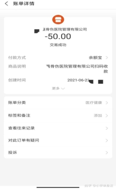
第二天，早上拿了身份证去医院排队体检，体检费 50 元，自己出，这是从来没有说过的。让你排队，排到你之后，护士拿个 pos 机通知你，你才知道。然后回到招聘中心，一直坐着等待，然后途中有几张表格填好，继续坐着。
身份证交起来，我以为大家都是这样。后来我才知道，里面正式工应聘完根本没有压身份证，而且讽刺的是招聘中心里面的墙上明确写道：“不得以任何方式扣押身份证”。
到了下午，体检结果以短信发送到手机上，没通过的拿身份证回家。
一位同学肝功能异常，被拒绝了，当时我们觉得他是不幸的，没想到他是我们中最幸运的。
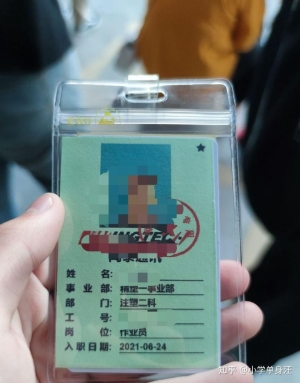
然后一直到下午五六点，天都黑了，发给我们厂牌让我们拿着厂牌进厂，到了一个叫“宾馆楼”的地方，站在楼下，我当时看应该有一两百人吧。
然后一名里面的保安来背规章制度，强调要没有案底的才可以工作，而且严禁煽动罢工，罢工据说工厂甚至会报警；我们旁边好像就有一个派出所。拿了几张打印好的纸让我们传阅。
这位保安把上面的规章制度背的滚瓜烂熟，一边走一边念。口齿清晰，胸有成竹，烂熟于心。
当时我就想，这么熟练，是不是每天都要念好几遍？ 后来我知道了，这业务水平确实是每天锻炼出来的。
然后报道名字出来排队分宿舍，当时跟我们讲的是包住。
分完宿舍去洗个澡睡觉了，我和一个来的同学。住一间，脏乱差就不说了， 至少还有空调。衣服洗了挂在那边干了都是烟味。我床上还有蟑螂，我都忍了。体验生活嘛，这就是生活。第二天早上 8:30 到“培训中心二楼”培训以及考试， 培训完就考试。
培训的人还详细介绍了老板的学历，好像清华大学毕业的来着，不过我并没有什么兴趣。
之后考试，考试分数 80 分以上记三个工时，80 分以下两个，70 分以下一个， 应该是这样的。我记了三个工时，还挺好，跟我一起来的基本都是两个。
培训完去吃饭，吃完饭等到 12:30 左右集合进车间，那个味儿是真的特别大， 做 pc 塑料的手机电池盖，面壳，中框。然后声音也是巨大，根本就没有发耳塞， 倒是发了个口罩。
带队的领我们进仓库开会，分夜班白班。
夜班有餐补，而且这几天干完之后，下个月就是上白班了，一个月一倒班。我和招聘现场认识的那个人选了夜班，为的是下个月的白班。
而且我们也属于夜猫子，晚上不怎么困。
两班倒和夜班是我们进去之后才知道，而且一个班 12 小时也是才知道。不过说了有两个时间吃饭，我们夜班是这样安排的：11：00 去吃饭，40 分
钟时间；5:00 去吃饭，40 分钟时间。
进出门都要打卡，打六次卡才没问题，晚上 8:30 上班，早上 8:30 下班。
同学中一位大哥，因为从来都是晚上 10:00 之前睡觉，一听到里面说了夜班， 意识到自己可能被中介骗了，和家长说，他爸不同意夜班。然后直接离职，拿身份证走人。
他爸对他说：“这就是厂里的套路” 第三天
在宿舍睡了一天，7 点多去吃个晚饭，等到晚上 8:15 进车间仓库开会以及点名。我分配到的是做电池盖，看外观瑕疵，然后把里面切水口的残渣挑出来，然后打包。
流水线的活是这样的，你看着那个线很慢，但是你一刻都停不下来。
你这一晚上就伺候这台机器，前一两小时还挺兴奋，后面就盼着时间过的快一点。
等到 11 点吃饭，原来是换着吃饭。两个人互相看机器，一个人先去吃，另
一个人之后吃。人走机器不停。
吃完饭回来处理堆的货，快的要一个小时左右吧。
之后等到 8:25 左右，接替我早班的人来了，像见到了救星，接替时需要告诉他，瑕疵品主要是哪里瑕疵，哪里需要注意。
之后就排队打卡下班，但是没有人这个时候走，因为迟到一分扣一块钱，早退一分钟扣十块钱，等到 8:30 才敢打卡。
机器巨大的轰鸣声在耳边响彻 12 小时，我回到宿舍，对面放假的正式工老哥发给我一只紫云，我坐在床上靠在墙上和他聊天。
我问他：“怎么没去上班？你不是早班吗？” 他说：“你们学生来了我就放假了”
原来正式工工资比学生工高五块钱以上，而且这个厂是这样的，有订单的时候，让你一直干，没订单的时候，去了就让你放假。
我问他：“那放假有钱拿吗？”
他说：“你想什么呢？放假肯定没钱啊。”
是的，放假和请假都是这样的，你要在要上班的时间去车间，如果是放假， 直接宣布放假然后回来。
如果是请假，过去跟线长说，如果他能抽的出人手顶你的位置，就给你请假。如果抽不出，那对不起，你得继续干。
那如果实在是有急事，或者实在吃不消怎么办？有三甲医院证明可以，带薪请假。
当然也可以选择旷工，一次罚两百，累计三次算自离；这两种应该都没有全勤奖了。
上完夜班回来特别困，去楼下澡堂洗个澡，然后洗个衣服，换个衣服，睡觉了。一直睡到晚上 7 点多，然后吃个饭，8:15 进车间；点名完去接替上白班的。
周而复始。第四天
我基本见不到上白班的同学，过着这种日复一日的日子。第五天
招聘现场认识的那个一起上夜班的跑路了，更无聊了。第六天
周而复始第七天
和我住一个宿舍的那个同学没去上班，请假了，他准备跑路。 我晚上起床的时候帮他收拾行李送他出了门，然后去吃饭上班。
第八天
我早上下班想晚上请个假，和组长说了，她让我加她微信，我去墙上看了她的号码，写了下来。回去宿舍，微信搜索不到，打电话，假号码。
我剩下的两个同学都跑路了，我决定旷工，第二天早上走。晚上和对面的老哥聊天，他扔给我一支“上海”
聊到包住这个问题，他说没做满三个月是按 50 元一天的住宿费收的，他也是后来才知道，我也才回味起我师傅和我说的：“我干满三个月才走”
工友劝我，你工资就别要了，肯定拿不到的，也不要想的那么好，从正规途径离职，你们线长肯定要刁难你的，就是想让你自离。
第九天
我离开了这里，办的急辞，正常离职走不了。
拿离职单，让我把厂牌撕碎，然后磁卡给她，把我磁卡扔到下面垃圾桶，我说我里面还有钱，要去退，她说：“你怎么不早说？”我想早你也没问啊？然后她把卡捡起来甩到我面前。
退饭卡钱，第一次没现金，第二次要离职单，我昨天的同学没有用离职单； 第三次她给我 62 元，让我补给她微信 5 元，我说我 cnm 的，我里面 57 块 4 对不对？微信转账你 TM 还给我搞东搞西，转你 4.6 元有毛病吗？骂完我拿了钱直接走人。
再去退卡，还是前台的那个小姐，这个小姐把离职单拍在桌子上，头也不抬。后面排队办业务的人低声下气。
我到了门口，气不过，高声骂她：“你 TM 有什么好拽的？我 cnmd！”
拖着行李走出门，被保安拦下来，同时还有几个也是离职的，打开箱子检查， 把我们工人当贼一样。
在大门口等我爸来接我的时候想了很多，和我一起来的同学是学汽修的，注定要实习什么的，我还好，是学外贸的，应该不会在中专期间实习。
厂里每天都有人走，每天都有人来，从一开始跟我们说 50 个工时就有工资，
到最后说 70 个工时才有工资。
同一批进来的还没有走的有一位我和她聊过，是在实习。
年轻人有腿，实在想走总能走，腿断了的是里面三十几四十多的，没有一技之长，没有学历，除了流水线什么都不会，而且上有老下有小的。
我们都发誓此生再不进厂，看到那些便宜异常的 9.9 元商品再也不想以前那样觉得好香，因为我们见到了占领全球的 made in China 背后是什么。
我们做的是某想的低端机，这样的人员素质，吃苦耐劳，这样的劳动力以及低廉的价格，可想而知在国外市场一定会以价格战抢占大片市场，搬到东南亚的工厂搬回来是有道理的。
年轻人暑假可以进一次厂，里面可以教会你学校里多少年都学不会的东西， 学会了，跌倒了，摔疼了：恭喜你，你就不会虚度光阴了。
在车上，我爸一路就对我说了两句话： “社会大学才是最好的大学。”
“挣钱容易吗？”
我在厂里认识的这些老哥，他们勤勤恳恳兢兢业业，却每天挣扎着生活。但就是他们用血汗撑起来了世界第一的工业产值。
第二十五章 职校生“实习”经历：“我就像被猪笼草捕获的猎物”
这是一个湖北职校生写的文章，授权佐伊回答这篇文章。看完这篇文章后， 就能知道十堰这名职校生所面临的的状况，不是孤例，而是一个普遍性的现象。希望大家能够关注职校生群体，也欢迎更多的职校生给佐伊投稿，发出你们自己的声音。
我目前就读于湖北一所高职院校，我本以这所学校会成为我改变命运的机会，没想到它却成了我娘胎以来最大的噩梦。来到这个学校短短两年，已经两次被送出去做廉价劳动力，去年在工厂做流水线，今年在游乐园做服务员。学机械的被送出来做服务？
是不是觉得荒唐，这是我经历过的事实。
我交的学费是父母的血汗钱，来这学校没有学到多少知识，还因学生这个身份拿着微薄工资。换句话说，我要是逃离学校自己找工厂，自己找服务业工作， 工资至少能够翻一倍。
现在，我觉得我就像进了猪笼草！
猪笼草在捕杀猎物的时候瓶状体的瓶盖复面能分泌香味，引诱昆虫。而瓶口光滑，昆虫会被滑落瓶内，被瓶底分泌的液体杀死分解，逐渐消化吸收。这所学校就是一瓶吃人的“猪笼草”！
它对外面的人展现的是知识的殿堂，是改变命运的机会，是赚大钱的未来。但对里面的人来说，感受到的只有心酸与悲怆。它把我的劳动力，把我的活力、我的理想、我的热情、我对未来一切美好的憧憬化作了金钱的养料。
我质问它，为何在我需要吸取知识的时候把我送出去做服务员，做和我专业毫不相关的工作，我才大二啊，为什么要去挥霍我们的青春。它的回答让我内心冰冷，说：这是为了我好！
他们为何敢如此放肆？将学生求知心置于不顾，赤裸裸地送学生出去做廉价劳动力？我想不明白。
我要把我的经历写出来，我也希望有如此经历的人，能够勇敢地写出来，看看我的经历是个意外，还是多数大专人都是如此！我要看看，专科的扩招，究竟是不是利用学历手段，将一批又一批专科生送到工厂补充劳动力。
它究竟是学生梦想的天堂，还是管理敛财的工具
我出生于大西北，父母文化水平低，没什么稳定工作。对于他们来说，把一个劳动力拉扯大已经很不容易，何况要供一个脱产的书生呢？所以，他们衣食住行向来“过得去就行”，只希望有朝一日我能够读出个成果，不必同他们一样过牛马一样的生活。
然而我不争气，高中三年打了水飘，高考成绩只够上专科。那段时间心里极其难受，整个人被焦虑和抑郁情绪所包裹。本打算去学挖掘机，好歹有门吃饭的手艺，也能减轻家庭负担。可父母依旧愿意供我读书，同时我内心也有憧憬，希望大学能够学到知识，用知识去改变我的命运，那时候我是充满活力的，买了大量据说大学会用到的书。现在看来，我毕业后可能还是要去学挖掘机。只不过要多耗费无数的光阴，与父母的血汗钱。
这所学校招生的主要手段不是自身的硬实力与精妙的宣传，而是利用信息不对等去诓骗学生。乡镇出来的小镇做题家，搜集信息的能力太弱了，很容易受到欺骗。要是今天我能够重新报名，绝对不报这所学校。
现在的我学会了利用网络搜集需要的信息了，我可以通过谷歌地图了解到学校建设，可以通过仲裁网了解到学校不干净的信息。在网上，谷歌地图能告诉我学校的基础设施建设情况；仲裁网能告诉我学校有没有不干净的信息；贴吧知乎能告诉我“过来人”的一手资料。
但高中刚毕业的我，哪懂这些。跌跌撞撞地加了无数学校的新生群，在无数的学校中这所学校说宣传有车队，省里唯一，实训设施完善，校企合作，占地千亩！对于，我这种农村出来的孩子，最担心就业问题，学校也信誓旦旦的保证就业。面对这样“完美无缺”的学校。我就毫不犹豫的选择了这所学校它。现在想想，傻极了，把学生送去做服务员，底薪一千五，那也是就业啊。
在初次去学校的火车上，我听到邻座两个年轻人讨论一个学校，在嘲讽“省里唯一”这种宣传。我的心猛地一沉，根据他们讨论内容来看，他们所嘲讽的正是我报考的学校。而且他们是老生，在他们话里我听到“学生被强迫送去做廉价劳动力，不去，就用毕业证要挟”，觉得学校作为公办学校，不可能做出这种事， 而且他们形容学校“黑中介”“诈骗俱乐部”，更加觉得荒唐，心存侥幸，就当他们是故意黑。
到了学校，游览了一圈，眼见为实，耳听为虚，古人诚不欺我。它宣传提供的信息基本都是虚假的。所谓占地千亩，建设地还不如我所在城市的中专。用老
生的话来说，能绿化的地方绝不建筑；进食堂吃饭，更是一言难尽，眼球大小的包子，要 1.5 元，中午吃饭的时候明显吃出了馊味，调料味极重——为了掩盖蔬菜的不新鲜？还有人在 QQ 空间里吐槽，在食堂吃出了虫子。经常在 b 站上看到有人说“这腌制皮鞋都入味啊”，在“大厨”的烹调下，相信食堂没有不能入味的“珍馐”。
学校超市也是不讲武德，我通常都是外出购买生活用品。在老家五元钱购买的盆子，在这里居然高达十四。咋的了，盆子是从工厂一路用人工抱过来的，运输成本高啊。或者说，学校用心良苦，以此遏制我们去消费？ 当然这都不重要， 我毕竟是来学习技术的，饭难吃，物品贵，我能够忍受。我不能够忍受的，是打着实习的幌子，把我们送去做廉价劳动力，做人都能做的事，难道在学校眼里， 我们是弱智？
刚开始，老师们常说“往届学生不努力学习，很后悔，谁谁谁给学校发消息， 想回来学习”，激励我们学好技能，多考证书，去专升本。这让我觉得，学校是会教书育人的。那时，在我的认知里，职校人都是颓废的，我也看了很多文章。这些文章从职校老师的视角来叙事，讲到职校生只想谈恋爱、玩游戏，而肯认真读书的，只有少数。我来自农村，知晓父母不容易，所以发誓努力读书，做那少数人。
于是，我激情澎湃跑到图书馆，决定用知识去改变自己的命运。“哇，图书馆看起来好豪华。进去，咦？咋这么多办公室，借阅室没人啊？卧槽，图书室居然不开！卧槽，自习室居然不开！”作为学校必备设施的图书馆，居然只是空有皮囊。图书馆里面只有阅览区开放，自习室的门高冷的关着，图书室的门高冷的关着，有的只是富丽堂皇的领导办公区。我心凉了，便自己在当当网购买了图书。它不能给我提供学习的资源，我就不能因此放弃吧，总不能和知识过意不去。
在接下来对日子里，我的心越来越冷。学生会充斥着官僚作风，学校满地都是形式主义，莫非所有大学都是这个德行？它毁了我对大学的热恋期盼。 我翻看了下当时写的日记，写出了如下文字：“我的一腔热血、一腔抱负、一腔热枕， 要是比喻成一丛燃烧旺盛火柴堆，现在正在逐渐熄灭。不知道风来自于哪里，故而不晓得如何防风。我琢磨着用不了多久，旺火就会成为小小火苗，被一口唾沫都能淹灭。我现在并不具备“野火烧不尽，春风吹又生”这种精神，所以特别敬慕西西佛斯，那每天都会选择重新推石头的，在希望和绝望中选择挣扎的英雄。” 这里就不细说学生会为了逼迫我们去打扫卫生，利用权力利用绩效之内的事了， 那片区域，我们没那个义务，而权力来源于义务。下文，直接过渡到实习，我们
的伤痛之行！
2020 年 11 月末，我已经知道了学校的德行，可我依旧保持学习的热情。毕竟，还是有负责的老师，他们苦口婆心的教我们读书学知识。我深知，它面貌丑陋，但知识永远可爱。
改变来自一个晚自习，辅导员宣布我们有为期一个月的实习。全班热烈讨论， 都觉得可以亲眼瞧瞧工厂怎么回事，我们能学到哪些东西，又可以发挥哪些作用。后来我们发现，其实也没学个啥，就学了个 UG 作图——但凡经过受过一些简单机械专业训练的人都会。
这时的我，已经开始有所怀疑了。我有社会经验了，我做过暑假工，切身体会到什么叫做“资本家灵魂是资本的灵魂”，这些豺狼虎豹为了利益最大化，所采取的各种触碰法律的手段。把大二的我们送去，工厂真能教给我们知识？我们那么多重要科目，还没学完，跑去真能够解构工厂，看透工厂的运行，分析各个岗位所包含对技术成分？我看着台上笑容满面的老师，心生疑惑。
可我，心底依旧相信学校，抱有侥幸。
到了工厂，分配了岗位，我心如贝加尔湖冬天的水，烈日下的撒哈拉沙漠， 荒芜悲凉，希望溃散。在此之前，我查阅过这家公司，它正缺普通工人，招聘数控操机、磨床操机、装配工、拉花键工等等，招聘工资为 4000 起步。
给我们安排的岗位，正是这些工厂所缺的，而我们工资却仅仅为 1500。工厂只用 40％不到的开销就解决了工荒，真是高明啊，按学校和工厂的说法，我们要感恩，感恩他们提供了可贵的实习机会。你们巧立名目，毁我青春，还要我感恩这龌龊勾当？
毫无疑问，这里的人无法获得知识。在流水线上能学个啥，我那时候讽刺说， 我们学的科目其实是《流水线的自我修养及其养成》，要是完不成，可是毕不了业的。事实上，有同学不想来，但被校领导用毕业证来威胁，最后还是妥协了。校领导和他们面对面谈话，而不是电话，怕是怕被录音吧。
既然学不到东西，那我就把利益最大化，多挣一些钱。我有准则，要是能学到知识学到技能，我乐意接受低工资，要是学不到东西，那么，多给我应得的工资吧，别谈格局理想啥的。我跑到其他工厂，不说自己是实习生的话，工资绝对4000 以上。
进厂是要签合同的，合同我看了看，不合规范，没提基本工资，没提计件工资，工作出了事故要自己负全责。作为好歹学了点劳动合同知识的我，自然提出了质疑，为何每项条文都是对劳动合同法的蔑视？我先是向工厂质疑，负责人说，
不要想太多了，工厂会发钱的，计件工资会有的。有几个同学，也跳出来，帮工厂说话，搞得我好像无事生非，有“迫害妄想症似的”。事实上，比我们晚来的学生，没拿到工资，只拿了 1000 国家补助金。
好，工厂不解决，我问学校。但学校还没说啥，那几位同学又跳出来，还是用那种指责的语气。不必要啊，同学，资本只会追求最大化，你要是没有扎实的知识，不管如何，他们都不会高看你一眼。历史会告诉我们这两种选择带来的不同结果是什么。 我不是容易屈服的人。每天九个小时，每周六天，这显然违反了职业学校学生实习相关规定。劳动条件恶劣，噪音污染，我每天下班，肚子都是湿透了，我是拉花键的。要不断把加工好的轴承从机器中取出来，每次把轴承拿出来，肚子都会粘上工作液，累积一天，到下班的时候，肚子一定是湿透的。冬天气温寒冷，下班出了工厂，我都是把衣服用手撑起来，以免感冒。
我不愿意屈服，这么累，一个月才 1500，我与夏衍笔下旧上海的包身工有什么区别呢？也许在于我是“自由”的吧，我能做出自己的选择，我不要屈服！ 我不愿做夏衍笔下的新时代的包身工！
做好充足准备，我去和厂长谈判。我已经能够熟练掌握机器了，这是我斗争的武器，斗争的依据。我要求给我按件计算工资，否则将会打击我的积极性。第一天，厂长口头承诺给我解决，但实际上是在找借口拖延。虽然已经有人已经端起看笑话的架势，但是我不在乎，我无论如何要有个结果。第二天，我继续谈判。
事实证明，不斗争什么都没有，我争取到了计件工资。为了避免到时候赖账， 我用手机开启了录音，并且暗示厂长我录音了。 说快不快说慢不慢，一个月的实习在煎熬中过去了。这种煎熬，不是身子上的，更是心灵精神上的。
看着朋友圈里高中初中同学晒学校的学习日常，我心里难受极了。我选择读职业学校，读三年制大学，不就是为了避免流水线的命运，但流水线却成了所谓学习的内容。想起报名时的期待，心里五味杂陈。自尊心甚至让我说谎，我怕昔日好友笑话，对他们说我学到了很多。呵，自尊心，我甚至觉得学校工厂把捏到了这点，知道我们羞于外传，所以才肆无忌惮。
终于，发工资了，我胜利了！我拿到的工资，比那些体贴工厂、体贴学校、懂事可爱的同学，多出了 1500。出于报复心理，我在他们面前使劲得瑟，“你们这么懂事，获得了什么？我这不懂事的人，却得到了许多。”钱算个屁，我得到的是不服输的勇气，剪掉的是心里的辫子。气出完，我觉得不必如此，毕竟， 我们都是被压榨的可怜人。他们的家庭和我差不多，他们和我一样被骗到学校， 他们不过是害怕惹怒学校，被穿小鞋罢了，他们是被异化的弱势群体。恶言不应
该对着我们的兄弟，对待错误的兄弟的应该是教育教诲。只有敌人，才有资格去“享用”我们的恶言。
今年，我对学校彻底心冷，甚至仇视。
三月份，我本来打算外出学校报考驾校，凑学分拿毕业证，以备不时之需。可却流传出了消息，我们又要被送出去实习。这所学校，凡是传出的不好的消息， 百分百是真的。我立马取消了报考驾校的念头，要出去实习，哪有机会去学车。
四月份，这些传言开始成为现实，课程的数量增加，考试的步伐加快。事出反常必有妖，不用多说，又要出去“贡献”自己的剩余价值了。 老师也开始做我们对思想工作，说这所做一切都是为了我们好！
我不服，站起来，当着全班学生的面质问老师：“把我们学机械的送去做服务员，这是我们好？” 老师很诧异，说：“去了肯定能学到东西啊，边工作边学习。”我知道我起来质问，可能会得罪老师，被穿小鞋，被部分同学耻笑傻， 可我早就不在乎这些了，只想说出自己心里的疑惑，抒发压抑的苦闷。“去年把我们送到工厂，做了流水线，没学到任何东西，现在送到游乐园做服务员，能学个啥。”
伟人说的对，没有调查就没有发言权，这位老师显然不了解具体情况，单纯靠臆想说话。老师说：“净瞎说，怎么可能学不到东西，是你自己不想学吧。” 这位老师的话，惹怒了些铁骨同学。他们直言不讳地给老师普及当时的情况。不管是磨床还是数控的，都在如同机器人一样往机器里面塞零件，包装的则是最累干的活最杂。老师说不出话了，可或许是为了面子，或许是为了维护学校的尊严， 老师又说出了学会游标卡尺也算学的荒唐话。
五月，我们终究被“自愿”到了游乐园做服务员。签的合同，依旧不合规范， 可这次，我什么也不想说了。不过是看着太阳，坚定了信念，耳边听着焰火青年， 想摇滚罢了。 有一说一，游乐园提供的住宿环境是真的好，这也是我为数不多的欣慰。工作内容还算轻松，上层领导待人处事，不让人心生抵触。可是，这掩盖不了一个事实，把机械人送出来做服务员。
我尊重每个行业，我选择这个专业，肯定是做过综合考虑的。而如今，把我送出来做服务员，这是不尊重我的选择，这对于我的发展又有何益处？因为这家公司背景强大，我就不详细写工作过程了，以免惹来麻烦。总结起来，我们的实习科目基本是这么几项：《论保安的标准站姿》《打杂人的自我修养及其养成》
《如何做好一个服务员》《穿衣服跳水的一百种方法》。
这家背景强大的实习公司，我以为不应该会有什么离谱的事，可事实证明，
天下乌鸦一般黑，不会因为它是大乌鸦，它就是白色的。工作了一段日子后让我们签实习承诺书，我看了后直接气炸。这他娘直接违反了国家用工规定，第三条赫然写着，“实习期间对自身安全负全部责任。保证自身安全，如出现意外，一切自己负责。”
当时，他们在学校宣传时，给我们普及了工伤之类的知识，我觉得很不错， 所以来到这里后并不是太抵触。如今来这出骚操作，再次刷新了我的认知。 这种完全逃避自身责任的合同，我坚决拒签！我要捍卫劳动法的尊严。我把合同发给学校，学校如同去年一样，并没有想维护我们权益。 不维护我们权益尊严也就罢了，接着，又给我们唱了一出寒颤人的大戏。
我们这些职校大专人，命运大体相同，来自不知名的山村或者不知名的城镇， 家庭收入维持在温饱线上，生活质量维持在温饱线上——因为我们读书，要花钱。父母从事的行业大抵是：建筑工地，菜市场，超市，出租车，跑大卡车，务农， 养殖，大街小巷小生意。他们文化水平不高，他们人卑言微，他们怕我们惹上麻烦。我们是父母的烛光，他们大抵都有过这样的表达，“读书去吧，努力读书吧， 这样会过上好日子。”现在，他们知道我们在这学校无法烛光，成为他们的希望， 他们只是叹口气：“忍下这口气吧，把毕业证拿到手。”
我们都幸运接受了九年义务教育，我们都经历了严谨的课堂，深夜的作业， 千锤百炼的题海。乘着职校扩招的风，报考了职业学校，都想回报祖国的政策， 做一名工匠，推动产业升级。可我们所在的学校，疮痍满目，一地鸡毛。我们性子温良忍让，连续两次被送出来做廉价劳动力，也不敢大声反抗和抗议，只是默默忍受。所以那些人就肆无忌惮地伤害我们。
6 月 15 日，学校再次让人渍渍称奇，说是要在暑假里补课，九月份再把我们送出去实习。大一的小学妹还很疑惑，问我们是不是如老师所说，想早点出去？ 我没有说话，学校向来很懂我们的心思，我有什么可说的呢。不过是要考驾照的人不能回家罢了，不过是想找实习单位的人没时间去找了罢了，不过是找好暑假工的人不能多赚钱罢了。我想，不管如何，可以回去学点知识了。
6 月 16 日，学校在 QQ 群用一种仿佛我们会很高兴的口气说：告诉大家一个好消息，不用回学校补课了，可以留在企业里补课，这对我们更好。翻译翻译， 什么叫对我们更好，暑假补课就算了，还要把我们留在企业里补课。这司马昭之心，也太赤裸裸了吧，怪不得当时忽悠我们说七月就可以走，但要把合同签到九月。
人总是有底线的，部分同学不再沉默忍受了，他们开始质问这人间不合理的
荒唐事！他们大声疾呼：“为何我们在校三年，两年时间出来打工？”这话问的好，整整三年，我们在学校居然只待了不到六个月。 有人讽刺地说：“学校给我们争取了既读书又能出去实习的机会，双丰收耶。”也是哈，学校用心良苦， 怕我们学不到东西会饿死，让我们不但学了残缺的理论知识，而且给予了丰富的实践课程。去年学《如何做一个合格的流水线》，今年学习如何《如何做一个 优质的服务员》。在别人上课的时候，我们当服务员挣钱，当别人放假的时候，我们边补课边做服务员。别人还享受不到这待遇。 我们人卑言微的问：“难道我们只能做受害者。”对，事实上我们就只能做受害者，学校总会有理由扣留我们的毕业证，我们拿着父母的血汗钱读书上学，而没有获得相应的知识，我们不敢反抗。否则毕业证也没了。
6 月 25 日上午 10:28，十堰 17 岁中专生实习自杀，他父亲写的诗我看了， 扎心痛骨。现在，我已经不愿意纠结于自己的痛苦，而是要将眼界放于整个职校生。 我们职校人，始终是个被社会所忽视和鄙夷的群体，我们是中考高考竞争的失败者，我们即使说一句“未来可期”来激励一下自己，都可能被别人嘲讽。职校人的命运就是被学校卖去做廉价劳动力，只有工厂的员工知道我们的痛苦。可他们知道我们的痛苦，却也什么改变不了，只能偶尔安慰一两句。
在我的经历里，学校企图用特殊性掩盖普遍性，即拿某一个人被企业成功录用的案例，来证明他们所做的一切都是为了我们好。判断事情，得看主要矛盾， 看它的普遍性。我们才大二啊，本该在学校汲取知识啊，所以我们的主要矛盾是“学生渴望汲取知识的矛盾和学校利用权力把学生送出去做服务员的矛盾”。这个矛盾中，学生是弱势群体，而学校是强势群体，学生并没有获得任何对人生发展有益处的东西。普遍性就是，接近三百人的学生，只能在企业留五六个，剩余的人白白浪费了时间，贡献了剩余价值，一无所获，也就是说，成就了五六个人， 而剩余的接近三百人毁了。而学校则想不断证明一切都是为了我们好，我要撕碎这温情脉脉的面纱。 国家不断发文提倡职业教育，提倡校企合作，这是好的， 毕竟很多人注定上不了高中，上不了本科，数据摆在那里呢，可这些人总得学点技能，去谋生吧，这也能推动产业升级，建设智能制造强国。表明上看一切都是那么美好，但是，这些学校却打着所谓校企合作的幌子，把学生送去做流水线， 甚至做服务员。我要看看，我要调查出数据看看，究竟有多少人有我这般遭遇， 我已经被毁了，我不希望后来的职业人，也如我这般被毁了。
【佐伊按】本文是一名职校生对职校学生群体所做的调查。他希望自己所做的调查，能够成为一把“锤子”，砸烂社会对于职校学生的偏见：“我要拿起这把锤子，砸墙，还给职校生一个公道，让社会真正了解这个群体。”此项调研还在进行的过程中，调研成果会陆续公布。如果有愿意参与这项调查的，可以与佐伊联系。
2021 年 6 月 25 日上午 10:28，十堰中专生余骏实习期间跳楼自杀，他父亲写下悲壮苍凉的诗纪念他儿子。读完他父亲写的诗，虽然不是人父，但是作为人子，能够读出他父亲的撕心裂肺的疼，能够读出字里行间都淌着他儿子的血，愤怒让我彻夜难眠，学校本是教书育人的地方，怎么就做起了贩卖人口的生意。用学历威胁学生，将学生安排到流水线做自动化器官，而它，吃的满嘴猪油，毫无负罪悔恨之心。
这件事经过一段时间酝酿，终于冲上知乎热搜，引起社会各界的激烈讨论。这种龌龊的血腥的肮脏的事，不是特殊案例，而是非常普遍，但是这种普遍的现象没有引起社会的真正重视。
在众多义愤填膺的答案中，不缺乏刺耳的声音。这类声音说职校生活该，说这是自作自受，是自食其果。诚然，职校生确实是中考高考的失败者，可难道就意味着他们活该被学校贩卖，去流水线做自动化器官，遭受那牛马般的待遇？
我在知乎上搜索了职校生的时候，跳出来许多回答。这些回答说职校生是这个社会的垃圾，职校生普遍堕胎，职校生普遍乱搞，职校生普遍爱打架。当真如此？看着这些五花八门的回答，我在想这究竟是臆想出来的故事，还是调研出来的事实。在我记忆中，有初中同学考上了普高，可是最终选择去读职校，目的是想快点学到技术，快点去社会赚钱，让他含辛茹苦的父母能够轻松些。
2021 年 7 月 25，经过一段时间讨论，我们初步组建了调研团队，撰写了调研提纲，准备通过调研去真正了解这个社会群体，破除那带有形而上学色彩的偏见迷雾。
8 月 1 日，我接触到了第一位调研对象。
“初中毕业十五岁，那时候怎么知道为啥选这学校，我那时候学的专业和现在都不一样，你应该问一些日常生活。虽然我们学校大多数人日常生活都是浑浑噩噩，可我们很多人不一样，从技能高考上来后，就一直在改变，”
调研提纲是按一个湖北职校生经历提炼撰写的，刚开始我公式主义的拿来去咨询这个女生，很显然和她的情况不符合，而且个别问题让她羞怒。好在这个女孩人挺很好，并没有因此恼火把我拉黑，我深知有些问题触犯到她了，而她不但不恼火，而且好意提醒我要多问问日常生活，这让我心里暖洋洋的。
为了不暴露这个女孩信息，我叫称她为阿丹吧。
通过交流，我觉得阿丹是个很好很好的女孩，善解人意，奋发向上，渴望变得优秀，不为职校生这个身份自卑，积极为职校生辩护清白，这很难得，我觉得这很好！她想做那种有气质的女孩子，想读好多好多好书，问了身边很多人，她身边的人很少读书，无法给她推荐。于是，就诚心诚意的让我给她推荐，她觉得我是个学富五车且积极向上的人。这让我惶恐，我现在读的书并不适合她，以前读过的书名也忘了，立马去咨询认识的爱读书的女生，才发现她们现在忙碌于工作，也很久不读书了，忘了书名。思索再三，通过阿丹的文字推测，我觉得她多多少少有些自卑，便推荐了一本余秋雨的散文，推荐了阿德勒的《自卑与超越》。打算通过共同阅读这两本书，能全方位的了解阿丹。岂料，这换来出乎意料的信任。
我想，没人愿意说出自己真正疼的经历，我就是，我会把那些真正让我觉得疼的，血淋淋的经历埋藏在心底，给谁也不说，这不是害怕别人嘲笑，害怕别人怜悯，只是单纯的不想让其他人知道。而我是何其幸运，得到了阿丹的信任，她愿意把她很疼的成长经历告诉我，在她说她的经历的时候，我默默的看着，想起了成长路上遇到的许多人，他们和阿丹的经历相似，留守儿童，家庭不完美，而我再也没有联系过他们，通过阿丹的经历加上读过书的分析，我知道了他们行为背后的原因。在下文，我会写到他们。
“阿丹，谢谢你能信任我，说出你的成长经历。在这之前，我只是想了解职校生的校园文化生活，了解职校是如何了解到学校的，为什么选择所学专业，以及学校存不存在强迫实习。你让我的想法产生了转变，我现在更想去了解职校生的成长经历，他们成长路上的文化环境，他们成长路上遇到的挫折。我要寻找职校生不爱学习的根本原因，职校生为什么有点像骆驼祥子。我能不能把你的故事记录下来，鼓励其他职校生写出自己的经历。”
何其幸运，我得到了阿丹的允许，阿丹的故事，我会一个字不改的复制到下文，第一人称也不修改。
我从小到大是父母老师眼中的乖孩子，好学生，我也特别听家长的话，我的世界除了家长同学就是学习，家里墙上挂满了奖状，在我八岁的时候我有了一个弟弟，本来是我妈妈在家里带我弟的，一切都很好，我和我弟很喜欢彼此，但是迫于生活吧，在我弟弟一岁左右的时候，我妈就出去工作了，就让我奶奶带我弟我们俩，我爸虽然在家，但是只在乎工作，挣钱，慢慢的，我弟被我奶奶宠的无法无天，我和我弟也经常打架，我们俩就像仇人一样，我奶奶也成天数落我，说我不懂事，还总是惹我弟弟哭，在家里一点不对就开始骂我，贬低我，总是拿我和别的同学比，总之说我的各种不是，经常受委屈，但是我不敢给我妈说，因为我知道我妈在外面拼命工作已经很不容易了，我难过的时候就自己偷偷的哭。
平时放学回家，非常饿，吃点家里的零食，要是我刚吃完，我弟弟也要吃， 我奶奶就会骂我说我为啥这么贪吃，把我弟弟的零食都给吃完了，就这样到小学六年级，我寄宿学校，别的同学有好多好吃的，我没有，我也不明白为啥别人的家长会给孩子买那么多好吃的，我妈妈经常给家里打我和我弟的生活费，我奶奶也是经常给我说家里各种没钱，我信以为真，于是每次过星期我就买一盒咸菜， 每天吃馒头夹咸菜，只是偶尔的吃一些好吃的，每个星期回到家，整个家对我来说都是冷冷清清的，总是因为大人的各种偏心，我就会和我弟打架，闹矛盾，然后回到学校就各种难受，每个星期都是如此。
我性格也一直很自卑，很内向，不敢让别人注意到自己，也什么都不懂，我奶奶在家里经常各种数落我，在外面却给别人炫耀我成绩好，可笑的是我家长连老师长啥样子都不知道，到了初二我成绩就慢慢下滑了，从前十名慢慢的到初三就倒数了，各科老师想挽救我，上课就严抓我，但于事无补，这个时候我奶奶依旧不知道，还是在外面炫耀，直到快中考的时候，我有想弃学的念头，家里人才知道我成绩很不好了，这时候家里亲戚什么的都在背后说是我玩儿手机玩儿的， 但是她们不知道我从小到大的承受着怎么样的痛苦。
我每次上课的时候想着想着就哭了，后来在我妈妈的劝说下我参加了中考， 接着就来读中专了，我就开始各种玩儿。第一次觉得生活这么轻松，也渐渐明白了人情世故，也被身边人同化了，上课玩手机打游戏追剧，过星期的时候出去各种逛街玩儿乐，也没想过以后会怎么样，上了一年觉得没啥意思，学不到东西， 想弃学，我又在我妈妈的各种劝说之下继续读，并坚持考上了大专。
其实考大专我们也耗费了好多心血，一个学期，每天起来就是练题，一天两套，每套要好几个小时，不过经过好几个月的努力，我终于如愿考上了，并超过分数线一百六十多分，我就意识到不能一直被身边人同化了，于是我放弃熟悉的同班同学和闺蜜，自己果断转专业了，我开始努力学习，报培训班，考证，由于
我学的太多 ，效果不佳，都没有考到。
我知道自己交际能力不行，就加入学生会锻炼，我闺蜜说我想不开要进学生会，但是我明白自己需要什么，还积极参加各种比赛，每次都拿了奖，渐渐的就和朋友闺蜜有了一点差距，我做什么事情的时候，她们就觉得我被骗了，吃错什么药了，但是经过时间的累积，我得到的东西收获的东西也比刚开始之前说我的人多的要多，我做到了老师同学都喜欢我，除了个别的，甚至我们班的同学觉得我什么都会。我要继续努力，去考本科，去考硕士。
农村没什么产业，种地挣不下钱，这就自然导致会有大批留守儿童。看完阿丹的成长经历，想起来我也做过留守儿童。
说出来可能有人不信，在甘肃一座小城的乡镇，曾有大量的读书娃，在三年级甚至四年级的时候，就已经学会了生火做饭，劈柴洗衣，我就是其中一员，父母需要挣钱养家，外出打工，家里离学校远，骑自行车来回学校，要时不时被雨淋，有时遇到大风，被吹到在地，脸上挂彩，能活到现在没被摔死，是一种幸运。
这种情况下，就促使大量的学生在学校附近租房子住，五六个人挤一间小窝， 时不时起冲突打架。四年级的时候，我是用柴火做饭，做饭不熟练，劈柴生火不熟练，往往饭做熟吃完，来不及洗锅就得去上课，然后迟到挨批。
在这里我得感谢同校的几位学姐，要是没有她们的帮助，我估计是饿一顿饱一顿，我们经常合作做饭，实际上就是她们切菜炒菜和面，我负责刷锅洗碗。前两年，我试着去联系这几位学姐，只联系到了一位，这个目前还在读书，所以联系到了，而其他的，听说，要么早早的嫁作人妇，要么南下做了厂妹，要么在火锅店做了服务员，没有弄得联系方式。在后来，五年级，我换了宿舍，用上了煤气灶，虽然也同别人合作做饭，不过没有四年级快乐，五年级的我依旧不会和面做刀削面，就吃了两年挂面，我琢磨现在消化的问题，是不是那时候遗留下来的。
我写我的经历，绝不是为了喊疼，而是正因为我做过留守儿童，留守儿童存在的心里问题我多多少少知道些，下文一些内容也以此展开。留守儿童普遍缺乏被爱，所以极其渴望爱，尤其是女孩子，特别容易形成感情依赖。她们渴望爱情， 希望爱情能够弥补她们缺失的爱。
“你那时候，有没有因为太缺乏爱了，渴望被人爱，然后有男孩给你了温柔， 所以你爱上了他。”
“是这样，就送我各种礼物我就觉得他是世界上对我最好最爱我的人，之后才慢慢明白，那些小零食，娃娃对他来说也是挺普通的东西，所以就很单纯。” 过了一会儿，阿丹做了补充：“因为从小很少体会到爱，对方为我做一点事情我
就觉得很好，很爱我。渐渐的失去自我，每天以他为中心，直到后面人家觉得我傻，甚至想毁了我后半生。这段感情也结束了。慢慢的就看淡了，但是影响我后来的恋爱，我变得不在轻易相信，只相信自己所感受到的，我总结出一点，可能我只适合自己过吧。”
果然这样，她这种情况下长大的女孩，容易相信爱情，容易被欺骗，好一点的能挺过来，坏一点的自暴自弃了。在我做留守儿童时，居住过的院子里，就有她这样经历的女孩，饱受原生家庭的创伤，父母重男轻女，本来是留守儿童，一年体会不到多少次家庭的温暖，父母回来后，还数落她照顾不好她弟弟，我那时候也受重男轻女思想的影响，不觉得这有什么可恨的，上了初中，老师开导，我自己找书看，终于把这老旧思想的遗从脑子中剔除，可是这时候的她已经被毁了， 而且不知身在何处。
我多多少少读过点原生家庭对人影响的书，虽然现在脑瓜子留下来的内容不多，经量回忆原生家庭对人影响的内容，然后把这些内容转化成问题，咨询阿丹：
“很多人，找对象，是找理想父母，这里的父母，不要考虑伦理。举例子， 水儿的父亲沾花惹草，那么她大概率会找老实木纳的男孩。那你是不是也？”
“很对，我爸爸很老实，不善言辞，我就比较喜欢会表达的男孩子。”
恋爱是修复童年的错误，要是碰到合适的初恋，能够互相拯救，可是按照阿丹的描述，她并没有遇到的好的恋人，我脑子里生出了第二个问题。
“你对象，按你的描述，是想把你变成顺从听话的奴隶。”
“他和他家长思想都有问题，想着我小，把我骗到手趁早结婚省钱，但是我没傻到那种程度，其实他们就是在算计我，如果不算计可能会一直在一起。”
还是这样，又是这样，这种真实发生的人间残像，我已经是耳闻了很多，目睹了两起，童年经历本就不愉快，在自己的家庭受受害，又要受另外一个家庭的伤害。阿丹是幸运的，她有个好妈妈，在她妈妈影响下，她有勇气摆脱那个人渣。我做留守儿童时同院子里哪里女孩就没有这么幸运了，就叫她不幸的二号阿丹 吧。在此之前，我先说说当时的文化生活。
农村留守儿童的文化生活可以说极其匮乏，随之而来的就是精神的贫瘠，各种零食一样没有营养的文化，也就有机会入侵农村留守儿童的精神世界。打打杀杀的古惑仔电影，狗血淋漓的肥皂剧。那时候，我们放学回家，晚上吃完饭，男生娱乐生活，就是打牌下象棋聊古惑仔，那时候六道的《黑道是怎样练成的》正值爆火，我一度认为这为后来的校园暴力埋下伏笔。女生的娱乐生活就是聊肥皂剧剧情和郭敬明，这些毫无营养的文化满足了女孩的一切幻想。上了高中，学习了文化生活，我知晓了不同文化对人产生的影响，健康的文化能够促进人的发展， 可我们那时候根本接触不到除课本以外的优秀文化，没有少年宫没有书店没有报
刊亭。也就有几本小学必读课本互相传阅。
我再说一遍，留守儿童中的女孩，缺乏被爱，所以渴望被爱，同时受到那些零食文化的影响，误以为爱情是生命的一切，除此之外，在没有别的东西。不幸的二号阿丹，在初三这个至关重要的时刻，喜欢上了一个男孩，这个男孩是他同桌，男孩无意间给了她温柔，她为了测试这个男孩是不是爱她，叠了纸鹤送给他， 男孩保留了一个学期，在一节化学课中拿出来把玩，不幸的二号阿丹看到了，流出了眼泪，这个男孩很敏锐，知道不幸的二号阿丹喜欢她，送了些吃的，轻而易举把不幸的二号阿丹骗上床，并且四处炫耀，为的就是霸占阿丹，少花点钱把阿丹娶进门。
一时间各种恶言恶语四起，在留守儿童中快速传播，可怕的是在这传播中， 我听到的是赞叹龌龊的男孩是有本事的人，而不幸的阿丹是个荡妇。不幸的二号阿丹母亲闻讯赶来，不是心疼她女儿遭受了这欺骗，而是嫌弃她女儿给她丢了脸， 抓起头发，一巴掌又一巴掌的去抽打。我看到了那一幕，我和不幸的二号阿丹一起合作做过饭，她是个很体贴的大姐姐，可是我那天看她，她的双眼中无神，好像死了。
再后来，我幸运的被安排到城市读书，接受了良好的教育，知道了那些遗留思想的残忍，每次回家都要和那些遗留思想做斗争，其他年轻人也在做斗争。要是没有外来文化的输入，地方文化的基调是难以改变的，老一辈不如我们幸运的能够接受九年义务教育，思想中包含的东西是好是坏他们自己也意识不到，这两年年轻人的斗争，新媒体的传播，那些残忍的文化终于稀薄了。可是，我听说， 不幸的二号阿丹，不知所踪。
好嘞，好像扯远了，我继续和阿丹交流。
“很多职校女生是在不完美家庭长大的，父母离异，多子女，家暴，这就导致很多职校女生像你一样吧。极度渴望爱，然后被骗，好一点的，自我拯救了。差一点的，自暴自弃。”
“是滴，有的十五六岁堕胎，中专毕业就结婚，难以想象，所以我挺幸运的， 现在有可能成为家庭主妇。”
“那你中专的时候，这种情况多嘛？”
“我身边很少，我没亲眼见过，我的朋友都只是谈谈恋爱，但是别的不熟悉不认识的同学有。就是同校的。我们学校有中专校区，大专校区感觉还好，能上大专的女生，很少被骗成那样，基本上都是高中阶段那个年龄比较多，懂得少， 单纯，男孩子花言巧语骗一骗，就觉得遇到了真爱。我就认识两个，那些年龄好多男孩子好渣，她们俩的男朋友喊自己出去睡一晚就不要了，一个女孩子扛过来了，就好好上学，还有一个逐渐堕落，中专三年还没上完就坚持不下去了，还自
残过，纹了纹身。我亲眼看见那个女孩子从刚来学校的单纯乖巧，变成一个堕落社会女生。”
我对于这种人渣男生很气愤，我不想为他们辩解，他们确确实实做出了触犯道德底线的事，确确实实做出了侵犯他人法益的事，不管他们的成长经历是否悲惨，他们做的这种事，必须要做出批判，要是法律有规定，那么必须要用法律去惩罚。可是这种事按阿丹的说法，并不是很普遍，是属于极少数骇人听闻的事， 职校女生虽然渴望爱而去拥抱爱，但是并不是乱搞成性，堕胎普遍，只是特殊案例。那么社会对职校生的误解怎么来的呢？为什么要用这种特殊的案例，去说这是职校生的常态？
“那时候，是不是普遍觉得爱情是生活的全部。想着要找个喜欢的男孩，成家立业，一起把小日子过好。”
“是的，想法很简单，把男朋友看的特别重要，甚至比父母都重要，对方说什么就能很轻易相信，并且坚信有未来，还不会嫌弃对方没钱什么的，如果对方犯了什么错，哄一哄就原谅了，但是就是愿意相信，不会怀疑，不管说的理由多么扯。”
有好妈妈的阿丹，摆脱了人渣，而不幸的二号阿丹，不知所踪，还有阿丹同校的极少数悲惨女同学。即使她们在不同的地方长大，我们也可以从中看出共性， 那就是家庭不完美，她们极其渴望被爱，而他们不能从的父母哪里获得爱，同时受到零食文化的影响，就渴望从爱情里获得爱，并且误以为爱是生命的全部。我在想，她们不嫌弃男生的家庭，想着要找个喜欢的男孩，成家立业，一起把小日子过好。是不是因为家庭不完美，所以潜意识里，想组建一个温馨的家庭。
好嘞，我们进一步思考，是什么导致那少数职校女生的悲剧，不幸二号阿丹的悲剧，我们得出来了答案，是她们背后不完美的家庭导致的。要是形而上学的去看待这些家庭，孤立片面的看待，的的确确是这些家庭造成了悲剧，可是我们绝不能停留在这个层面思考。以不幸二号阿丹为例，她父母接受的教育少，深受那些腐朽文化的影响，重男轻女，她父母所在的地方没有产业，需要外出打工， 无法陪她长大，她父母每天工作时间长，她父母没有时间去学习心理学知识，也不知道有原生家庭这种说法。
按目前调研来看，不可否认，大多数职校生的学习状态的确糟糕，他们每天都是得过且过，满足现状，虽然知道知识有用，可是却懒得学习，没有目标，没有规划，看不到想改变命运的拼劲，彻头彻尾的自我抛弃。但是也有积极向上的人，可是这些积极向上的人就像骆驼祥子，刚开始都渴望实现自我改变极其塑造，
而职校就像一个巨大的怪物，专门吸食人的活力人的理想，久而久之，这些积极向上的人也就被同化，开始了自我抛弃。
好了，表面现象是这种现象，我们依旧要挖掘这背后的成因！
①温铁军在书中写到：一方面，长期鼓励农村人力资源存量高的青年优质劳动力近 20 年向非农领域大规模净流出，使劳动力资本化收益被内外资和发达地区政府占有，这种制度安排的代价甩给了中西部，致使农村人口老龄化和女性化的趋势严重。作为中西部农村长大的人，非常认同这句话，我小学阶段，身边多是留守儿童，好一点的有妈妈陪伴，坏一点的双亲都出去了。我们的的确确锻炼了独立自主的能力，照顾好自己这方面远远超过同龄的城市读书娃，可是这种情况产生的恶劣后果，我也的的确确感受到了。
按原生家庭理论的说法，小学阶段是极其需要感情陪伴的，要是这时候感情稀缺，容易形成对物质极度依赖。如武志红说：“母爱获得太少的孩子，就会执着于母爱载体。既然母亲表达爱的方式是给孩子买东西，而不是陪伴与细腻的关爱，那么孩子就没办法发展到灵魂层面的爱，而是会执着于这些东西。先是很小的需求，一颗糖，一串糖葫芦，一个小玩具，最后则发展成手机、笔记本电脑乃至其他。”
像阿丹和不幸的二号阿丹，她们把感情的需求转情到“理想爸爸”身上，可是都不幸的遇到了人渣。阿丹有个好妈妈，所以挺过来了，而不幸的二号阿丹没有好父母，则是伤悲，不知所踪。其他缺乏爱的人，这里包含留守儿童以外的儿童，则是把感情移情到了物质上，手机电脑游戏网文，这些东西满足了他们的感情需求。当今年我看到新闻在说“精神鸦片”游戏的时候，我就想，客观问题解决不了，要是把游戏一刀切了，中西部乡镇会慢慢派生出一批一批问题青年，拉帮结派，打架斗殴。事实上，我小学时候，校园暴力问题严重，拉帮结派，称兄道弟满足了留守儿童的精神需求，那时候我一度认为这会形成恶性循环，因为小学因身体瘦弱饱受欺负的人，上了初中发育出结实的身体转而去欺负别人，而那些初中受欺负的心里逼着气，上了职校上了普高，又主动去结识校外流氓，转而欺负同校生。这也可能是职校校园暴力存在的原因之一。
②教育资源不对等，部分儿童成长中饱受打压。上文说过，我初中幸运的转校到城市读书，因此幸运的看上了普高，进一步考上了大学，我非常有资格去说城乡教育资源的不对等。我那些小学同学，他们中有人比我努力，可是最终还是上了职校。当时我读的城市初中，考上普高比例的高达百分之 70，考上重点高中的高达 40 人，而我小学同学读的初中，考上普高的才五六人。
我们知道，信心是学习的基础，可是部分儿童成长经历上，不但没有感受到鼓励，而且饱受贬低，信心严重被摧残。当他们上课时，心理活动往往是：“学
习这么累，反正学不会，不如睡觉。”久而久之，越来越不如同班同学，久而久之，学习能力越来越差。这种打击可能来源于父母，也可能来源于老师。父母往往是为了满足控制欲，同自己的孩子和别人对比，说任何人都自己的孩子强，不费余力的将孩子贬低到尘埃。想一想，连父母都贬低自己的孩子，这样的孩子生命力能够多旺盛呢？他们往往目光木纳呆滞，甚至患有轻度抑郁症。我敢保证， 一部分职校生，绝对有这样的父母，受过这样的打击。
③生命力僵硬，缺乏活力。职校生里不缺乏传统意义上的好孩子，什么是传统意义上的好孩子呢？那就是形如奴隶，完完全全听父母的话，完完全全听老师的话，完完全全依赖父母，完完全全依赖老师，这样的长大好孩子，从来没有自主，一切的“好”都是为了讨父母老师开心，他们读书学习不是为了自己，而是为了获得父母老师的夸赞。这样长大的孩子，势必缺乏活力，生命力僵硬。到了职校，到了这个不要求学习成绩好的环境，他们内心的压抑开始释放，也就开始彻头彻尾的自我抛弃。
菲茨杰拉德书中写到：每当你觉得想要批评什么人的时候，你切要记着，这个世界上的人并非都具备你禀有的条件。我们初步了解了职校生的前世今生，那我们对那些诋毁职校生的人说：你要是说职校生普遍不爱学习，我们无话可以说， 但你要是说职校生普遍人格卑劣，我们就会与这种观点为敌。
【编者按】本篇来稿，严格来讲，不算是比较完整的调研报告。作者也提到本次调研的初衷，是“做一次社会调查和走访”，但由于疫情的影响，行程缩短。
但作者在这短短的时间里，从走进大山里，与当地的农民同志同住同劳动， “接受再教育”。用作者自己的话来讲，“这仍然不妨碍我认为七月下旬或许是我 22 年人生里最有意义的一段时间”。文章最后，作者从大山的人们，写到我们，号召大家“去工厂，去工地，去农田，去山上……我们真的要感受到他们的痛苦我们才能认真的发自内心的去说一些什么”。
特将文章分享给各位朋友。
前言
我与大家一样，是一个普通的人。
我只是一个普普通通的大四毕业生、普普通通的工人农民的子孙、普普通通的打工人。
我的本意是做一次社会调查和走访，并写出一份报告。但是由于疫情的发生， 我的行程只集中在了 7 月下旬。所以，很多我想要做的事情都需要再一次的去做。
但这仍然不妨碍我认为七月下旬或许是我 22 年人生里最有意义的一段时间。
在去汉源以前，我曾经看过一些关于政治经济学的书籍，也不止一次地和他人交流探讨现实的世界和未来的世界到底是怎样的。
早在假期以前，我就在朋友的推荐下选择了雅安市的汉源县。我想要去那里看看，看看我能从中得到一些什么。
我想写一些东西。这一次，就写给在大山里的人们吧。
在汉源九襄，我第一次听到了南方的蝉鸣。南方知了的鸣叫确有千军万马的气势，只有一只知了伏在树上，就可以在十米外很清晰的听见它鸣奏的韵律。朋友见我新奇，就上树抓了一只予我观赏。墨绿色的身躯配上透明的薄翼，确实令人印象深刻。即使被抓在手上，它也不屈地释放着自己的生命力。
红楼梦里有一出戏——刘姥姥进大观园。它被用来形容我初入汉源的情景是极为合适的。我不认识花椒树，我不认识李子，也不认识我印象里的核桃，这里的大多数农作物我都不认识。四体不勤，五谷不分是我自己对自己的评判。来到这里的第一天，我感觉自己好像侯门的小姐、王府的少爷一样干啥啥不行。可是
这些我不认识的东西，这些我应该认识的东西，我都不知道它们是什么。对汉源还有接待我的朋友来说，我是一个客人；对我来说，就像一个初学者。
雅安汉源从地理位置来说，被算作四川的西部。而川西和川东由于地形和其他各种的原因，经济发展程度是不同的。在大山里的汉源县的经济发展，也确实不如在平原地区的县市。
川东地区农村的农业模式和北方是完全不一样的，北方地区的农民因为土地资源宽松，而且地处平原，可以使用机械化工具生产或者将经营权承包出去解放相当一部分劳动力；而以汉源县为代表的山区的自然条件则需要农户们自己动手去辛苦耕作。
朋友居住的村里，大概都是两个孩子起步，但一家人的收入，大概也就在三万左右。而三万元一年的毛收入，减去各种种植成本，剩下的钱远远不够一家的花销，家里存款也只有 10 万左右。所以，为了维持生计，支付孩子的教育费用或者其他支出，还需要到镇里或者县城里打工。
在朋友家居住时，我也有帮着掰蒜。他们种植出的蒜去售卖的价格与一般超市里的价格差距是非常大的。这让我想起来：“谷贱伤农，米贵伤民”。而就超市和农民各自成交的价格来说，“谷子”在超市里算不得贱，在农民这里也算不得贵。（编者按：在小农生产和市场之间，存在着强大的商业资本或者中间商， 小农的议价地位和议价能力都有明显的劣势，农民作为小生产者的地位也是岌岌可危的。）
单论掰蒜这件事，我确实是没有经验的，在九襄居住了两天后，我以为我做其他的事可以了（比如两小时极限学会电瓶车），然而就在后一天的山上，我就被狠狠打脸。
“不出高山，不做高官。”这句话是与我一起摘花椒的爷爷跟我说的。
摘花椒，可能是我在这人生仅有的 22 年岁月里，体验过和经历过的最难最累的一件事。我自问自己从来不是娇生惯养的一类人，至少在物流运过货物，在工地推过水泥，在商场门口发过传单，在岗亭里做过保安。
然而在摘花椒这件事上，我确实是…..前所未有的劳累与疲惫甚至是退缩。摘花椒的地点一般是在陡峭的山上，像我这种体重的人，很难在砂质土壤的
山体上站得住脚。花椒的树干、树枝、树叶以及花椒本身都有十分尖利的刺。当花椒的油脂被你不小心碰到脸上或者眼睛上，都是非常折磨人的。
摘花椒的地点离我们所居住的百年木屋，对于熟练在山地行走的人，有十分钟左右的脚程，而我第一次去那里时，就走了将近半小时。不仅是在路上，就连
摘花椒的时候，我也成为了别人的负担。在摘花椒时，朋友总是把相对平坦的地方让给我；我一开始没有防护装备，朋友也给我买了防晒和手套。
在第一天，我的腿和胳膊就被蜜蜂蛰了 7 个包，脚踝也被花椒树锋利的枝干划了三道口子。我确实是他们的负担，在我们返回居住地时，我摘花椒的容器也要由我的朋友帮助送回。因为，我独自爬山就已经非常吃力了。
在这里我必须要向他们表示下感谢。
感到困难的，可能只有我一个；或者说像一个失败者一般抱怨的，也只有我一个。
这也就无怪乎 12 岁的彝族小女孩对我投来鄙夷的目光了。
当我问起一起摘花椒的彝族同胞们，与我一起摘花椒的爷爷是这么跟我说的： “不出高山，不做高官”，这就是他们的现状。
我在休息的时候问过那个鄙视我的小女孩，我问她他一天比我们三个人摘花椒的总和还多，是从多大开始摘的？
她给我的回答是：今年。
是的，如果不是摘花椒，不仅是她，还有她的一些家人一辈子都不会出自己的甘洛县县城，来到相邻的汉源县挣这摘一斤 4 元钱的花椒。
他们的动作熟练的让人心疼，他们可以全然不顾自己的胳膊上、脖颈上、脸上都是被花椒尖刺划过的划痕，把一簇簇我们需要小心对待的花椒团摘下来。他们也可以全然不顾自己从陡坡滑下去，去够远处的花椒树枝。
可是不管是甘洛县的彝族同胞，还是在山上生活足够久的朋友的家人，都被困在了大山里？而他们口中的“城里人“又何以心安理得的享受着现在享受着的一切？
即使是有土地种花椒的他们，这一年的成果也不过就是一大家人共享这三四万块钱。
是的，我可以在摘完几天花椒以后拍拍屁股上的泥土走人，可他们不行。不仅仅是摘花椒的时节，他们每一年，每一个月都得被困在山里和天上的雨水斗争、和地上湿滑的泥土斗争，和面朝黄土背朝天的自己斗争。
他们都是生活在大山里的人，靠着大山生活。而他们也被大山困在了大山里。我想了想，也许我们也是这样。
朋友们以为，在成都游玩是我的目的。可其实成都只是我回去的中转站。九襄，已经成为我印象最深刻的小镇之一。而它的面貌，我只看了很少的一
部分。
蓉城，也就是成都，是我从村镇里出来第一个见到的一线城市。我也只看到了很小的一部分
说实话，我喜欢成都。我觉得它的环境舒适，它有着四通八达的现代化的地铁网络，比我所在城市有着无与伦比的便捷与繁华。是的，成都本应该就是这样； 我的城市也应该是如此。
那九襄呢？
也许和成都相比，我更应该爱九襄。也许它没有我现在所享受的便利，也许它没有那么干净整洁的街道，也许它甚至以后一个世纪以内都只是一个普普通通的小镇，我都应该去爱它。
那些日夜忙碌在流水线和工地的工人我们应该去爱，那些夜以继日耕耘在自己土地上的农民我们应该去爱，那些困在大山里的人们我们也一定要学着去爱。
他们或者我们从来也不应该被理所应当的被困在大山与工厂里，他们理应和蓉城高楼大厦的人们、闲适优雅的人们一样的生活。他们这样劳动了，这是他们应该得到的。
我认为，他们应该得到他们本应该得到的。
最后，在这里再次感谢我的朋友余和小李给我莫大的照顾，打扰良久，实在感谢。
来的仓促，走的也仓促。我想要知道的一些东西也许只知道了一点儿，甚至一点儿也不知道。也许这些地方，我应该常去。大家也应该常去。
去哪啊？
去工厂，去工地，去农田，去山上。
我们真的要感受到他们的痛苦我们才能认真的发自内心的去说一些什么。 我不知道用什么样的方式把它表达出来合适。我只希望，大家也能去看看。锦城虽云乐，不如早还家。
各位再见。
本篇来稿是一位读者朋友在回家旅途中，通过乘坐“绿皮”火车，近距离采访偶遇的农民工大哥整理而来的。透过本篇调研文章，我们可以看出第一代农民群群体些许的影像，其中除个别敏感话题，佐伊做了删减，基本保留了采访的原汁原味，希望这样的呈现能够让大家比较真实的了解这个群体的生存现状及思想情况。
佐伊也号召广大的同志们，能够像本篇作者一样，迈开双腿，丈量脚下大地， 让这种大调研、大实践之风成为当代有志青年新的风尚。
访谈时间：2021.7.25
笔者按：假期只要没有急事，回家方式总是愿意选择火车硬座。因为一路上能遇到许许多多的工人和农民，能够去了解他们的故事，去感受他们的喜怒哀乐。在中国的主流社会中，他们的角色长期以来都是缺失的，少有人了解他们的境况， 更少有人能够为他们的利益而发声。我想我们当代进步大学生可以多去做这样的事情。非常欣赏一位朋友说的话：“我们帮助他们，不是因为他们渺小，不是因为他们是所谓的弱势群体，而是因为他们伟大，他们是世上一切财富的创造者。” 笔者希望将他们的生活境况和思虑尽可能真实地呈现出来，但由于访谈时间有限以及访谈经验不足，这份访谈记录存在诸多不完善之处，欢迎大家批评指正。
（一）基本信息
曹大哥，今年 48 岁。初中文化，政治面貌是群众，农村户口。已婚，育有
一儿一女，儿子 16 岁，在老家县城中就读职业高中，女儿 20 岁，已出嫁。曹大哥初中毕业后在家务农，每人有 1-2 亩地，主要种植玉米和土豆。2000 年伊始， 单纯务农不能满足养家糊口的需求，开始外出打工，成为农民工大军的一员。
（二）用工基本信息
找工作的途径一般通过朋友介绍，在建筑工地从事电焊、玻璃、木匠等工种， 具体工种依工地需求情况而定。工地里年龄最大的工友是五十多岁。工地里基本上男性工人，少数女性工人主要是随丈夫一起的。身边了解到的工人，大多数都是来自农村，主要有四川、贵州、云南、湖北等地。
（三）劳动过程
1. 工作环境：在屋顶进行露天作业。夏天需要忍受高温和阳光直射。有些工种会产生木屑和灰尘，工地会每天发放口罩。
2. 工作时间：每天工作 9 或 10 个小时（依工地而定）。一般在 6:00-11:00
工作，11:00-14:00 午休，14:00-19:00 工作。
3. 下班后的娱乐方式是玩手机，主要看抖音、聊微信、看新闻，偶尔会玩王者荣耀之类的手机游戏。前几年每周还会和工友一起打篮球，近几年体育活动少了，主要是玩手机。在周末或是遇到下雨天时，会和工友一起去城市公园等地玩。
4. 工地安全培训工作比较到位，较少出现工伤情况。若受小伤，工地不会管， 若受伤较严重，如骨折需要去医院时，工地会承担全部医药费，并且住院期间正常结算工资。如果工人因为受伤而失去重体力劳动能力，工地会给一笔补偿然后辞退工人。
（四）薪酬待遇
1. 每日工资大概是 350-400 元，是在进入工地前就已经与包工头口头协商好的。如果有电焊证等资格证书，工资会相对更高一些。
2. 未签署劳动合同。无社保公积金交纳。
3. 工资每月发放，但月工资常只能拿到一半，工资一般在年底时全部结清。少数情况到年底也拿不全，只能第二年继续讨要，但这几年这样的情况没有出现过。
4. 工地不包饭。不同地区工地盒饭价格不等。一般同等价格南方比北方吃得好。如在河北霸州，一份全素盒饭需要 10 元，一荤一素需要 16 元。而在福建，
一荤两素盒饭只需 10 元。有的工地距离吃饭的地方太远，偶尔点外卖，大概 12
或 13 元一顿。
5. 工地提供的宿舍一般是十几个人上下铺住在一间九十平米的屋子里，有独立卫浴。
（五）工作时间 每日工作 9 或 10 小时。无加班。可以自己决定是否休息， 但休息时是没有报酬的。
（六）工人与主管 工人没有偷盗行为，工地也不会对工人进行搜身。
（七）管理与罚款 工地管理不严格。管理人员不会对工人进行打骂或其他侮辱行为。工人如果迟到一会儿没事，如果时间长了，就按照迟到时间少算相应工时，不会有其他惩罚。
（八）工会和文娱活动
工地里没有工会。 工人没有组织过集体活动。只有小团体自发组织的休息日打篮球逛公园等。
（九）生活和消费支出
如果每个月能挣 9k，一般会向家里汇款 3-4k，自己能存款 2-3k。家庭总开销每月 5-6k。
家庭主要开销用于孩子的教育。虽然国家实行九年义务制教育，但是除生活费外仍会产生其他诸多费用，如每天 20 元的学校补课费，如校服费，学习资料
费。
另外就是村里吃席随礼钱，一般有点关系的，随 200 元，仅仅认识的，随
100 元。
（十）权益情况
没有过抗议和罢工行动。多年以前被拖欠工资时，采取的方式是和工友一起去找主管解决。知道如果私下解决不了，可以去劳动局告，但因为近些年没有出现过年底欠薪的情况，没有实施过。对国家法律特别是近年来国家大力整治农民工欠薪问题感到比较满意。
（十一）其他情况（以问答形式展现）
Q1.总体来说对现在的生活状况满意吗？
A：和以前吃不饱饭的时候比起来已经很满意了。Q2.家里面路修好了吗？
A：修好了。前几年还是土路，现在是公路了。Q3.现在村里取媳妇还要彩礼钱吗？
A：要的。但是没有一个定数。每家的情况不同。我女儿出嫁我就没要彩礼。14.对国家扶贫怎么看待？
A：虽然我们是精准扶贫户，但对扶贫工作感受不深。参与的扶贫内容有： ① 2017 年，国家补助一万五千元进行房屋整改修缮。 ②政府每年会发几件衣服， 时间不固定。 ③有一些果树种植之类的计划，每年能拿到 200-300 元补助。 最大的感受是：不公平，一碗水端不平。国家大政方针是好的，但是执行到基层的时候就变味了。存在大量真正的贫困户没有扶，家里条件好的反而拿到扶贫指标的情况。
Q5.村里干部有贪腐情况吗？
A：肯定是有的。比如村委书记，按理来说工资也就那么点儿，但是人家在县城里买好几套房子，有车子。平时好多政策我们都不太清楚，不知道国家怎么拨款的，不知道我们应该拿多少，很多时候只有钱都发到位了才知道有这么个事情。村干部吃钱的情况大家都知道，但是没有证据。
Q6.村里选举有没有贿选的情况？ A：没有。
Q7.那都知道他吃钱了为什么还选他？
A：我们都在外面打工，也没有选。留在老家的妻子会进行选举，但是我们也没有铁定的证据说他吃钱。
Q8.有没有进行举报上访过？ A：没有。没有用，官官相护。
Q9.对国家反腐倡廉怎么看待？
A：很好的事情！希望能在基层抓一抓，查一查基层干部。Q10.对毛主席怎么看待？
A：毛主席晚年在经济上还是有一些错误，没让我们吃饱饭。我们那个时候生活真是很困难，饭都吃不饱，我们家六姊妹，衣服都是穿哥哥姐姐穿过的。但是毛主席打江山，我们是坚决拥护的。
Q11.对改革开放怎么看待？
A：改革开放好啊。佩服邓公。现在生活比以前好了。
Q12.对土地分包到户怎么看待？是分包之后一下就吃得饱了吗？
A：提高劳动积极性。我印象里 83 年土地分包到户，一下子就吃的饱了。
Q13.种地用的化肥是怎么来的？
A：以前是生产队的，现在国家每年也会发一些化肥。Q14.了解马克思主义、列宁主义吗？
A：只知道有这么个名词，上学的时候讲的，但是具体的内容不清楚。Q15.知道阶级斗争学说吗？
A：知道这个名词。具体内容不清楚。
Q16.你觉得社会主义和资本主义哪个好？社会主义是啥？资本主义是啥？ A：社会主义生活好。社会主义就是为人民服务。资本主义，不知道是啥，
说不上来。
Q17.农村里面看病怎么样？
A：一般小病就卫生院拿点药，严重的就去县里面医院，再严重就去市里面医院。再往上是四川最好的华西医院嘛。我们还是很看重生命，有大病还是要借钱尽力去治的。实在没有钱了，选择放弃，这种情况也是有的。
Q18.新农合报销的比例怎么样？
A：不太清楚。家人现在身体都还挺健康的。Q19.对中美贸易战有什么看法吗？
A:看新闻知道有这么回事，但是不了解详情。
张师傅，男，今年 50 岁，初中文化，已婚，配偶平时只负责照顾家里的起
居饮食，不外出工作。张师傅共有子女 3 人，长子 30 岁（小张师傅），跟着张
师傅在工地做工，长女 28 岁，已经远嫁贵州，次女 23 岁，在读大学。从事本行业的工作三十多年；在工地是属于工头，负责招工和分工；
小张师傅，男，今年 30 岁，初中文化，已婚，配偶在某高校食堂工作，有一子一女，都在读书，平时由奶奶照顾。从事本行业的工作十年；在工地是属于大工，负责搬砖、贴砖、搅拌水泥浆等。（张师傅与小张师傅为父子关系，且都在一起工作，下述所有内容都由小张师傅口述，张师傅旁听）
赵师傅：1967 年生，初中文凭，从事本行业三十余年，在工地主要负责砌砖、铺墙。现育有一子一女，均已长大成人，都在外地打工；妻子身体不好，无法去工地工作，只好自己在家务农。（赵师傅和前两位不在同一个工地）
一般来说，承包的项目是由一些专门外包的工头（建筑公司）的熟人介绍， 再以私人名义承包，工头负责招工，一般都是熟人介绍来的，或者自己认识的朋友。工期一般为两个月；工程结束后，发包方（建筑公司）经常会拖欠工程款或者以其他名义克扣一部分工资。但是，这种情况多数在私人工地承包的时候出现。
建筑工作以体力活为主，因此录用工人的门槛并不高，只要身强力壮即可。员工的年龄跨度很大，下至刚辍学的学生，上至五十多岁的青壮年，均有覆盖。但是，员工的年龄层以 30-50 岁为主，3 年以上工龄的工人较多。工地男多女少， 女性一般做小工，占十分之一。女工通常是跟随配偶来，很少有单独进工地的女性。厨房的后勤人员，一般由工头的配偶或亲戚担任。工人的流动性较大，因为工作地点不稳定、工期小（2 个月）。有些工人处于半工半农状态：接到工程时就去工作，工期结束便回家务农。此外，工人全部出自农村。
小张师傅：工人基本上都是农村的，录用没有条件，也没用合同，能干活就要，每个地方的人都有，在本省工作时，大部分都是本县的。工地上男多女少大部分女性都是跟着老公来的，一般做小工，或者负责煮饭。工地上的工人大部分都是 30-50 岁之间，也有少部分特别年轻的，20 左右，刚辍学就跟父母来工地干活，都是新手，一般也算是小工。
小张师傅：（我们）不怎么分工种，只有大工和小工，大工一天三百块，小工一天 120-150 块；工人流动性很大，经常换一个工地就会多几个或者少几个人， 因为工期太短了，经常换工作的地方，但是没办法经常换住的地方。三年以上工龄的人很多，做越久越熟练，也会经常有人找去做工。
（二）劳动条件
小张师傅：劳动过程就是从上工开始，搅拌水泥浆，然后搬砖，贴砖。至于从哪里开始做，一般都是建筑公司或者工头安排，我们只负责去做，工头会来监督我们，大家各自做各自的。工作的时候都可以休息，上厕所肯定可以去。工作很单调啊，没什么娱乐活动。每天最累的时候就是下班那会，最开心的时候是发工资，都能拿到全部工资，就很开心。
6:30 起床
8:00 开工
12:00 午饭
中午休息
13:30 上班
19:00 下班吃饭
22：00 休息
（注：工地的一天）
小张师傅：我们没有固定休息时间，就中午吃饭以后休息一小时，吃饭跟休息是一起的，下了班就很累，都不想动。最多的时候，一个多月没得休息过。工作环境不好啊，没有什么机械化，最多全是有机械，半机械，机械一般也是人去弄啊，例如切割机，角磨机，搅拌机。工地噪有噪音，粉尘很大。没什么防护条件，就只有安全帽，工地发的，口罩自备，一般都是买那种白色的，很厚，可以用很久。有时工人会有割伤，像那种切割机割伤，经常发生，主要是因为防护措施不到位。也不知道什么是职业病，跳过。要说耳鸣之类的，会有这种现象。但是，习惯了，受伤肯定会受伤。要是受伤了，肯定是自己去医院治，不是特别大的事故，一般不会赔钱。平时没有什么免费的体检，更加没体检报告。
小张师傅：做施工的话，包吃不包住，没有基本工资，没有奖金，也没有补贴，这几年工资涨了，但是不多，没有什么原因，可能是物价高了，所以工资也高了点。发工资的时间不一定，现金和转账都有，而且会扣一部分工资不给；淡旺季也有，很明显，年中是淡季，年尾是旺季。会有加班情况，工期紧的话会做到晚上 11 点，有时候包宵夜，有加班费。劳动合同没有，我爸有时候会有承包
合同。没有公积金社保，不买也没人去维权，因为所有的地方都不买。没有福利， 什么都没有。
说起近年工资涨幅，赵师傅长叹了一口气，“近些年来工资变化倒是不大， 可钱越来越不值钱了。以前我做一天工能买二十斤猪肉，现在连十斤都买不到 了”。
底层劳动者对通货膨胀非常敏感，他们总能从生活中直观地感受到它带来的影响。
赵师傅：一般通过微信或者银行卡发工资。不过很少能够一次性结账完，我有好几笔钱都四年了还没发。有的是每年春节发几百，几年才能发完，我们也不知道怎么办，只能打电话催。不过人家是老板，不给你也没办法。通过银行卡发的时候，不会发太多，少量多次发，因为发多就得交税。
小张师傅：外包工（建筑公司）＞经理＞工头＞工人。工头负责监督工人干活，招工，发工资。工人对工头态度挺好的。没听过盗窃行为，不清楚有没有贪腐行为，跟那些经理不熟。
小张师傅：工地会管一点，不可以喝了酒还上班，不可以上班抽烟，随地大小便。管工不会打工人，但会骂人，做不好或者做得太难了会骂人。工人没有抗议。如果要辞工的话很顺利，想做就做，不想做就可以走。没有假期，平时可以请假，如果被发现在工地抽烟，喝酒，随地大小便罚 200 块。
赵师傅说：我们和工头认识，合作了十几年，他们也不好意思说我们太多， 对我们的态度还是可以的。工地八点开工，但通常八点半左右才能进入正式工作。在这之前，需要搅拌泥浆、运送砖头。工头和我们一起吃住，他也知道我们的不容易。工人之间也不全是好朋友，斗嘴吵架都是会有一些的。不过，大家都是出来打工的，做完工拿到钱就走了，也不管其他事情这么多。
有一次，赵师傅所在的工地发生事故。由于一位女工操作不严谨，砸到了另一位女工的脖颈。事发后，工头立即将受伤者带往医院，进行检查治疗，并垫付了医疗费用。砸人女工在事故后自行收拾行李离开，一半是因为愧疚，同时也为了逃避责任。
小张师傅：工地没有工会，不知道有工会，也没什么文娱活动，下了班就回家，不知道找工会。
小张师傅：住的一般是 8 人间，12 平方米左右，没有风扇，热水器，也没
用跳蚤，环境卫生情况还行，宿舍里只有 4 个那种上下铺的床。日常开销：就是衣食住行什么的大概有五到六千块钱左右，伙食就是猪肉青菜搭配，住工地的包两餐饭，不住的包一餐。厨房后勤一般是工头的老婆或者亲戚等人在管。没有娱乐活动，也不用什么娱乐 app，老头（张师傅）有时候会看一点视频。我一般只看一点新闻，用手机浏览器看那些推送过来的新闻。
赵师傅：我就是抽烟比较多，一个月就花几百块钱。反正都是包吃包住，生活用品一点，几包烟再花一些，零食水果我又不爱吃。年纪大了，再干几年就得回家种田，年纪上去了就没有老板敢收你。我们也知道现在社会有很多不好的地方啊，但比以前来说生活条件好太多了，小时候都吃不饱，现在想吃什么都有。剥削什么的我都懂一点，那我也是读过初中的啊，当年我学习还很好的，家里穷读不下去，15 岁就出来干这个了。
说起印象最深刻的事情，年轻的时候我有次刚发工资，去坐公交，钱被偷完了。我当时非常生气，但是又找不到人，自己生了很久的闷气。现在说到这件事我还是很生气，如果捉到小偷，我肯定会把他打死。要是那天被我抓到，他肯定活不了。
小张师傅：工地有过停工，因为一直不发工资，所以停工抗议，经理那边会来处理，会先发一半的工资，有团结起来的意向，大部分是为了拿到工资，会一起联合起来。停工抗议一般都为了自保，没有工资连饭都吃不上，肯定不会有什么进攻意向，大家都还想继续工作，大部分是为了拿到工资而维权。大部分人都同意停工抗议这种办法，不想闹大。经理尽可能安抚工人，他们也怕事情闹大， 不好收场。碰到权益纠纷，找警察，警察说不属于民事案件，推给了劳动仲裁法庭，劳动仲裁又说需要获取证据，然后去法院仲裁，但是大部分是没办法拿到证据的，或者证据不充分。
【编者按】家庭作为现代资本主义社会的基础细胞，在很大程度上起着维护资本主义私有制和意识形态的作用。本文作者从自己的生活经历出发，阐述了自己与家庭所代表的剥削阶级意识形态相抗争的过程。作者的觉醒和抗争，也是很多青年人正在经历的过程。欢迎各位读者给佐伊投稿：zuoyi23@protonmail.com。
前言
此文写给敬爱的暮光星同志，您当然知道我指的是您，请原谅我给您临时编造了这么一个拗口的称呼。
另，这篇文章也写给对面超市收银台的女士，虽然您或许已然找到了新的工作，可您的笑颜依然令我难以忘怀。
我实在无法在这样一篇文章中隐去我个人的主观色彩，毕竟它涉及的是我人生二十多年来的几乎所有的关系总和，写下它的过程也是对我二十多年来经历的批判与回顾，而不仅仅是或主观、或客观地褒扬、批判某些人。
尽管从表面上看，我与我的家庭如今是彻底割裂且格格不入的，但不得不尊重的客观事实是，他们创造的客观环境或偶然、或必然地创造了我这样一个极端反常的个体。这种现状正如旧事物孕育了作为它反面的新事物，一方面是“孕育”，另一方面是“反面”，因此，在描述这两方面时，作为他们所作所为产物的我， 是断难抛离自身主观感受去叙述的。
一个与工人为伍的人，将如何看待孕育出他的、惯常以精英自居的半官僚、半自由资产阶级家庭呢？这就是这篇文章要给出的部分回答。
我对我个人定义的童年，指的是 13 岁之前，而 13~16 岁的初中时期是前过渡期，16~20 岁为后过渡期，20 岁至今则为青年。为了方便后文展开对我家庭的介绍以及我思想的转变，不得不在开头处作此赘述。
我父亲和我母亲在我童年时期都是单位职员，一个在市属电视台，一个在国有银行，但精英主义的思想却根深蒂固，在他们脑海中扎下这种思想的，或许是他们背后两个顽固守旧的大家族。而他俩对家族的表现却完全不同，我母亲是她们家族长辈彻底的奴隶，我父亲则希望在他的家族中有一番地位。不过他们对我
的作为却是一致的，只通过威压和感情牌就期望我在学业上有所作为，甚至不惜断绝我其他一切兴趣爱好，甚至牺牲掉实践动手能力和身体健康也在所不惜，因为他们只相信“读书才有出路”这条最为表层的社会逻辑，而且并不打算为实现这一点付出任何额外的物质，只是简简单单一句话“我们生养你，你考第一名是应该的。”那么，不是第一名的那些人呢？
在当时角度幸运，而在现在角度不幸的是，我在 13 岁之前的小学时期，纸面的成绩在当地实验小学一直都很好，能够支撑得起我父母和小学教师们都始终不断灌输的精英主义思想——或许成绩不好也能够呢？
但事物并不能如此简单地切做几段来看，因为在事物发展得过程中也会为后面的演变埋下伏笔，新事物与新思想并不是在某个阶段一蹴而就就产生的。我童年期受到的精英主义教育也给接下来的前过渡期，也就是 13~16 岁这一阶段奠定了基础，正是在顺风顺水的童年期，我得以有广泛的阅读涉猎，很遗憾都是些历史传记性的小说，并不包含科学社会主义乃至左翼的著作，而在宣扬国家主义的
《大秦帝国》中，我第一次简单直白而粗暴地了解到了“抗争”。再结合起精英主义的思想，我的观念中就有了至今依然是主流思想（指统治阶希望社会基层拥有的思想）之一的（只为）个人（而）奋斗的思想。
在前过渡期一开始的初中入学报名中，我父母依照他们的意愿让我于与小学同学远离的初中就读——这也是一个伏笔，并不仅仅是埋下孤立主义的种子，别忘了正是有了这些客观物质条件催生的思潮的奇妙组合与总和，才有了现在的我，尽管我也对此毫无感激。
而很正常地是，小学期间被高高捧起、没有接受过任何课外培训的我，刚进入到初中之后急速下落。这个时候我父母确实又做了他们只知道做的事情——打骂与威压，并企图找出我的任何问题，幸好我并没有写日记的习惯，但我的卧室依然被翻了个底朝天，甚至在我睡觉的时候突然开门进入，至今我仍然无法深睡可能也是这段时期留下的痕迹。很正常的嘛，成绩好的时候他们说我睡觉都在读书，而成绩不好的时候，我读书都会被说成是装模作样。此时由自卑导致的颓丧的失败主义占据了我的思想。
我个人的孤立主义加上失败主义，再加上一个极度专制的家庭，诚然是后者导致了前者，但并不妨碍二者并存。我父母在家族中抬不起头来，因而更加专制， 这格外的专制又强化了我的孤立与失败。似乎我的人生早在这十多年前就应当终结。
但即便他们听信我初中老师的话，禁绝了我的课外阅读，曾经广泛阅读的影响对我而言仍然是长远的。正如旧时的社会存在依然会绵延影响今天的社会意识一样。“抗争”一词成为了我在 15 岁后半段至后过渡期的主旋律，在此期间我
更加孤立，但“复仇主义”代替了失败主义，我仇视一切被我父母用来攀比的个体，即使我父母在我面前反复提及他们并不关他们的事。这种变化的根本原因来自曾经的精英主义教育中广泛涉猎书籍的必然性，直接原因则是专制家庭与个体因素的偶然性。
也许这是我个人少有的值得大书特书的片段，但从今天看来，这段为了达成妥协的斗争终究是失败的斗争——年少的我依然对精英主义专制家庭抱有幻想， 企图以取得成绩换来自主决断的自由。从当地初中排名倒数到当地高中统考全市第一这一事迹似乎是值得夸耀的，但这充其量只能说明为了妥协而作的斗争无论进行到何种程度都无法达成目标，即便这个目标是“双方妥协”。
16 岁~20 岁期间，由于再度取得的成绩，我父母的不加干涉让我看到了自由的假象，因而更助长了我孤立主义与“复仇主义”的思潮，初步奠定了我以机械唯物主义和精英主义为基调的价值观，或许摆脱了宗族主义奴性是一个进步的点。
但在高考结束之后，整个家族对我填报志愿的干涉赤裸裸地戳破了我眼中自由的泡沫，而到了大学之后他们也并不打算对干涉我的人生规划有任何的掩饰。在他们眼中，我依然不是能够进行自我决断的健全人格。
但经过之前以精英主义为核心的个人孤立主义与“复仇主义”的铺垫，我在观念上已然彻底摆脱了宗族观念的束缚，家庭的重来的重压将我推向的是更加毫无遮拦的社会达尔文主义，并赋予了我不输于我父母的控制欲望——这种控制欲早而有之，并非此时才出现。
若按照通常情况，我的路线将是以优等生身份完成本科学业，在冲向人上人的路上与家庭彻底决裂，并在国家主义或者说法西斯主义的思想倾向上向极端保守与专制的方向一骑绝尘。
然而疫情期间的在家阶段，我有充分的时间对曾于脑海中留下印象的各色问题进行解决——这或许是广为涉猎带来的“坏处”了，比如“18 年大新闻”、“双鸭山煤矿”，而如何解决，则是通过翻墙来解决。于是，大量与我所认为的现实所不符合的信息大量涌入，而因为精英主义教育中所举反例（比如，“你不好好读书就只能去当工人”这种话本身就有非常强烈的暗示——工人的生活是下贱而艰苦的）而相信它们真实性的我——幸好理科思维奠定了我坚定的唯物主义基石，如果不讲事实，不讲科学，则一切都毫无意义——则被这全新的社会形态摧毁了旧有的认知，这个摧毁的过程并非一蹴而就，而是痛苦且漫长的，毕竟它否定的是我前二十年的几乎所有认知。我开始关心政治，并以一种偏左的思想， 同时在思想上与家庭出现根本性对抗。
我父亲此时已然是政府官员，这背后有我曾当过大官的伯父的影响，两人的
恶臭社会伎俩和庸俗的唯心主义思想全无二至。我母亲虽然仍是职员，且是受压榨剥削最深重的职员，但她毫无疑问是最可恶的工贼，深受压迫却依然为压迫者说话——这与她身为家族最忠诚奴隶很明显脱不开干系。我开始就工人问题与我父母发生剧烈争吵，我主张工人应该采取最激烈的方式，比如罢工，对一切不公正待遇进行抵抗，我父母则主张不应当破坏社会秩序，“所谓社会秩序就是让工人安心被压迫吗！”
如果国家帮工人说话，那工人的待遇会这么差吗？如果国家处在上升期，那为何专制的氛围会越发浓烈？我父母的话语里除了“对现实的妥协”和“寄希望于国家”以外别无他物。
但争吵仍在继续。
我因此去阅读曾被我父母广为诟病的马克思主义著作（他们称马克思为 19 世纪最大的骗子），借着那已然被篡改得面目全非的马克思主义原理课程的东风， 我认识了“剩余价值”，看到了被隐藏在稻上飞屁话中间的“生产部类与消费部类相协调”，在《德意志意识形态》中寻找到了自己本应该拥有的归属。
这种变化虽然确实很迅速——短短三四个月内我就由法西斯、社会达尔文主义者先转变为自由主义（诚然这种自由主义和资产阶级自由主义全然不同，或许更倾向于消灭阶级的无政府主义者吧）者，再迈入了马克思主义的门槛——但若没有认识到客观存在的现实环境，也就是物质条件与我先前已然建立起的意识形态毫不匹配，这是不可能做到的。
一个建立在虚假之上的意识形态在真正的社会现实面前将迅速崩塌并被重塑，正所谓物质决定意识。
我开始全面搜寻有关中国工人现状的蛛丝马迹，毕竟在 2018 年末也听闻了“996”事件，这些信息都在我脑海中留下了痕迹，毕竟社会的真实存在总会以某些方式彰显着它的存在。期间我还涉猎了伊里奇与毛主席的作品，被伊里奇彻底俘获，他穿越时空肯定了我“剥削与被剥削的矛盾尖锐不可调和，斗争必然是你死我活”的思想，因此我在理论方面成为了绝对的激进派，认为至少在形式上要将剥削阶级的一切彻底否定，而是否吸收一些东西那则是在行动上需要考虑的问题。
我在家庭中的争吵也陷入到无法说理的阶段，毕竟原则上的问题绝不能让步。我开始写一些文章表达自身看法，在公众平台上阴阳怪气。
开学之后的企业实习，我直接走向工人，与生产一线的师傅们攀谈，进行车间调研。在亲眼看到他们的现状之前，我也曾希望哪怕仅仅这一个实习企业能给我一个意料之外的答案也好，但可惜没有。我实习的企业中，工人师傅受到的待遇更是恶劣得堪称恐怖，而谁又能想到一家企业竟然能将“保密工资制”、“员
工强制入股”、“老员工清退制度”、“老板绝对专制”这些要素集齐呢？
自此我在弥漫着以个人主义为核心的小布尔乔亚散漫气息的班级中越加格格不入，当与工人师傅们并肩一起痛恨资本主义的精英主义教育以及阶级制度后，我与旧社会关系的决裂已经成为未来的必然。不过，早年奉行的孤立主义让我完全不在意这种孤独感，而从未消散过的斗争意识则让我无所畏惧。
我在某些事情之后已然成为了政府的在盯目标，而我在越发谨慎的过程中感到的却是越加地骄傲，我在同志们中找到了某种归属感，这是我的家庭也不曾给到我的，即便它很大程度上塑造了我这个人。
当毛主席代表的工人时代成为旧时代，当人民的呼声在大恐怖之后似乎业已不再，在资产阶级（无论官僚资本还是私人资本）为所欲为的时代，他们为了剥削统治而制造的意识形态终究会在无数个个体中起到反作用，而这反作用成长的基石则是客观存在的剥削压榨。
我的家庭忠实地执行了剥削阶级所希望它执行的一切，但过分的专制招致的不是顺从而是彻底的反抗，他塑造的精英主义世界在现实面前也不堪一击。新时代的黎明在资本主义衰亡期滞涨危机的终极辩证之下即将来临，人民的呼声已然在世界的每一个角落响起。我那捏合了封建宗族主义以及资产阶级精英主义的家庭，作为一个代表性个体让我部分认识到了资产阶级及其走狗的险恶无耻——或许对于新事物而言，旧事物存在的最后意义就是让它认识到，整个旧世界都应该被付诸火海。
承载着旧时代阴影的我，在面临死神（如果它真的存在的话）之时将以一些微不足道的贡献大言不惭地问：“我是一位合格的布尔什维克吗？”
而我的家庭以及它赋予我的一切旧时代糟粕，都将在这 revolution 的烈火中被沉到历史的江底。
我出生在西南一个贫困山区，不满一岁时就被父母携往省会城市打拼。父母渐渐在城市立足，我也渐渐成长，我像城里孩子们一样，接受当地优质的教育， 上了当地的重点高中，后来到哈尔滨上大学。
还不记事时，家里生活非常拮据。自从记事以来，家里经济条件越来越好， 但生活依然保持朴素作风，因为父母的大部分可支出开销都花在我的教育上。在这种环境中成长，我从小就对贫苦的人们抱有天然的同情和亲近。儿时单纯的理想是以后要创办大企业挣很多很多钱然后用于慈善事业，高中时则怀着充满了少年的朴素爱国热情。进入大学伊始，我怀着“穷则独善其身，达则兼济天下”的思想，像“奋斗者”一样，把自身理想与“中国梦”相结合，这样空洞的目标所导致的后果就是看不清楚事情的本质，盲目注重在规则下的自我提升。
真正的思想转变是从疫情前几个月开始发展至今。疫情前几个月，我遇到个人的重大挫折，无意间读到毛主席的诗词，那种乐观主义精神深深感染了我，我像是发现了新大陆，迫不及待地去了解更多关于毛主席的事情，我开始读毛选， 开始了解到毛主席的真实面貌，开始思考社会问题频发的根源，开始阅读导师们的文章，我终于找到了答案。
一个人的价值究竟在哪里？青年知识分子的社会价值又在哪里？这是值得反复思考的问题。那些远大而空洞的“梦”，那些承载着千千万万老百姓朴素愿景的“梦”，又如何得以实现呢？
“知道”和“做到”完全是两回事。我们所“知道”的一切，只有落实在实践上，才能在社会上产生积极的意义。如果“知道”仅仅在少数人的头脑里面静静地待着，那么它就只能成为一种理想中的概念，只能成为一个小众圈子的狂欢。若仅仅沉浸于宏大的叙事角度，而迟迟不踏出那第一步，最终似乎也只能落入“穷则独善其身”这样精致而优雅的“利己主义”的圈子里。
如今突显的问题诸如住房、教育、医疗、劳动者利益保障等，已经成为许多人的心头痛。全国各地每一个餐馆、茶馆、麻将馆，这些话题的讨论总在进行着。这些问题与每个人的生活都息息相关，是社会上每个人都深切关注的，也是我们青年人要关心的。
可以肯定的是，我们想要改变这一切一定会是个长期的过程，而不是一瞬间就能完成的。毛主席就曾批评过“做事”中的小资产阶级思想。小资产阶级吃不了“做事”的苦，受不了“做事”的罪，总想着事情明天就能做成，然后享受成果。如果明天事情不能做成功，就开始说丧气话了：放弃吧，你说这些又没用， 有啥好说的？
采取这样急功近利的“做事”方式只会激发出极度急切的思想，随即又由于
在现实中看不到改变看不到希望，在遭受一些小的打击后就变得极端保守，开始怀疑自己怀疑自己从前相信的一切。这样的急功近利的“做事”方式是不可能成功的，也是我们所批判的。
想要事情有所变化，这需要千千万万青年人的共同努力，需要青年人沉下心来耐住性子稳步地开展工作。有时候这可能会是一件很寂寞的事情，因为周围没有志同道合的朋友，自己心里的话不知道对谁诉说，在遇到困难时不知道如何解决，在遇到挫折时不知道如何走出。
现阶段我们要解决的，也正是这样的问题。我们需要帮助我们的青年朋友们保持那颗初心，坚定理想信念，建立良好的社交圈子，遇到困难时有朋友一起讨论，心里有想法时有朋友可以进行诉说。保持良好的心情，长期地稳步地推进工作，能够看到自己和朋友们的努力在社会中慢慢产生影响，理想抱负一点一点变成现实。
青年人就像是早晨八点钟的太阳，青年人的所思所想所为，也就反映出一个社会、一个国家，在未来会做什么样的事，会怎样推进人类文明进步，会以怎样的决心和姿态去完成人类共同的“梦想”。
所以，青年朋友们，请大胆加入吧，请勇敢地迈出那第一步吧！摆脱冷气， 只是向上走。有一份光，便发一份热。
在说出我的故事之前，我想首先自报一下家门：我是来自哈尔滨工业大学的一名工科研一学生。我并非想炫耀什么，只因前段时间，一位身处上海的同学向我透露出了一点忧虑：“似乎越是水平高的大学，整体氛围就越倾向精英主义和右派思想。”无独有偶，有人向我转发了题为《大学生不当右派就好了》的知乎文章的截图（原文已经搜不到了）。我确信会有不少人，他们把我们大学看得很高，同时又怀着与我同学相同的忧虑。所以我觉得有必要告诉大家我在这里，哪怕就如火星一样微弱，至少胜于无；哪怕弱小到什么都做不了，我至少可以做一件事——告诉同志们我在这里，这里不是一片绝无光点的黑暗。
我出生在皖西北的一个三线小城市。父亲是从隔壁市县的农村考来的大学 生，在区里任公务员；母亲就在本地长大，任职于某事业单位技术岗位。按理说， 我的童年应该比较幸福，至少吃穿不愁。的确，若抛开父母时常翻脸吵架不说， 可以称得上幸福。我的家庭氛围比较开放，日常交谈鲜有避讳的话题，父母也很少动用威严。母亲在生活上呵护我，但并不偏袒：当我想索要回已经送出的礼物时，她果断拒绝了；而当我和同学嬉戏打闹，无意间让同学摔倒磕伤额头后，她对老师说：“我愿意承担所有赔偿责任，但我绝不认同我的孩子是故意伤人的坏孩子。”父亲对待工作一丝不苟，幼时便常常见他眉头紧锁，斟酌文章字句标点； 平日十分健谈，爱好读书看报，时常给我买些科学杂志或历史启蒙读物。他最大的爱好便是唱歌，主要是经典老歌，如《小白杨》《当兵的人》《大海航行靠舵手》等——现在我也有这个爱好，只可惜我的嗓音不如他动听。
父亲的红歌、幼儿园习唱的《我爱北京天安门》、学前班里某书中第一代领导集体的头像画、小学低年级发的一本长征漫画书、烈士鲜血染红的红领巾—— 这便构成了我对“红色”最初的印象。再加上日常的宣传中充满了“远大理想”，于是我就开始想：“那一定很好吧！” 我开始时不时养成哼唱红歌的习惯。一次班级元旦晚会上，我主动上台清唱《草原上升起不落的太阳》，而同学们报的节目多是讲笑话、讲故事、唱流行歌曲等等。这是我第一次察觉到自己和同学们有着不同的爱好，察觉到并不是所有同学都喜欢“红色”。
初中是我思想发生较大变化的阶段。新闻和人们交谈中的贪腐等等撕裂了我最初的憧憬，我开始对西方的 democracy 和 liberty 产生了好感。在学业竞争的背景下，父母的形象也在悄悄转变，他们有意无意表达出传统的“人上人”追求和社会达尔文主义的“弱肉强食”思想，尽管他们在道德上仍然保持自律，并不曾欺凌弱小。初三时，我在书中遇到了一位对我的思想造成了巨大转变的人——金一南少将。在此之前，我无意间读了父亲放在书架上的一本关于 55 年授衔的小册子。其后父亲买来了金少将的《浴血荣光》，读完这本书后，我又从一位同学
处听闻并借来了《苦难辉煌》，从此一发而不可收。那时安徽的中考题并不难， 政史又是开卷。我把上课的部分时间以及大部分下课时间都拿来写作业，好腾出时间回家读《苦难辉煌》。这让母亲十分奇怪，她找到班主任问道：“学校不布置作业吗？”老师说：“每天都有布置作业。”母亲问：“我怎么没见他写过作业？”老师也很奇怪：“可他也从没缺过作业。”这才发现了我上课写作业的秘密。《苦难辉煌》让我知晓了，原来曾有那么多先辈都为了这个理想而奋斗，而现在也依然有人记得他们、为他们写书记传。我开始疑惑，究竟是什么样的“魔力”让他们为之奋斗，让他们愿意克服了那么多苦难、战胜了那么多敌人。到了初中毕业，西式的 democracy 和 liberty 在我这已经不灵了。我成了一个支持nationalism 同时却又向往 communism 的人。
高中的学习任务十分紧张，我放下了《苦难辉煌》，把大部分精力投入到学业中。好在有一位同学（便是前文中身在上海的那位）陪伴着我。每每聊到communism 的历史，他的状态常常亢奋，言及常凯申必要大呼“蒋匪”，教室里一时充满了快活的空气。忽有一天，他露出了不曾有过的颓态，表示对前途不甚看好。此后他的心态常常摇摆不定，时而兴奋，时而低沉，让我时不时也为他捏一把汗。毕业后我们仍然保持联系。
进入大学，由于高考超常发挥，我预先取得了本校保研资格，很快便陷入了对道德的自满和享乐主义之中，以至于险些失了保研资格。除了大二期间在大创项目拿了个小奖之外，我的前三年本科生活乏善可陈，大部分时间处在无聊的享乐循环中。唯有一件值得说的事，便是有一天点进了 PolitiScale，并把自己的测试结果发到了高中班群里，便有一位同学指出：“你一个 nationalist 有什么资格说自己向往 communism！”我登时如被雷击中一般，无言以对。就因这么一个偶然的契机，我又开始思考到底哪里出了问题。
到了第四年即 2019-2020 学年，读研一事尘埃落定，我因疫情原因居家不出， 开始学习做饭做菜，逐渐自理生活。也是这期间，我买了一本《共宣》，打开了新世界的大门，不久以后又开始看《国革》，关注 996 在网上的发酵过程，亲眼目睹一股新的热潮逐渐在 B 站、知乎等多个平台涌现，出现了许多于我有颇有教益的视频，以及一些很有见地的论述与论战。同时，母亲所在的单位的私有化进程发展到了最高潮，我开始有意和她聊Marxism。尽管聊的内容十分粗浅，但我忘不了那一天她哭着和我说：“Marx 是对的。”就在这一段时期，我在很多问题的认识都有了突破性的发展：
我明白了 communism 和 nationalism 有着多么大的矛盾；
我开始理解 Marx 和 Engels 的理论，为什么 Capitalism 曾经是进步的，为什么它一定会将市场扩大到全世界，为什么它内部一定有一个不可调和的矛盾而它
又会在对这个矛盾的疯狂扑杀中走向灭亡， 诞生出继承它庞大遗产的
Communism。
我开始理解 Lenin 同志为什么要将火种燃遍全世界，为什么他要将目光投向落后的亚非拉殖民地，为什么他将殖民地的解放斗争视为无产阶级在英国、法国、德国等国夺取政权的前提条件，为什么他会对我们这片土地上的人们寄予厚望。
我开始理解在劳苦大众当家作主的新天地中究竟能爆发出多么伟大的创造力。
我开始理解先锋队和前现代的小农私有化的相互渗透会产生什么样的结果， 前现代和后现代魔幻交织的社会会是怎样的。
我开始理解为什么教员要高呼“人民万岁”，为什么他如此清晰地意识到人民才是历史的创造者，为什么他如此重视 continuing revolution，为什么魏巍同志临终时要郑重嘱咐“永不投降”。
我开始理解北欧式的所谓 socialism 不过是依附在大国主导的 global capitalism 体系中吸血的一员。
……
而对我自己而言，一言以蔽之——我终于看清楚了自己想要的究竟是什么： 不是一家一族一国的富强，是 Marxism，是 Leninism，是全世界无产者团结起来推翻 global capitalism 之后才能实现的 communism。
2020 年 9 月，我成为了研究生，而同学成为了直博生。我不再像本科前三年半那样颓废不堪，而开始认真学习课业内容，同时和新朋故友保持交流。元旦前一周的一个中午，我突然接到元旦晚会节目报名的通知，次日晚上便要进行选拔。我找到了四名来自不同学院、其中三名不曾相识的同学一起报名唱《国际歌》， 最终得到校方“不符合节日主题，要求换歌”的答复，于是此事便作罢。2021 年寒假，我与高中同学一起来到井冈山、南昌。我看到了先辈们当年战斗过的地方、住过的房子，看到了当年流汗流血的老表们的后代如今过着的生活。井冈山的司机师傅和我说，他们当地供出一个大学生还不容易。这位 58 岁的曾经的城镇工人、现在的司机师傅说：“你们是最优秀的人才、是郭嘉的栋梁。”他说： “我们也看新闻，知道你们买房很难。”他还说：“我们坚决不搞称霸，要支援落后国家的穷兄弟。”他不知道，副驾驶座上这个一米七六的大学生心里有多么惭愧。他听到的回复是：“我们算不了什么。我们是脱产的学生，还什么都没有为你们做过。我们受教育的机会是你们给的。”
告别了井冈山，新学期到了，我和同学还保持着交流，在学业上也有可喜的进展。他不再摇摆不定，向我展示了一条他所看到的道路：“我现在的规划是准备考过司法考试和教师资格考试，争取博士五年内学会法语、西班牙语，然后教
竞赛和走司法道路，两条路并行，在 40 岁之前积累足够的财富。如果等我 40 岁了，郭嘉走了一条错误的路，就带着钱去第三世界，去好好地干一把。”同时， 鉴于我父母身体不好，他强烈建议我不要再在 Marxism 上花太多时间，也不要像他一样赌上未来，而是去一个离家近的二线城市，陪着父母走完余生。
最后的最后，我要向 b 站未明子老哥(唠格)表达衷心的感谢，他是我这段时间最重要的老师。不仅要感谢他做了那么多哲学视频（虽然据说他自称做视频不过脑子），更要感谢他对面临应试教育、同时打算左转的年轻人的鞭策和鼓励。
他提炼了每门课的现实意义：语文能培养审美和交流能力，教你隐喻、说套话、识破套话，还能宣泄精神压力；数学让你有能力被随时动员成为工程师；英语不仅用于交流，更是绕过低水平歪屁股的译者去读西文原著所必需的；还有政、史、地、理、化、生；所有的学问能学的都要学……
“你学习上融会贯通之后，你才有余力、才能说服父母老师给你时间学习哲学。你要向这个系统证明，你配站到一个例外的位置上。如果不能证明，先把应试教育这个游戏玩通再说。”
“你要证明，你之所以是 loser，不是因为你注定要输，而是因为没有平等对决的平台。哪怕再弱小，该争的一定要争——难道要拱手让给那些 rightest 吗？”
“你是唯物主义者，你觉得父母就该无条件为你牺牲吗？你要为他们晚年生活提供更好的保障，要让他们安心。你的每一分自由都不是无条件的，不能建立在剥削别人的基础上。你要争取他们的支持，他们也是同伴。你还有未来几十年的劳力，而他们只能指望你了。”
“应试是一项公关内容，用来让那些长辈对你睁一只眼闭一只眼。”
“如果应试教育教的恰恰都是必备的内容，你因为无脑反对应试教育，把这些应该学的内容给放弃了，你不就让阴谋得逞了吗？”
“你这个鸡蛋能孵出龙种，你为什么要在它还是一个鸡蛋的时候就去碰石头？”
“你降服不了你头脑中想要投降放弃、放之任之的想法，实际上你已经是叛徒了。”
“你要很清醒地意识到，学习是很重要的，它通往一条更光明的道路。就像去林地里拾柴火，柴火点着了才能照亮前面路。我相信能够走到终点，而且不仅仅有柴火，甚至有个大油田。”
“人是终生学习的动物，学习的窗口期不会关闭，但是事态的窗口期有可能关闭。”
他反复问一个简短而有力的问题：“你要问你自己：你到底站在哪一边？”
——不要幻想有人给你兜底、收拾烂摊子，有这种幻想就是背叛投降。
他对年轻的、潜在的左派娃娃寄予厚望：“我希望你们每个人 18 岁出来都是六边形战士。”
不要投降，不要放弃，不要听天由命。不要投降，不要放弃，不要听天由命！
不要投降，不要放弃，不要听天由命！！！
我是一名大学生，疫情期间从右转左，有一些感悟和问题，想和大家探讨。希望认识更多有思想深度的同志，也欢迎就此文章进行批评。
我转向马克思主义是一个找人生钥匙的过程。高中时代拥有几位人生导师类型的老师，在他们的耳濡目染下，我最快乐的事情就成了追求真相与真理。第一个思考的问题是“人生闭环”，就是我们的人生是一眼能够望到底的——小初高大，就业结婚生子老去，仿佛有一双无形的手支配着我们的人生。身边很多摆脱闭环的同学，结果就是沦为社会混子（没有贬义色彩）或是啃老族，我反感这种出路的单调性。第二个思考的问题是人生目标的同质化，大部分人只是单纯为了活着与物质上的活好，跟长辈分享了自己的看法之后被教育了一通。第三个思考的问题，来源于一部电影，《搏击俱乐部》。由于高三长期紧绷的精神，我觉得现实生活中我们不像个男人，我甚至幻想也能有一样的发泄方式。“抛弃一切才能获得精神自由。”这句话始终萦绕在自己脑海里，很多人被物质奴役了。但让给我痛苦的是，电影的结尾并没有给出解决方案，而是一种无政府主义性质的漫无目的的破坏。在当时，我有一个特别要好的中产学姐，她总是能够在我自己给自己找了一大堆问题陷进去然后痛苦的时候，给出我一些自己的见解，我也养成了寻求更高阶的视角看问题的思维习惯（找比自己更强大更成熟的人聊），很多成人成了我的朋友，但和同龄人却渐行渐远，自己的爱好也逐渐和他们脱节，以至于现在基本脱离低级趣味，自然而然丧失了同龄人之间交往的大部分话题，身边也就没几个朋友。
初入大学的那一刹那，自己对大学的意淫梦就破灭了。经过半个学期的感性认知，我认为大学生身上有三座大山：官僚形式主义，理论知识脱离生产实践与就业市场，绩点带来的内耗性竞争。这半个学期我过得异常痛苦，一者经管类专业对数学要求很高而我没有太多数学素养，所以别人学一倍时间我要花三倍时间，被学业牢牢栓死。二者，我碰到了大学的种种问题，一直在痛苦中反思，当遇到自己不理解的问题时，我就来知乎寻找理论支持。在几名“劝退派”大 v 的影响下，我开始对大学有了自己的认识，但总感觉他们没有说到最点儿上。最后呢，马克思给出了最能让我信服的答案：资本对教育的异化。我神奇地发现困扰自己将近十几年的问题都解决了，资本对劳动力的异化导致“人生闭环”；“人生目标同一化的问题”我不再考虑，因为很多人活着就不容易了；996 问题，大学生研究生跳楼问题，种种问题，我都有了自己的答案。
更为精妙的是，我发现自己对大学问题的探索，遵循教员《认识论》的过程。而且我反思的大学教育的种种问题，教员在五十年前已经给出精辟的分析了，《决裂》这部电影以及马尾巴的故事让我拍案叫绝。五十多年前的问题，至今依旧存
在，反而变本加厉。
随着认识的进一步深化，我意识到这是教育路线之争。大学教育的本质是资产阶级法权的体现，教育路线是“关门办大学”，采用的是官僚主义和形式主义的管理方法。授课呢，不是教授的主业，碰到好老师只是个概率问题，所以大部分人都被倒逼去自学（这是一种无奈之举，我们延续的还是高中应试教育的学习方法，所以美其名曰素质教育，大学实则是高中的延续）
这种脱离实践的二十多年的纯粹理论性学习实在让人无力。我知道豆瓣上有个九八五废物引进计划，个人猜测是这种教育体制培养出来的，高理论的低能儿。再看看我们的大学生成天在干什么，总体能用五个字概括：吃，喝，睡，学，玩。这不就是一座把学生圈养起来的动物园吗?把大量理论知识以一种不减于高三的学习强度灌输给学生，然而这些只有百分之二十能用到将来的职业生活中。可大部分人是没有做题家天赋的，所以我们都被牢牢拖死在学业上，一天下来，还要应付水课，已是精疲力竭，我已无暇顾及兴趣爱好，更别说学习自己想学的东西。
我开始反思，或许大职规老师自己就没有职业规划呢？或许马院的老师自己都不相信自己讲的东西呢？或许......
上层社会的孩子们自幼接受精英教育，学的是管理，学的是御人之术，可我们呢，在一节节水课与知识密度低下效益低下的专业课中耗尽自己的时光，每一节课，每一个活动，每一次考试，都是大写的“无意义”，这种无意义感使得我异常焦虑。经过调研，我的同伴们有一半人对自己的未来规划一片混乱，甚至有些学长到了关键期还不知考研保研到底是怎么一回事，显然大学在职业规划教育方面失职；再看北交通，北邮这些学校，大学生自杀事件层出不穷，大学在心理教育方面又是缺位的，他们甚至还没有学会如何当好一个普通人。
我们像是一件件流水线上的产品，被批量生产出来，耗尽二十年的青春，只是为了获得一个企业初步用人的门槛（985,211），而百分之八九十的人还没有这个门槛。本该是激扬文字，挥斥方遒的青春呢？本该是花季年华的散发着荷尔蒙气息的“阳光灿烂的日子”呢，在我的记忆里都变成了一片灰蒙蒙。
回到大学，我的同伴们还在碎片化与童稚化中消磨度日；老师和学生还在表演一场双向的行为艺术，一方假装在讲，一方假装在听；耗费我们生命的垃圾活动被批量化衍生出来；内卷与争夺那几个少的可怜的保研名额，让学生们互相碾压勾心斗角；还有那帮心智不成熟的大学生假官腔搞出来的学生会社团......
我看过电影《决裂》，系统学习过马哲，正在从毛选中汲取养分，一种斗争下去决不妥协的观念在我脑海里产生，我要与这套教育制度决裂！
脱离寝室，因为自己一进去就瞬间不知道自己该干什么；踹开保研，因为觉得把大学当做高四，高五，高六上容易出人命；放弃社团，因为干货太少，耽误
时间太多；逐渐脱离了群体，以避免被无意识地裹挟，最终沦为乌合之众。但我同时建立了自己的关系网络与信息交换系统，有能在关键时刻互相帮助的朋友， 保证学习强度学会专业课；我也尽力而为从物质和思想上去启发，唤醒更多的熟睡着的同伴们，虽然大多数时间不被理解，我在学校算是个异端——同学们的自我意识很多尚未诞生，小资情结蔓延很严重，我觉得他们会在将来的工作生活中慢慢醒来。但不妨找到了志同道合的几名同志。
一句话概括之，我跳出了大学的游戏规则，玩属于自己的游戏。把时间花在刀刃上，学习理论，历史，哲学，改造自己的思维方式，多从道的层面突破。而大学教育恰恰注重器这一层面。我坚持两点，路线错误知识越多越反动，如学校屁股不正的专家大牛们；不能用战术上的懒惰掩盖战略上的勤奋。同时，我与一些思想进步的工人群体，打工人群体取得了联系，做出了初步的调研。在假期取得实习的实践经历，与职场的同事们交流，很多观点看法一致，也获得了忘年交。
我的问题如下，恳切请教各位同志
1. 我对大学的看法和玩法，同志们有什么看法建议呢？或是批评指正？我觉得自己看远了大约十年左右，对应着工作生活；自己又是实践派，对学习生活感觉无聊，因此在大学很多时候是人到了但神还在十年开外（嘿嘿）
2. 学业：经管类专业，我缺乏基本的数学素养，正在吃力地混及格，本专业， 枯燥无聊，不太感兴趣；但我知道，要想玩好这场游戏，器层面，经济，法律都需要懂，研究生想奔向法硕方向，是否可行？身边的同志想考马克思主义政治经济学和马哲的研究生，二者有什么区别，出路如何？
3. 身边的同志一直在线上交流，多在建政和打嘴炮。除了这些之外，我们还能不能做更多的事情？
4. 自己做的事情不被大多数人理解，同时半脱离低级趣味，丧失了和同龄人交流的话题（如游戏，吃喝玩乐等），有时候会有孤独感，如何处理？
5. 一个人的思想是否能够被彻底改造？一个人是否能够真正脱离低级趣味？我用教员的故事激励自己，逐渐热爱劳动，办事有毅力不认输，但惰性依旧存在，早铃也依旧起不来......
6. 这个年代能否追求到一段周恩来邓颖超，蔡和森向景予似的爱情呢？我身边大部分的女生，无意性别对立哈男生也如此，整天做的三件事就是化妆，秀吃秀玩和自拍，我觉得很低级趣味，或是心智不成熟，因此有恋爱的可能性也一直没谈。
7. 我们的同志遍布各个年龄段，各个职业领域，如果大家一起总结自己领域的斗争经验，汇集成册，比如我可以写写大学方面的思想启蒙；工人兄弟可以总结技术经验，同违背劳动法现象合理斗争的案例；职场姐妹们分享下同事关系，
领导下属关系处理经验，摸鱼经验，我们联合起来，构建一个温馨的大家庭，我相信能对社会的认知更加清晰，少走弯路。同时为新的同志提供人生路线的指导， 不知这一想法是否可行？
最后，祝愿各位同志工作学业顺利！二十画生在这里东施效颦一番，希望有相同理想抱负的同志加个联系方式，我们一起进步，一起找出路，英特纳雄耐尔， 就一定要实现！
同志们，朋友们，我是一名科研工作者。在资本主义经济危机不断深化，疫情肆虐，世界格局发生巨大变化的背景下，我想将我过去的学习，社会生活经历以及“左圈”经历与其他青年同志做一个分享。我主要按照高中之前，高中到大学，参加工作和出国留学四个阶段来讲述我的故事。
一
我出生于 90 年代的一个大学教师家庭，2010 年以前接触毛泽东思想并一直坚持至今。在 1990-2010 年的时代，整个社会经济的发展速度是令人震惊的，到处都是尘土飞扬的建筑工地与塔吊，到处都是一夜暴富以及“勤劳致富”的优美神话，同时与之相对的，则是传统国企的破产、改制、退场。在市场经济理论大行其道的时代，我不过还只是一个小学生，并不懂什么经济，政治，可是那时的“教育产业化”便已经初见端倪。我还记得很清楚，小学毕业的时候，我的小学老师要求我按照他们的意思填报一所民办中学，然而那时因为一些个人之间的恩怨，我已经和他们有很大的矛盾，便没有听从而选择了另一所民办中学。这些民办中学虽说是“民办”的，其实都是打着 XX 分校的旗号的“假民办”，他们依靠着跨市甚至跨省招优秀生打出名气，对优秀学生收取便宜的学费甚至反过来给奖金，而其他学生按照分数档次收取不同的高额费用，这些在未来两年理论上要被取缔了。而我当时，并非是因为奖金或升学率而选择初中学校的，而是现在被当作贵族享受的“素质教育”——没错那时，衡水模式还并没有这么出名，也没有什么新闻媒体会认为衡水中学的模式是值得赞扬的，正如某人曾说“教育要面向现代化，面向世界，面向未来”，“素质教育”伴随着各种兴趣班辅导班正在我所生活的地区大行其道。总之，伴着对“素质教育”的向往，2007 年我进入了初中。
在初中，我被分到了实验班也就是比较好的班级。这也是学校打出名气的好办法，通过把好学生集中起来，提高考上名校的成功率。然而一进入中学，由于中学环境的巨大变化，住校独立生活，以及“军事化”管理的原因（其实凭心而论，当时的住校生活非常愉快，健康，也比现在的衡水中学好很多），我的成绩和别人相比落在很后面，产生了自暴自弃的想法，还因为这些事情经常伤心地痛哭，老师都曾经找家长和我谈心。在这里，我是非常感激当年对我百般照顾，耐心教育的老师们的，他们并没有因为我的成绩，就侮辱打骂，而是从朋友的角度想办法重新让我树立自信。然而，过了一年，虽然我的成绩终于稳定了，但是也并没有变得特别好看。 在这时，我母亲带我去城里见了一对一辅导的老师，说
这样你才能考上好高中。我面对这样的情况，哭了，并表示坚决要靠自己再试一试，面对我的坚决请求，我母亲和补习班老师都同意再给我一次机会。其实，在当时，由于我在春游时在地摊上买了一本《毛主席语录》以及《毛主席论教育革命》，简单阅读后，我的思想发生了很大的转变。在当时，我其实是认为“素质教育”就是玩，寓教于乐（事实上现在很多人也这样认为），那么中学的这些压力就使我感到十分不适，产生了抵触厌学的心理。可是从毛主席的只言片语中， 我认识到了这个世界是矛盾的，没有尽善尽美的东西，逃避现实无法实现我们心中的理想，只有斗争，战胜各种各样的困难，才能走向胜利。从世界观上来说， 毛主席教导我学习张思德、白求恩， 为劳动人民服务，为人类进步做贡献，是最高尚的，从而为学习提供了信念支撑。而辩证唯物主义，则使我看待问题和世界的方式彻底的改变了，很多过去无法理解的事情，都得到了解答。从方法论来说，也有很多学习上的方法，比如理论联系实践：“读书是学习，使用也是学习， 而且是更重要的学习。……常常不是先学好了再干，而是干起来再学习，干就是学习。”，最重要的一点是，在当时，我是比较“内向”的，胆子小，做事情常常怕这怕那，就像“套子里人的人”，然而毛主席他不像学校和社会上宣传的那样，要我们遵守“孔孟之道”，按“规矩”办事，明哲保身，而是举出大量的例子证明，青年人应当敢想，敢说，敢干，有“舍得一身剐，敢把皇帝拉下马”的大无畏精神，即使犯错也不要紧，因为犯错误也是人生必须经历的一个过程，能从错误中吸取教训可以得到更宝贵的经验。十分戏剧性的是，有了毛泽东思想的武装，在初三那年竟然一跃变成了年级前三，并且之后的学习越学越轻松，似乎有着用不完的力量，去学习，并且热心的帮助集体活动，打扫卫生，锻炼身体， 和同学的关系也变得比以前好很多。这“威力无穷的精神原子弹”竟然真的存在， 我不得不打心眼里佩服毛主席和其他革命导师们，虽然说我当时的理解还非常的粗浅，但是我已经意识到了“素质教育”和“应试教育”的虚伪性，真正的社会主义教育是培养出雷锋，张思德，白求恩那样的共产主义者，而不是后来被批评的“精致的利己主义者”，无论“素质教育”，“应试教育”，都没有做到这一点，因为他们本质上都是为了少数人的经济利益服务。因此，我比常人更努力的学习，一有空我就要宣传毛泽东思想，要去帮助其他同学学习，让他们站到毛主席教育路线这边来。总之，这之后，我考入了全市最好的公办高中，每个学期只需要交 800 元。原先认为，以后的道路将是一路平坦的，好日子就在前头，可是没想到，真正的挑战与灾难才刚刚开始。
二
在我所在的高中，最为流行的口号并不是什么“拼搏改变命运” 而是“独
立之精神,自由之思想”。其实，当时有一大半人并非达到分数线进来的，听说现在这种情况少了。08 年国际国内出现了很多事件，微博的出现使得长期占据舆论的公知势力不断壮大，政治斗争的风暴不可避免影响到了各个学校，顺带一提，08 年之前 facebook 和 twitter 等是可以公开访问的。这时候，我才知道，我属于是“极左”势力，是没有“人文精神”的“邪恶独裁分子”，其原因无非是我支持共产党，信仰马克思列宁主义。自由派主要通过语文和历史教学对学生进行着洗脑，他们将公知造谣的材料作为课后阅读作业下发，历史教学里充斥着历史虚无主义的内容，甚至课本里公然将国共“内战十年“称为”黄金十年“，有些专家学者，为蒋介石翻案还不满足，他们还要为汪精卫翻案，斯大林自不必说， 列宁又一次成为了“德奸”。老师上课含沙射影的反对社会主义，毛主席和政府， 而赞美美利坚合众国和西方制度；当时一个班上，高考前会有十几位同学选择SAT 去美国。虽然我知道，其中很多材料是编造出来的假货，可是仍不能说动任何一个同学或者老师反思他们的自由主义立场，他们仍然要相信公知炮制的粗劣谣言，不去自己思索一下合理性，而如果你在作文里不按照公知的春秋笔法写作， 甚至写“阶级”这种字眼，你的分数就上不去了，这种局面使得他们声称的“自由精神”和“独立思想”格外可笑。另外，当时我对毛主席做的很多“众所周知” 的事情的不理解，觉得能写出这样好文章让大家真正能独立思考的人，他不至于为了很蠢的原因去干蠢事，因此我搜集了很多过去出版的资料书籍，并且从看到了许多 60-70 年代的历史事件，发现了现代历史叙述中的矛盾之处。现在，由于历史资料的出现和网友辟谣，结合过去的资料，实在证明毛主席是很清白的，虽然他也会犯错误， 但是他是真正的伟人。
很可惜，今天，由于众所周知的原因，这些历史已经很少被人提及。在我孤立无援的与历史虚无主义和校园公知们斗争的时候，精神也受到了严重的摧残， 至今仍然留下了严重的后遗症，再也没有过去那种充满力量的感觉了。 在当时， 智能手机还没有普及，3G 网络也不过刚刚开始，在学校信息闭塞，精神崩溃的情况下，实质上我的立场曾有过动摇，为了度过这可怕的岁月，我一方面“去政治化”，去学计算机技术去了，另一方面结交了几个外国的左翼朋友聊天以安慰。总的来说，当时没有多少爱国的说法，倒是有不少爱国贼的说法，老师高考前号召我们成为公知去“代表”民意，然而我并不把这件事情的责任怪在个别老师或者同学头上，因为我知道，这是当时大环境的问题，大部分人只不过是盲从而已， 这倒是和现在并无差别，尤其是学生群体当中那种无中生有的对政府的“仇恨”，实际上很多人根本不知道自己在“仇恨”什么，或者自己在说些什么。现在似乎什么公知、带路党、自由派都被当作“境外势力”，其实简单调查就会发现有些公知虽然拿过境外资助，大部分却并不是体制之外的，甚至还是党员干部，现在
他们似乎也没有多少落马的消息。在当时，矛盾冲突的激化曾经一度让我做好了最坏的准备，可以查看 2012 年总理的一些讲话，就明白当时的情况是怎样的了。可是没想到，在上大学的那一年，事情发生了戏剧性的变化。
在我上大学的那一年，上面开始反对历史虚无主义，使得过去的公知言论逐渐消失在了普通人的视野里。而我当时已经知道，如果公知退出了舆论阵地，那就说明社会主义思想将会迎来一个春天，尤其是美帝国主义在全世界各地遭受挫折的背景下。不过，我当时的精力主要是学习技术和考试，因为之前的精力，早已对政治没有任何兴趣了。因此，我参加过各种科技比赛，创客空间，和技术大佬们谈笑风生，就希望以后能在科学技术领域好好的为人民服务。社会发展的大势，自有历史发展的规律去推动，并不差我一个。即使如此，大概在 2015 年左右，我看到了各种马克思主义的话语像雨后春笋一样在网络上发芽，本着加强自己马克思列宁主义思想，并且和现代的形势相结合的学习目的，我曾经和一些人讨论过一些问题。很不幸，每次和所谓的“左翼”接触，都不是很愉快。首先是迟飞，声称找到了新的“共产主义道路”——金融共产主义，他一开始伪装的很好，从来没有抛出他后来的这些错误观点。当他公开的宣扬这些观点的时候，便暴露了他希望自己理论被政府接受，捞个一官半职做“哲人王”的可笑想法，本质上他的观点是“超帝国主义理论”的陈词滥调，归根结底是要大家放弃抵抗帝国主义，就这样，我愤然退出了。这之后，又和某些左翼在罗贾瓦的观点上产生分歧，我是坚决反对宣传罗贾瓦为社会主义的，理由很简单——它的支柱是美国帝国主义，即使它在与巴沙尔政府以及 ISIS 作战，又有什么进步性能吸引社会主义者呢？我和那些美国“普世价值”的拥护者本来就是不共戴天之仇，就不要说背靠美国的军事力量搞社会主义有多可笑了，现在的事实已经证明了这一点。于是，我再一次恢复沉默，专心学习，科研。直到大学毕业。
三
大学毕业之前，我本来是想保送研究生的，结果没想到，之前做的一切并没有什么帮助，什么论文，竞赛，基本没有什么作用，最终还是看考试成绩。可是我在大学平时睡觉也是很受干扰的，考试基本都没怎么考好，当然也不差，最后还是差一点才够保研。我也报过支教保研，并且在选拔的时候写了很多对教学教育的理解，我还是有很多教学经验的，给很多人上过技术课。没有想到的是，我们学院比较热心的人都没有选上，反而是之前不怎么热心支教的一名同学选上了。当时社会上已经有 996 的说法了，经济危机也逐渐显现，本质上，本科生根本没什么选择，大公司招人其实不看你的成绩能力什么的，按学历学校档次表格一拉照单全收。本科生做研发工作是几乎不可能的，所以在残酷的现实面前，技
术报国的梦想似乎破碎了，这是我从 80 年代就已经说烂了的愚蠢成功学说辞中猛醒了过来，赶紧去考了个雅思，可惜申请出国已经迟了，但是我想，参加工作劳动也很不错的，所以我进入了一个国有企业做基层工程人员，那时我还以为， 起码我不用像在华为一样 996，可是事实并非如此。
在我工作总的一年里，对毛主席思想以及马克思列宁主义的认识提高了一整个档次，主要是实践经验使得理论的理解更深入了。首先我认识到了，很多人早已成为了银行的奴隶，由于房贷车贷，他们的工资还掉房贷车贷根本剩不下多少了，这也使得他们在各种压力下面只能默默承受，因为一旦被扣钱甚至辞退，家里就揭不开锅了，毕竟很多人家里并没有多少积蓄，还要上到大学。另外我是985 大学毕业的属于正式编制工人，但是和我一起工作的同事只有一半是一本以上院校，一半则是三本劳务派遣工人，工资待遇基本相同，另外还有一半完全隶属于其他公司但是帮助我公司做业务的工人，待遇就差了。三本院校很多是民办的，收费比公办大学高出很多，所以说，我看着他们的遭遇，我心里是十分难受的，这一切都是在“自愿”的情况下发生，又的的确确是必然，他们自己也很清楚这些，可是也只能接受，拿一些心灵鸡汤来安慰自己，毕竟他们相比很多人却已经算不错的了。对我来说，我自己的生活已经认了，可是不能接受的是这样的情况我国的工业发展和创新都受到了很大的制约，研发的工资其实并不那么高， 各个部门之间互相羡慕，互相嫉妒，高学历看不起低学历，领导待遇远高于普通员工，导致整体干活积极性都很低。过去有很多搞笑的说法，什么大锅饭养懒汉， 我看这种新体制更是如此，表面上大家积极干活，其实不过是做做样子罢了，我时常怀疑研发故意随便写写代码，好让加班工作变得更加轻松，反正仔细思考架构解决问题，只会使得你要解决的问题越来越多，白费脑力拿一样低的工资，不然我实在不能理解很多研发的行为。真正能解决问题的是很少数人，往往也不怎么满意现状，只是出于自己的良心责任心保持着自己的职业操守，是真的在为了理想或者人民的利益在工作着。
由于我工作性质的原因，我走遍了祖国南部的许多城市乡村，高山大河。和各个企事业单位的工人，领导沟通，与他们一起战斗在前线，解决工程问题，为了省钱和多赚钱，每天省吃俭用，大家同吃同住。为什么要这样呢，因为每天的工程工作比 996 时间还长，综合工时制，休息日也不固定，有时连续的通宵，干完了就要跑路接着去下一个，如此环境下，自然要想着多赚一些钱，因为干多干少工资差别不大，这么累得多攒点。其实，我很怀疑有的人他故意在一个地方磨洋工，然后就可以轻松些拿钱，所以说工人们都很清楚自己的利益和资本是不同的，基层工作离职率很高，无论是有编制还是无编制。总之在工作中，有为了人民奉献以及解决问题的快乐，也有各种背锅累死累活而不能休息的愤怒和悲伤。
但是，对社会和工人阶级的了解更加深入了，工人阶级之间很容易建立友谊，并且有一次，我在外面生病需要急诊，叫了一个网约车司机，是个叉车工人，他冒着闯红灯的风险将我送到了医院急救，并且我们还一起吃饭，至今我还觉得我有愧于他，当时走的也很急，不知道交警最后有没有罚款，以后有机会我还会去感谢他的。总之，在我看到很多学生和工人关系并不那么好的时候我其实是不太理解的，工人其实是想念毛主席的，在我看来，反而是很多“左翼”学生没有什么无产阶级的气味，这个在下一个章节再详细讨论。总之，一年左右的工作经历， 使我认识到了劳动人民的伟大，我们的衣食住行，用电用水，高楼大厦，工厂设备，是千百万平凡的劳动者奋战又或是挣扎在各个战线才能够取得的成果，他们是中国经济发展的真正动力，他们，创造了一个又一个奇迹。
由于留学 offer 已经到手，工作又累又没多少钱，我从企业离职了，离职前我还写了发自真心的离职报告，提出各种批评意见。领导在我走之前，挽留我说“你提的意见是很好的，能不能再考虑一下”，我想了想，回答说虽然我提出了很多意见，但是我也发现现在这个情况，不是说哪个企业哪个领导造成的，对我来说，还是去深造更加有利一些，因为这个社会已经到了硕士生都遍地跑的时候了，即使我破格去了研发部门，他们心理能平衡么，我就真的能实现我的理想， 对核心科技研发产生更大贡献吗？如果有缘，以后还是会相见的。可以说，我当时的心情是很复杂的。
四
2018 年，我到了北美继续深造。申请留学的经历让我明白了这个社会的分化其实已经相当严重了。虽然我不曾花钱找过中介，可是大部分人并不了解其中门道，甚至是雅思托福的门道。只有我自己经历以后，才明白其实这比高考还要容易许多，尤其是有钱的话什么都能摆平，无非是课程制/研究型、高档次/低档次的区别。这也是为什么高净值家庭几乎都选择把子女送到国外的原因之一。其他很多情况现在新闻也十分夸张的报道过多次，不再赘述。而我则是由导师资助的，因为我去学习同时也是一个受雇用的科研工作者。到了外国，我实际上大失所望。因为高中时，那些人把西方吹上了天，好像是天堂，虽然我不信，但是也期待过，毕竟人人都觉得好啊。可实际一看，其实差别真的不是那么大，给政府提意见也是很难的，形象工程也是一大堆。疫情数据公布都不知道出了多少奇怪的幺蛾子。在制度上，甚至我认为西方的政府其实比中国政府还要集中一些，80 年代中国曾搞包税制，每个部门都能开公司，中国的国有企业都上市，中国的每个部门以前都掌握财权，这些在西方政府似乎不存在。近两年中国改革税制，设置财政税务专户的措施倒才是和西方政府的操作一样。有个很大的不同是他们表
面上是有社区这样的组织的，实际上存在感可以忽略，也就导致 COVID-19 爆发时，政府根本没有人力去管，就不要说还有特朗普这些乱来的家伙了。那么学术界是否就和中国有天壤之别呢，根据我的看法，其实差的不多，教授现在也是没什么权力的，只不过中国是学习美国的高等教育的，在某些方面做的比美国还极端。学术界的事情不想多谈，只是让我深刻体会到了一个俗语“人怕出名猪怕壮”。
北美人的平均收入大约是 3-4w 美元一年，按理说生活水平比中国要高很多， 但是似乎无家可归的人随处可见。实际上生活必需品价格按照人民币汇率计算都是天价，但是电子产品似乎全世界都能保持一个价格，美国购买略有优势（屯显卡的二道贩子除外）。有趣的是近两年，intel CPU 价格比 AMD 要便宜，但是在国内却仍是 Intel 更贵。外国社会的景象，如果要我用公知的笔法去描写，那么也可以描写成为人间地狱。毕竟，我看到过被大麻麻痹的年轻人，以高中学历被雇佣，但是 50 岁被开除的 GE 员工，遍地的无家可归者，或许死在路边的流浪汉，以及各种各样跑到快餐店要求别人打 911 求助的人，以及糟糕却昂贵的居住条件。
虽然之前已经淡出政治话题几年了，可是时代的发展总是戏剧性的将我带回到政治之中。再次关注政治，其实是因为在 bilibili 突然出现的苏维埃视频热潮。经历过过去历史虚无主义时代的我根本想不到，有朝一日还能公开的在首页看到红色的视频，还这么多，于是我很好奇，开始和“左人”聊了起来。本来大家一起搞“共产趣味”我还是很开心的，毕竟过去的时代，没人觉得共产还能有趣， 都避之不及。可是逐渐我发现了另一个令人震惊的事实，那就是现在的“左人”，大部分是 00 后！计算一下，他们上中学时已经是历史虚无主义结束的时期。而 且他们似乎对各种冷门知识头头是道（主要是 wg，各种外国的左），但是并不了解过去他们所处的一个风起云涌的历史时期。这时我才意识到，他们是网络的原住民，而且是智能手机时代的原住民，当然接触的知识要广得多，过去我们在中学，即使有手机，也只能看书罢了，智能手机都没有 wifi，或者要阉割 wifi。然而现在时代完全不同了，bilibili 也不再是过去的小破站。可惜，当时我过于激动了，我没有想到这仅仅只是历史虚无主义消退的一个反作用，也就是说由于排除了自由主义者的宣传，社会主义思潮自然就在新时代教育的青少年中增长起 来，我忽略了他们并不都真正了解马克思列宁主义和毛泽东思想。现在看来，很多的“左人”其实和当年“自由派群众”类似，并且对体制有着奇怪的抵触，这大概是学校教育管理压迫所造成的，而不是真正维护阶级利益的体现。这之后， “粉红”这个词也出现了，以前我只知道“五毛，美分，自干五”，左右都很少有人提，就不要说区分这个“红”那个“红”了。可惜啊，“左人”中的坏人比起当年有增无减，各种思想都在借着“左”的面目复活，譬如某个知乎上的 “社
会主义者”XXX 烈酒说要 purge 所有的绿绿。即使很多立场较为靠谱的“左人”， 也与我所想结识的同志相去甚远。
在我看来“粉红”其实并不是什么洪水猛兽，他们很多也只是同样的中学生罢了，如果扣上太多帽子其实不适合，很多群众都会有“粉红“的思想。现在各种“派”，各种“壬”，各种标签，实际意义很小，比如说好多托派并不能说出多少马列主义甚至托洛茨基的道理，他们之所以称托，主要目的是为了反对斯大林，一些“左“的标签也不过是为了反体制，什么无产阶级的立场，党性，张思德、白求恩，并不是很关心。也难怪现在的人喜欢称左人，左翼，而不是左派， 共产党人，西方在过去早已是这种情况，平时贴标签，到了实际事件发生的时候就会现出原型。举例说明便是齐泽克，自称共产主义者，结果要大家去支持桑德斯竞选，批评”激进左翼“不支持桑德斯哪就是等于支持特朗普。然而桑德斯一直是民主党人，民主党和共和党没什么区别，还是被党内选举给刷掉了，支持他本身就是一厢情愿的，最后特朗普也没有胜利。我说这些话，大概得罪了很多人。
我是搞科研的，并不懂也懒得去管什么文科类的理论学术争论，我只知道按照列宁说的道理建立了第一个社会主义国家，而基于列宁所说的道理，也能预言现实情况，并无情地击穿迟飞等人的无耻谰言。对于年轻同志，我认为出现各种想法都很正常，正如毛和列宁说的那样年轻人犯错误是正常的，甚至是必要的。但是如果真的想做些什么工作，首先还是得改造自己的世界观方法论，以劳动人民为师，毕竟”知识分子如果不和工农民众相结合，则将一事无成。革命的或不革命的或反革命的知识分子的最后的分界，――看其是否愿意并且实行和工农民众相结合。““知识分子在其未和群众的革命斗争打成一片，在其未下决心为群众利益服务并与群众相结合的时候，往往带有主观主义和个人主义的倾向，他们的思想往往是空虚的，他们的行动往往是动摇的。因此， 中国的广大的革命知识分子虽然有先锋的和桥梁的作用，但不是所有这些知识分子都能革命到底的。其中一部分，到了革命的紧急关头，就会脱离革命队伍，采取消极态度；其中少数人，就会变成革命的敌人。知识分子的这种缺点，只有在长期的群众斗争中才能克服。”
希望是在现在和未来年轻一代的手上，我只不过是说了些个人经历和看法， 希望能够有所帮助。作为我个人而言，我能看到红旗仍然飘扬已觉十分幸运。我只希望能够做好我的技术工作，从来没想过做什么“职业革命家“，只希望像白求恩那样贡献自己的力量，能够做些有益于人民的工作就足够了，可是有些事情总觉得还是要说些什么。历史的车轮是无法阻挡的，很多事情我们无法置身事外。希望未来的世界，不要对我们冷酷相待。